mpv − a media player
mpv
[options] [file|URL|PLAYLIST|−]
mpv [options] files
mpv is a media player based on MPlayer and mplayer2. It supports a wide variety of video file formats, audio and video codecs, and subtitle types. Special input URL types are available to read input from a variety of sources other than disk files. Depending on platform, a variety of different video and audio output methods are supported.
Usage examples to get you started quickly can be found at the end of this man page.
mpv has a fully configurable, command−driven control layer which allows you to control mpv using keyboard, mouse, or remote control (there is no LIRC support − configure remotes as input devices instead).
See the −−input− options for ways to customize it.
The following listings are not necessarily complete. See etc/input.conf in the mpv source files for a list of default bindings. User input.conf files and Lua scripts can define additional key bindings.
See COMMAND INTERFACE and Key names sections for more details on configuring keybindings.
See also −−input−test for interactive binding details by key, and the stats built−in script for key bindings list (including print to terminal).
Keyboard
Control
LEFT and RIGHT
Seek backward/forward 5 seconds. Shift+arrow does a 1 second exact seek (see −−hr−seek).
UP and DOWN
Seek forward/backward 1 minute. Shift+arrow does a 5 second exact seek (see −−hr−seek).
Ctrl+LEFT and Ctrl+RIGHT
Seek to the previous/next subtitle. Subject to some restrictions and might not always work; see sub−seek command.
Ctrl+Shift+Left and Ctrl+Shift+Right
Adjust subtitle delay so that the next or previous subtitle is displayed now. This is especially useful to sync subtitles to audio.
[ and ]
Decrease/increase current playback speed by 10%.
{ and }
Halve/double current playback speed.
BACKSPACE
Reset playback speed to normal.
Shift+BACKSPACE
Undo the last seek. This works only if the playlist entry was not changed. Hitting it a second time will go back to the original position. See revert−seek command for details.
Shift+Ctrl+BACKSPACE
Mark the current position. This will then be used by Shift+BACKSPACE as revert position (once you seek back, the marker will be reset). You can use this to seek around in the file and then return to the exact position where you left off.
< and >
Go backward/forward in the playlist.
|
ENTER |
Go forward in the playlist. |
p / SPACE
Pause (pressing again unpauses).
|
. |
Step forward. Pressing once will pause, every consecutive press will play one frame and then go into pause mode again. | ||
|
, |
Step backward. Pressing once will pause, every consecutive press will play one frame in reverse and then go into pause mode again. | ||
|
q |
Stop playing and quit. | ||
|
Q |
Like q, but store the current playback position. Playing the same file later will resume at the old playback position if possible. See RESUMING PLAYBACK. |
/ and *
Decrease/increase volume.
9 and 0
Decrease/increase volume.
|
m |
Mute sound. |
|||
|
_ |
Cycle through the available video tracks. |
|||
|
# |
Cycle through the available audio tracks. |
|||
|
E |
Cycle through the available Editions. |
|||
|
f |
Toggle fullscreen (see also −−fs). |
|||
|
ESC |
Exit fullscreen mode. |
|||
|
T |
Toggle stay−on−top (see also −−ontop). |
w and W
Decrease/increase pan−and−scan range. The e key does the same as W currently, but use is discouraged.
o (also P)
Show progression bar, elapsed time and total duration on the OSD.
|
O |
Toggle OSD states between normal and playback time/duration. | ||
|
v |
Toggle subtitle visibility. |
j and J
Cycle through the available subtitles.
z and Z
Adjust subtitle delay by +/− 0.1 seconds. The x key does the same as Z currently, but use is discouraged.
|
l |
Set/clear A−B loop points. See ab−loop command for details. | ||
|
L |
Toggle infinite looping. |
Ctrl + and Ctrl −
Adjust audio delay (A/V sync) by +/− 0.1 seconds.
Shift+g and Shift+f
Adjust subtitle font size by +/− 10%.
|
u |
Switch between applying no style overrides to SSA/ASS subtitles, and overriding them almost completely with the normal subtitle style. See −−sub−ass−override for more info. | ||
|
V |
Toggle subtitle VSFilter aspect compatibility mode. See −−sub−ass−vsfilter−aspect−compat for more info. |
r and R
Move subtitles up/down. The t key does the same as R currently, but use is discouraged.
|
s |
Take a screenshot. | ||
|
S |
Take a screenshot, without subtitles. (Whether this works depends on VO driver support.) | ||
|
Ctrl s |
Take a screenshot, as the window shows it (with subtitles, OSD, and scaled video). |
PGUP and PGDWN
Seek to the beginning of the previous/next chapter. In most cases, "previous" will actually go to the beginning of the current chapter; see −−chapter−seek−threshold.
Shift+PGUP and Shift+PGDWN
Seek backward or forward by 10 minutes. (This used to be mapped to PGUP/PGDWN without Shift.)
|
d |
Activate/deactivate deinterlacer. |
|||
|
A |
Cycle aspect ratio override. |
|||
|
Ctrl h |
Toggle hardware video decoding on/off. |
Alt+LEFT, Alt+RIGHT, Alt+UP, Alt+DOWN
Move the video rectangle (panning).
Alt + and Alt −
Combining Alt with the + or − keys changes video zoom.
Alt+BACKSPACE
Reset the pan/zoom settings.
|
F8 |
Show the playlist and the current position in it (useful only if a UI window is used, broken on the terminal). | ||
|
F9 |
Show the list of audio and subtitle streams (useful only if a UI window is used, broken on the terminal). |
i and I
Show/toggle an overlay displaying statistics about the currently playing file such as codec, framerate, number of dropped frames and so on. See STATS for more information.
|
del |
Cycle OSC visibility between never / auto (mouse−move) / always | ||
|
` |
Show the console. (ESC closes it again. See CONSOLE.) |
(The following
keys are valid only when using a video output that supports
the corresponding adjustment.)
1 and 2
Adjust contrast.
3 and 4
Adjust brightness.
5 and 6
Adjust gamma.
7 and 8
Adjust saturation.
Alt+0 (and command+0 on macOS)
Resize video window to half its original size.
Alt+1 (and command+1 on macOS)
Resize video window to its original size.
Alt+2 (and command+2 on macOS)
Resize video window to double its original size.
command + f (macOS only)
Toggle fullscreen (see also −−fs).
(The following keys are valid if you have a keyboard with multimedia keys.)
|
PAUSE |
Pause. |
|||
|
STOP |
Stop playing and quit. |
PREVIOUS and NEXT
Seek backward/forward 1 minute.
If you miss some older key bindings, look at etc/restore−old−bindings.conf in the mpv git repository.
Mouse
Control
Left double click
Toggle fullscreen on/off.
Right click
Toggle pause on/off.
Forward/Back button
Skip to next/previous entry in playlist.
Wheel up/down
Seek forward/backward 10 seconds.
Wheel left/right
Decrease/increase volume.
Command line arguments starting with − are interpreted as options, everything else as filenames or URLs. All options except flag options (or choice options which include yes) require a parameter in the form −−option=value.
One exception is the lone − (without anything else), which means media data will be read from stdin. Also, −− (without anything else) will make the player interpret all following arguments as filenames, even if they start with −. (To play a file named −, you need to use ./−.)
Every flag option has a no−flag counterpart, e.g. the opposite of the −−fs option is −−no−fs. −−fs=yes is same as −−fs, −−fs=no is the same as −−no−fs.
If an option is marked as (XXX only), it will only work in combination with the XXX option or if XXX is compiled in.
Legacy
option syntax
The −−option=value syntax is not strictly
enforced, and the alternative legacy syntax −option
value and −option=value will also work.
This is mostly for compatibility with MPlayer. Using these
should be avoided. Their semantics can change any time in
the future.
For example, the alternative syntax will consider an argument following the option a filename. mpv −fs no will attempt to play a file named no, because −−fs is a flag option that requires no parameter. If an option changes and its parameter becomes optional, then a command line using the alternative syntax will break.
Until mpv 0.31.0, there was no difference whether an option started with −− or a single −. Newer mpv releases strictly expect that you pass the option value after a =. For example, before mpv −−log−file f.txt would write a log to f.txt, but now this command line fails, as −−log−file expects an option value, and f.txt is simply considered a normal file to be played (as in mpv f.txt).
The future plan is that −option value will not work anymore, and options with a single − behave the same as −− options.
Escaping
spaces and other special characters
Keep in mind that the shell will partially parse and mangle
the arguments you pass to mpv. For example, you might need
to quote or escape options and filenames:
mpv "filename with spaces.mkv" −−title="window title"
It gets more complicated if the suboption parser is involved. The suboption parser puts several options into a single string, and passes them to a component at once, instead of using multiple options on the level of the command line.
The suboption parser can quote strings with " and [...]. Additionally, there is a special form of quoting with %n% described below.
For example, assume the hypothetical foo filter can take multiple options:
mpv test.mkv −−vf=foo:option1=value1:option2:option3=value3,bar
This passes option1 and option3 to the foo filter, with option2 as flag (implicitly option2=yes), and adds a bar filter after that. If an option contains spaces or characters like , or :, you need to quote them:
mpv '−−vf=foo:option1="option value with spaces",bar'
Shells may actually strip some quotes from the string passed to the commandline, so the example quotes the string twice, ensuring that mpv receives the " quotes.
The [...] form of quotes wraps everything between [ and ]. It's useful with shells that don't interpret these characters in the middle of an argument (like bash). These quotes are balanced (since mpv 0.9.0): the [ and ] nest, and the quote terminates on the last ] that has no matching [ within the string. (For example, [a[b]c] results in a[b]c.)
The fixed−length quoting syntax is intended for use with external scripts and programs.
It is started with % and has the following format:
%n%string_of_length_n
Examples
mpv '−−vf=foo:option1=%11%quoted text' test.avi
Or in a script:
mpv −−vf=foo:option1=%`expr length "$NAME"`%"$NAME" test.avi
Note: where applicable with JSON−IPC, %n% is the length in UTF−8 bytes, after decoding the JSON data.
Suboptions passed to the client API are also subject to escaping. Using mpv_set_option_string() is exactly like passing −−name=data to the command line (but without shell processing of the string). Some options support passing values in a more structured way instead of flat strings, and can avoid the suboption parsing mess. For example, −−vf supports MPV_FORMAT_NODE, which lets you pass suboptions as a nested data structure of maps and arrays.
Paths
Some care must be taken when passing arbitrary paths and
filenames to mpv. For example, paths starting with
− will be interpreted as options. Likewise, if
a path contains the sequence ://, the string before
that might be interpreted as protocol prefix, even though
:// can be part of a legal UNIX path. To avoid
problems with arbitrary paths, you should be sure that
absolute paths passed to mpv start with /, and prefix
relative paths with ./.
Using the file:// pseudo−protocol is discouraged, because it involves strange URL unescaping rules.
The name − itself is interpreted as stdin, and will cause mpv to disable console controls. (Which makes it suitable for playing data piped to stdin.)
The special argument −− can be used to stop mpv from interpreting the following arguments as options.
When using the client API, you should strictly avoid using mpv_command_string for invoking the loadfile command, and instead prefer e.g. mpv_command to avoid the need for filename escaping.
For paths passed to suboptions, the situation is further complicated by the need to escape special characters. To work this around, the path can be additionally wrapped in the fixed−length syntax, e.g. %n%string_of_length_n (see above).
Some mpv options interpret paths starting with ~. Currently, the prefix ~~home/ expands to the mpv configuration directory (usually ~/.config/mpv/). ~/ expands to the user's home directory. (The trailing / is always required.) The following paths are currently recognized:
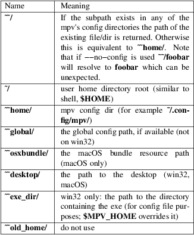
Per−File Options
When playing multiple files, any option given on the command
line usually affects all files. Example:
mpv −−a file1.mkv −−b file2.mkv −−c
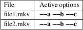
(This is different from MPlayer and mplayer2.)
Also, if any option is changed at runtime (via input commands), they are not reset when a new file is played.
Sometimes, it is useful to change options per−file. This can be achieved by adding the special per−file markers −−{ and −−}. (Note that you must escape these on some shells.) Example:
mpv −−a file1.mkv −−b −−\{ −−c file2.mkv −−d file3.mkv −−e −−\} file4.mkv −−f
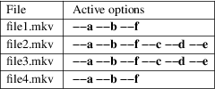
Additionally, any file−local option changed at runtime is reset when the current file stops playing. If option −−c is changed during playback of file2.mkv, it is reset when advancing to file3.mkv. This only affects file−local options. The option −−a is never reset here.
List
Options
Some options which store lists of option values can have
action suffixes. For example, the
−−display−tags option takes a
,−separated list of tags, but the option also
allows you to append a single tag with
−−display−tags−append, and
the tag name can for example contain a literal ,
without the need for escaping.
String list
and path list options
String lists are separated by ,. The strings are not
parsed or interpreted by the option system itself. However,
most
Path or file list options use : (Unix) or ; (Windows) as separator, instead of ,.
They support the following operations:
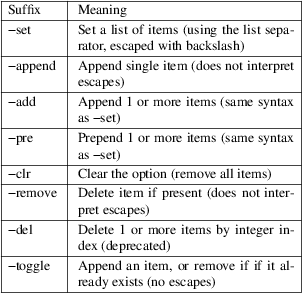
−append is meant as a simple way to append a single item without having to escape the argument (you may still need to escape on the shell level).
Key/value
list options
A key/value list is a list of key/value string pairs. In
programming languages, this type of data structure is often
called a map or a dictionary. The order normally does not
matter, although in some cases the order might matter.
They support the following operations:
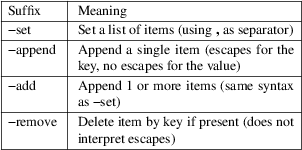
Keys are unique within the list. If an already present key is set, the existing key is removed before the new value is appended.
If you want to pass a value without interpreting it for escapes or ,, it is recommended to use the −add variant. When using libmpv, prefer using MPV_FORMAT_NODE_MAP; when using a scripting backend or the JSON IPC, use an appropriate structured data type.
Prior to mpv 0.33, : was also recognized as separator by −set.
Filter
options
This is a very complex option type for the
−−af and −−vf options
only. They often require complicated escaping. See VIDEO
FILTERS for details. They support the following
operations:
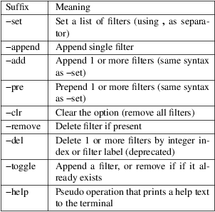
General
Without suffix, the operation used is normally
−set.
Although some operations allow specifying multiple items, using this is strongly discouraged and deprecated, except for −set. There is a chance that operations like −add and −pre will work like −append and accept a single, unescaped item only (so the , separator will not be interpreted and is passed on as part of the value).
Some options (like −−sub−file, −−audio−file, −−glsl−shader) are aliases for the proper option with −append action. For example, −−sub−file is an alias for −−sub−files−append.
Options of this type can be changed at runtime using the change−list command, which takes the suffix (without the −) as separate operation parameter.
Location and
Syntax
You can put all of the options in configuration files which
will be read every time mpv is run. The system−wide
configuration file 'mpv.conf' is in your configuration
directory (e.g. /etc/mpv or
/usr/local/etc/mpv), the user−specific one is
~/.config/mpv/mpv.conf. For details and platform
specifics (in particular Windows paths) see the FILES
section.
User−specific options override system−wide options and options given on the command line override either. The syntax of the configuration files is option=value. Everything after a # is considered a comment. Options that work without values can be enabled by setting them to yes and disabled by setting them to no. Even suboptions can be specified in this way.
Example configuration file
# Use GPU−accelerated video output by default.
vo=gpu
# Use quotes for text that can contain spaces:
term−status−msg="Time: ${time−pos}"
Escaping
spaces and special characters
This is done like with command line options. The shell is
not involved here, but option values still need to be quoted
as a whole if it contains certain characters like spaces. A
config entry can be quoted with ", as well as
with the fixed−length syntax (%n%) mentioned
before. This is like passing the exact contents of the
quoted string as command line option. C−style escapes
are currently _not_ interpreted on this level, although some
options do this manually. (This is a mess and should
probably be changed at some point.)
Putting
Command Line Options into the Configuration File
Almost all command line options can be put into the
configuration file. Here is a small guide:
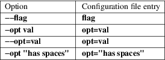
File−specific
Configuration Files
You can also write file−specific configuration files.
If you wish to have a configuration file for a file called
'video.avi', create a file named 'video.avi.conf' with the
file−specific options in it and put it in
~/.config/mpv/. You can also put the configuration
file in the same directory as the file to be played. Both
require you to set the
−−use−filedir−conf option
(either on the command line or in your global config file).
If a file−specific configuration file is found in the
same directory, no file−specific configuration is
loaded from ~/.config/mpv. In addition, the
−−use−filedir−conf option
enables directory−specific configuration files. For
this, mpv first tries to load a mpv.conf from the same
directory as the file played and then tries to load any
file−specific configuration.
Profiles
To ease working with different configurations, profiles can
be defined in the configuration files. A profile starts with
its name in square brackets, e.g. [my−profile].
All following options will be part of the profile. A
description (shown by −−profile=help) can
be defined with the profile−desc option. To end
the profile, start another one or use the profile name
default to continue with normal options.
You can list profiles with −−profile=help, and show the contents of a profile with −−show−profile=<name> (replace <name> with the profile name). You can apply profiles on start with the −−profile=<name> option, or at runtime with the apply−profile <name> command.
Example mpv config file with profiles
# normal top−level option fullscreen=yes # a profile that can be enabled with −−profile=big−cache [big−cache] cache=yes demuxer−max−bytes=123400KiB demuxer−readahead−secs=20 [slow] profile−desc="some profile name" # reference a builtin profile profile=gpu−hq [fast] vo=vdpau # using a profile again extends it [slow] framedrop=no # you can also include other profiles profile=big−cache
Runtime
profiles
Profiles can be set at runtime with
apply−profile command. Since this operation is
"destructive" (every item in a profile is simply
set as an option, overwriting the previous value), you can't
just enable and disable profiles again.
As a partial remedy, there is a way to make profiles save old option values before overwriting them with the profile values, and then restoring the old values at a later point using apply−profile <profile−name> restore.
This can be enabled with the profile−restore option, which takes one of the following options:
default
Does nothing, and nothing can be restored (default).
|
copy |
When applying a profile, copy the old values of all profile options to a backup before setting them from the profile. These options are reset to their old values using the backup when restoring. |
Every profile has its own list of backed up values. If the backup already exists (e.g. if apply−profile name was called more than once in a row), the existing backup is no changed. The restore operation will remove the backup.
It's important to know that restoring does not "undo" setting an option, but simply copies the old option value. Consider for example vf−add, appends an entry to vf. This mechanism will simply copy the entire vf list, and does _not_ execute the inverse of vf−add (that would be vf−remove) on restoring.
Note that if a profile contains recursive profiles (via the profile option), the options in these recursive profiles are treated as if they were part of this profile. The referenced profile's backup list is not used when creating or using the backup. Restoring a profile does not restore referenced profiles, only the options of referenced profiles (as if they were part of the main profile).
copy−equal
Similar to copy, but restore an option only if it has the same value as the value effectively set by the profile. This tries to deal with the situation when the user does not want the option to be reset after interactively changing it.
Example
[something] profile−restore=copy−equal vf−add=rotate=PI/2 # rotate by 90 degrees
Then running these commands will result in behavior as commented:
set vf vflip apply−profile something vf add hflip apply−profile something # vf == vflip,rotate=PI/2,hflip,rotate=PI/2 apply−profile something restore # vf == vflip
Conditional
auto profiles
Profiles which have the profile−cond option set
are applied automatically if the associated condition
matches (unless auto profiles are disabled). The option
takes a string, which is interpreted as Lua condition. If
evaluating the expression returns true, the profile is
applied, if it returns false, it is ignored. This Lua code
execution is not sandboxed.
Any variables in condition expressions can reference properties. If an identifier is not already defined by Lua or mpv, it is interpreted as property. For example, pause would return the current pause status. You cannot reference properties with − this way since that would denote a subtraction, but if the variable name contains any _ characters, they are turned into −. For example, playback_time would return the property playback−time.
A more robust way to access properties is using p.property_name or get("property−name", default_value). The automatic variable to property magic will break if a new identifier with the same name is introduced (for example, if a function named pause() were added, pause would return a function value instead of the value of the pause property).
Note that if a property is not available, it will return nil, which can cause errors if used in expressions. These are logged in verbose mode, and the expression is considered to be false.
Whenever a property referenced by a profile condition changes, the condition is re−evaluated. If the return value of the condition changes from false or error to true, the profile is applied.
This mechanism tries to "unapply" profiles once the condition changes from true to false. If you want to use this, you need to set profile−restore for the profile. Another possibility it to create another profile with an inverse condition to undo the other profile.
Recursive profiles can be used. But it is discouraged to reference other conditional profiles in a conditional profile, since this can lead to tricky and unintuitive behavior.
Example
Make only HD video look funny:
[something] profile−desc=HD video sucks profile−cond=width >= 1280 hue=−50
If you want the profile to be reverted if the condition goes to false again, you can set profile−restore:
[something] profile−desc=Mess up video when entering fullscreen profile−cond=fullscreen profile−restore=copy vf−add=rotate=PI/2 # rotate by 90 degrees
This appends the rotate filter to the video filter chain when entering fullscreen. When leaving fullscreen, the vf option is set to the value it had before entering fullscreen. Note that this would also remove any other filters that were added during fullscreen mode by the user. Avoiding this is trickier, and could for example be solved by adding a second profile with an inverse condition and operation:
[something] profile−cond=fullscreen vf−add=@rot:rotate=PI/2 [something−inv] profile−cond=not fullscreen vf−remove=@rot
WARNING:
Every time an involved property changes, the condition is evaluated again. If your condition uses p.playback_time for example, the condition is re−evaluated approximately on every video frame. This is probably slow.
This feature is
managed by an internal Lua script. Conditions are executed
as Lua code within this script. Its environment contains at
least the following things:
(function environment table)
Every Lua function has an environment table. This is used for identifier access. There is no named Lua symbol for it; it is implicit.
The environment does "magic" accesses to mpv properties. If an identifier is not already defined in _G, it retrieves the mpv property of the same name. Any occurrences of _ in the name are replaced with − before reading the property. The returned value is as retrieved by mp.get_property_native(name). Internally, a cache of property values, updated by observing the property is used instead, so properties that are not observable will be stuck at the initial value forever.
If you want to access properties, that actually contain _ in the name, use get() (which does not perform transliteration).
Internally, the environment table has a __index meta method set, which performs the access logic.
|
p |
A "magic" table similar to the environment table. Unlike the latter, this does not prefer accessing variables defined in _G − it always accesses properties. |
get(name [, def])
Read a property and return its value. If the property value is nil (e.g. if the property does not exist), def is returned.
This is superficially similar to mp.get_property_native(name). An important difference is that this accesses the property cache, and enables the change detection logic (which is essential to the dynamic runtime behavior of auto profiles). Also, it does not return an error value as second return value.
The "magic" tables mentioned above use this function as backend. It does not perform the _ transliteration.
In addition, the same environment as in a blank mpv Lua script is present. For example, math is defined and gives access to the Lua standard math library.
WARNING:
This feature is subject to change indefinitely. You might be forced to adjust your profiles on mpv updates.
Legacy auto
profiles
Some profiles are loaded automatically using a legacy
mechanism. The following example demonstrates this:
Auto profile loading
[extension.mkv] profile−desc="profile for .mkv files" vf=vflip
The profile name follows the schema type.name, where type can be protocol for the input/output protocol in use (see −−list−protocols), and extension for the extension of the path of the currently played file (not the file format).
This feature is very limited, and is considered soft−deprecated. Use conditional auto profiles.
There are three choices for using mpv from other programs or scripts:
|
1. |
Calling it as UNIX process. If you do this, do not parse terminal output. The terminal output is intended for humans, and may change any time. In addition, terminal behavior itself may change any time. Compatibility cannot be guaranteed. |
Your code should work even if you pass −−no−terminal. Do not attempt to simulate user input by sending terminal control codes to mpv's stdin. If you need interactive control, using −−input−ipc−server is recommended. This gives you access to the JSON IPC over unix domain sockets (or named pipes on Windows).
Depending on what you do, passing −−no−config or −−config−dir may be a good idea to avoid conflicts with the normal mpv user configuration intended for CLI playback.
Using −−input−ipc−server is also suitable for purposes like remote control (however, the IPC protocol itself is not "secure" and not intended to be so).
|
2. |
Using libmpv. This is generally recommended when mpv is used as playback backend for a completely different application. The provided C API is very close to CLI mechanisms and the scripting API. |
Note that even though libmpv has different defaults, it can be configured to work exactly like the CLI player (except command line parsing is unavailable).
See EMBEDDING INTO OTHER PROGRAMS (LIBMPV).
|
3. |
As a user script (LUA SCRIPTING, JAVASCRIPT, C PLUGINS). This is recommended when the goal is to "enhance" the CLI player. Scripts get access to the entire client API of mpv. |
This is the standard way to create third−party extensions for the player.
All these access the client API, which is the sum of the various mechanisms provided by the player core, as documented here: OPTIONS, List of Input Commands, Properties, List of events (also see C API), Hooks.
Screenshots of the currently played file can be taken using the 'screenshot' input mode command, which is by default bound to the s key. Files named mpv−shotNNNN.jpg will be saved in the working directory, using the first available number − no files will be overwritten. In pseudo−GUI mode, the screenshot will be saved somewhere else. See PSEUDO GUI MODE.
A screenshot will usually contain the unscaled video contents at the end of the video filter chain and subtitles. By default, S takes screenshots without subtitles, while s includes subtitles.
Unlike with MPlayer, the screenshot video filter is not required. This filter was never required in mpv, and has been removed.
During playback, mpv shows the playback status on the terminal. It looks like something like this:
AV: 00:03:12 / 00:24:25 (13%) A−V: −0.000
The status line can be overridden with the −−term−status−msg option.
The following is a list of things that can show up in the status line. Input properties, that can be used to get the same information manually, are also listed.
|
• |
AV: or V: (video only) or A: (audio only) | ||
|
• |
The current time position in HH:MM:SS format (playback−time property) | ||
|
• |
The total file duration (absent if unknown) (duration property) | ||
|
• |
Playback speed, e.g. x2.0. Only visible if the speed is not normal. This is the user−requested speed, and not the actual speed (usually they should be the same, unless playback is too slow). (speed property.) | ||
|
• |
Playback percentage, e.g. (13%). How much of the file has been played. Normally calculated out of playback position and duration, but can fallback to other methods (like byte position) if these are not available. (percent−pos property.) | ||
|
• |
The audio/video sync as A−V: 0.000. This is the difference between audio and video time. Normally it should be 0 or close to 0. If it's growing, it might indicate a playback problem. (avsync property.) | ||
|
• |
Total A/V sync change, e.g. ct: −0.417. Normally invisible. Can show up if there is audio "missing", or not enough frames can be dropped. Usually this will indicate a problem. (total−avsync−change property.) | ||
|
• |
Encoding state in {...}, only shown in encoding mode. | ||
|
• |
Display sync state. If display sync is active (display−sync−active property), this shows DS: 2.500/13, where the first number is average number of vsyncs per video frame (e.g. 2.5 when playing 24Hz videos on 60Hz screens), which might jitter if the ratio doesn't round off, or there are mistimed frames (vsync−ratio), and the second number of estimated number of vsyncs which took too long (vo−delayed−frame−count property). The latter is a heuristic, as it's generally not possible to determine this with certainty. | ||
|
• |
Dropped frames, e.g. Dropped: 4. Shows up only if the count is not 0. Can grow if the video framerate is higher than that of the display, or if video rendering is too slow. May also be incremented on "hiccups" and when the video frame couldn't be displayed on time. (frame−drop−count property.) If the decoder drops frames, the number of decoder−dropped frames is appended to the display as well, e.g.: Dropped: 4/34. This happens only if decoder frame dropping is enabled with the −−framedrop options. (decoder−frame−drop−count property.) | ||
|
• |
Cache state, e.g. Cache: 2s/134KB. Visible if the stream cache is enabled. The first value shows the amount of video buffered in the demuxer in seconds, the second value shows the estimated size of the buffered amount in kilobytes. (demuxer−cache−duration and demuxer−cache−state properties.) |
mpv is optimized for normal video playback, meaning it actually tries to buffer as much data as it seems to make sense. This will increase latency. Reducing latency is possible only by specifically disabling features which increase latency.
The builtin low−latency profile tries to apply some of the options which can reduce latency. You can use −−profile=low−latency to apply all of them. You can list the contents with −−show−profile=low−latency (some of the options are quite obscure, and may change every mpv release).
Be aware that some of the options can reduce playback quality.
Most latency is actually caused by inconvenient timing behavior. You can disable this with −−untimed, but it will likely break, unless the stream has no audio, and the input feeds data to the player at a constant rate.
Another common problem is with MJPEG streams. These do not signal the correct framerate. Using −−untimed or −−no−correct−pts −−fps=60 might help.
For livestreams, data can build up due to pausing the stream, due to slightly lower playback rate, or "buffering" pauses. If the demuxer cache is enabled, these can be skipped manually. The experimental drop−buffers command can be used to discard any buffered data, though it's very disruptive.
In some cases, manually tuning TCP buffer sizes and such can help to reduce latency.
Additional options that can be tried:
|
• |
−−opengl−glfinish=yes, can reduce buffering in the graphics driver | ||
|
• |
−−opengl−swapinterval=0, same | ||
|
• |
−−vo=xv, same | ||
|
• |
without audio −−framedrop=no −−speed=1.01 may help for live sources (results can be mixed) |
mpv is capable of storing the playback position of the currently playing file and resume from there the next time that file is played. This is done with the commands quit−watch−later (bound to Shift+Q by default) and write−watch−later−config, and with the −−save−position−on−quit option.
The difference between always quitting with a key bound to quit−watch−later and using −−save−position−on−quit is that the latter will save the playback position even when mpv is closed with a method other than a keybinding, for example if you shutdown your system without closing mpv beforehand, unless of course mpv is terminated abruptly and doesn't have the time to save (e.g. with the KILL Unix signal).
mpv also stores options other than the playback position when they have been modified after playback began, for example the volume and the fullscreen state, and restores their values the next time the file is played. Which options are saved can be configured with the −−watch−later−options option.
When playing multiple playlist entries, mpv checks if one them has a resume config file associated, and if it finds one it restarts playback from it. For example, if you use quit−watch−later on the 5th episode of a show, and later play all the episodes, mpv will automatically resume playback from episode 5.
More options to configure this functionality are listed in Watch Later.
http://..., https://, ...
Many network protocols are supported, but the protocol prefix must always be specified. mpv will never attempt to guess whether a filename is actually a network address. A protocol prefix is always required.
Note that not all prefixes are documented here. Undocumented prefixes are either aliases to documented protocols, or are just redirections to protocols implemented and documented in FFmpeg.
data: is supported in FFmpeg (not in Libav), but needs to be in the format data://. This is done to avoid ambiguity with filenames. You can also prefix it with lavf:// or ffmpeg://.
ytdl://...
By default, the youtube−dl hook script only looks at http(s) URLs. Prefixing an URL with ytdl:// forces it to be always processed by the script. This can also be used to invoke special youtube−dl functionality like playing a video by ID or invoking search.
Keep in mind that you can't pass youtube−dl command line options by this, and you have to use −−ytdl−raw−options instead.
−
Play data from stdin.
smb://PATH
Play a path from Samba share. (Requires FFmpeg support.)
bd://[title][/device] −−bluray−device=PATH
Play a Blu−ray disc. Since libbluray 1.0.1, you can read from ISO files by passing them to −−bluray−device.
title can be: longest or first (selects the default playlist); mpls/<number> (selects <number>.mpls playlist); <number> (select playlist with the same index). mpv will list the available playlists on loading.
bluray:// is an alias.
dvd://[title][/device] −−dvd−device=PATH
Play a DVD. DVD menus are not supported. If no title is given, the longest title is auto−selected. Without −−dvd−device, it will probably try to open an actual optical drive, if available and implemented for the OS.
dvdnav:// is an old alias for dvd:// and does exactly the same thing.
dvb://[cardnumber@]channel −−dvbin−...
Digital TV via DVB. (Linux only.)
mf://[filemask|@listfile] −−mf−...
Play a series of images as video.
cdda://[device] −−cdrom−device=PATH −−cdda−...
Play CD.
lavf://...
Access any FFmpeg/Libav libavformat protocol. Basically, this passed the string after the // directly to libavformat.
av://type:options
This is intended for using libavdevice inputs. type is the libavdevice demuxer name, and options is the (pseudo−)filename passed to the demuxer.
Example
mpv av://v4l2:/dev/video0 −−profile=low−latency −−untimed
This plays video from the first v4l input with nearly the lowest latency possible. It's a good replacement for the removed tv:// input. Using −−untimed is a hack to output a captured frame immediately, instead of respecting the input framerate. (There may be better ways to handle this in the future.)
avdevice:// is an alias.
file://PATH
A local path as URL. Might be useful in some special use−cases. Note that PATH itself should start with a third / to make the path an absolute path.
appending://PATH
Play a local file, but assume it's being appended to. This is useful for example for files that are currently being downloaded to disk. This will block playback, and stop playback only if no new data was appended after a timeout of about 2 seconds.
Using this is still a bit of a bad idea, because there is no way to detect if a file is actually being appended, or if it's still written. If you're trying to play the output of some program, consider using a pipe (something | mpv −). If it really has to be a file on disk, use tail to make it wait forever, e.g. tail −f −c +0 file.mkv | mpv −.
fd://123
Read data from the given file descriptor (for example 123). This is similar to piping data to stdin via −, but can use an arbitrary file descriptor. mpv may modify some file descriptor properties when the stream layer "opens" it.
fdclose://123
Like fd://, but the file descriptor is closed after use. When using this you need to ensure that the same fd URL will only be used once.
edl://[edl specification as in edl−mpv.rst]
Stitch together parts of multiple files and play them.
slice://start[−end]@URL
Read a slice of a stream.
start and end represent a byte range and accept suffixes such as KiB and MiB. end is optional.
if end starts with +, it is considered as offset from start.
Only works with seekable streams.
Examples:
mpv slice://1g−2g@cap.ts This starts reading from cap.ts after seeking 1 GiB, then reads until reaching 2 GiB or end of file. mpv slice://1g−+2g@cap.ts This starts reading from cap.ts after seeking 1 GiB, then reads until reaching 3 GiB or end of file. mpv slice://100m@appending://cap.ts This starts reading from cap.ts after seeking 100MiB, then reads until end of file.
null://
Simulate an empty file. If opened for writing, it will discard all data. The null demuxer will specifically pass autoprobing if this protocol is used (while it's not automatically invoked for empty files).
memory://data
Use the data part as source data.
hex://data
Like memory://, but the string is interpreted as hexdump.
mpv has no official GUI, other than the OSC (ON SCREEN CONTROLLER), which is not a full GUI and is not meant to be. However, to compensate for the lack of expected GUI behavior, mpv will in some cases start with some settings changed to behave slightly more like a GUI mode.
Currently this happens only in the following cases:
|
• |
if started using the mpv.desktop file on Linux (e.g. started from menus or file associations provided by desktop environments) | ||
|
• |
if started from explorer.exe on Windows (technically, if it was started on Windows, and all of the stdout/stderr/stdin handles are unset) | ||
|
• |
started out of the bundle on macOS | ||
|
• |
if you manually use −−player−operation−mode=pseudo−gui on the command line |
This mode applies options from the builtin profile builtin−pseudo−gui, but only if these haven't been set in the user's config file or on the command line, which is the main difference to using −−profile=builtin−pseudo−gui.
The profile is currently defined as follows:
[builtin−pseudo−gui] terminal=no force−window=yes idle=once screenshot−directory=~~desktop/
The pseudo−gui profile exists for compatibility. The options in the pseudo−gui profile are applied unconditionally. In addition, the profile makes sure to enable the pseudo−GUI mode, so that −−profile=pseudo−gui works like in older mpv releases:
[pseudo−gui] player−operation−mode=pseudo−gui
WARNING:
Currently, you can extend the pseudo−gui profile in the config file the normal way. This is deprecated. In future mpv releases, the behavior might change, and not apply your additional settings, and/or use a different profile name.
This subsection describes common problems on the Linux desktop. None of these problems exist on systems like Windows or macOS.
Disabling
Screensaver
By default, mpv tries to disable the OS screensaver during
playback (only if a VO using the OS GUI API is active).
−−stop−screensaver=no disables
this.
A common problem is that Linux desktop environments ignore the standard screensaver APIs on which mpv relies. In particular, mpv uses the Screen Saver extension (XSS) on X11, and the idle−inhibit protocol on Wayland.
GNOME in particular still ignores the idle−inhibit protocol, and has its own D−Bus interfaces for display power management, which mpv does not support.
Before mpv 0.33.0, the X11 backend ran xdg−screensaver reset in 10 second intervals when not paused in order to support screensaver inhibition in these environments. This functionality was removed in 0.33.0, but it is possible to call the xdg−screensaver command line program from a user script instead.
Track
Selection
−−alang=<languagecode[,languagecode,...]>
Specify a priority list of audio languages to use. Different container formats employ different language codes. DVDs use ISO 639−1 two−letter language codes, Matroska, MPEG−TS and NUT use ISO 639−2 three−letter language codes, while OGM uses a free−form identifier. See also −−aid.
This is a string list option. See List Options for details.
Examples
|
• |
mpv dvd://1 −−alang=hu,en chooses the Hungarian language track on a DVD and falls back on English if Hungarian is not available. | ||
|
• |
mpv −−alang=jpn example.mkv plays a Matroska file with Japanese audio. |
−−slang=<languagecode[,languagecode,...]>
Specify a priority list of subtitle languages to use. Different container formats employ different language codes. DVDs use ISO 639−1 two letter language codes, Matroska uses ISO 639−2 three letter language codes while OGM uses a free−form identifier. See also −−sid.
This is a string list option. See List Options for details.
Examples
|
• |
mpv dvd://1 −−slang=hu,en chooses the Hungarian subtitle track on a DVD and falls back on English if Hungarian is not available. | ||
|
• |
mpv −−slang=jpn example.mkv plays a Matroska file with Japanese subtitles. |
−−vlang=<...>
Equivalent to −−alang and −−slang, for video tracks.
This is a string list option. See List Options for details.
−−aid=<ID|auto|no>
Select audio track. auto selects the default, no disables audio. See also −−alang. mpv normally prints available audio tracks on the terminal when starting playback of a file.
−−audio is an alias for −−aid.
−−aid=no or −−audio=no or −−no−audio disables audio playback. (The latter variant does not work with the client API.)
NOTE:
The track selection options (−−aid but also −−sid and the others) sometimes expose behavior that may appear strange. Also, the behavior tends to change around with each mpv release.
The track selection properties will return the option value outside of playback (as expected), but during playback, the affective track selection is returned. For example, with −−aid=auto, the aid property will suddenly return 2 after playback initialization (assuming the file has at least 2 audio tracks, and the second is the default).
At mpv 0.32.0 (and some releases before), if you passed a track value for which a corresponding track didn't exist (e.g. −−aid=2 and there was only 1 audio track), the aid property returned no. However if another audio track was added during playback, and you tried to set the aid property to 2, nothing happened, because the aid option still had the value 2, and writing the same value has no effect.
With mpv 0.33.0, the behavior was changed. Now track selection options are reset to auto at playback initialization, if the option had tries to select a track that does not exist. The same is done if the track exists, but fails to initialize. The consequence is that unlike before mpv 0.33.0, the user's track selection parameters are clobbered in certain situations.
Also since mpv 0.33.0, trying to select a track by number will strictly select this track. Before this change, trying to select a track which did not exist would fall back to track default selection at playback initialization. The new behavior is more consistent.
Setting a track selection property at runtime, and then playing a new file might reset the track selection to defaults, if the fingerprint of the track list of the new file is different.
Be aware of tricky combinations of all of all of the above: for example, mpv −−aid=2 file_with_2_audio_tracks.mkv file_with_1_audio_track.mkv would first play the correct track, and the second file without audio. If you then go back the first file, its first audio track will be played, and the second file is played with audio. If you do the same thing again but instead of using −−aid=2 you run set aid 2 while the file is playing, then changing to the second file will play its audio track. This is because runtime selection enables the fingerprint heuristic.
Most likely this is not the end.
−−sid=<ID|auto|no>
Display the subtitle stream specified by <ID>. auto selects the default, no disables subtitles.
−−sub is an alias for −−sid.
−−sid=no or −−sub=no or −−no−sub disables subtitle decoding. (The latter variant does not work with the client API.)
−−vid=<ID|auto|no>
Select video channel. auto selects the default, no disables video.
−−video is an alias for −−vid.
−−vid=no or −−video=no or −−no−video disables video playback. (The latter variant does not work with the client API.)
If video is disabled, mpv will try to download the audio only if media is streamed with youtube−dl, because it saves bandwidth. This is done by setting the ytdl_format to "bestaudio/best" in the ytdl_hook.lua script.
−−edition=<ID|auto>
(Matroska files only) Specify the edition (set of chapters) to use, where 0 is the first. If set to auto (the default), mpv will choose the first edition declared as a default, or if there is no default, the first edition defined.
−−track−auto−selection=<yes|no>
Enable the default track auto−selection (default: yes). Enabling this will make the player select streams according to −−aid, −−alang, and others. If it is disabled, no tracks are selected. In addition, the player will not exit if no tracks are selected, and wait instead (this wait mode is similar to pausing, but the pause option is not set).
This is useful with −−lavfi−complex: you can start playback in this mode, and then set select tracks at runtime by setting the filter graph. Note that if −−lavfi−complex is set before playback is started, the referenced tracks are always selected.
−−subs−with−matching−audio=<yes|no>
When autoselecting a subtitle track, select a non−forced one even if the selected audio stream matches your preferred subtitle language (default: yes). Disable this if you'd like to only show subtitles for foreign audio or onscreen text.
Playback
Control
−−start=<relative time>
Seek to given time position.
The general format for times is [+|−][[hh:]mm:]ss[.ms]. If the time is prefixed with −, the time is considered relative from the end of the file (as signaled by the demuxer/the file). A + is usually ignored (but see below).
The following alternative time specifications are recognized:
pp% seeks to percent position pp (0−100).
#c seeks to chapter number c. (Chapters start from 1.)
none resets any previously set option (useful for libmpv).
If −−rebase−start−time=no is given, then prefixing times with + makes the time relative to the start of the file. A timestamp without prefix is considered an absolute time, i.e. should seek to a frame with a timestamp as the file contains it. As a bug, but also a hidden feature, putting 1 or more spaces before the + or − always interprets the time as absolute, which can be used to seek to negative timestamps (useful for debugging at most).
Examples
−−start=+56, −−start=00:56
Seeks to the start time + 56 seconds.
−−start=−56, −−start=−00:56
Seeks to the end time − 56 seconds.
−−start=01:10:00
Seeks to 1 hour 10 min.
−−start=50%
Seeks to the middle of the file.
−−start=30 −−end=40
Seeks to 30 seconds, plays 10 seconds, and exits.
−−start=−3:20 −−length=10
Seeks to 3 minutes and 20 seconds before the end of the file, plays 10 seconds, and exits.
−−start='#2' −−end='#4'
Plays chapters 2 and 3, and exits.
−−end=<relative time>
Stop at given time. Use −−length if the time should be relative to −−start. See −−start for valid option values and examples.
−−length=<relative time>
Stop after a given time relative to the start time. See −−start for valid option values and examples.
If both −−end and −−length are provided, playback will stop when it reaches either of the two endpoints.
Obscurity note: this does not work correctly if −−rebase−start−time=no, and the specified time is not an "absolute" time, as defined in the −−start option description.
−−rebase−start−time=<yes|no>
Whether to move the file start time to 00:00:00 (default: yes). This is less awkward for files which start at a random timestamp, such as transport streams. On the other hand, if there are timestamp resets, the resulting behavior can be rather weird. For this reason, and in case you are actually interested in the real timestamps, this behavior can be disabled with no.
−−speed=<0.01−100>
Slow down or speed up playback by the factor given as parameter.
If −−audio−pitch−correction (on by default) is used, playing with a speed higher than normal automatically inserts the scaletempo2 audio filter.
−−pause
Start the player in paused state.
−−shuffle
Play files in random order.
−−playlist−start=<auto|index>
Set which file on the internal playlist to start playback with. The index is an integer, with 0 meaning the first file. The value auto means that the selection of the entry to play is left to the playback resume mechanism (default). If an entry with the given index doesn't exist, the behavior is unspecified and might change in future mpv versions. The same applies if the playlist contains further playlists (don't expect any reasonable behavior). Passing a playlist file to mpv should work with this option, though. E.g. mpv playlist.m3u −−playlist−start=123 will work as expected, as long as playlist.m3u does not link to further playlists.
The value no is a deprecated alias for auto.
−−playlist=<filename>
Play files according to a playlist file. Supports some common formats. If no format is detected, it will be treated as list of files, separated by newline characters. You may need this option to load plaintext files as a playlist. Note that XML playlist formats are not supported.
This option forces −−demuxer=playlist to interpret the playlist file. Some playlist formats, notably CUE and optical disc formats, need to use different demuxers and will not work with this option. They still can be played directly, without using this option.
You can play playlists directly, without this option. Before mpv version 0.31.0, this option disabled any security mechanisms that might be in place, but since 0.31.0 it uses the same security mechanisms as playing a playlist file directly. If you trust the playlist file, you can disable any security checks with −−load−unsafe−playlists. Because playlists can load other playlist entries, consider applying this option only to the playlist itself and not its entries, using something along these lines:
mpv −−{ −−playlist=filename −−load−unsafe−playlists −−}
WARNING:
The way older versions of mpv played playlist files via −−playlist was not safe against maliciously constructed files. Such files may trigger harmful actions. This has been the case for all verions of mpv prior to 0.31.0, and all MPlayer versions, but unfortunately this fact was not well documented earlier, and some people have even misguidedly recommended the use of −−playlist with untrusted sources. Do NOT use −−playlist with random internet sources or files you do not trust if you are not sure your mpv is at least 0.31.0.
In particular, playlists can contain entries using protocols other than local files, such as special protocols like avdevice:// (which are inherently unsafe).
−−chapter−merge−threshold=<number>
Threshold for merging almost consecutive ordered chapter parts in milliseconds (default: 100). Some Matroska files with ordered chapters have inaccurate chapter end timestamps, causing a small gap between the end of one chapter and the start of the next one when they should match. If the end of one playback part is less than the given threshold away from the start of the next one then keep playing video normally over the chapter change instead of doing a seek.
−−chapter−seek−threshold=<seconds>
Distance in seconds from the beginning of a chapter within which a backward chapter seek will go to the previous chapter (default: 5.0). Past this threshold, a backward chapter seek will go to the beginning of the current chapter instead. A negative value means always go back to the previous chapter.
−−hr−seek=<no|absolute|yes|default>
Select when to use precise seeks that are not limited to keyframes. Such seeks require decoding video from the previous keyframe up to the target position and so can take some time depending on decoding performance. For some video formats, precise seeks are disabled. This option selects the default choice to use for seeks; it is possible to explicitly override that default in the definition of key bindings and in input commands.
|
no |
Never use precise seeks. |
absolute
Use precise seeks if the seek is to an absolute position in the file, such as a chapter seek, but not for relative seeks like the default behavior of arrow keys.
default
Like absolute, but enable hr−seeks in audio−only cases. The exact behavior is implementation specific and may change with new releases (default).
|
yes |
Use precise seeks whenever possible. |
|||
|
always |
Same as yes (for compatibility). |
−−hr−seek−demuxer−offset=<seconds>
This option exists to work around failures to do precise seeks (as in −−hr−seek) caused by bugs or limitations in the demuxers for some file formats. Some demuxers fail to seek to a keyframe before the given target position, going to a later position instead. The value of this option is subtracted from the time stamp given to the demuxer. Thus, if you set this option to 1.5 and try to do a precise seek to 60 seconds, the demuxer is told to seek to time 58.5, which hopefully reduces the chance that it erroneously goes to some time later than 60 seconds. The downside of setting this option is that precise seeks become slower, as video between the earlier demuxer position and the real target may be unnecessarily decoded.
−−hr−seek−framedrop=<yes|no>
Allow the video decoder to drop frames during seek, if these frames are before the seek target. If this is enabled, precise seeking can be faster, but if you're using video filters which modify timestamps or add new frames, it can lead to precise seeking skipping the target frame. This e.g. can break frame backstepping when deinterlacing is enabled.
Default: yes
−−index=<mode>
Controls how to seek in files.
Note that if the index is missing from a file, it will be
built on the fly by default, so you don't need to change
this. But it might help with some broken files.
default
use an index if the file has one, or build it if missing
recreate
don't read or use the file's index
NOTE:
This option only works if the underlying media supports seeking (i.e. not with stdin, pipe, etc).
−−load−unsafe−playlists
Load URLs from playlists which are considered unsafe (default: no). This includes special protocols and anything that doesn't refer to normal files. Local files and HTTP links on the other hand are always considered safe.
In addition, if a playlist is loaded while this is set, the added playlist entries are not marked as originating from network or potentially unsafe location. (Instead, the behavior is as if the playlist entries were provided directly to mpv command line or loadfile command.)
−−access−references=<yes|no>
Follow any references in the file being opened (default: yes). Disabling this is helpful if the file is automatically scanned (e.g. thumbnail generation). If the thumbnail scanner for example encounters a playlist file, which contains network URLs, and the scanner should not open these, enabling this option will prevent it. This option also disables ordered chapters, mov reference files, opening of archives, and a number of other features.
On older FFmpeg versions, this will not work in some cases. Some FFmpeg demuxers might not respect this option.
This option does not prevent opening of paired subtitle files and such. Use −−autoload−files=no to prevent this.
This option does not always work if you open non−files (for example using dvd://directory would open a whole bunch of files in the given directory). Prefixing the filename with ./ if it doesn't start with a / will avoid this.
−−loop−playlist=<N|inf|force|no>, −−loop−playlist
Loops playback N times. A value of 1 plays it one time (default), 2 two times, etc. inf means forever. no is the same as 1 and disables looping. If several files are specified on command line, the entire playlist is looped. −−loop−playlist is the same as −−loop−playlist=inf.
The force mode is like inf, but does not skip playlist entries which have been marked as failing. This means the player might waste CPU time trying to loop a file that doesn't exist. But it might be useful for playing webradios under very bad network conditions.
−−loop−file=<N|inf|no>, −−loop=<N|inf|no>
Loop a single file N times. inf means forever, no means normal playback. For compatibility, −−loop−file and −−loop−file=yes are also accepted, and are the same as −−loop−file=inf.
The difference to −−loop−playlist is that this doesn't loop the playlist, just the file itself. If the playlist contains only a single file, the difference between the two option is that this option performs a seek on loop, instead of reloading the file.
NOTE:
−−loop−file counts the number of times it causes the player to seek to the beginning of the file, not the number of full playthroughs. This means −−loop−file=1 will end up playing the file twice. Contrast with −−loop−playlist, which counts the number of full playthroughs.
−−loop is an alias for this option.
−−ab−loop−a=<time>, −−ab−loop−b=<time>
Set loop points. If playback passes the b timestamp, it will seek to the a timestamp. Seeking past the b point doesn't loop (this is intentional).
If a is after b, the behavior is as if the points were given in the right order, and the player will seek to b after crossing through a. This is different from old behavior, where looping was disabled (and as a bug, looped back to a on the end of the file).
If either options are set to no (or unset), looping is disabled. This is different from old behavior, where an unset a implied the start of the file, and an unset b the end of the file.
The loop−points can be adjusted at runtime with the corresponding properties. See also ab−loop command.
−−ab−loop−count=<N|inf>
Run A−B loops only N times, then ignore the A−B loop points (default: inf). Every finished loop iteration will decrement this option by 1 (unless it is set to inf or 0). inf means that looping goes on forever. If this option is set to 0, A−B looping is ignored, and even the ab−loop command will not enable looping again (the command will show (disabled) on the OSD message if both loop points are set, but ab−loop−count is 0).
−−ordered−chapters, −−no−ordered−chapters
Enabled by default. Disable support for Matroska ordered chapters. mpv will not load or search for video segments from other files, and will also ignore any chapter order specified for the main file.
−−ordered−chapters−files=<playlist−file>
Loads the given file as playlist, and tries to use the files contained in it as reference files when opening a Matroska file that uses ordered chapters. This overrides the normal mechanism for loading referenced files by scanning the same directory the main file is located in.
Useful for loading ordered chapter files that are not located on the local filesystem, or if the referenced files are in different directories.
Note: a playlist can be as simple as a text file containing filenames separated by newlines.
−−chapters−file=<filename>
Load chapters from this file, instead of using the chapter metadata found in the main file.
This accepts a media file (like mkv) or even a pseudo−format like ffmetadata and uses its chapters to replace the current file's chapters. This doesn't work with OGM or XML chapters directly.
−−sstep=<sec>
Skip <sec> seconds after every frame.
NOTE:
Without −−hr−seek, skipping will snap to keyframes.
−−stop−playback−on−init−failure=<yes|no>
Stop playback if either audio or video fails to initialize (default: no). With no, playback will continue in video−only or audio−only mode if one of them fails. This doesn't affect playback of audio−only or video−only files.
−−play−dir=<forward|+|backward|−>
Control the playback direction (default: forward). Setting backward will attempt to play the file in reverse direction, with decreasing playback time. If this is set on playback starts, playback will start from the end of the file. If this is changed at during playback, a hr−seek will be issued to change the direction.
+ and − are aliases for forward and backward.
The rest of this option description pertains to the backward mode.
NOTE:
Backward playback is extremely fragile. It may not always work, is much slower than forward playback, and breaks certain other features. How well it works depends mainly on the file being played. Generally, it will show good results (or results at all) only if the stars align.
mpv, as well as most media formats, were designed for forward playback only. Backward playback is bolted on top of mpv, and tries to make a medium effort to make backward playback work. Depending on your use−case, another tool may work much better.
Backward playback is not exactly a 1st class feature. Implementation tradeoffs were made, that are bad for backward playback, but in turn do not cause disadvantages for normal playback. Various possible optimizations are not implemented in order to keep the complexity down. Normally, a media player is highly pipelined (future data is prepared in separate threads, so it is available in realtime when the next stage needs it), but backward playback will essentially stall the pipeline at various random points.
For example, for intra−only codecs are trivially backward playable, and tools built around them may make efficient use of them (consider video editors or camera viewers). mpv won't be efficient in this case, because it uses its generic backward playback algorithm, that on top of it is not very optimized.
If you just want to quickly go backward through the video and just show "keyframes", just use forward playback, and hold down the left cursor key (which on CLI with default config sends many small relative seek commands).
The implementation consists of mostly 3 parts:
|
• |
Backward demuxing. This relies on the demuxer cache, so the demuxer cache should (or must, didn't test it) be enabled, and its size will affect performance. If the cache is too small or too large, quadratic runtime behavior may result. | ||
|
• |
Backward decoding. The decoder library used (libavcodec) does not support this. It is emulated by feeding bits of data in forward, putting the result in a queue, returning the queue data to the VO in reverse, and then starting over at an earlier position. This can require buffering an extreme amount of decoded data, and also completely breaks pipelining. | ||
|
• |
Backward output. This is relatively simple, because the decoder returns the frames in the needed order. However, this may cause various problems because filters see audio and video going backward. |
Known problems:
|
• |
It's fragile. If anything doesn't work, random non−useful behavior may occur. In simple cases, the player will just play nonsense and artifacts. In other cases, it may get stuck or heat the CPU. (Exceeding memory usage significantly beyond the user−set limits would be a bug, though.) | ||
|
• |
Performance and resource usage isn't good. In part this is inherent to backward playback of normal media formats, and in parts due to implementation choices and tradeoffs. | ||
|
• |
This is extremely reliant on good demuxer behavior. Although backward demuxing requires no special demuxer support, it is required that the demuxer performs seeks reliably, fulfills some specific requirements about packet metadata, and has deterministic behavior. | ||
|
• |
Starting playback exactly from the end may or may not work, depending on seeking behavior and file duration detection. | ||
|
• |
Some container formats, audio, and video codecs are not supported due to their behavior. There is no list, and the player usually does not detect them. Certain live streams (including TV captures) may exhibit problems in particular, as well as some lossy audio codecs. h264 intra−refresh is known not to work due to problems with libavcodec. WAV and some other raw audio formats tend to have problems − there are hacks for dealing with them, which may or may not work. | ||
|
• |
Backward demuxing of subtitles is not supported. Subtitle display still works for some external text subtitle formats. (These are fully read into memory, and only backward display is needed.) Text subtitles that are cached in the subtitle renderer also have a chance to be displayed correctly. | ||
|
• |
Some features dealing with playback of broken or hard to deal with files will not work fully (such as timestamp correction). | ||
|
• |
If demuxer low level seeks (i.e. seeking the actual demuxer instead of just within the demuxer cache) are performed by backward playback, the created seek ranges may not join, because not enough overlap is achieved. | ||
|
• |
Trying to use this with hardware video decoding will probably exhaust all your GPU memory and then crash a thing or two. Or it will fail because −−hwdec−extra−frames will certainly be set too low. | ||
|
• |
Stream recording is broken. −−stream−record may keep working if you backward play within a cached region only. | ||
|
• |
Relative seeks may behave weird. Small seeks backward (towards smaller time, i.e. seek −1) may not really seek properly, and audio will remain muted for a while. Using hr−seek is recommended, which should have none of these problems. | ||
|
• |
Some things are just weird. For example, while seek commands manipulate playback time in the expected way (provided they work correctly), the framestep commands are transposed. Backstepping will perform very expensive work to step forward by 1 frame. |
Tuning:
|
• |
Remove all −−vf/−−af filters you have set. Disable hardware decoding. Disable idiotic nonsense like SPDIF passthrough. | ||
|
• |
Increasing −−video−reversal−buffer might help if reversal queue overflow is reported, which may happen in high bitrate video, or video with large GOP. Hardware decoding mostly ignores this, and you need to increase −−hwdec−extra−frames instead (until you get playback without logged errors). | ||
|
• |
The demuxer cache is essential for backward demuxing. Make sure to set −−cache=yes. The cache size might matter. If it's too small, a queue overflow will be logged, and backward playback cannot continue, or it performs too many low level seeks. If it's too large, implementation tradeoffs may cause general performance issues. Use −−demuxer−max−bytes to potentially increase the amount of packets the demuxer layer can queue for reverse demuxing (basically it's the −−video−reversal−buffer equivalent for the demuxer layer). | ||
|
• |
Setting −−vd−queue−enable=yes can help a lot to make playback smooth (once it works). | ||
|
• |
−−demuxer−backward−playback−step also factors into how many seeks may be performed, and whether backward demuxing could break due to queue overflow. If it's set too high, the backstep operation needs to search through more packets all the time, even if the cache is large enough. | ||
|
• |
Setting −−demuxer−cache−wait may be useful to cache the entire file into the demuxer cache. Set −−demuxer−max−bytes to a large size to make sure it can read the entire cache; −−demuxer−max−back−bytes should also be set to a large size to prevent that tries to trim the cache. | ||
|
• |
If audio artifacts are audible, even though the AO does not underrun, increasing −−audio−backward−overlap might help in some cases. |
−−video−reversal−buffer=<bytesize>, −−audio−reversal−buffer=<bytesize>
For backward decoding. Backward decoding decodes forward in steps, and then reverses the decoder output. These options control the approximate maximum amount of bytes that can be buffered. The main use of this is to avoid unbounded resource usage; during normal backward playback, it's not supposed to hit the limit, and if it does, it will drop frames and complain about it.
Use this option if you get reversal queue overflow errors during backward playback. Increase the size until the warning disappears. Usually, the video buffer will overflow first, especially if it's high resolution video.
This does not work correctly if video hardware decoding is used. The video frame size will not include the referenced GPU and driver memory. Some hardware decoders may also be limited by −−hwdec−extra−frames.
How large the queue size needs to be depends entirely on the way the media was encoded. Audio typically requires a very small buffer, while video can require excessively large buffers.
(Technically, this allows the last frame to exceed the limit. Also, this does not account for other buffered frames, such as inside the decoder or the video output.)
This does not affect demuxer cache behavior at all.
See −−list−options for defaults and value range. <bytesize> options accept suffixes such as KiB and MiB.
−−video−backward−overlap=<auto|number>,
−−audio−backward−overlap=<auto|number>
Number of overlapping keyframe ranges to use for backward decoding (default: auto) ("keyframe" to be understood as in the mpv/ffmpeg specific meaning). Backward decoding works by forward decoding in small steps. Some codecs cannot restart decoding from any packet (even if it's marked as seek point), which becomes noticeable with backward decoding (in theory this is a problem with seeking too, but −−hr−seek−demuxer−offset can fix it for seeking). In particular, MDCT based audio codecs are affected.
The solution is to feed a previous packet to the decoder each time, and then discard the output. This option controls how many packets to feed. The auto choice is currently hardcoded to 0 for video, and uses 1 for lossy audio, 0 for lossless audio. For some specific lossy audio codecs, this is set to 2.
−−video−backward−overlap can potentially handle intra−refresh video, depending on the exact conditions. You may have to use the −−vd−lavc−show−all option as well.
−−video−backward−batch=<number>, −−audio−backward−batch=<number>
Number of keyframe ranges to decode at once when backward decoding (default: 1 for video, 10 for audio). Another pointless tuning parameter nobody should use. This should affect performance only. In theory, setting a number higher than 1 for audio will reduce overhead due to less frequent backstep operations and less redundant decoding work due to fewer decoded overlap frames (see −−audio−backward−overlap). On the other hand, it requires a larger reversal buffer, and could make playback less smooth due to breaking pipelining (e.g. by decoding a lot, and then doing nothing for a while).
It probably never makes sense to set −−video−backward−batch. But in theory, it could help with intra−only video codecs by reducing backstep operations.
−−demuxer−backward−playback−step=<seconds>
Number of seconds the demuxer should seek back to get new packets during backward playback (default: 60). This is useful for tuning backward playback, see −−play−dir for details.
Setting this to a very low value or 0 may make the player think seeking is broken, or may make it perform multiple seeks.
Setting this to a high value may lead to quadratic runtime behavior.
Program
Behavior
−−help, −−h
Show short summary of options.
You can also pass a string to this option, which will list all top−level options which contain the string in the name, e.g. −−h=scale for all options that contain the word scale. The special string * lists all top−level options.
|
−v |
Increment verbosity level, one level for each −v found on the command line. |
−−version, −V
Print version string and exit.
−−no−config
Do not load default configuration files. This prevents loading of both the user−level and system−wide mpv.conf and input.conf files. Other configuration files are blocked as well, such as resume playback files.
NOTE:
Files explicitly requested by command line options, like −−include or −−use−filedir−conf, will still be loaded.
See also: −−config−dir.
−−list−options
Prints all available options.
−−list−properties
Print a list of the available properties.
−−list−protocols
Print a list of the supported protocols.
−−log−file=<path>
Opens the given path for writing, and print log messages to it. Existing files will be truncated. The log level is at least −v −v, but can be raised via −−msg−level (the option cannot lower it below the forced minimum log level).
A special case is the macOS bundle, it will create a log file at ~/Library/Logs/mpv.log by default.
−−config−dir=<path>
Force a different configuration directory. If this is set, the given directory is used to load configuration files, and all other configuration directories are ignored. This means the global mpv configuration directory as well as per−user directories are ignored, and overrides through environment variables (MPV_HOME) are also ignored.
Note that the −−no−config option takes precedence over this option.
−−dump−stats=<filename>
Write certain statistics to the given file. The file is truncated on opening. The file will contain raw samples, each with a timestamp. To make this file into a readable, the script TOOLS/stats−conv.py can be used (which currently displays it as a graph).
This option is useful for debugging only.
−−idle=<no|yes|once>
Makes mpv wait idly instead of quitting when there is no file to play. Mostly useful in input mode, where mpv can be controlled through input commands. (Default: no)
once will only idle at start and let the player close once the first playlist has finished playing back.
−−include=<configuration−file>
Specify configuration file to be parsed after the default ones.
−−load−scripts=<yes|no>
If set to no, don't auto−load scripts from the scripts configuration subdirectory (usually ~/.config/mpv/scripts/). (Default: yes)
−−script=<filename>, −−scripts=file1.lua:file2.lua:...
Load a Lua script. The second option allows you to load multiple scripts by separating them with the path separator (: on Unix, ; on Windows).
−−scripts is a path list option. See List Options for details.
−−script−opts=key1=value1,key2=value2,...
Set options for scripts. A script can query an option by key. If an option is used and what semantics the option value has depends entirely on the loaded scripts. Values not claimed by any scripts are ignored.
This is a key/value list option. See List Options for details.
−−merge−files
Pretend that all files passed to mpv are concatenated into a single, big file. This uses timeline/EDL support internally.
−−profile=<profile1,profile2,...>
Use the given profile(s), −−profile=help displays a list of the defined profiles.
−−reset−on−next−file=<all|option1,option2,...>
Normally, mpv will try to keep all settings when playing the next file on the playlist, even if they were changed by the user during playback. (This behavior is the opposite of MPlayer's, which tries to reset all settings when starting next file.)
Default: Do not reset anything.
This can be changed with this option. It accepts a list of options, and mpv will reset the value of these options on playback start to the initial value. The initial value is either the default value, or as set by the config file or command line.
In some cases, this might not work as expected. For example, −−volume will only be reset if it is explicitly set in the config file or the command line.
The special name all resets as many options as possible.
This is a string list option. See List Options for details.
Examples
|
• |
−−reset−on−next−file=pause Reset pause mode when switching to the next file. | ||
|
• |
−−reset−on−next−file=fullscreen,speed Reset fullscreen and playback speed settings if they were changed during playback. | ||
|
• |
−−reset−on−next−file=all Try to reset all settings that were changed during playback. |
−−show−profile=<profile>
Show the description and content of a profile. Lists all profiles if no parameter is provided.
−−use−filedir−conf
Look for a file−specific configuration file in the same directory as the file that is being played. See File−specific Configuration Files.
WARNING:
May be dangerous if playing from untrusted media.
−−ytdl, −−no−ytdl
Enable the youtube−dl hook−script. It will look at the input URL, and will play the video located on the website. This works with many streaming sites, not just the one that the script is named after. This requires a recent version of youtube−dl to be installed on the system. (Enabled by default.)
If the script can't do anything with an URL, it will do nothing.
This accepts a
set of options, which can be passed to it with the
−−script−opts option (using
ytdl_hook− as prefix):
try_ytdl_first=<yes|no>
If 'yes' will try parsing the URL with youtube−dl first, instead of the default where it's only after mpv failed to open it. This mostly depends on whether most of your URLs need youtube−dl parsing.
exclude=<URL1|URL2|...
A |−separated list of URL patterns which mpv should not use with youtube−dl. The patterns are matched after the http(s):// part of the URL.
^ matches the beginning of the URL, $ matches its end, and you should use % before any of the characters ^$()%|,.[]*+−? to match that character.
Examples
|
• |
−−script−opts=ytdl_hook−exclude='^youtube%.com' will exclude any URL that starts with http://youtube.com or https://youtube.com. | ||
|
• |
−−script−opts=ytdl_hook−exclude='%.mkv$|%.mp4$' will exclude any URL that ends with .mkv or .mp4. |
See more lua patterns here: https://www.lua.org/manual/5.1/manual.html#5.4.1
all_formats=<yes|no>
If 'yes' will attempt to add all formats found reported by youtube−dl (default: no). Each format is added as a separate track. In addition, they are delay−loaded, and actually opened only when a track is selected (this should keep load times as low as without this option).
It adds average bitrate metadata, if available, which means you can use −−hls−bitrate to decide which track to select. (HLS used to be the only format whose alternative quality streams were exposed in a similar way, thus the option name.)
Tracks which represent formats that were selected by youtube−dl as default will have the default flag set. This means mpv should generally still select formats chosen with −−ytdl−format by default.
Although this mechanism makes it possible to switch streams at runtime, it's not suitable for this purpose for various technical reasons. (It's slow, which can't be really fixed.) In general, this option is not useful, and was only added to show that it's possible.
There are two cases that must be considered when doing quality/bandwidth selection:
|
1. |
Completely separate audio and video streams (DASH−like). Each of these streams contain either only audio or video, so you can mix and combine audio/video bandwidths without restriction. This intuitively matches best with the concept of selecting quality by track (what all_formats is supposed to do). | ||
|
2. |
Separate sets of muxed audio and video streams. Each version of the media contains both an audio and video stream, and they are interleaved. In order not to waste bandwidth, you should only select one of these versions (if, for example, you select an audio stream, then video will be downloaded, even if you selected video from a different stream). |
mpv will still represent them as separate tracks, but will set the title of each track to muxed−N, where N is replaced with the youtube−dl format ID of the originating stream.
Some sites will mix 1. and 2., but we assume that they do so for compatibility reasons, and there is no reason to use them at all.
force_all_formats=<yes|no>
If set to 'yes', and all_formats is also set to 'yes', this will try to represent all youtube−dl reported formats as tracks, even if mpv would normally use the direct URL reported by it (default: yes).
It appears this normally makes a difference if youtube−dl works on a master HLS playlist.
If this is set to 'no', this specific kind of stream is treated like all_formats is set to 'no', and the stream selection as done by youtube−dl (via −−ytdl−format) is used.
use_manifests=<yes|no>
Make mpv use the master manifest URL for formats like HLS and DASH, if available, allowing for video/audio selection in runtime (default: no). It's disabled ("no") by default for performance reasons.
ytdl_path=youtube−dl
Configure paths to youtube−dl's executable or a compatible fork's. The paths should be separated by : on Unix and ; on Windows. mpv looks in order for the configured paths in PATH and in mpv's config directory. The defaults are "yt−dlp", "yt−dlp_x86" and "youtube−dl". On Windows the suffix extension ".exe" is always appended.
Why do the option names mix _ and −?
I have no idea.
−−ytdl−format=<ytdl|best|worst|mp4|webm|...>
Video format/quality that is directly passed to youtube−dl. The possible values are specific to the website and the video, for a given url the available formats can be found with the command youtube−dl −−list−formats URL. See youtube−dl's documentation for available aliases. (Default: bestvideo+bestaudio/best)
The ytdl value does not pass a −−format option to youtube−dl at all, and thus does not override its default. Note that sometimes youtube−dl returns a format that mpv cannot use, and in these cases the mpv default may work better.
−−ytdl−raw−options=<key>=<value>[,<key>=<value>[,...]]
Pass arbitrary options to youtube−dl. Parameter and argument should be passed as a key−value pair. Options without argument must include =.
There is no sanity checking so it's possible to break things (i.e. passing invalid parameters to youtube−dl).
A proxy URL can be passed for youtube−dl to use it in parsing the website. This is useful for geo−restricted URLs. After youtube−dl parsing, some URLs also require a proxy for playback, so this can pass that proxy information to mpv. Take note that SOCKS proxies aren't supported and https URLs also bypass the proxy. This is a limitation in FFmpeg.
This is a key/value list option. See List Options for details.
Example
|
• |
−−ytdl−raw−options=username=user,password=pass | ||
|
• |
−−ytdl−raw−options=force−ipv6= | ||
|
• |
−−ytdl−raw−options=proxy=[http://127.0.0.1:3128] | ||
|
• |
−−ytdl−raw−options−append=proxy=http://127.0.0.1:3128 |
−−load−stats−overlay=<yes|no>
Enable the builtin script that shows useful playback information on a key binding (default: yes). By default, the i key is used (I to make the overlay permanent).
−−load−osd−console=<yes|no>
Enable the built−in script that shows a console on a key binding and lets you enter commands (default: yes). The ` key is used to show the console by default, and ESC to hide it again.
−−load−auto−profiles=<yes|no|auto>
Enable the builtin script that does auto profiles (default: auto). See Conditional auto profiles for details. auto will load the script, but immediately unload it if there are no conditional profiles.
−−player−operation−mode=<cplayer|pseudo−gui>
For enabling "pseudo GUI mode", which means that the defaults for some options are changed. This option should not normally be used directly, but only by mpv internally, or mpv−provided scripts, config files, or .desktop files. See PSEUDO GUI MODE for details.
Watch Later
−−save−position−on−quit
Always save the current playback position on quit. When this file is played again later, the player will seek to the old playback position on start. This does not happen if playback of a file is stopped in any other way than quitting. For example, going to the next file in the playlist will not save the position, and start playback at beginning the next time the file is played.
This behavior is disabled by default, but is always available when quitting the player with Shift+Q.
See RESUMING PLAYBACK.
−−watch−later−directory=<path>
The directory in which to store the "watch later" temporary files.
The default is a subdirectory named "watch_later" underneath the config directory (usually ~/.config/mpv/).
−−no−resume−playback
Do not restore playback position from the watch_later configuration subdirectory (usually ~/.config/mpv/watch_later/).
−−resume−playback−check−mtime
Only restore the playback position from the watch_later configuration subdirectory (usually ~/.config/mpv/watch_later/) if the file's modification time is the same as at the time of saving. This may prevent skipping forward in files with the same name which have different content. (Default: no)
−−watch−later−options=option1,option2,...
The options that are saved in "watch later" files if they have been changed since when mpv started. These values will be restored the next time the files are played. The playback position is always saved as start, so adding start to this list has no effect.
When removing options, existing watch later data won't be modified and will still be applied fully, but new watch later data won't contain these options.
This is a string list option. See List Options for details.
Examples
|
• |
−−watch−later−options−remove=fullscreen The fullscreen state won't be saved to watch later files. | ||
|
• |
−−watch−later−options−remove=volume −−watch−later−options−remove=mute The volume and mute state won't be saved to watch later files. | ||
|
• |
−−watch−later−options−clr No option will be saved to watch later files except the starting position. |
−−write−filename−in−watch−later−config
Prepend the watch later config files with the name of the file they refer to. This is simply written as comment on the top of the file.
WARNING:
This option may expose privacy−sensitive information and is thus disabled by default.
−−ignore−path−in−watch−later−config
Ignore path (i.e. use filename only) when using watch later feature. (Default: disabled)
Video
−−vo=<driver>
Specify the video output backend to be used. See VIDEO OUTPUT DRIVERS for details and descriptions of available drivers.
−−vd=<...>
Specify a priority list of video decoders to be used, according to their family and name. See −−ad for further details. Both of these options use the same syntax and semantics; the only difference is that they operate on different codec lists.
NOTE:
See −−vd=help for a full list of available decoders.
−−vf=<filter1[=parameter1:parameter2:...],filter2,...>
Specify a list of video filters to apply to the video stream. See VIDEO FILTERS for details and descriptions of the available filters. The option variants −−vf−add, −−vf−pre, −−vf−del and −−vf−clr exist to modify a previously specified list, but you should not need these for typical use.
−−untimed
Do not sleep when outputting video frames. Useful for benchmarks when used with −−no−audio.
−−framedrop=<mode>
Skip displaying some frames to maintain A/V sync on slow systems, or playing high framerate video on video outputs that have an upper framerate limit.
The argument selects the drop methods, and can be one of the following:
|
<no> |
Disable any frame dropping. Not recommended, for testing only. | ||
|
<vo> |
Drop late frames on video output (default). This still decodes and filters all frames, but doesn't render them on the VO. Drops are indicated in the terminal status line as Dropped: field. |
In audio sync. mode, this drops frames that are outdated at the time of display. If the decoder is too slow, in theory all frames would have to be dropped (because all frames are too late) − to avoid this, frame dropping stops if the effective framerate is below 10 FPS.
In display−sync. modes (see −−video−sync), this affects only how A/V drops or repeats frames. If this mode is disabled, A/V desync will in theory not affect video scheduling anymore (much like the display−resample−desync mode). However, even if disabled, frames will still be skipped (i.e. dropped) according to the ratio between video and display frequencies.
This is the recommended mode, and the default.
<decoder>
Old, decoder−based framedrop mode. (This is the same as −−framedrop=yes in mpv 0.5.x and before.) This tells the decoder to skip frames (unless they are needed to decode future frames). May help with slow systems, but can produce unwatchable choppy output, or even freeze the display completely.
This uses a heuristic which may not make sense, and in general cannot achieve good results, because the decoder's frame dropping cannot be controlled in a predictable manner. Not recommended.
Even if you want to use this, prefer decoder+vo for better results.
The −−vd−lavc−framedrop option controls what frames to drop.
<decoder+vo>
Enable both modes. Not recommended. Better than just decoder mode.
NOTE:
−−vo=vdpau has its own code for the vo framedrop mode. Slight differences to other VOs are possible.
−−video−latency−hacks=<yes|no>
Enable some things which tend to reduce video latency by 1 or 2 frames (default: no). Note that this option might be removed without notice once the player's timing code does not inherently need to do these things anymore.
This does:
|
• |
Use the demuxer reported FPS for frame dropping. This avoids the player needing to decode 1 frame in advance, lowering total latency in effect. This also means that if the demuxer reported FPS is wrong, or the video filter chain changes FPS (e.g. deinterlacing), then it could drop too many or not enough frames. | ||
|
• |
Disable waiting for the first video frame. Normally the player waits for the first video frame to be fully rendered before starting playback properly. Some VOs will lazily initialize stuff when rendering the first frame, so if this is not done, there is some likeliness that the VO has to drop some frames if rendering the first frame takes longer than needed. |
−−override−display−fps=<fps>
Set the display FPS used with the −−video−sync=display−* modes. By default, a detected value is used. Keep in mind that setting an incorrect value (even if slightly incorrect) can ruin video playback. On multi−monitor systems, there is a chance that the detected value is from the wrong monitor.
Set this option only if you have reason to believe the automatically determined value is wrong.
−−display−fps=<fps>
Deprecated alias for −−override−display−fps.
−−hwdec=<api>
Specify the hardware video decoding API that should be used if possible. Whether hardware decoding is actually done depends on the video codec. If hardware decoding is not possible, mpv will fall back on software decoding.
Hardware decoding is not enabled by default, to keep the out−of−the−box configuration as reliable as possible. However, when using modern hardware, hardware video decoding should work correctly, offering reduced CPU usage, and possibly lower power consumption. On older systems, it may be necessary to use hardware decoding due to insufficient CPU resources; and even on modern systems, sufficiently complex content (eg: 4K60 AV1) may require it.
NOTE:
Use the Ctrl+h shortcut to toggle hardware decoding at runtime. It toggles this option between auto and no.
If you decide you want to use hardware decoding by default, the general recommendation is to try out decoding with the command line option, and prove to yourself that it works as desired for the content you care about. After that, you can add it to your config file.
When testing, you should start by using hwdec=auto−safe as it will limit itself to choosing from hwdecs that are actively supported by the development team. If that doesn't result in working hardware decoding, you can try hwdec=auto to have it attempt to load every possible hwdec, but if auto−safe didn't work, you will probably need to know exactly which hwdec matches your hardware and read up on that entry below.
If auto−safe or auto produced the desired results, we recommend just sticking with that and only setting a specific hwdec in your config file if it is really necessary.
If you use the Ubuntu package, keep in mind that their /etc/mpv/mpv.conf contains hwdec=vaapi, which is less than ideal as it may not be the right choice for your system, and it may end up using an inefficient wrapper library under the covers. We recommend removing this line or deleting the file altogether.
NOTE:
Even if enabled, hardware
decoding is still only white−listed for some codecs.
See −−hwdec−codecs to enable
hardware decoding in more cases.
Which method to choose?
|
• |
If you only want to enable hardware decoding at runtime, don't set the parameter, or put hwdec=no into your mpv.conf (relevant on distros which force−enable it by default, such as on Ubuntu). Use the Ctrl+h default binding to enable it at runtime. | ||
|
• |
If you're not sure, but want hardware decoding always enabled by default, put hwdec=auto−safe into your mpv.conf, and acknowledge that this may cause problems. | ||
|
• |
If you want to test available hardware decoding methods, pass −−hwdec=auto −−hwdec−codecs=all and look at the terminal output. | ||
|
• |
If you're a developer, or want to perform elaborate tests, you may need any of the other possible option values. |
<api> can be one of the following:
|
no |
always use software decoding (default) | ||
|
auto |
forcibly enable any hw decoder found (see below) | ||
|
yes |
exactly the same as auto |
auto−safe
enable any whitelisted hw decoder (see below)
auto−copy
enable best hw decoder with copy−back (see below)
Actively
supported hwdecs:
d3d11va
requires −−vo=gpu with −−gpu−context=d3d11 or −−gpu−context=angle (Windows 8+ only)
d3d11va−copy
copies video back to system RAM (Windows 8+ only)
videotoolbox
requires −−vo=gpu (macOS 10.8 and up), or −−vo=libmpv (iOS 9.0 and up)
videotoolbox−copy
copies video back into system RAM (macOS 10.8 or iOS 9.0 and up)
|
vaapi |
requires −−vo=gpu, −−vo=vaapi or −−vo=dmabuf−wayland (Linux only) |
vaapi−copy
copies video back into system RAM (Linux with some GPUs only)
|
nvdec |
requires −−vo=gpu (Any platform CUDA is available) |
nvdec−copy
copies video back to system RAM (Any platform CUDA is available)
|
drm |
requires −−vo=gpu (Linux only) |
drm−copy
copies video back to system RAM (Linux ony)
Other hwdecs (only use if you know you have to):
|
dxva2 |
requires −−vo=gpu with −−gpu−context=d3d11, −−gpu−context=angle or −−gpu−context=dxinterop (Windows only) |
dxva2−copy
copies video back to system RAM (Windows only)
|
vdpau |
requires −−vo=gpu with X11, or −−vo=vdpau (Linux only) |
vdpau−copy
copies video back into system RAM (Linux with some GPUs only)
mediacodec
requires −−vo=gpu −−gpu−context=android or −−vo=mediacodec_embed (Android only)
mediacodec−copy
copies video back to system RAM (Android only)
|
mmal |
requires −−vo=gpu (Raspberry Pi only − default if available) |
mmal−copy
copies video back to system RAM (Raspberry Pi only)
|
cuda |
requires −−vo=gpu (Any platform CUDA is available) |
cuda−copy
copies video back to system RAM (Any platform CUDA is available)
crystalhd
copies video back to system RAM (Any platform supported by hardware)
|
rkmpp |
requires −−vo=gpu (some RockChip devices only) |
auto tries to automatically enable hardware decoding using the first available method. This still depends what VO you are using. For example, if you are not using −−vo=gpu or −−vo=vdpau, vdpau decoding will never be enabled. Also note that if the first found method doesn't actually work, it will always fall back to software decoding, instead of trying the next method (might matter on some Linux systems).
auto−safe is similar to auto, but allows only whitelisted methods that are considered "safe". This is supposed to be a reasonable way to enable hardware decdoding by default in a config file (even though you shouldn't do that anyway; prefer runtime enabling with Ctrl+h). Unlike auto, this will not try to enable unknown or known−to−be−bad methods. In addition, this may disable hardware decoding in other situations when it's known to cause problems, but currently this mechanism is quite primitive. (As an example for something that still causes problems: certain combinations of HEVC and Intel chips on Windows tend to cause mpv to crash, most likely due to driver bugs.)
auto−copy−safe selects the union of methods selected with auto−safe and auto−copy.
auto−copy selects only modes that copy the video data back to system memory after decoding. This selects modes like vaapi−copy (and so on). If none of these work, hardware decoding is disabled. This mode is usually guaranteed to incur no additional quality loss compared to software decoding (assuming modern codecs and an error free video stream), and will allow CPU processing with video filters. This mode works with all video filters and VOs.
Because these copy the decoded video back to system RAM, they're often less efficient than the direct modes, and may not help too much over software decoding if you are short on CPU resources.
NOTE:
Most non−copy methods only work with the OpenGL GPU backend. Currently, only the vaapi, nvdec and cuda methods work with Vulkan.
The vaapi mode, if used with −−vo=gpu, requires Mesa 11, and most likely works with Intel and AMD GPUs only. It also requires the opengl EGL backend.
nvdec and nvdec−copy are the newest, and recommended method to do hardware decoding on Nvidia GPUs.
cuda and cuda−copy are an older implementation of hardware decoding on Nvidia GPUs that uses Nvidia's bitstream parsers rather than FFmpeg's. This can lead to feature deficiencies, such as incorrect playback of HDR content, and nvdec/nvdec−copy should always be preferred unless you specifically need Nvidia's deinterlacing algorithms. To use this deinterlacing you must pass the option: vd−lavc−o=deint=[weave|bob|adaptive]. Pass weave (or leave the option unset) to not attempt any deinterlacing.
Quality reduction with hardware decoding
In theory, hardware decoding does not reduce video quality (at least for the codecs h264 and HEVC). However, due to restrictions in video output APIs, as well as bugs in the actual hardware decoders, there can be some loss, or even blatantly incorrect results. This has largely ceased to be a problem with modern hardware, but there is a lot of hardware out there, so caveat emptor. Known problems are discussed below, but the list cannot be considered exhaustive, as even hwdecs that work well on certain hardware generations may be problematic on other ones.
In some cases, RGB conversion is forced, which means the RGB conversion is performed by the hardware decoding API, instead of the shaders used by −−vo=gpu. This means certain colorspaces may not display correctly, and certain filtering (such as debanding) cannot be applied in an ideal way. This will also usually force the use of low quality chroma scalers instead of the one specified by −−cscale. In other cases, hardware decoding can also reduce the bit depth of the decoded image, which can introduce banding or precision loss for 10−bit files.
vdpau always does RGB conversion in hardware, which does not support newer colorspaces like BT.2020 correctly. However, vdpau doesn't support 10 bit or HDR encodings, so these limitations are unlikely to be relevant.
dxva2 is not safe. It appears to always use BT.601 for forced RGB conversion, but actual behavior depends on the GPU drivers. Some drivers appear to convert to limited range RGB, which gives a faded appearance. In addition to driver−specific behavior, global system settings might affect this additionally. This can give incorrect results even with completely ordinary video sources.
rpi always uses the hardware overlay renderer, even with −−vo=gpu.
mediacodec is not safe. It forces RGB conversion (not with −copy) and how well it handles non−standard colorspaces is not known. In the rare cases where 10−bit is supported the bit depth of the output will be reduced to 8.
cuda should usually be safe, but depending on how a file/stream has been mixed, it has been reported to corrupt the timestamps causing glitched, flashing frames. It can also sometimes cause massive framedrops for unknown reasons. Caution is advised, and nvdec should always be preferred.
crystalhd is not safe. It always converts to 4:2:2 YUV, which may be lossy, depending on how chroma sub−sampling is done during conversion. It also discards the top left pixel of each frame for some reason.
If you run into any weird decoding issues, frame glitches or discoloration, and you have −−hwdec turned on, the first thing you should try is disabling it.
−−gpu−hwdec−interop=<auto|all|no|name>
This option is for troubleshooting hwdec interop issues. Since it's a debugging option, its semantics may change at any time.
This is useful for the gpu and libmpv VOs for selecting which hwdec interop context to use exactly. Effectively it also can be used to block loading of certain backends.
If set to auto (default), the behavior depends on the VO: for gpu, it does nothing, and the interop context is loaded on demand (when the decoder probes for −−hwdec support). For libmpv, which has has no on−demand loading, this is equivalent to all.
The empty string is equivalent to auto.
If set to all, it attempts to load all interop contexts at GL context creation time.
Other than that, a specific backend can be set, and the list of them can be queried with help (mpv CLI only).
Runtime changes to this are ignored (the current option value is used whenever the renderer is created).
The old aliases −−opengl−hwdec−interop and −−hwdec−preload are barely related to this anymore, but will be somewhat compatible in some cases.
−−hwdec−extra−frames=<N>
Number of GPU frames hardware decoding should preallocate (default: see −−list−options output). If this is too low, frame allocation may fail during decoding, and video frames might get dropped and/or corrupted. Setting it too high simply wastes GPU memory and has no advantages.
This value is used only for hardware decoding APIs which require preallocating surfaces (known examples include d3d11va and vaapi). For other APIs, frames are allocated as needed. The details depend on the libavcodec implementations of the hardware decoders.
The required number of surfaces depends on dynamic runtime situations. The default is a fixed value that is thought to be sufficient for most uses. But in certain situations, it may not be enough.
−−hwdec−image−format=<name>
Set the internal pixel format used by hardware decoding via −−hwdec (default no). The special value no selects an implementation specific standard format. Most decoder implementations support only one format, and will fail to initialize if the format is not supported.
Some implementations might support multiple formats. In particular, videotoolbox is known to require uyvy422 for good performance on some older hardware. d3d11va can always use yuv420p, which uses an opaque format, with likely no advantages.
−−cuda−decode−device=<auto|0..>
Choose the GPU device used for decoding when using the cuda or nvdec hwdecs with the OpenGL GPU backend, and with the cuda−copy or nvdec−copy hwdecs in all cases.
For the OpenGL GPU backend, the default device used for decoding is the one being used to provide gpu output (and in the vast majority of cases, only one GPU will be present).
For the copy hwdecs, the default device will be the first device enumerated by the CUDA libraries − however that is done.
For the Vulkan GPU backend, decoding must always happen on the display device, and this option has no effect.
−−vaapi−device=<device file>
Choose the DRM device for vaapi−copy. This should be the path to a DRM device file. (Default: /dev/dri/renderD128)
−−panscan=<0.0−1.0>
Enables pan−and−scan functionality (cropping the sides of e.g. a 16:9 video to make it fit a 4:3 display without black bands). The range controls how much of the image is cropped. May not work with all video output drivers.
This option has no effect if −−video−unscaled option is used.
−−video−aspect−override=<ratio|no>
Override video aspect ratio, in case aspect information is incorrect or missing in the file being played.
These values have special meaning:
|
0 |
disable aspect ratio handling, pretend the video has square pixels | ||
|
no |
same as 0 | ||
|
−1 |
use the video stream or container aspect (default) |
But note that handling of these special values might change in the future.
Examples
|
• |
−−video−aspect−override=4:3 or −−video−aspect−override=1.3333 | ||
|
• |
−−video−aspect−override=16:9 or −−video−aspect−override=1.7777 | ||
|
• |
−−no−video−aspect−override or −−video−aspect−override=no |
−−video−aspect−method=<bitstream|container>
This sets the default video
aspect determination method (if the aspect is _not_
overridden by the user with
−−video−aspect−override or
others).
container
Strictly prefer the container aspect ratio. This is apparently the default behavior with VLC, at least with Matroska. Note that if the container has no aspect ratio set, the behavior is the same as with bitstream.
bitstream
Strictly prefer the bitstream aspect ratio, unless the bitstream aspect ratio is not set. This is apparently the default behavior with XBMC/kodi, at least with Matroska.
The current default for mpv is container.
Normally you should not set this. Try the various choices if you encounter video that has the wrong aspect ratio in mpv, but seems to be correct in other players.
−−video−unscaled=<no|yes|downscale−big>
Disable scaling of the video. If the window is larger than the video, black bars are added. Otherwise, the video is cropped, unless the option is set to downscale−big, in which case the video is fit to window. The video still can be influenced by the other −−video−... options. This option disables the effect of −−panscan.
Note that the scaler algorithm may still be used, even if the video isn't scaled. For example, this can influence chroma conversion. The video will also still be scaled in one dimension if the source uses non−square pixels (e.g. anamorphic widescreen DVDs).
This option is disabled if the −−no−keepaspect option is used.
−−video−pan−x=<value>, −−video−pan−y=<value>
Moves the displayed video rectangle by the given value in the X or Y direction. The unit is in fractions of the size of the scaled video (the full size, even if parts of the video are not visible due to panscan or other options).
For example, displaying a 1280x720 video fullscreen on a 1680x1050 screen with −−video−pan−x=−0.1 would move the video 168 pixels to the left (making 128 pixels of the source video invisible).
This option is disabled if the −−no−keepaspect option is used.
−−video−rotate=<0−359|no>
Rotate the video clockwise, in degrees. If no is given, the video is never rotated, even if the file has rotation metadata. (The rotation value is added to the rotation metadata, which means the value 0 would rotate the video according to the rotation metadata.)
When using hardware decoding without copy−back, only 90° steps work, while software decoding and hardware decoding methods that copy the video back to system memory support all values between 0 and 359.
−−video−zoom=<value>
Adjust the video display scale factor by the given value. The parameter is given log 2. For example, −−video−zoom=0 is unscaled, −−video−zoom=1 is twice the size, −−video−zoom=−2 is one fourth of the size, and so on.
This option is disabled if the −−no−keepaspect option is used.
−−video−scale−x=<value>, −−video−scale−y=<value>
Multiply the video display size with the given value (default: 1.0). If a non−default value is used, this will be different from the window size, so video will be either cut off, or black bars are added.
This value is multiplied with the value derived from −−video−zoom and the normal video aspect ratio. This option is disabled if the −−no−keepaspect option is used.
−−video−align−x=<−1−1>, −−video−align−y=<−1−1>
Moves the video rectangle within the black borders, which are usually added to pad the video to screen if video and screen aspect ratios are different. −−video−align−y=−1 would move the video to the top of the screen (leaving a border only on the bottom), a value of 0 centers it (default), and a value of 1 would put the video at the bottom of the screen.
If video and screen aspect match perfectly, these options do nothing.
This option is disabled if the −−no−keepaspect option is used.
−−video−margin−ratio−left=<val>,
−−video−margin−ratio−right=<val>,
−−video−margin−ratio−top=<val>,
−−video−margin−ratio−bottom=<val>
Set extra video margins on each border (default: 0). Each value is a ratio of the window size, using a range 0.0−1.0. For example, setting the option −−video−margin−ratio−right=0.2 at a window size of 1000 pixels will add a 200 pixels border on the right side of the window.
The video is "boxed" by these margins. The window size is not changed. In particular it does not enlarge the window, and the margins will cause the video to be downscaled by default. This may or may not change in the future.
The margins are applied after 90° video rotation, but before any other video transformations.
This option is disabled if the −−no−keepaspect option is used.
Subtitles still may use the margins, depending on −−sub−use−margins and similar options.
These options were created for the OSC. Some odd decisions, such as making the margin values a ratio (instead of pixels), were made for the sake of the OSC. It's possible that these options may be replaced by ones that are more generally useful. The behavior of these options may change to fit OSC requirements better, too.
−−correct−pts, −−no−correct−pts
−−no−correct−pts switches mpv to a mode where video timing is determined using a fixed framerate value (either using the −−fps option, or using file information). Sometimes, files with very broken timestamps can be played somewhat well in this mode. Note that video filters, subtitle rendering, seeking (including hr−seeks and backstepping), and audio synchronization can be completely broken in this mode.
−−fps=<float>
Override video framerate. Useful if the original value is wrong or missing.
NOTE:
Works in −−no−correct−pts mode only.
−−deinterlace=<yes|no>
Enable or disable interlacing (default: no). Interlaced video shows ugly comb−like artifacts, which are visible on fast movement. Enabling this typically inserts the yadif video filter in order to deinterlace the video, or lets the video output apply deinterlacing if supported.
This behaves exactly like the deinterlace input property (usually mapped to d).
Keep in mind that this will conflict with manually inserted deinterlacing filters, unless you take care. (Since mpv 0.27.0, even the hardware deinterlace filters will conflict. Also since that version, −−deinterlace=auto was removed, which used to mean that the default interlacing option of possibly inserted video filters was used.)
Note that this will make video look worse if it's not actually interlaced.
−−frames=<number>
Play/convert only first <number> video frames, then quit.
−−frames=0 loads the file, but immediately quits before initializing playback. (Might be useful for scripts which just want to determine some file properties.)
For audio−only playback, any value greater than 0 will quit playback immediately after initialization. The value 0 works as with video.
−−video−output−levels=<outputlevels>
RGB color levels used with YUV to RGB conversion. Normally, output devices such as PC monitors use full range color levels. However, some TVs and video monitors expect studio RGB levels. Providing full range output to a device expecting studio level input results in crushed blacks and whites, the reverse in dim gray blacks and dim whites.
Not all VOs support this option. Some will silently ignore it.
Available color ranges are:
|
auto |
automatic selection (equals to full range) (default) |
limited
limited range (16−235 per component), studio levels
|
full |
full range (0−255 per component), PC levels |
NOTE:
It is advisable to use your graphics driver's color range option instead, if available.
−−hwdec−codecs=<codec1,codec2,...|all>
Allow hardware decoding for a given list of codecs only. The special value all always allows all codecs.
You can get the list of allowed codecs with mpv −−vd=help. Remove the prefix, e.g. instead of lavc:h264 use h264.
By default, this is set to h264,vc1,hevc,vp8,vp9,av1. Note that the hardware acceleration special codecs like h264_vdpau are not relevant anymore, and in fact have been removed from Libav in this form.
This is usually only needed with broken GPUs, where a codec is reported as supported, but decoding causes more problems than it solves.
Example
mpv −−hwdec=vdpau −−vo=vdpau
−−hwdec−codecs=h264,mpeg2video
Enable vdpau decoding for h264 and mpeg2 only.
−−vd−lavc−check−hw−profile=<yes|no>
Check hardware decoder profile (default: yes). If no is set, the highest profile of the hardware decoder is unconditionally selected, and decoding is forced even if the profile of the video is higher than that. The result is most likely broken decoding, but may also help if the detected or reported profiles are somehow incorrect.
−−vd−lavc−software−fallback=<yes|no|N>
Fallback to software decoding if the hardware−accelerated decoder fails (default: 3). If this is a number, then fallback will be triggered if N frames fail to decode in a row. 1 is equivalent to yes.
Setting this to a higher number might break the playback start fallback: if a fallback happens, parts of the file will be skipped, approximately by to the number of packets that could not be decoded. Values below an unspecified count will not have this problem, because mpv retains the packets.
−−vd−lavc−film−grain=<auto|cpu|gpu>
Enables film grain application on the GPU. If video decoding is done on the CPU, doing film grain application on the GPU can speed up decoding. This option can also help hardware decoding, as it can reduce the number of frame copies done.
By default, it's set to auto, so if the VO supports film grain application, then it will be treated as gpu. If the VO does not support this, then it will be treated as cpu, regardless of the setting. Currently, only gpu−next supports film grain application.
−−vd−lavc−dr=<auto|yes|no>
Enable direct rendering (default: auto). If this is set to yes, the video will be decoded directly to GPU video memory (or staging buffers). This can speed up video upload, and may help with large resolutions or slow hardware. This works only with the following VOs:
|
• |
gpu: requires at least OpenGL 4.4 or Vulkan. | ||
|
• |
libmpv: The libmpv render API has optional support. |
The auto option will try to guess whether DR can improve performance on your particular hardware. Currently this enables it on AMD or NVIDIA if using OpenGL or unconditionally if using Vulkan.
Using video filters of any kind that write to the image data (or output newly allocated frames) will silently disable the DR code path.
−−vd−lavc−bitexact
Only use bit−exact algorithms in all decoding steps (for codec testing).
−−vd−lavc−fast (MPEG−1/2 and H.264 only)
Enable optimizations which do not comply with the format specification and potentially cause problems, like simpler dequantization, simpler motion compensation, assuming use of the default quantization matrix, assuming YUV 4:2:0 and skipping a few checks to detect damaged bitstreams.
−−vd−lavc−o=<key>=<value>[,<key>=<value>[,...]]
Pass AVOptions to libavcodec decoder. Note, a patch to make the o= unneeded and pass all unknown options through the AVOption system is welcome. A full list of AVOptions can be found in the FFmpeg manual.
Some options which used to be direct options can be set with this mechanism, like bug, gray, idct, ec, vismv, skip_top (was st), skip_bottom (was sb), debug.
This is a key/value list option. See List Options for details.
Example
−−vd−lavc−o=debug=pict
−−vd−lavc−show−all=<yes|no>
Show even broken/corrupt frames (default: no). If this option is set to no, libavcodec won't output frames that were either decoded before an initial keyframe was decoded, or frames that are recognized as corrupted.
−−vd−lavc−skiploopfilter=<skipvalue> (H.264, HEVC only)
Skips the loop filter (AKA deblocking) during decoding. Since the filtered frame is supposed to be used as reference for decoding dependent frames, this has a worse effect on quality than not doing deblocking on e.g. MPEG−2 video. But at least for high bitrate HDTV, this provides a big speedup with little visible quality loss. Codecs other than H.264 or HEVC may have partial support for this option (often only all and none).
<skipvalue> can be one of the following:
|
none |
Never skip. |
default
Skip useless processing steps (e.g. 0 size packets in AVI).
|
nonref |
Skip frames that are not referenced (i.e. not used for decoding other frames, the error cannot "build up"). | ||
|
bidir |
Skip B−Frames. | ||
|
nonkey |
Skip all frames except keyframes. | ||
|
all |
Skip all frames. |
−−vd−lavc−skipidct=<skipvalue> (MPEG−1/2/4 only)
Skips the IDCT step. This degrades quality a lot in almost all cases (see skiploopfilter for available skip values).
−−vd−lavc−skipframe=<skipvalue>
Skips decoding of frames completely. Big speedup, but jerky motion and sometimes bad artifacts (see skiploopfilter for available skip values).
−−vd−lavc−framedrop=<skipvalue>
Set framedropping mode used with −−framedrop (see skiploopfilter for available skip values).
−−vd−lavc−threads=<N>
Number of threads to use for decoding. Whether threading is actually supported depends on codec (default: 0). 0 means autodetect number of cores on the machine and use that, up to the maximum of 16. You can set more than 16 threads manually.
−−vd−lavc−assume−old−x264=<yes|no>
Assume the video was encoded by an old, buggy x264 version (default: no). Normally, this is autodetected by libavcodec. But if the bitstream contains no x264 version info (or it was somehow skipped), and the stream was in fact encoded by an old x264 version (build 150 or earlier), and if the stream uses 4:4:4 chroma, then libavcodec will by default show corrupted video. This option sets the libavcodec x264_build option to 150, which means that if the stream contains no version info, or was not encoded by x264 at all, it assumes it was encoded by the old version. Enabling this option is pretty safe if you want your broken files to work, but in theory this can break on streams not encoded by x264, or if a stream encoded by a newer x264 version contains no version info.
−−swapchain−depth=<N>
Allow up to N in−flight frames. This essentially controls the frame latency. Increasing the swapchain depth can improve pipelining and prevent missed vsyncs, but increases visible latency. This option only mandates an upper limit, the implementation can use a lower latency than requested internally. A setting of 1 means that the VO will wait for every frame to become visible before starting to render the next frame. (Default: 3)
Audio
−−audio−pitch−correction=<yes|no>
If this is enabled (default), playing with a speed different from normal automatically inserts the scaletempo2 audio filter. For details, see audio filter section.
−−audio−device=<name>
Use the given audio device. This consists of the audio output name, e.g. alsa, followed by /, followed by the audio output specific device name. The default value for this option is auto, which tries every audio output in preference order with the default device.
You can list audio devices with −−audio−device=help. This outputs the device name in quotes, followed by a description. The device name is what you have to pass to the −−audio−device option. The list of audio devices can be retrieved by API by using the audio−device−list property.
While the option normally takes one of the strings as indicated by the methods above, you can also force the device for most AOs by building it manually. For example name/foobar forces the AO name to use the device foobar. However, the −−ao option will strictly force a specific AO. To avoid confusion, don't use −−ao and −−audio−device together.
Example for ALSA
MPlayer and mplayer2 required you to replace any ',' with '.' and any ':' with '=' in the ALSA device name. For example, to use the device named dmix:default, you had to do:
−ao alsa:device=dmix=default
In mpv you could instead use:
−−audio−device=alsa/dmix:default
−−audio−exclusive=<yes|no>
Enable exclusive output mode. In this mode, the system is usually locked out, and only mpv will be able to output audio.
This only works for some audio outputs, such as wasapi and coreaudio. Other audio outputs silently ignore this options. They either have no concept of exclusive mode, or the mpv side of the implementation is missing.
−−audio−fallback−to−null=<yes|no>
If no audio device can be opened, behave as if −−ao=null was given. This is useful in combination with −−audio−device: instead of causing an error if the selected device does not exist, the client API user (or a Lua script) could let playback continue normally, and check the current−ao and audio−device−list properties to make high−level decisions about how to continue.
−−ao=<driver>
Specify the audio output drivers to be used. See AUDIO OUTPUT DRIVERS for details and descriptions of available drivers.
−−af=<filter1[=parameter1:parameter2:...],filter2,...>
Specify a list of audio filters to apply to the audio stream. See AUDIO FILTERS for details and descriptions of the available filters. The option variants −−af−add, −−af−pre, −−af−del and −−af−clr exist to modify a previously specified list, but you should not need these for typical use.
−−audio−spdif=<codecs>
List of codecs for which compressed audio passthrough should be used. This works for both classic S/PDIF and HDMI.
Possible codecs are ac3, dts, dts−hd, eac3, truehd. Multiple codecs can be specified by separating them with ,. dts refers to low bitrate DTS core, while dts−hd refers to DTS MA (receiver and OS support varies). If both dts and dts−hd are specified, it behaves equivalent to specifying dts−hd only.
In earlier mpv versions you could use −−ad to force the spdif wrapper. This does not work anymore.
Warning
There is not much reason to use this. HDMI supports uncompressed multichannel PCM, and mpv supports lossless DTS−HD decoding via FFmpeg's new DCA decoder (based on libdcadec).
−−ad=<decoder1,decoder2,...[−]>
Specify a priority list of audio decoders to be used, according to their decoder name. When determining which decoder to use, the first decoder that matches the audio format is selected. If that is unavailable, the next decoder is used. Finally, it tries all other decoders that are not explicitly selected or rejected by the option.
− at the end of the list suppresses fallback on other available decoders not on the −−ad list. + in front of an entry forces the decoder. Both of these should not normally be used, because they break normal decoder auto−selection! Both of these methods are deprecated.
Examples
−−ad=mp3float
Prefer the FFmpeg/Libav mp3float decoder over all other MP3 decoders.
−−ad=help
List all available decoders.
Warning
Enabling compressed audio passthrough (AC3 and DTS via SPDIF/HDMI) with this option is not possible. Use −−audio−spdif instead.
−−volume=<value>
Set the startup volume. 0 means silence, 100 means no volume reduction or amplification. Negative values can be passed for compatibility, but are treated as 0.
Since mpv 0.18.1, this always controls the internal mixer (aka "softvol").
−−replaygain=<no|track|album>
Adjust volume gain according to replaygain values stored in the file metadata. With −−replaygain=no (the default), perform no adjustment. With −−replaygain=track, apply track gain. With −−replaygain=album, apply album gain if present and fall back to track gain otherwise.
−−replaygain−preamp=<db>
Pre−amplification gain in dB to apply to the selected replaygain gain (default: 0).
−−replaygain−clip=<yes|no>
Prevent clipping caused by replaygain by automatically lowering the gain (default). Use −−replaygain−clip=no to disable this.
−−replaygain−fallback=<db>
Gain in dB to apply if the file has no replay gain tags. This option is always applied if the replaygain logic is somehow inactive. If this is applied, no other replaygain options are applied.
−−audio−delay=<sec>
Audio delay in seconds (positive or negative float value). Positive values delay the audio, and negative values delay the video.
−−mute=<yes|no|auto>
Set startup audio mute status (default: no).
auto is a deprecated possible value that is equivalent to no.
See also: −−volume.
−−softvol=<no|yes|auto>
Deprecated/unfunctional. Before mpv 0.18.1, this used to control whether to use the volume controls of the audio output driver or the internal mpv volume filter.
The current behavior is that softvol is always enabled, i.e. as if this option is set to yes. The other behaviors are not available anymore, although auto almost matches current behavior in most cases.
The no behavior is still partially available through the ao−volume and ao−mute properties. But there are no options to reset these.
−−audio−demuxer=<[+]name>
Use this audio demuxer type when using −−audio−file. Use a '+' before the name to force it; this will skip some checks. Give the demuxer name as printed by −−audio−demuxer=help.
−−ad−lavc−ac3drc=<level>
Select the Dynamic Range Compression level for AC−3 audio streams. <level> is a float value ranging from 0 to 1, where 0 means no compression (which is the default) and 1 means full compression (make loud passages more silent and vice versa). Values up to 6 are also accepted, but are purely experimental. This option only shows an effect if the AC−3 stream contains the required range compression information.
The standard mandates that DRC is enabled by default, but mpv (and some other players) ignore this for the sake of better audio quality.
−−ad−lavc−downmix=<yes|no>
Whether to request audio channel downmixing from the decoder (default: no). Some decoders, like AC−3, AAC and DTS, can remix audio on decoding. The requested number of output channels is set with the −−audio−channels option. Useful for playing surround audio on a stereo system.
−−ad−lavc−threads=<0−16>
Number of threads to use for decoding. Whether threading is actually supported depends on codec. As of this writing, it's supported for some lossless codecs only. 0 means autodetect number of cores on the machine and use that, up to the maximum of 16 (default: 1).
−−ad−lavc−o=<key>=<value>[,<key>=<value>[,...]]
Pass AVOptions to libavcodec decoder. Note, a patch to make the o= unneeded and pass all unknown options through the AVOption system is welcome. A full list of AVOptions can be found in the FFmpeg manual.
This is a key/value list option. See List Options for details.
−−ad−spdif−dtshd=<yes|no>, −−dtshd, −−no−dtshd
If DTS is passed through, use DTS−HD.
Warning
This and enabling passthrough via −−ad are deprecated in favor of using −−audio−spdif=dts−hd.
−−audio−channels=<auto−safe|auto|layouts>
Control which audio channels are output (e.g. surround vs. stereo). There are the following possibilities:
|
• |
−−audio−channels=auto−safe |
Use the system's preferred channel layout. If there is none (such as when accessing a hardware device instead of the system mixer), force stereo. Some audio outputs might simply accept any layout and do downmixing on their own.
This is the default.
|
• |
−−audio−channels=auto |
Send the audio device whatever it accepts, preferring the audio's original channel layout. Can cause issues with HDMI (see the warning below).
|
• |
−−audio−channels=layout1,layout2,... |
List of ,−separated channel layouts which should be allowed. Technically, this only adjusts the filter chain output to the best matching layout in the list, and passes the result to the audio API. It's possible that the audio API will select a different channel layout.
Using this mode is recommended for direct hardware output, especially over HDMI (see HDMI warning below).
|
• |
−−audio−channels=<stereo|mono> |
Force a downmix to stereo or mono. These are special−cases of the previous item. (See paragraphs below for implications.)
If a list of layouts is given, each item can be either an explicit channel layout name (like 5.1), or a channel number. Channel numbers refer to default layouts, e.g. 2 channels refer to stereo, 6 refers to 5.1.
See −−audio−channels=help output for defined default layouts. This also lists speaker names, which can be used to express arbitrary channel layouts (e.g. fl−fr−lfe is 2.1).
If the list of channel layouts has only 1 item, the decoder is asked to produce according output. This sometimes triggers decoder−downmix, which might be different from the normal mpv downmix. (Only some decoders support remixing audio, like AC−3, AAC or DTS. You can use −−ad−lavc−downmix=no to make the decoder always output its native layout.) One consequence is that −−audio−channels=stereo triggers decoder downmix, while auto or auto−safe never will, even if they end up selecting stereo. This happens because the decision whether to use decoder downmix happens long before the audio device is opened.
If the channel layout of the media file (i.e. the decoder) and the AO's channel layout don't match, mpv will attempt to insert a conversion filter. You may need to change the channel layout of the system mixer to achieve your desired output as mpv does not have control over it. Another work−around for this on some AOs is to use −−audio−exclusive=yes to circumvent the system mixer entirely.
Warning
Using auto can cause issues when using audio over HDMI. The OS will typically report all channel layouts that _can_ go over HDMI, even if the receiver does not support them. If a receiver gets an unsupported channel layout, random things can happen, such as dropping the additional channels, or adding noise.
You are recommended to set an explicit whitelist of the layouts you want. For example, most A/V receivers connected via HDMI and that can do 7.1 would be served by: −−audio−channels=7.1,5.1,stereo
−−audio−display=<no|embedded−first|external−first>
Determines whether to display cover art when playing audio files and with what priority. It will display the first image found, and additional images are available as video tracks.
|
no |
Disable display of video entirely when playing audio files. |
embedded−first
Display embedded images and external cover art, giving priority to embedded images (default).
external−first
Display embedded images and external cover art, giving priority to external files.
This option has no influence on files with normal video tracks.
−−audio−files=<files>
Play audio from an external file while viewing a video.
This is a path list option. See List Options for details.
−−audio−file=<file>
CLI/config file only alias for −−audio−files−append. Each use of this option will add a new audio track. The details are similar to how −−sub−file works.
−−audio−format=<format>
Select the sample format used for output from the audio filter layer to the sound card. The values that <format> can adopt are listed below in the description of the format audio filter.
−−audio−samplerate=<Hz>
Select the output sample rate to be used (of course sound cards have limits on this). If the sample frequency selected is different from that of the current media, the lavrresample audio filter will be inserted into the audio filter layer to compensate for the difference.
−−gapless−audio=<no|yes|weak>
Try to play consecutive audio files with no silence or disruption at the point of file change. Default: weak.
|
no |
Disable gapless audio. | ||
|
yes |
The audio device is opened using parameters chosen for the first file played and is then kept open for gapless playback. This means that if the first file for example has a low sample rate, then the following files may get resampled to the same low sample rate, resulting in reduced sound quality. If you play files with different parameters, consider using options such as −−audio−samplerate and −−audio−format to explicitly select what the shared output format will be. | ||
|
weak |
Normally, the audio device is kept open (using the format it was first initialized with). If the audio format the decoder output changes, the audio device is closed and reopened. This means that you will normally get gapless audio with files that were encoded using the same settings, but might not be gapless in other cases. The exact conditions under which the audio device is kept open is an implementation detail, and can change from version to version. Currently, the device is kept even if the sample format changes, but the sample formats are convertible. If video is still going on when there is still audio, trying to use gapless is also explicitly given up. |
NOTE:
This feature is implemented in a simple manner and relies on audio output device buffering to continue playback while moving from one file to another. If playback of the new file starts slowly, for example because it is played from a remote network location or because you have specified cache settings that require time for the initial cache fill, then the buffered audio may run out before playback of the new file can start.
−−initial−audio−sync, −−no−initial−audio−sync
When starting a video file or after events such as seeking, mpv will by default modify the audio stream to make it start from the same timestamp as video, by either inserting silence at the start or cutting away the first samples. Disabling this option makes the player behave like older mpv versions did: video and audio are both started immediately even if their start timestamps differ, and then video timing is gradually adjusted if necessary to reach correct synchronization later.
−−volume−max=<100.0−1000.0>, −−softvol−max=<...>
Set the maximum amplification level in percent (default: 130). A value of 130 will allow you to adjust the volume up to about double the normal level.
−−softvol−max is a deprecated alias and should not be used.
−−audio−file−auto=<no|exact|fuzzy|all>, −−no−audio−file−auto
Load additional audio files matching the video filename. The parameter specifies how external audio files are matched.
|
no |
Don't automatically load external audio files (default). | ||
|
exact |
Load the media filename with audio file extension. | ||
|
fuzzy |
Load all audio files containing the media filename. | ||
|
all |
Load all audio files in the current and −−audio−file−paths directories. |
−−audio−file−paths=<path1:path2:...>
Equivalent to −−sub−file−paths option, but for auto−loaded audio files.
This is a path list option. See List Options for details.
−−audio−client−name=<name>
The application name the player reports to the audio API. Can be useful if you want to force a different audio profile (e.g. with PulseAudio), or to set your own application name when using libmpv.
−−audio−buffer=<seconds>
Set the audio output minimum buffer. The audio device might actually create a larger buffer if it pleases. If the device creates a smaller buffer, additional audio is buffered in an additional software buffer.
Making this larger will make soft−volume and other filters react slower, introduce additional issues on playback speed change, and block the player on audio format changes. A smaller buffer might lead to audio dropouts.
This option should be used for testing only. If a non−default value helps significantly, the mpv developers should be contacted.
Default: 0.2 (200 ms).
−−audio−stream−silence=<yes|no>
Cash−grab consumer audio hardware (such as A/V receivers) often ignore initial audio sent over HDMI. This can happen every time audio over HDMI is stopped and resumed. In order to compensate for this, you can enable this option to not to stop and restart audio on seeks, and fill the gaps with silence. Likewise, when pausing playback, audio is not stopped, and silence is played while paused. Note that if no audio track is selected, the audio device will still be closed immediately.
Not all AOs support this.
Warning
This modifies certain subtle player behavior, like A/V−sync and underrun handling. Enabling this option is strongly discouraged.
−−audio−wait−open=<secs>
This makes sense for use with −−audio−stream−silence=yes. If this option is given, the player will wait for the given amount of seconds after opening the audio device before sending actual audio data to it. Useful if your expensive hardware discards the first 1 or 2 seconds of audio data sent to it. If −−audio−stream−silence=yes is not set, this option will likely just waste time.
Subtitles
NOTE:
Changing styling and position does not work with all subtitles. Image−based subtitles (DVD, Bluray/PGS, DVB) cannot changed for fundamental reasons. Subtitles in ASS format are normally not changed intentionally, but overriding them can be controlled with −−sub−ass−override.
Previously some options working on text subtitles were called −−sub−text−*, they are now named −−sub−*, and those specifically for ASS have been renamed from −−ass−* to −−sub−ass−*. They are now all in this section.
−−sub−demuxer=<[+]name>
Force subtitle demuxer type for −−sub−file. Give the demuxer name as printed by −−sub−demuxer=help.
−−sub−delay=<sec>
Delays subtitles by <sec> seconds. Can be negative.
−−sub−files=<file−list>, −−sub−file=<filename>
Add a subtitle file to the list of external subtitles.
If you use −−sub−file only once, this subtitle file is displayed by default.
If −−sub−file is used multiple times, the subtitle to use can be switched at runtime by cycling subtitle tracks. It's possible to show two subtitles at once: use −−sid to select the first subtitle index, and −−secondary−sid to select the second index. (The index is printed on the terminal output after the −−sid= in the list of streams.)
−−sub−files is a path list option (see List Options for details), and can take multiple file names separated by : (Unix) or ; (Windows), while −−sub−file takes a single filename, but can be used multiple times to add multiple files. Technically, −−sub−file is a CLI/config file only alias for −−sub−files−append.
−−secondary−sid=<ID|auto|no>
Select a secondary subtitle stream. This is similar to −−sid. If a secondary subtitle is selected, it will be rendered as toptitle (i.e. on the top of the screen) alongside the normal subtitle, and provides a way to render two subtitles at once.
There are some caveats associated with this feature. For example, bitmap subtitles will always be rendered in their usual position, so selecting a bitmap subtitle as secondary subtitle will result in overlapping subtitles. Secondary subtitles are never shown on the terminal if video is disabled.
NOTE:
Styling and interpretation of any formatting tags is disabled for the secondary subtitle. Internally, the same mechanism as −−no−sub−ass is used to strip the styling.
NOTE:
If the main subtitle stream contains formatting tags which display the subtitle at the top of the screen, it will overlap with the secondary subtitle. To prevent this, you could use −−no−sub−ass to disable styling in the main subtitle stream.
−−sub−scale=<0−100>
Factor for the text subtitle font size (default: 1).
NOTE:
This affects ASS subtitles as well, and may lead to incorrect subtitle rendering. Use with care, or use −−sub−font−size instead.
−−sub−scale−by−window=<yes|no>
Whether to scale subtitles with the window size (default: yes). If this is disabled, changing the window size won't change the subtitle font size.
Like −−sub−scale, this can break ASS subtitles.
−−sub−scale−with−window=<yes|no>
Make the subtitle font size relative to the window, instead of the video. This is useful if you always want the same font size, even if the video doesn't cover the window fully, e.g. because screen aspect and window aspect mismatch (and the player adds black bars).
Default: yes.
This option is misnamed. The difference to the confusingly similar sounding option −−sub−scale−by−window is that −−sub−scale−with−window still scales with the approximate window size, while the other option disables this scaling.
Affects plain text subtitles only (or ASS if −−sub−ass−override is set high enough).
−−sub−ass−scale−with−window=<yes|no>
Like −−sub−scale−with−window, but affects subtitles in ASS format only. Like −−sub−scale, this can break ASS subtitles.
Default: no.
−−embeddedfonts=<yes|no>
Use fonts embedded in Matroska container files and ASS scripts (default: yes). These fonts can be used for SSA/ASS subtitle rendering.
−−sub−pos=<0−150>
Specify the position of subtitles on the screen. The value is the vertical position of the subtitle in % of the screen height. 100 is the original position, which is often not the absolute bottom of the screen, but with some margin between the bottom and the subtitle. Values above 100 move the subtitle further down.
Warning
Text subtitles (as opposed to image subtitles) may be cut off if the value of the option is above 100. This is a libass restriction.
This affects ASS subtitles as well, and may lead to incorrect subtitle rendering in addition to the problem above.
Using −−sub−margin−y can achieve this in a better way.
−−sub−speed=<0.1−10.0>
Multiply the subtitle event timestamps with the given value. Can be used to fix the playback speed for frame−based subtitle formats. Affects text subtitles only.
Example
−−sub−speed=25/23.976 plays frame based subtitles which have been loaded assuming a framerate of 23.976 at 25 FPS.
−−sub−ass−force−style=<[Style.]Param=Value[,...]>
Override some style or script info parameters.
This is a string list option. See List Options for details.
Examples
|
• |
−−sub−ass−force−style=FontName=Arial,Default.Bold=1 | ||
|
• |
−−sub−ass−force−style=PlayResY=768 |
NOTE:
Using this option may lead to incorrect subtitle rendering.
−−sub−ass−hinting=<none|light|normal|native>
Set font hinting type. <type> can be:
|
none |
no hinting (default) |
|||
|
light |
FreeType autohinter, light mode |
|||
|
normal |
FreeType autohinter, normal mode |
|||
|
native |
font native hinter |
Warning
Enabling hinting can lead to mispositioned text (in situations it's supposed to match up video background), or reduce the smoothness of animations with some badly authored ASS scripts. It is recommended to not use this option, unless really needed.
−−sub−ass−line−spacing=<value>
Set line spacing value for SSA/ASS renderer.
−−sub−ass−shaper=<simple|complex>
Set the text layout engine used by libass.
|
simple |
uses Fribidi only, fast, doesn't render some languages correctly |
complex
uses HarfBuzz, slower, wider language support
complex is the default. If libass hasn't been compiled against HarfBuzz, libass silently reverts to simple.
−−sub−ass−styles=<filename>
Load all SSA/ASS styles found in the specified file and use them for rendering text subtitles. The syntax of the file is exactly like the [V4 Styles] / [V4+ Styles] section of SSA/ASS.
NOTE:
Using this option may lead to incorrect subtitle rendering.
−−sub−ass−override=<yes|no|force|scale|strip>
Control whether user style overrides should be applied. Note that all of these overrides try to be somewhat smart about figuring out whether or not a subtitle is considered a "sign".
|
no |
Render subtitles as specified by the subtitle scripts, without overrides. | ||
|
yes |
Apply all the −−sub−ass−* style override options. Changing the default for any of these options can lead to incorrect subtitle rendering (default). | ||
|
force |
Like yes, but also force all −−sub−* options. Can break rendering easily. | ||
|
scale |
Like yes, but also apply −−sub−scale. | ||
|
strip |
Radically strip all ASS tags and styles from the subtitle. This is equivalent to the old −−no−ass / −−no−sub−ass options. |
This also controls some bitmap subtitle overrides, as well as HTML tags in formats like SRT, despite the name of the option.
−−sub−ass−force−margins
Enables placing toptitles and subtitles in black borders when they are available, if the subtitles are in the ASS format.
Default: no.
−−sub−use−margins
Enables placing toptitles and subtitles in black borders when they are available, if the subtitles are in a plain text format (or ASS if −−sub−ass−override is set high enough).
Default: yes.
Renamed from −−sub−ass−use−margins. To place ASS subtitles in the borders too (like the old option did), also add −−sub−ass−force−margins.
−−sub−ass−vsfilter−aspect−compat=<yes|no>
Stretch SSA/ASS subtitles when playing anamorphic videos for compatibility with traditional VSFilter behavior. This switch has no effect when the video is stored with square pixels.
The renderer historically most commonly used for the SSA/ASS subtitle formats, VSFilter, had questionable behavior that resulted in subtitles being stretched too if the video was stored in anamorphic format that required scaling for display. This behavior is usually undesirable and newer VSFilter versions may behave differently. However, many existing scripts compensate for the stretching by modifying things in the opposite direction. Thus, if such scripts are displayed "correctly", they will not appear as intended. This switch enables emulation of the old VSFilter behavior (undesirable but expected by many existing scripts).
Enabled by default.
−−sub−ass−vsfilter−blur−compat=<yes|no>
Scale \blur tags by video resolution instead of script resolution (enabled by default). This is bug in VSFilter, which according to some, can't be fixed anymore in the name of compatibility.
Note that this uses the actual video resolution for calculating the offset scale factor, not what the video filter chain or the video output use.
−−sub−ass−vsfilter−color−compat=<basic|full|force−601|no>
Mangle colors like (xy−)vsfilter do (default: basic). Historically, VSFilter was not color space aware. This was no problem as long as the color space used for SD video (BT.601) was used. But when everything switched to HD (BT.709), VSFilter was still converting RGB colors to BT.601, rendered them into the video frame, and handled the frame to the video output, which would use BT.709 for conversion to RGB. The result were mangled subtitle colors. Later on, bad hacks were added on top of the ASS format to control how colors are to be mangled.
|
basic |
Handle only BT.601−>BT.709 mangling, if the subtitles seem to indicate that this is required (default). | ||
|
full |
Handle the full YCbCr Matrix header with all video color spaces supported by libass and mpv. This might lead to bad breakages in corner cases and is not strictly needed for compatibility (hopefully), which is why this is not default. |
force−601
Force BT.601−>BT.709 mangling, regardless of subtitle headers or video color space.
|
no |
Disable color mangling completely. All colors are RGB. |
Choosing anything other than no will make the subtitle color depend on the video color space, and it's for example in theory not possible to reuse a subtitle script with another video file. The −−sub−ass−override option doesn't affect how this option is interpreted.
−−stretch−dvd−subs=<yes|no>
Stretch DVD subtitles when playing anamorphic videos for better looking fonts on badly mastered DVDs. This switch has no effect when the video is stored with square pixels − which for DVD input cannot be the case though.
Many studios tend to use bitmap fonts designed for square pixels when authoring DVDs, causing the fonts to look stretched on playback on DVD players. This option fixes them, however at the price of possibly misaligning some subtitles (e.g. sign translations).
Disabled by default.
−−stretch−image−subs−to−screen=<yes|no>
Stretch DVD and other image subtitles to the screen, ignoring the video margins. This has a similar effect as −−sub−use−margins for text subtitles, except that the text itself will be stretched, not only just repositioned. (At least in general it is unavoidable, as an image bitmap can in theory consist of a single bitmap covering the whole screen, and the player won't know where exactly the text parts are located.)
This option does not display subtitles correctly. Use with care.
Disabled by default.
−−image−subs−video−resolution=<yes|no>
Override the image subtitle resolution with the video resolution (default: no). Normally, the subtitle canvas is fit into the video canvas (e.g. letterboxed). Setting this option uses the video size as subtitle canvas size. Can be useful to test broken subtitles, which often happen when the video was trancoded, while attempting to keep the old subtitles.
−−sub−ass, −−no−sub−ass
Render ASS subtitles natively (enabled by default).
NOTE:
This has been deprecated by −−sub−ass−override=strip. You also may need −−embeddedfonts=no to get the same behavior. Also, using −−sub−ass−override=style should give better results without breaking subtitles too much.
If −−no−sub−ass is specified, all tags and style declarations are stripped and ignored on display. The subtitle renderer uses the font style as specified by the −−sub− options instead.
NOTE:
Using −−no−sub−ass may lead to incorrect or completely broken rendering of ASS/SSA subtitles. It can sometimes be useful to forcibly override the styling of ASS subtitles, but should be avoided in general.
−−sub−auto=<no|exact|fuzzy|all>, −−no−sub−auto
Load additional subtitle files matching the video filename. The parameter specifies how external subtitle files are matched. exact is enabled by default.
|
no |
Don't automatically load external subtitle files. | ||
|
exact |
Load the media filename with subtitle file extension and possibly language suffixes (default). | ||
|
fuzzy |
Load all subs containing the media filename. | ||
|
all |
Load all subs in the current and −−sub−file−paths directories. |
−−sub−codepage=<codepage>
You can use this option to specify the subtitle codepage. uchardet will be used to guess the charset. (If mpv was not compiled with uchardet, then utf−8 is the effective default.)
The default value for this option is auto, which enables autodetection.
The following steps are taken to determine the final codepage, in order:
|
• |
if the specific codepage has a +, use that codepage | ||
|
• |
if the data looks like UTF−8, assume it is UTF−8 | ||
|
• |
if −−sub−codepage is set to a specific codepage, use that | ||
|
• |
run uchardet, and if successful, use that | ||
|
• |
otherwise, use UTF−8−BROKEN |
Examples
|
• |
−−sub−codepage=latin2 Use Latin 2 if input is not UTF−8. | ||
|
• |
−−sub−codepage=+cp1250 Always force recoding to cp1250. |
The pseudo codepage UTF−8−BROKEN is used internally. If it's set, subtitles are interpreted as UTF−8 with "Latin 1" as fallback for bytes which are not valid UTF−8 sequences. iconv is never involved in this mode.
This option changed in mpv 0.23.0. Support for the old syntax was fully removed in mpv 0.24.0.
NOTE:
This works for text subtitle files only. Other types of subtitles (in particular subtitles in mkv files) are always assumed to be UTF−8.
−−sub−fix−timing=<yes|no>
Adjust subtitle timing is to remove minor gaps or overlaps between subtitles (if the difference is smaller than 210 ms, the gap or overlap is removed).
−−sub−forced−only=<auto|yes|no>
Display only forced subtitles for the DVD subtitle stream selected by e.g. −−slang (default: auto). When set to auto, enabled when the −−subs−with−matching−audio option is on and a non−forced stream is selected. Enabling this will hide all subtitles in streams that don't make a distinction between forced and unforced events within a stream.
−−sub−fps=<rate>
Specify the framerate of the subtitle file (default: video fps). Affects text subtitles only.
NOTE:
<rate> > video fps speeds the subtitles up for frame−based subtitle files and slows them down for time−based ones.
See also: −−sub−speed.
−−sub−gauss=<0.0−3.0>
Apply Gaussian blur to image subtitles (default: 0). This can help to make pixelated DVD/Vobsubs look nicer. A value other than 0 also switches to software subtitle scaling. Might be slow.
NOTE:
Never applied to text subtitles.
−−sub−gray
Convert image subtitles to grayscale. Can help to make yellow DVD/Vobsubs look nicer.
NOTE:
Never applied to text subtitles.
−−sub−paths=<path1:path2:...>
Deprecated, use −−sub−file−paths.
−−sub−file−paths=<path−list>
Specify extra directories to search for subtitles matching the video. Multiple directories can be separated by ":" (";" on Windows). Paths can be relative or absolute. Relative paths are interpreted relative to video file directory. If the file is a URL, only absolute paths and sub configuration subdirectory will be scanned.
Example
Assuming that /path/to/video/video.avi is played and −−sub−file−paths=sub:subtitles is specified, mpv searches for subtitle files in these directories:
|
• |
/path/to/video/ | ||
|
• |
/path/to/video/sub/ | ||
|
• |
/path/to/video/subtitles/ | ||
|
• |
the sub configuration subdirectory (usually ~/.config/mpv/sub/) |
This is a path list option. See List Options for details.
−−sub−visibility, −−no−sub−visibility
Can be used to disable display of subtitles, but still select and decode them.
−−secondary−sub−visibility, −−no−secondary−sub−visibility
Can be used to disable display of secondary subtitles, but still select and decode them.
−−sub−clear−on−seek
(Obscure, rarely useful.) Can be used to play broken mkv files with duplicate ReadOrder fields. ReadOrder is the first field in a Matroska−style ASS subtitle packets. It should be unique, and libass uses it for fast elimination of duplicates. This option disables caching of subtitles across seeks, so after a seek libass can't eliminate subtitle packets with the same ReadOrder as earlier packets.
−−teletext−page=<1−999>
This works for dvb_teletext subtitle streams, and if FFmpeg has been compiled with support for it.
−−sub−past−video−end
After the last frame of video, if this option is enabled, subtitles will continue to update based on audio timestamps. Otherwise, the subtitles for the last video frame will stay onscreen.
Default: disabled
−−sub−font=<name>
Specify font to use for subtitles that do not themselves specify a particular font. The default is sans−serif.
Examples
|
• |
−−sub−font='Bitstream Vera Sans' |
|||
|
• |
−−sub−font='Comic Sans MS' |
NOTE:
The −−sub−font option (and many other style related −−sub− options) are ignored when ASS−subtitles are rendered, unless the −−no−sub−ass option is specified.
This used to support fontconfig patterns. Starting with libass 0.13.0, this stopped working.
−−sub−font−size=<size>
Specify the sub font size. The unit is the size in scaled pixels at a window height of 720. The actual pixel size is scaled with the window height: if the window height is larger or smaller than 720, the actual size of the text increases or decreases as well.
Default: 55.
−−sub−back−color=<color>
See −−sub−color. Color used for sub text background. You can use −−sub−shadow−offset to change its size relative to the text.
−−sub−blur=<0..20.0>
Gaussian blur factor. 0 means no blur applied (default).
−−sub−bold=<yes|no>
Format text on bold.
−−sub−italic=<yes|no>
Format text on italic.
−−sub−border−color=<color>
See −−sub−color. Color used for the sub font border.
−−sub−border−size=<size>
Size of the sub font border in scaled pixels (see −−sub−font−size for details). A value of 0 disables borders.
Default: 3.
−−sub−color=<color>
Specify the color used for unstyled text subtitles.
The color is specified in the form r/g/b, where each color component is specified as number in the range 0.0 to 1.0. It's also possible to specify the transparency by using r/g/b/a, where the alpha value 0 means fully transparent, and 1.0 means opaque. If the alpha component is not given, the color is 100% opaque.
Passing a single number to the option sets the sub to gray, and the form gray/a lets you specify alpha additionally.
Examples
|
• |
−−sub−color=1.0/0.0/0.0 set sub to opaque red | ||
|
• |
−−sub−color=1.0/0.0/0.0/0.75 set sub to opaque red with 75% alpha | ||
|
• |
−−sub−color=0.5/0.75 set sub to 50% gray with 75% alpha |
Alternatively, the color can be specified as a RGB hex triplet in the form #RRGGBB, where each 2−digit group expresses a color value in the range 0 (00) to 255 (FF). For example, #FF0000 is red. This is similar to web colors. Alpha is given with #AARRGGBB.
Examples
|
• |
−−sub−color='#FF0000' set sub to opaque red | ||
|
• |
−−sub−color='#C0808080' set sub to 50% gray with 75% alpha |
−−sub−margin−x=<size>
Left and right screen margin for the subs in scaled pixels (see −−sub−font−size for details).
This option specifies the distance of the sub to the left, as well as at which distance from the right border long sub text will be broken.
Default: 25.
−−sub−margin−y=<size>
Top and bottom screen margin for the subs in scaled pixels (see −−sub−font−size for details).
This option specifies the vertical margins of unstyled text subtitles. If you just want to raise the vertical subtitle position, use −−sub−pos.
Default: 22.
−−sub−align−x=<left|center|right>
Control to which corner of the screen text subtitles should be aligned to (default: center).
Never applied to ASS subtitles, except in −−no−sub−ass mode. Likewise, this does not apply to image subtitles.
−−sub−align−y=<top|center|bottom>
Vertical position (default: bottom). Details see −−sub−align−x.
−−sub−justify=<auto|left|center|right>
Control how multi line subs are justified irrespective of where they are aligned (default: auto which justifies as defined by −−sub−align−x). Left justification is recommended to make the subs easier to read as it is easier for the eyes.
−−sub−ass−justify=<yes|no>
Applies justification as defined by −−sub−justify on ASS subtitles if −−sub−ass−override is not set to no. Default: no.
−−sub−shadow−color=<color>
See −−sub−color. Color used for sub text shadow.
NOTE:
ignored when −−sub−back−color is specified (or more exactly: when that option is not set to completely transparent).
−−sub−shadow−offset=<size>
Displacement of the sub text shadow in scaled pixels (see −−sub−font−size for details). A value of 0 disables shadows.
Default: 0.
−−sub−spacing=<size>
Horizontal sub font spacing in scaled pixels (see −−sub−font−size for details). This value is added to the normal letter spacing. Negative values are allowed.
Default: 0.
−−sub−filter−sdh=<yes|no>
Applies filter removing subtitle additions for the deaf or hard−of−hearing (SDH). This is intended for English, but may in part work for other languages too. The intention is that it can be always enabled so may not remove all parts added. It removes speaker labels (like MAN:), upper case text in parentheses and any text in brackets.
Default: no.
−−sub−filter−sdh−harder=<yes|no>
Do harder SDH filtering (if enabled by −−sub−filter−sdh). Will also remove speaker labels and text within parentheses using both lower and upper case letters.
Default: no.
−−sub−filter−regex−...=...
Set a list of regular expressions to match on text subtitles, and remove any lines that match (default: empty). This is a string list option. See List Options for details. Normally, you should use −−sub−filter−regex−append=<regex>, where each option use will append a new regular expression, without having to fight escaping problems.
List items are matched in order. If a regular expression matches, the process is stopped, and the subtitle line is discarded. The text matched against is, by default, the Text field of ASS events (if the subtitle format is different, it is always converted). This may include formatting tags. Matching is case−insensitive, but how this is done depends on the libc, and most likely works in ASCII only. It does not work on bitmap/image subtitles. Unavailable on inferior OSes (requires POSIX regex support).
Example
−−sub−filter−regex−append=opensubtitles\.org filters some ads.
Technically, using a list for matching is redundant, since you could just use a single combined regular expression. But it helps with diagnosis, ease of use, and temporarily disabling or enabling individual filters.
WARNING:
This is experimental. The semantics most likely will change, and if you use this, you should be prepared to update the option later. Ideas include replacing the regexes with a very primitive and small subset of sed, or some method to control case−sensitivity.
−−sub−filter−jsre−...=...
Same as −−sub−filter−regex but with JavaScript regular expressions. Shares/affected−by all −−sub−filter−regex−* control options (see below), and also experimental. Requires only JavaScript support.
−−sub−filter−regex−plain=<yes|no>
Whether to first convert the ASS "Text" field to plain−text (default: no). This strips ASS tags and applies ASS directives, like \N to new−line. If the result is multi−line then the regexp anchors ^ and $ match each line, but still any match discards all lines.
−−sub−filter−regex−warn=<yes|no>
Log dropped lines with warning log level, instead of verbose (default: no). Helpful for testing.
−−sub−filter−regex−enable=<yes|no>
Whether to enable regex filtering (default: yes). Note that if no regexes are added to the −−sub−filter−regex list, setting this option to yes has no effect. It's meant to easily disable or enable filtering temporarily.
−−sub−create−cc−track=<yes|no>
For every video stream, create a closed captions track (default: no). The only purpose is to make the track available for selection at the start of playback, instead of creating it lazily. This applies only to ATSC A53 Part 4 Closed Captions (displayed by mpv as subtitle tracks using the codec eia_608). The CC track is marked "default" and selected according to the normal subtitle track selection rules. You can then use −−sid to explicitly select the correct track too.
If the video stream contains no closed captions, or if no video is being decoded, the CC track will remain empty and will not show any text.
−−sub−font−provider=<auto|none|fontconfig>
Which libass font provider backend to use (default: auto). auto will attempt to use the native font provider: fontconfig on Linux, CoreText on macOS, DirectWrite on Windows. fontconfig forces fontconfig, if libass was built with support (if not, it behaves like none).
The none font provider effectively disables system fonts. It will still attempt to use embedded fonts (unless −−embeddedfonts=no is set; this is the same behavior as with all other font providers), subfont.ttf if provided, and fonts in the fonts sub−directory if provided. (The fallback is more strict than that of other font providers, and if a font name does not match, it may prefer not to render any text that uses the missing font.)
Window
−−title=<string>
Set the window title. This is used for the video window, and if possible, also sets the audio stream title.
Properties are expanded. (See Property Expansion.)
WARNING:
There is a danger of this causing significant CPU usage, depending on the properties used. Changing the window title is often a slow operation, and if the title changes every frame, playback can be ruined.
−−screen=<default|0−32>
In multi−monitor configurations (i.e. a single desktop that spans across multiple displays), this option tells mpv which screen to display the video on.
Note (X11)
This option does not work properly with all window managers. In these cases, you can try to use −−geometry to position the window explicitly. It's also possible that the window manager provides native features to control which screens application windows should use.
See also −−fs−screen.
−−screen−name=<string>
In multi−monitor configurations, this option tells mpv which screen to display the video on based on the screen name from the video backend. The same caveats in the −−screen option also apply here. This option is ignored and does nothing if −−screen is explicitly set.
−−fullscreen, −−fs
Fullscreen playback.
−−fs−screen=<all|current|0−32>
In multi−monitor configurations (i.e. a single desktop that spans across multiple displays), this option tells mpv which screen to go fullscreen to. If current is used mpv will fallback on what the user provided with the screen option.
Note (X11)
This option works properly only with window managers which understand the EWMH _NET_WM_FULLSCREEN_MONITORS hint.
Note (macOS)
all does not work on macOS and will behave like current.
See also −−screen.
−−fs−screen−name=<string>
In multi−monitor configurations, this option tells mpv which screen to go fullscreen to based on the screen name from the video backend. The same caveats in the −−fs−screen option also apply here. This option is ignored and does nothing if −−fs−screen is explicitly set.
−−keep−open=<yes|no|always>
Do not terminate when playing or seeking beyond the end of the file, and there is no next file to be played (and −−loop is not used). Instead, pause the player. When trying to seek beyond end of the file, the player will attempt to seek to the last frame.
Normally, this will act like set pause yes on EOF, unless the −−keep−open−pause=no option is set.
The following arguments can be given:
|
no |
If the current file ends, go to the next file or terminate. (Default.) | ||
|
yes |
Don't terminate if the current file is the last playlist entry. Equivalent to −−keep−open without arguments. | ||
|
always |
Like yes, but also applies to files before the last playlist entry. This means playback will never automatically advance to the next file. |
NOTE:
This option is not respected when using −−frames. Explicitly skipping to the next file if the binding uses force will terminate playback as well.
Also, if errors or unusual circumstances happen, the player can quit anyway.
Since mpv 0.6.0, this doesn't pause if there is a next file in the playlist, or the playlist is looped. Approximately, this will pause when the player would normally exit, but in practice there are corner cases in which this is not the case (e.g. mpv −−keep−open file.mkv /dev/null will play file.mkv normally, then fail to open /dev/null, then exit). (In mpv 0.8.0, always was introduced, which restores the old behavior.)
−−keep−open−pause=<yes|no>
If set to no, instead of pausing when −−keep−open is active, just stop at end of file and continue playing forward when you seek backwards until end where it stops again. Default: yes.
−−image−display−duration=<seconds|inf>
If the current file is an image, play the image for the given amount of seconds (default: 1). inf means the file is kept open forever (until the user stops playback manually).
Unlike −−keep−open, the player is not paused, but simply continues playback until the time has elapsed. (It should not use any resources during "playback".)
This affects image files, which are defined as having only 1 video frame and no audio. The player may recognize certain non−images as images, for example if −−length is used to reduce the length to 1 frame, or if you seek to the last frame.
This option does not affect the framerate used for mf:// or −−merge−files. For that, use −−mf−fps instead.
Setting −−image−display−duration hides the OSC and does not track playback time on the command−line output, and also does not duplicate the image frame when encoding. To force the player into "dumb mode" and actually count out seconds, or to duplicate the image when encoding, you need to use −−demuxer=lavf −−demuxer−lavf−o=loop=1, and use −−length or −−frames to stop after a particular time.
−−force−window=<yes|no|immediate>
Create a video output window even if there is no video. This can be useful when pretending that mpv is a GUI application. Currently, the window always has the size 640x480, and is subject to −−geometry, −−autofit, and similar options.
WARNING:
The window is created only after initialization (to make sure default window placement still works if the video size is different from the −−force−window default window size). This can be a problem if initialization doesn't work perfectly, such as when opening URLs with bad network connection, or opening broken video files. The immediate mode can be used to create the window always on program start, but this may cause other issues.
−−taskbar−progress, −−no−taskbar−progress
(Windows only) Enable/disable playback progress rendering in taskbar (Windows 7 and above).
Enabled by default.
−−snap−window
(Windows only) Snap the player window to screen edges.
−−ontop
Makes the player window stay on top of other windows.
On Windows, if combined with fullscreen mode, this causes mpv to be treated as exclusive fullscreen window that bypasses the Desktop Window Manager.
−−ontop−level=<window|system|desktop|level>
(macOS only) Sets the level of an ontop window (default: window).
|
window |
On top of all other windows. | ||
|
system |
On top of system elements like Taskbar, Menubar and Dock. |
desktop
On top of the Dekstop behind windows and Desktop icons.
|
level |
A level as integer. |
−−focus−on−open, −−no−focus−on−open
(macOS only) Focus the video window on creation and makes it the front most window. This is on by default.
−−border, −−no−border
Play video with window border and decorations. Since this is on by default, use −−no−border to disable the standard window decorations.
−−on−all−workspaces
(X11 and macOS only) Show the video window on all virtual desktops.
−−geometry=<[W[xH]][+−x+−y][/WS]>, −−geometry=<x:y>
Adjust the initial window position or size. W and H set the window size in pixels. x and y set the window position, measured in pixels from the top−left corner of the screen to the top−left corner of the image being displayed. If a percentage sign (%) is given after the argument, it turns the value into a percentage of the screen size in that direction. Positions are specified similar to the standard X11 −−geometry option format, in which e.g. +10−50 means "place 10 pixels from the left border and 50 pixels from the lower border" and "−−20+−10" means "place 20 pixels beyond the right and 10 pixels beyond the top border". A trailing / followed by an integer denotes on which workspace (virtual desktop) the window should appear (X11 only).
If an external window is specified using the −−wid option, this option is ignored.
The coordinates are relative to the screen given with −−screen for the video output drivers that fully support −−screen.
NOTE:
Generally only supported by GUI
VOs. Ignored for encoding.
Note (X11)
This option does not work properly with all window managers.
Examples
|
50:40 |
Places the window at x=50, y=40. |
50%:50%
Places the window in the middle of the screen.
100%:100%
Places the window at the bottom right corner of the screen.
|
50% |
Sets the window width to half the screen width. Window height is set so that the window has the video aspect ratio. |
50%x50%
Forces the window width and height to half the screen width and height. Will show black borders to compensate for the video aspect ratio (with most VOs and without −−no−keepaspect).
50%+10+10/2
Sets the window to half the screen widths, and positions it 10 pixels below/left of the top left corner of the screen, on the second workspace.
See also −−autofit and −−autofit−larger for fitting the window into a given size without changing aspect ratio.
−−autofit=<[W[xH]]>
Set the initial window size to a maximum size specified by WxH, without changing the window's aspect ratio. The size is measured in pixels, or if a number is followed by a percentage sign (%), in percents of the screen size.
This option never changes the aspect ratio of the window. If the aspect ratio mismatches, the window's size is reduced until it fits into the specified size.
Window position is not taken into account, nor is it modified by this option (the window manager still may place the window differently depending on size). Use −−geometry to change the window position. Its effects are applied after this option.
See −−geometry for details how this is handled with multi−monitor setups.
Use −−autofit−larger instead if you just want to limit the maximum size of the window, rather than always forcing a window size.
Use −−geometry if you want to force both window width and height to a specific size.
NOTE:
Generally only supported by GUI
VOs. Ignored for encoding.
Examples
|
70% |
Make the window width 70% of the screen size, keeping aspect ratio. | ||
|
1000 |
Set the window width to 1000 pixels, keeping aspect ratio. |
70%x60%
Make the window as large as possible, without being wider than 70% of the screen width, or higher than 60% of the screen height.
−−autofit−larger=<[W[xH]]>
This option behaves exactly like −−autofit, except the window size is only changed if the window would be larger than the specified size.
Example
90%x80%
If the video is larger than 90% of the screen width or 80% of the screen height, make the window smaller until either its width is 90% of the screen, or its height is 80% of the screen.
−−autofit−smaller=<[W[xH]]>
This option behaves exactly like −−autofit, except that it sets the minimum size of the window (just as −−autofit−larger sets the maximum).
Example
500x500
Make the window at least 500 pixels wide and 500 pixels high (depending on the video aspect ratio, the width or height will be larger than 500 in order to keep the aspect ratio the same).
−−window−scale=<factor>
Resize the video window to a multiple (or fraction) of the video size. This option is applied before −−autofit and other options are applied (so they override this option).
For example, −−window−scale=0.5 would show the window at half the video size.
−−window−minimized=<yes|no>
Whether the video window is minimized or not. Setting this will minimize, or unminimize, the video window if the current VO supports it. Note that some VOs may support minimization while not supporting unminimization (eg: Wayland).
Whether this option and −−window−maximized work on program start or at runtime, and whether they're (at runtime) updated to reflect the actual window state, heavily depends on the VO and the windowing system. Some VOs simply do not implement them or parts of them, while other VOs may be restricted by the windowing systems (especially Wayland).
−−window−maximized=<yes|no>
Whether the video window is maximized or not. Setting this will maximize, or unmaximize, the video window if the current VO supports it. See −−window−minimized for further remarks.
−−cursor−autohide=<number|no|always>
Make mouse cursor automatically hide after given number of milliseconds. no will disable cursor autohide. always means the cursor will stay hidden.
−−cursor−autohide−fs−only
If this option is given, the cursor is always visible in windowed mode. In fullscreen mode, the cursor is shown or hidden according to −−cursor−autohide.
−−no−fixed−vo, −−fixed−vo
−−no−fixed−vo enforces closing and reopening the video window for multiple files (one (un)initialization for each file).
−−force−rgba−osd−rendering
Change how some video outputs render the OSD and text subtitles. This does not change appearance of the subtitles and only has performance implications. For VOs which support native ASS rendering (like gpu, vdpau, direct3d), this can be slightly faster or slower, depending on GPU drivers and hardware. For other VOs, this just makes rendering slower.
−−force−window−position
Forcefully move mpv's video output window to default location whenever there is a change in video parameters, video stream or file. This used to be the default behavior. Currently only affects X11 VOs.
−−no−keepaspect, −−keepaspect
−−no−keepaspect will always stretch the video to window size, and will disable the window manager hints that force the window aspect ratio. (Ignored in fullscreen mode.)
−−no−keepaspect−window, −−keepaspect−window
−−keepaspect−window (the default) will lock the window size to the video aspect. −−no−keepaspect−window disables this behavior, and will instead add black bars if window aspect and video aspect mismatch. Whether this actually works depends on the VO backend. (Ignored in fullscreen mode.)
−−monitoraspect=<ratio>
Set the aspect ratio of your monitor or TV screen. A value of 0 disables a previous setting (e.g. in the config file). Overrides the −−monitorpixelaspect setting if enabled.
See also −−monitorpixelaspect and −−video−aspect−override.
Examples
|
• |
−−monitoraspect=4:3 or −−monitoraspect=1.3333 | ||
|
• |
−−monitoraspect=16:9 or −−monitoraspect=1.7777 |
−−hidpi−window−scale, −−no−hidpi−window−scale
(macOS, Windows, X11, and Wayland only) Scale the window size according to the backing scale factor (default: yes). On regular HiDPI resolutions the window opens with double the size but appears as having the same size as on non−HiDPI resolutions. This is enabled by default on macOS.
−−native−fs, −−no−native−fs
(macOS only) Uses the native fullscreen mechanism of the OS (default: yes).
−−monitorpixelaspect=<ratio>
Set the aspect of a single pixel of your monitor or TV screen (default: 1). A value of 1 means square pixels (correct for (almost?) all LCDs). See also −−monitoraspect and −−video−aspect−override.
−−stop−screensaver=<yes|no|always>
Turns off the screensaver (or screen blanker and similar mechanisms) at startup and turns it on again on exit (default: yes). When using yes, the screensaver will re−enable when playback is not active. always will always disable the screensaver. Note that stopping the screensaver is only possible if a video output is available (i.e. there is an open mpv window).
This is not supported on all video outputs or platforms. Sometimes it is implemented, but does not work (especially with Linux "desktops"). Read the Disabling Screensaver section very carefully.
−−wid=<ID>
This tells mpv to attach to an existing window. If a VO is selected that supports this option, it will use that window for video output. mpv will scale the video to the size of this window, and will add black bars to compensate if the aspect ratio of the video is different.
On X11, the ID is interpreted as a Window on X11. Unlike MPlayer/mplayer2, mpv always creates its own window, and sets the wid window as parent. The window will always be resized to cover the parent window fully. The value 0 is interpreted specially, and mpv will draw directly on the root window.
On win32, the ID is interpreted as HWND. Pass it as value cast to intptr_t. mpv will create its own window, and set the wid window as parent, like with X11.
On macOS/Cocoa, the ID is interpreted as NSView*. Pass it as value cast to intptr_t. mpv will create its own sub−view. Because macOS does not support window embedding of foreign processes, this works only with libmpv, and will crash when used from the command line.
On Android, the ID is interpreted as android.view.Surface. Pass it as a value cast to intptr_t. Use with −−vo=mediacodec_embed and −−hwdec=mediacodec for direct rendering using MediaCodec, or with −−vo=gpu −−gpu−context=android (with or without −−hwdec=mediacodec).
−−no−window−dragging
Don't move the window when clicking on it and moving the mouse pointer.
−−x11−name
Set the window class name for X11−based video output methods.
−−x11−netwm=<yes|no|auto>
(X11 only) Control the use of NetWM protocol features.
This may or may not help with broken window managers. This provides some functionality that was implemented by the now removed −−fstype option. Actually, it is not known to the developers to which degree this option was needed, so feedback is welcome.
Specifically, yes will force use of NetWM fullscreen support, even if not advertised by the WM. This can be useful for WMs that are broken on purpose, like XMonad. (XMonad supposedly doesn't advertise fullscreen support, because Flash uses it. Apparently, applications which want to use fullscreen anyway are supposed to either ignore the NetWM support hints, or provide a workaround. Shame on XMonad for deliberately breaking X protocols (as if X isn't bad enough already).
By default, NetWM support is autodetected (auto).
This option might be removed in the future.
−−x11−bypass−compositor=<yes|no|fs−only|never>
If set to yes, then ask the compositor to unredirect the mpv window (default: fs−only). This uses the _NET_WM_BYPASS_COMPOSITOR hint.
fs−only asks the window manager to disable the compositor only in fullscreen mode.
no sets _NET_WM_BYPASS_COMPOSITOR to 0, which is the default value as declared by the EWMH specification, i.e. no change is done.
never asks the window manager to never disable the compositor.
−−x11−present=<no|auto|yes>
Whether or not to use presentation statistics from X11's presentation extension (default: auto).
mpv asks X11 for present events which it then may use for more accurate frame presentation. This only has an effect if −−video−sync=display−... is being used.
The auto option enumerates XRandr providers for autodetection. If amd, radeon, intel, or nouveau (the standard x86 Mesa drivers) is found and nvidia is NOT found, presentation feedback is enabled. Other drivers are not assumed to work, so they are not enabled automatically.
yes or no can still be passed regardless to enable/disable this mechanism in case there is good/bad behavior with whatever your combination of hardware/drivers/etc. happens to be.
Disc Devices
−−cdrom−device=<path>
Specify the CD−ROM device (default: /dev/cdrom).
−−dvd−device=<path>
Specify the DVD device or .iso filename (default: /dev/dvd). You can also specify a directory that contains files previously copied directly from a DVD (with e.g. vobcopy).
Example
mpv dvd:// −−dvd−device=/path/to/dvd/
−−bluray−device=<path>
(Blu−ray only) Specify the Blu−ray disc location. Must be a directory with Blu−ray structure.
Example
mpv bd:// −−bluray−device=/path/to/bd/
−−cdda−...
These options can be used to tune the CD Audio reading feature of mpv.
−−cdda−speed=<value>
Set CD spin speed.
−−cdda−paranoia=<0−2>
Set paranoia level. Values other than 0 seem to break playback of anything but the first track.
|
0 |
disable checking (default) |
|||
|
1 |
overlap checking only |
|||
|
2 |
full data correction and verification |
−−cdda−sector−size=<value>
Set atomic read size.
−−cdda−overlap=<value>
Force minimum overlap search during verification to <value> sectors.
−−cdda−toc−bias
Assume that the beginning offset of track 1 as reported in the TOC will be addressed as LBA 0. Some discs need this for getting track boundaries correctly.
−−cdda−toc−offset=<value>
Add <value> sectors to the values reported when addressing tracks. May be negative.
−−cdda−skip=<yes|no>
(Never) accept imperfect data reconstruction.
−−cdda−cdtext=<yes|no>
Print CD text. This is disabled by default, because it ruins performance with CD−ROM drives for unknown reasons.
−−dvd−speed=<speed>
Try to limit DVD speed (default: 0, no change). DVD base speed is 1385 kB/s, so an 8x drive can read at speeds up to 11080 kB/s. Slower speeds make the drive more quiet. For watching DVDs, 2700 kB/s should be quiet and fast enough. mpv resets the speed to the drive default value on close. Values of at least 100 mean speed in kB/s. Values less than 100 mean multiples of 1385 kB/s, i.e. −−dvd−speed=8 selects 11080 kB/s.
NOTE:
You need write access to the DVD device to change the speed.
−−dvd−angle=<ID>
Some DVDs contain scenes that can be viewed from multiple angles. This option tells mpv which angle to use (default: 1).
Equalizer
−−brightness=<−100−100>
Adjust the brightness of the video signal (default: 0). Not supported by all video output drivers.
−−contrast=<−100−100>
Adjust the contrast of the video signal (default: 0). Not supported by all video output drivers.
−−saturation=<−100−100>
Adjust the saturation of the video signal (default: 0). You can get grayscale output with this option. Not supported by all video output drivers.
−−gamma=<−100−100>
Adjust the gamma of the video signal (default: 0). Not supported by all video output drivers.
−−hue=<−100−100>
Adjust the hue of the video signal (default: 0). You can get a colored negative of the image with this option. Not supported by all video output drivers.
Demuxer
−−demuxer=<[+]name>
Force demuxer type. Use a '+' before the name to force it; this will skip some checks. Give the demuxer name as printed by −−demuxer=help.
−−demuxer−lavf−analyzeduration=<value>
Maximum length in seconds to analyze the stream properties.
−−demuxer−lavf−probe−info=<yes|no|auto|nostreams>
Whether to probe stream information (default: auto). Technically, this controls whether libavformat's avformat_find_stream_info() function is called. Usually it's safer to call it, but it can also make startup slower.
The auto choice (the default) tries to skip this for a few know−safe whitelisted formats, while calling it for everything else.
The nostreams choice only calls it if and only if the file seems to contain no streams after opening (helpful in cases when calling the function is needed to detect streams at all, such as with FLV files).
−−demuxer−lavf−probescore=<1−100>
Minimum required libavformat probe score. Lower values will require less data to be loaded (makes streams start faster), but makes file format detection less reliable. Can be used to force auto−detected libavformat demuxers, even if libavformat considers the detection not reliable enough. (Default: 26.)
−−demuxer−lavf−allow−mimetype=<yes|no>
Allow deriving the format from the HTTP MIME type (default: yes). Set this to no in case playing things from HTTP mysteriously fails, even though the same files work from local disk.
This is default in order to reduce latency when opening HTTP streams.
−−demuxer−lavf−format=<name>
Force a specific libavformat demuxer.
−−demuxer−lavf−hacks=<yes|no>
By default, some formats will be handled differently from other formats by explicitly checking for them. Most of these compensate for weird or imperfect behavior from libavformat demuxers. Passing no disables these. For debugging and testing only.
−−demuxer−lavf−o=<key>=<value>[,<key>=<value>[,...]]
Pass AVOptions to libavformat demuxer.
Note, a patch to make the o= unneeded and pass all unknown options through the AVOption system is welcome. A full list of AVOptions can be found in the FFmpeg manual. Note that some options may conflict with mpv options.
This is a key/value list option. See List Options for details.
Example
−−demuxer−lavf−o=fflags=+ignidx
−−demuxer−lavf−probesize=<value>
Maximum amount of data to probe during the detection phase. In the case of MPEG−TS this value identifies the maximum number of TS packets to scan.
−−demuxer−lavf−buffersize=<value>
Size of the stream read buffer allocated for libavformat in bytes (default: 32768). Lowering the size could lower latency. Note that libavformat might reallocate the buffer internally, or not fully use all of it.
−−demuxer−lavf−linearize−timestamps=<yes|no|auto>
Attempt to linearize timestamp resets in demuxed streams (default: auto). This was tested only for single audio streams. It's unknown whether it works correctly for video (but likely won't). Note that the implementation is slightly incorrect either way, and will introduce a discontinuity by about 1 codec frame size.
The auto mode enables this for OGG audio stream. This covers the common and annoying case of OGG web radio streams. Some of these will reset timestamps to 0 every time a new song begins. This breaks the mpv seekable cache, which can't deal with timestamp resets. Note that FFmpeg/libavformat's seeking API can't deal with this either; it's likely that if this option breaks this even more, while if it's disabled, you can at least seek within the first song in the stream. Well, you won't get anything useful either way if the seek is outside of mpv's cache.
−−demuxer−lavf−propagate−opts=<yes|no>
Propagate FFmpeg−level options to recursively opened connections (default: yes). This is needed because FFmpeg will apply these settings to nested AVIO contexts automatically. On the other hand, this could break in certain situations − it's the FFmpeg API, you just can't win.
This affects in particular the −−timeout option and anything passed with −−demuxer−lavf−o.
If this option is deemed unnecessary at some point in the future, it will be removed without notice.
−−demuxer−mkv−subtitle−preroll=<yes|index|no>, −−mkv−subtitle−preroll
Try harder to show embedded soft subtitles when seeking somewhere. Normally, it can happen that the subtitle at the seek target is not shown due to how some container file formats are designed. The subtitles appear only if seeking before or exactly to the position a subtitle first appears. To make this worse, subtitles are often timed to appear a very small amount before the associated video frame, so that seeking to the video frame typically does not demux the subtitle at that position.
Enabling this option makes the demuxer start reading data a bit before the seek target, so that subtitles appear correctly. Note that this makes seeking slower, and is not guaranteed to always work. It only works if the subtitle is close enough to the seek target.
Works with the internal Matroska demuxer only. Always enabled for absolute and hr−seeks, and this option changes behavior with relative or imprecise seeks only.
You can use the −−demuxer−mkv−subtitle−preroll−secs option to specify how much data the demuxer should pre−read at most in order to find subtitle packets that may overlap. Setting this to 0 will effectively disable this preroll mechanism. Setting a very large value can make seeking very slow, and an extremely large value would completely reread the entire file from start to seek target on every seek − seeking can become slower towards the end of the file. The details are messy, and the value is actually rounded down to the cluster with the previous video keyframe.
Some files, especially files muxed with newer mkvmerge versions, have information embedded that can be used to determine what subtitle packets overlap with a seek target. In these cases, mpv will reduce the amount of data read to a minimum. (Although it will still read all data between the cluster that contains the first wanted subtitle packet, and the seek target.) If the index choice (which is the default) is specified, then prerolling will be done only if this information is actually available. If this method is used, the maximum amount of data to skip can be additionally controlled by −−demuxer−mkv−subtitle−preroll−secs−index (it still uses the value of the option without −index if that is higher).
See also −−hr−seek−demuxer−offset option. This option can achieve a similar effect, but only if hr−seek is active. It works with any demuxer, but makes seeking much slower, as it has to decode audio and video data instead of just skipping over it.
−−mkv−subtitle−preroll is a deprecated alias.
−−demuxer−mkv−subtitle−preroll−secs=<value>
See −−demuxer−mkv−subtitle−preroll.
−−demuxer−mkv−subtitle−preroll−secs−index=<value>
See −−demuxer−mkv−subtitle−preroll.
−−demuxer−mkv−probe−start−time=<yes|no>
Check the start time of Matroska files (default: yes). This simply reads the first cluster timestamps and assumes it is the start time. Technically, this also reads the first timestamp, which may increase latency by one frame (which may be relevant for live streams).
−−demuxer−mkv−probe−video−duration=<yes|no|full>
When opening the file, seek to the end of it, and check what timestamp the last video packet has, and report that as file duration. This is strictly for compatibility with Haali only. In this mode, it's possible that opening will be slower (especially when playing over http), or that behavior with broken files is much worse. So don't use this option.
The yes mode merely uses the index and reads a small number of blocks from the end of the file. The full mode actually traverses the entire file and can make a reliable estimate even without an index present (such as partial files).
−−demuxer−rawaudio−channels=<value>
Number of channels (or channel layout) if −−demuxer=rawaudio is used (default: stereo).
−−demuxer−rawaudio−format=<value>
Sample format for −−demuxer=rawaudio (default: s16le). Use −−demuxer−rawaudio−format=help to get a list of all formats.
−−demuxer−rawaudio−rate=<value>
Sample rate for −−demuxer=rawaudio (default: 44 kHz).
−−demuxer−rawvideo−fps=<value>
Rate in frames per second for −−demuxer=rawvideo (default: 25.0).
−−demuxer−rawvideo−w=<value>, −−demuxer−rawvideo−h=<value>
Image dimension in pixels for −−demuxer=rawvideo.
Example
Play a raw YUV sample:
mpv sample−720x576.yuv −−demuxer=rawvideo \ −−demuxer−rawvideo−w=720 −−demuxer−rawvideo−h=576
−−demuxer−rawvideo−format=<value>
Color space (fourcc) in hex or string for −−demuxer=rawvideo (default: YV12).
−−demuxer−rawvideo−mp−format=<value>
Color space by internal video format for −−demuxer=rawvideo. Use −−demuxer−rawvideo−mp−format=help for a list of possible formats.
−−demuxer−rawvideo−codec=<value>
Set the video codec instead of selecting the rawvideo codec when using −−demuxer=rawvideo. This uses the same values as codec names in −−vd (but it does not accept decoder names).
−−demuxer−rawvideo−size=<value>
Frame size in bytes when using −−demuxer=rawvideo.
−−demuxer−cue−codepage=<codepage>
Specify the CUE sheet codepage. (See −−sub−codepage for details.)
−−demuxer−max−bytes=<bytesize>
This controls how much the demuxer is allowed to buffer ahead. The demuxer will normally try to read ahead as much as necessary, or as much is requested with −−demuxer−readahead−secs. The option can be used to restrict the maximum readahead. This limits excessive readahead in case of broken files or desynced playback. The demuxer will stop reading additional packets as soon as one of the limits is reached. (The limits still can be slightly overstepped due to technical reasons.)
Set these limits higher if you get a packet queue overflow warning, and you think normal playback would be possible with a larger packet queue.
See −−list−options for defaults and value range. <bytesize> options accept suffixes such as KiB and MiB.
−−demuxer−max−back−bytes=<bytesize>
This controls how much past data the demuxer is allowed to preserve. This is useful only if the cache is enabled.
Unlike the forward cache, there is no control how many seconds are actually cached − it will simply use as much memory this option allows. Setting this option to 0 will strictly disable any back buffer, but this will lead to the situation that the forward seek range starts after the current playback position (as it removes past packets that are seek points).
If the end of the file is reached, the remaining unused forward buffer space is "donated" to the backbuffer (unless the backbuffer size is set to 0, or −−demuxer−donate−buffer is set to no). This still limits the total cache usage to the sum of the forward and backward cache, and effectively makes better use of the total allowed memory budget. (The opposite does not happen: free backward buffer is never "donated" to the forward buffer.)
Keep in mind that other buffers in the player (like decoders) will cause the demuxer to cache "future" frames in the back buffer, which can skew the impression about how much data the backbuffer contains.
See −−list−options for defaults and value range.
−−demuxer−donate−buffer=<yes|no>
Whether to let the back buffer use part of the forward buffer (default: yes). If set to yes, the "donation" behavior described in the option description for −−demuxer−max−back−bytes is enabled. This means the back buffer may use up memory up to the sum of the forward and back buffer options, minus the active size of the forward buffer. If set to no, the options strictly limit the forward and back buffer sizes separately.
Note that if the end of the file is reached, the buffered data stays the same, even if you seek back within the cache. This is because the back buffer is only reduced when new data is read.
−−demuxer−seekable−cache=<yes|no|auto>
Debugging option to control whether seeking can use the demuxer cache (default: auto). Normally you don't ever need to set this; the default auto does the right thing and enables cache seeking it if −−cache is set to yes (or is implied yes if −−cache=auto).
If enabled, short seek offsets will not trigger a low level demuxer seek (which means for example that slow network round trips or FFmpeg seek bugs can be avoided). If a seek cannot happen within the cached range, a low level seek will be triggered. Seeking outside of the cache will start a new cached range, but can discard the old cache range if the demuxer exhibits certain unsupported behavior.
The special value auto means yes in the same situation as −−cache−secs is used (i.e. when the stream appears to be a network stream or the stream cache is enabled).
−−demuxer−force−retry−on−eof=<yes|no>
Whether to keep retrying making the demuxer thread read more packets each time the decoder dequeues a packet, even if the end of the file was reached (default: no). This does not really make sense, but was the default behavior in mpv 0.32.0 and earlier. This option will be silently removed after a while, and exists only to restore the old behavior for testing, in case this was actually needed somewhere. This does _not_ help with files that are being appended to (in these cases use appending://, or disable the cache).
−−demuxer−thread=<yes|no>
Run the demuxer in a separate thread, and let it prefetch a certain amount of packets (default: yes). Having this enabled leads to smoother playback, enables features like prefetching, and prevents that stuck network freezes the player. On the other hand, it can add overhead, or the background prefetching can hog CPU resources.
Disabling this option is not recommended. Use it for debugging only.
−−demuxer−termination−timeout=<seconds>
Number of seconds the player should wait to shutdown the demuxer (default: 0.1). The player will wait up to this much time before it closes the stream layer forcefully. Forceful closing usually means the network I/O is given no chance to close its connections gracefully (of course the OS can still close TCP connections properly), and might result in annoying messages being logged, and in some cases, confused remote servers.
This timeout is usually only applied when loading has finished properly. If loading is aborted by the user, or in some corner cases like removing external tracks sourced from network during playback, forceful closing is always used.
−−demuxer−readahead−secs=<seconds>
If −−demuxer−thread is enabled, this controls how much the demuxer should buffer ahead in seconds (default: 1). As long as no packet has a timestamp difference higher than the readahead amount relative to the last packet returned to the decoder, the demuxer keeps reading.
Note that enabling the cache (such as −−cache=yes, or if the input is considered a network stream, and −−cache=auto is used), this option is mostly ignored. (−−cache−secs will override this. Technically, the maximum of both options is used.)
The main purpose of this option is to limit the readhead for local playback, since a large readahead value is not overly useful in this case.
(This value tends to be fuzzy, because many file formats don't store linear timestamps.)
−−prefetch−playlist=<yes|no>
Prefetch next playlist entry while playback of the current entry is ending (default: no).
This does not prefill the cache with the video data of the next URL. Prefetching video data is supported only for the current playlist entry, and depends on the demuxer cache settings (on by default). This merely opens the URL of the next playlist entry as soon the current URL is fully read.
This does not work with URLs resolved by the youtube−dl wrapper, and it won't.
This can give subtly wrong results if per−file options are used, or if options are changed in the time window between prefetching start and next file played.
This can occasionally make wrong prefetching decisions. For example, it can't predict whether you go backwards in the playlist, and assumes you won't edit the playlist.
Highly experimental.
−−force−seekable=<yes|no>
If the player thinks that the media is not seekable (e.g. playing from a pipe, or it's an http stream with a server that doesn't support range requests), seeking will be disabled. This option can forcibly enable it. For seeks within the cache, there's a good chance of success.
−−demuxer−cache−wait=<yes|no>
Before starting playback, read data until either the end of the file was reached, or the demuxer cache has reached maximum capacity. Only once this is done, playback starts. This intentionally happens before the initial seek triggered with −−start. This does not change any runtime behavior after the initial caching. This option is useless if the file cannot be cached completely.
−−rar−list−all−volumes=<yes|no>
When opening multi−volume rar files, open all volumes to create a full list of contained files (default: no). If disabled, only the archive entries whose headers are located within the first volume are listed (and thus played when opening a .rar file with mpv). Doing so speeds up opening, and the typical idiotic use−case of playing uncompressed multi−volume rar files that contain a single media file is made faster.
Opening is still slow, because for unknown, idiotic, and unnecessary reasons libarchive opens all volumes anyway when playing the main file, even though mpv iterated no archive entries yet.
Input
−−native−keyrepeat
Use system settings for keyrepeat delay and rate, instead of −−input−ar−delay and −−input−ar−rate. (Whether this applies depends on the VO backend and how it handles keyboard input. Does not apply to terminal input.)
−−input−ar−delay
Delay in milliseconds before we start to autorepeat a key (0 to disable).
−−input−ar−rate
Number of key presses to generate per second on autorepeat.
−−input−conf=<filename>
Specify input configuration file other than the default location in the mpv configuration directory (usually ~/.config/mpv/input.conf).
−−no−input−default−bindings
Disable default−level ("weak") key bindings. These are bindings which config files like input.conf can override. It currently affects the builtin key bindings, and keys which scripts bind using mp.add_key_binding (but not mp.add_forced_key_binding because this overrides input.conf).
−−no−input−builtin−bindings
Disable loading of built−in key bindings during start−up. This option is applied only during (lib)mpv initialization, and if used then it will not be not possible to enable them later. May be useful to libmpv clients.
−−input−cmdlist
Prints all commands that can be bound to keys.
−−input−doubleclick−time=<milliseconds>
Time in milliseconds to recognize two consecutive button presses as a double−click (default: 300).
−−input−keylist
Prints all keys that can be bound to commands.
−−input−key−fifo−size=<2−65000>
Specify the size of the FIFO that buffers key events (default: 7). If it is too small, some events may be lost. The main disadvantage of setting it to a very large value is that if you hold down a key triggering some particularly slow command then the player may be unresponsive while it processes all the queued commands.
−−input−test
Input test mode. Instead of executing commands on key presses, mpv will show the keys and the bound commands on the OSD. Has to be used with a dummy video, and the normal ways to quit the player will not work (key bindings that normally quit will be shown on OSD only, just like any other binding). See INPUT.CONF.
−−input−terminal, −−no−input−terminal
−−no−input−terminal prevents the player from reading key events from standard input. Useful when reading data from standard input. This is automatically enabled when − is found on the command line. There are situations where you have to set it manually, e.g. if you open /dev/stdin (or the equivalent on your system), use stdin in a playlist or intend to read from stdin later on via the loadfile or loadlist input commands.
−−input−ipc−server=<filename>
Enable the IPC support and create the listening socket at the given path.
On Linux and Unix, the given path is a regular filesystem path. On Windows, named pipes are used, so the path refers to the pipe namespace (\\.\pipe\<name>). If the \\.\pipe\ prefix is missing, mpv will add it automatically before creating the pipe, so −−input−ipc−server=/tmp/mpv−socket and −−input−ipc−server=\\.\pipe\tmp\mpv−socket are equivalent for IPC on Windows.
See JSON IPC for details.
−−input−ipc−client=fd://<N>
Connect a single IPC client to the given FD. This is somewhat similar to −−input−ipc−server, except no socket is created, and instead the passed FD is treated like a socket connection received from accept(). In practice, you could pass either a FD created by socketpair(), or a pipe. In both cases, you must sure the FD is actually inherited by mpv (do not set the POSIX CLOEXEC flag).
The player quits when the connection is closed.
This is somewhat similar to the removed −−input−file option, except it supports only integer FDs, and cannot open actual paths.
Example
−−input−ipc−client=fd://123
NOTE:
Does not and will not work on Windows.
WARNING:
Writing to the input−ipc−server option at runtime will start another instance of an IPC client handler for the input−ipc−client option, because initialization is bundled, and this thing is stupid. This is a bug. Writing to input−ipc−client at runtime will start another IPC client handler for the new value, without stopping the old one, even if the FD value is the same (but the string is different e.g. due to whitespace). This is not a bug.
−−input−gamepad=<yes|no>
Enable/disable SDL2 Gamepad support. Disabled by default.
−−input−cursor, −−no−input−cursor
Permit mpv to receive pointer events reported by the video output driver. Necessary to use the OSC, or to select the buttons in DVD menus. Support depends on the VO in use.
−−input−media−keys=<yes|no>
On systems where mpv can choose between receiving media keys or letting the system handle them − this option controls whether mpv should receive them.
Default: yes (except for libmpv). macOS and Windows only, because elsewhere mpv doesn't have a choice − the system decides whether to send media keys to mpv. For instance, on X11 or Wayland, system−wide media keys are not implemented. Whether media keys work when the mpv window is focused is implementation−defined.
−−input−right−alt−gr, −−no−input−right−alt−gr
(Cocoa and Windows only) Use the right Alt key as Alt Gr to produce special characters. If disabled, count the right Alt as an Alt modifier key. Enabled by default.
−−input−vo−keyboard=<yes|no>
Disable all keyboard input on for VOs which can't participate in proper keyboard input dispatching. May not affect all VOs. Generally useful for embedding only.
On X11, a sub−window with input enabled grabs all keyboard input as long as it is 1. a child of a focused window, and 2. the mouse is inside of the sub−window. It can steal away all keyboard input from the application embedding the mpv window, and on the other hand, the mpv window will receive no input if the mouse is outside of the mpv window, even though mpv has focus. Modern toolkits work around this weird X11 behavior, but naively embedding foreign windows breaks it.
The only way to handle this reasonably is using the XEmbed protocol, which was designed to solve these problems. GTK provides GtkSocket, which supports XEmbed. Qt doesn't seem to provide anything working in newer versions.
If the embedder supports XEmbed, input should work with default settings and with this option disabled. Note that input−default−bindings is disabled by default in libmpv as well − it should be enabled if you want the mpv default key bindings.
(This option was renamed from −−input−x11−keyboard.)
OSD
−−osc, −−no−osc
Whether to load the on−screen−controller (default: yes).
−−no−osd−bar, −−osd−bar
Disable display of the OSD bar.
You can configure this on a per−command basis in input.conf using osd− prefixes, see Input Command Prefixes. If you want to disable the OSD completely, use −−osd−level=0.
−−osd−on−seek=<no,bar,msg,msg−bar>
Set what is displayed on the OSD during seeks. The default is bar.
You can configure this on a per−command basis in input.conf using osd− prefixes, see Input Command Prefixes.
−−osd−duration=<time>
Set the duration of the OSD messages in ms (default: 1000).
−−osd−font=<name>
Specify font to use for OSD. The default is sans−serif.
Examples
|
• |
−−osd−font='Bitstream Vera Sans' |
|||
|
• |
−−osd−font='Comic Sans MS' |
−−osd−font−size=<size>
Specify the OSD font size. See −−sub−font−size for details.
Default: 55.
−−osd−msg1=<string>
Show this string as message on OSD with OSD level 1 (visible by default). The message will be visible by default, and as long as no other message covers it, and the OSD level isn't changed (see −−osd−level). Expands properties; see Property Expansion.
−−osd−msg2=<string>
Similar to −−osd−msg1, but for OSD level 2. If this is an empty string (default), then the playback time is shown.
−−osd−msg3=<string>
Similar to −−osd−msg1, but for OSD level 3. If this is an empty string (default), then the playback time, duration, and some more information is shown.
This is used for the show−progress command (by default mapped to P), and when seeking if enabled with −−osd−on−seek or by osd− prefixes in input.conf (see Input Command Prefixes).
−−osd−status−msg is a legacy equivalent (but with a minor difference).
−−osd−status−msg=<string>
Show a custom string during playback instead of the standard status text. This overrides the status text used for −−osd−level=3, when using the show−progress command (by default mapped to P), and when seeking if enabled with −−osd−on−seek or osd− prefixes in input.conf (see Input Command Prefixes). Expands properties. See Property Expansion.
This option has been replaced with −−osd−msg3. The only difference is that this option implicitly includes ${osd−sym−cc}. This option is ignored if −−osd−msg3 is not empty.
−−osd−playing−msg=<string>
Show a message on OSD when playback starts. The string is expanded for properties, e.g. −−osd−playing−msg='file: ${filename}' will show the message file: followed by a space and the currently played filename.
See Property Expansion.
−−osd−playing−msg−duration=<time>
Set the duration of osd−playing−msg in ms. If this is unset, osd−playing−msg stays on screen for the duration of osd−duration.
−−osd−bar−align−x=<−1−1>
Position of the OSD bar. −1 is far left, 0 is centered, 1 is far right. Fractional values (like 0.5) are allowed.
−−osd−bar−align−y=<−1−1>
Position of the OSD bar. −1 is top, 0 is centered, 1 is bottom. Fractional values (like 0.5) are allowed.
−−osd−bar−w=<1−100>
Width of the OSD bar, in percentage of the screen width (default: 75). A value of 50 means the bar is half the screen wide.
−−osd−bar−h=<0.1−50>
Height of the OSD bar, in percentage of the screen height (default: 3.125).
−−osd−back−color=<color>
See −−sub−color. Color used for OSD text background.
−−osd−blur=<0..20.0>
Gaussian blur factor. 0 means no blur applied (default).
−−osd−bold=<yes|no>
Format text on bold.
−−osd−italic=<yes|no>
Format text on italic.
−−osd−border−color=<color>
See −−sub−color. Color used for the OSD font border.
NOTE:
ignored when −−osd−back−color is specified (or more exactly: when that option is not set to completely transparent).
−−osd−border−size=<size>
Size of the OSD font border in scaled pixels (see −−sub−font−size for details). A value of 0 disables borders.
Default: 3.
−−osd−color=<color>
Specify the color used for OSD. See −−sub−color for details.
−−osd−fractions
Show OSD times with fractions of seconds (in millisecond precision). Useful to see the exact timestamp of a video frame.
−−osd−level=<0−3>
Specifies which mode the OSD should start in.
|
0 |
OSD completely disabled (subtitles only) | ||
|
1 |
enabled (shows up only on user interaction) | ||
|
2 |
enabled + current time visible by default | ||
|
3 |
enabled + −−osd−status−msg (current time and status by default) |
−−osd−margin−x=<size>
Left and right screen margin for the OSD in scaled pixels (see −−sub−font−size for details).
This option specifies the distance of the OSD to the left, as well as at which distance from the right border long OSD text will be broken.
Default: 25.
−−osd−margin−y=<size>
Top and bottom screen margin for the OSD in scaled pixels (see −−sub−font−size for details).
This option specifies the vertical margins of the OSD.
Default: 22.
−−osd−align−x=<left|center|right>
Control to which corner of the screen OSD should be aligned to (default: left).
−−osd−align−y=<top|center|bottom>
Vertical position (default: top). Details see −−osd−align−x.
−−osd−scale=<factor>
OSD font size multiplier, multiplied with −−osd−font−size value.
−−osd−scale−by−window=<yes|no>
Whether to scale the OSD with the window size (default: yes). If this is disabled, −−osd−font−size and other OSD options that use scaled pixels are always in actual pixels. The effect is that changing the window size won't change the OSD font size.
−−osd−shadow−color=<color>
See −−sub−color. Color used for OSD shadow.
−−osd−shadow−offset=<size>
Displacement of the OSD shadow in scaled pixels (see −−sub−font−size for details). A value of 0 disables shadows.
Default: 0.
−−osd−spacing=<size>
Horizontal OSD/sub font spacing in scaled pixels (see −−sub−font−size for details). This value is added to the normal letter spacing. Negative values are allowed.
Default: 0.
−−video−osd=<yes|no>
Enabled OSD rendering on the video window (default: yes). This can be used in situations where terminal OSD is preferred. If you just want to disable all OSD rendering, use −−osd−level=0.
It does not affect subtitles or overlays created by scripts (in particular, the OSC needs to be disabled with −−no−osc).
This option is somewhat experimental and could be replaced by another mechanism in the future.
−−osd−font−provider=<...>
See −−sub−font−provider for details and accepted values. Note that unlike subtitles, OSD never uses embedded fonts from media files.
Screenshot
−−screenshot−format=<type>
Set the image file type used for saving screenshots.
Available choices:
|
png |
PNG |
|||
|
jpg |
JPEG (default) |
|||
|
jpeg |
JPEG (alias for jpg) |
|||
|
webp |
WebP |
|||
|
jxl |
JPEG XL |
−−screenshot−tag−colorspace=<yes|no>
Tag screenshots with the appropriate colorspace.
Note that not all formats are supported.
Default: no.
−−screenshot−high−bit−depth=<yes|no>
If possible, write screenshots with a bit depth similar to the source video (default: yes). This is interesting in particular for PNG, as this sometimes triggers writing 16 bit PNGs with huge file sizes. This will also include an unused alpha channel in the resulting files if 16 bit is used.
−−screenshot−template=<template>
Specify the filename template used to save screenshots. The template specifies the filename without file extension, and can contain format specifiers, which will be substituted when taking a screenshot. By default, the template is mpv−shot%n, which results in filenames like mpv−shot0012.png for example.
The template can start with a relative or absolute path, in order to specify a directory location where screenshots should be saved.
If the final screenshot filename points to an already existing file, the file will not be overwritten. The screenshot will either not be saved, or if the template contains %n, saved using different, newly generated filename.
Allowed format
specifiers:
%[#][0X]n
A sequence number, padded with zeros to length X (default: 04). E.g. passing the format %04n will yield 0012 on the 12th screenshot. The number is incremented every time a screenshot is taken or if the file already exists. The length X must be in the range 0−9. With the optional # sign, mpv will use the lowest available number. For example, if you take three screenshots−−0001, 0002, 0003−−and delete the first two, the next two screenshots will not be 0004 and 0005, but 0001 and 0002 again.
|
%f |
Filename of the currently played video. | ||
|
%F |
Same as %f, but strip the file extension, including the dot. | ||
|
%x |
Directory path of the currently played video. If the video is not on the filesystem (but e.g. http://), this expand to an empty string. |
%X{fallback}
Same as %x, but if the video file is not on the filesystem, return the fallback string inside the {...}.
|
%p |
Current playback time, in the same format as used in the OSD. The result is a string of the form "HH:MM:SS". For example, if the video is at the time position 5 minutes and 34 seconds, %p will be replaced with "00:05:34". | ||
|
%P |
Similar to %p, but extended with the playback time in milliseconds. It is formatted as "HH:MM:SS.mmm", with "mmm" being the millisecond part of the playback time. |
NOTE:
This is a simple way for getting unique per−frame timestamps. (Frame numbers would be more intuitive, but are not easily implementable because container formats usually use time stamps for identifying frames.)
|
%wX |
Specify the current playback time using the format string X. %p is like %wH:%wM:%wS, and %P is like %wH:%wM:%wS.%wT. |
Valid format specifiers:
|
%wH |
hour (padded with 0 to two digits) | ||
|
%wh |
hour (not padded) | ||
|
%wM |
minutes (00−59) | ||
|
%wm |
total minutes (includes hours, unlike %wM) | ||
|
%wS |
seconds (00−59) | ||
|
%ws |
total seconds (includes hours and minutes) | ||
|
%wf |
like %ws, but as float | ||
|
%wT |
milliseconds (000−999) | ||
|
%tX |
Specify the current local date/time using the format X. This format specifier uses the UNIX strftime() function internally, and inserts the result of passing "%X" to strftime. For example, %tm will insert the number of the current month as number. You have to use multiple %tX specifiers to build a full date/time string.
%{prop[:fallback text]}
Insert the value of the input property 'prop'. E.g. %{filename} is the same as %f. If the property does not exist or is not available, an error text is inserted, unless a fallback is specified.
|
%% |
Replaced with the % character itself. |
−−screenshot−directory=<path>
Store screenshots in this directory. This path is joined with the filename generated by −−screenshot−template. If the template filename is already absolute, the directory is ignored.
If the directory does not exist, it is created on the first screenshot. If it is not a directory, an error is generated when trying to write a screenshot.
This option is not set by default, and thus will write screenshots to the directory from which mpv was started. In pseudo−gui mode (see PSEUDO GUI MODE), this is set to the desktop.
−−screenshot−jpeg−quality=<0−100>
Set the JPEG quality level. Higher means better quality. The default is 90.
−−screenshot−jpeg−source−chroma=<yes|no>
Write JPEG files with the same chroma subsampling as the video (default: yes). If disabled, the libjpeg default is used.
−−screenshot−png−compression=<0−9>
Set the PNG compression level. Higher means better compression. This will affect the file size of the written screenshot file and the time it takes to write a screenshot. Too high compression might occupy enough CPU time to interrupt playback. The default is 7.
−−screenshot−png−filter=<0−5>
Set the filter applied prior to PNG compression. 0 is none, 1 is "sub", 2 is "up", 3 is "average", 4 is "Paeth", and 5 is "mixed". This affects the level of compression that can be achieved. For most images, "mixed" achieves the best compression ratio, hence it is the default.
−−screenshot−webp−lossless=<yes|no>
Write lossless WebP files. −−screenshot−webp−quality is ignored if this is set. The default is no.
−−screenshot−webp−quality=<0−100>
Set the WebP quality level. Higher means better quality. The default is 75.
−−screenshot−webp−compression=<0−6>
Set the WebP compression level. Higher means better compression, but takes more CPU time. Note that this also affects the screenshot quality when used with lossy WebP files. The default is 4.
−−screenshot−jxl−distance=<0−15>
Set the JPEG XL Butteraugli distance. Lower means better quality. Lossless is 0.0, and 1.0 is approximately equivalent to JPEG quality 90 for photographic content. Use 0.1 for "visually lossless" screenshots. The default is 1.0.
−−screenshot−jxl−effort=<1−9>
Set the JPEG XL compression effort. Higher effort (usually) means better compression, but takes more CPU time. The default is 3.
−−screenshot−sw=<yes|no>
Whether to use software rendering for screenshots (default: no).
If set to no, the screenshot will be rendered by the current VO if possible (only vo_gpu currently). The advantage is that this will (probably) always show up as in the video window, because the same code is used for rendering. But since the renderer needs to be reinitialized, this can be slow and interrupt playback. (Unless the window mode is used with the screenshot command.)
If set to yes, the software scaler is used to convert the video to RGB (or whatever the target screenshot requires). In this case, conversion will run in a separate thread and will probably not interrupt playback. The software renderer may lack some capabilities, such as HDR rendering.
Software
Scaler
−−sws−scaler=<name>
Specify the software scaler algorithm to be used with −−vf=scale. This also affects video output drivers which lack hardware acceleration, e.g. x11. See also −−vf=scale.
To get a list of available scalers, run −−sws−scaler=help.
Default: bicubic.
−−sws−lgb=<0−100>
Software scaler Gaussian blur filter (luma). See −−sws−scaler.
−−sws−cgb=<0−100>
Software scaler Gaussian blur filter (chroma). See −−sws−scaler.
−−sws−ls=<−100−100>
Software scaler sharpen filter (luma). See −−sws−scaler.
−−sws−cs=<−100−100>
Software scaler sharpen filter (chroma). See −−sws−scaler.
−−sws−chs=<h>
Software scaler chroma horizontal shifting. See −−sws−scaler.
−−sws−cvs=<v>
Software scaler chroma vertical shifting. See −−sws−scaler.
−−sws−bitexact=<yes|no>
Unknown functionality (default: no). Consult libswscale source code. The primary purpose of this, as far as libswscale API goes), is to produce exactly the same output for the same input on all platforms (output has the same "bits" everywhere, thus "bitexact"). Typically disables optimizations.
−−sws−fast=<yes|no>
Allow optimizations that help with performance, but reduce quality (default: no).
VOs like drm and x11 will benefit a lot from using −−sws−fast. You may need to set other options, like −−sws−scaler. The builtin sws−fast profile sets this option and some others to gain performance for reduced quality. Also see −−sws−allow−zimg.
−−sws−allow−zimg=<yes|no>
Allow using zimg (if the component using the internal swscale wrapper explicitly allows so) (default: yes). In this case, zimg may be used, if the internal zimg wrapper supports the input and output formats. It will silently or noisily fall back to libswscale if one of these conditions does not apply.
If zimg is used, the other −−sws− options are ignored, and the −−zimg− options are used instead.
If the internal component using the swscale wrapper hooks up logging correctly, a verbose priority log message will indicate whether zimg is being used.
Most things which need software conversion can make use of this.
NOTE:
Do note that zimg may be slower than libswscale. Usually, it's faster on x86 platforms, but slower on ARM (due to lack of ARM specific optimizations). The mpv zimg wrapper uses unoptimized repacking for some formats, for which zimg cannot be blamed.
−−zimg−scaler=<point|bilinear|bicubic|spline16|spline36|lanczos>
Zimg luma scaler to use (default: lanczos).
−−zimg−scaler−param−a=<default|float>,
−−zimg−scaler−param−b=<default|float>
Set scaler parameters. By
default, these are set to the special string default,
which maps to a scaler−specific default value. Ignored
if the scaler is not tunable.
lanczos
−−zimg−scaler−param−a is the number of taps.
bicubic
a and b are the bicubic b and c parameters.
−−zimg−scaler−chroma=...
Same as −−zimg−scaler, for for chroma interpolation (default: bilinear).
−−zimg−scaler−chroma−param−a, −−zimg−scaler−chroma−param−b
Same as −−zimg−scaler−param−a / −−zimg−scaler−param−b, for chroma.
−−zimg−dither=<no|ordered|random|error−diffusion>
Dithering (default: random).
−−zimg−threads=<auto|integer>
Set the maximum number of threads to use for scaling (default: auto). auto uses the number of logical cores on the current machine. Note that the scaler may use less threads (or even just 1 thread) depending on stuff. Passing a value of 1 disables threading and always scales the image in a single operation. Higher thread counts waste resources, but make it typically faster.
Note that some zimg git versions had bugs that will corrupt the output if threads are used.
−−zimg−fast=<yes|no>
Allow optimizations that help with performance, but reduce quality (default: yes). Currently, this may simplify gamma conversion operations.
Audio
Resampler
This controls the default options of any resampling done by
mpv (but not within libavfilter, within the system audio API
resampler, or any other places).
It also sets
the defaults for the lavrresample audio filter.
−−audio−resample−filter−size=<length>
Length of the filter with respect to the lower sampling rate. (default: 16)
−−audio−resample−phase−shift=<count>
Log2 of the number of polyphase entries. (..., 10−>1024, 11−>2048, 12−>4096, ...) (default: 10−>1024)
−−audio−resample−cutoff=<cutoff>
Cutoff frequency (0.0−1.0), default set depending upon filter length.
−−audio−resample−linear=<yes|no>
If set then filters will be linearly interpolated between polyphase entries. (default: no)
−−audio−normalize−downmix=<yes|no>
Enable/disable normalization if surround audio is downmixed to stereo (default: no). If this is disabled, downmix can cause clipping. If it's enabled, the output might be too quiet. It depends on the source audio.
Technically, this changes the normalize suboption of the lavrresample audio filter, which performs the downmixing.
If downmix happens outside of mpv for some reason, or in the decoder (decoder downmixing), or in the audio output (system mixer), this has no effect.
−−audio−resample−max−output−size=<length>
Limit maximum size of audio frames filtered at once, in ms (default: 40). The output size size is limited in order to make resample speed changes react faster. This is necessary especially if decoders or filters output very large frame sizes (like some lossless codecs or some DRC filters). This option does not affect the resampling algorithm in any way.
For testing/debugging only. Can be removed or changed any time.
−−audio−swresample−o=<string>
Set AVOptions on the SwrContext or AVAudioResampleContext. These should be documented by FFmpeg or Libav.
This is a key/value list option. See List Options for details.
Terminal
−−quiet
Make console output less verbose; in particular, prevents the status line (i.e. AV: 3.4 (00:00:03.37) / 5320.6 ...) from being displayed. Particularly useful on slow terminals or broken ones which do not properly handle carriage return (i.e. \r).
See also: −−really−quiet and −−msg−level.
−−really−quiet
Display even less output and status messages than with −−quiet.
−−no−terminal, −−terminal
Disable any use of the terminal and stdin/stdout/stderr. This completely silences any message output.
Unlike −−really−quiet, this disables input and terminal initialization as well.
−−no−msg−color
Disable colorful console output on terminals.
−−msg−level=<module1=level1,module2=level2,...>
Control verbosity directly for each module. The all module changes the verbosity of all the modules. The verbosity changes from this option are applied in order from left to right, and each item can override a previous one.
Run mpv with −−msg−level=all=trace to see all messages mpv outputs. You can use the module names printed in the output (prefixed to each line in [...]) to limit the output to interesting modules.
This also affects −−log−file, and in certain cases libmpv API logging.
NOTE:
Some messages are printed before the command line is parsed and are therefore not affected by −−msg−level. To control these messages, you have to use the MPV_VERBOSE environment variable; see ENVIRONMENT VARIABLES for details.
Available levels:
|
no |
complete silence |
|||
|
fatal |
fatal messages only |
|||
|
error |
error messages |
|||
|
warn |
warning messages |
|||
|
info |
informational messages |
|||
|
status |
status messages (default) |
|||
|
v |
verbose messages |
|||
|
debug |
debug messages |
|||
|
trace |
very noisy debug messages |
Example
mpv −−msg−level=ao/sndio=no
Completely silences the output of ao_sndio, which uses the log prefix [ao/sndio].
mpv −−msg−level=all=warn,ao/alsa=error
Only show warnings or worse, and let the ao_alsa output show errors only.
−−term−osd=<auto|no|force>
Control whether OSD messages are shown on the console when no video output is available (default: auto).
|
auto |
use terminal OSD if no video output active | ||
|
no |
disable terminal OSD | ||
|
force |
use terminal OSD even if video output active |
The auto mode also enables terminal OSD if −−video−osd=no was set.
−−term−osd−bar, −−no−term−osd−bar
Enable printing a progress bar under the status line on the terminal. (Disabled by default.)
−−term−osd−bar−chars=<string>
Customize the −−term−osd−bar feature. The string is expected to consist of 5 characters (start, left space, position indicator, right space, end). You can use Unicode characters, but note that double− width characters will not be treated correctly.
Default: [−+−].
−−term−playing−msg=<string>
Print out a string after starting playback. The string is expanded for properties, e.g. −−term−playing−msg='file: ${filename}' will print the string file: followed by a space and the currently played filename.
See Property Expansion.
−−term−status−msg=<string>
Print out a custom string during playback instead of the standard status line. Expands properties. See Property Expansion.
−−term−title=<string>
Set the terminal title. Currently, this simply concatenates the escape sequence setting the window title with the provided (property expanded) string. This will mess up if the expanded string contain bytes that end the escape sequence, or if the terminal does not understand the sequence. The latter probably includes the regrettable win32.
Expands properties. See Property Expansion.
−−msg−module
Prepend module name to each console message.
−−msg−time
Prepend timing information to each console message. The time is in seconds since the player process was started (technically, slightly later actually), using a monotonic time source depending on the OS. This is CLOCK_MONOTONIC on sane UNIX variants.
Cache
−−cache=<yes|no|auto>
Decide whether to use network cache settings (default: auto).
If enabled, use up to −−cache−secs for the cache size (but still limited to −−demuxer−max−bytes), and make the cached data seekable (if possible). If disabled, −−cache−pause and related are implicitly disabled.
The auto choice enables this depending on whether the stream is thought to involve network accesses or other slow media (this is an imperfect heuristic).
Before mpv 0.30.0, this used to accept a number, which specified the size of the cache in kilobytes. Use e.g. −−cache −−demuxer−max−bytes=123k instead.
−−no−cache
Turn off input stream caching. See −−cache.
−−cache−secs=<seconds>
How many seconds of audio/video to prefetch if the cache is active. This overrides the −−demuxer−readahead−secs option if and only if the cache is enabled and the value is larger. The default value is set to something very high, so the actually achieved readahead will usually be limited by the value of the −−demuxer−max−bytes option. Setting this option is usually only useful for limiting readahead.
−−cache−on−disk=<yes|no>
Write packet data to a temporary file, instead of keeping them in memory. This makes sense only with −−cache. If the normal cache is disabled, this option is ignored.
You need to set −−cache−dir to use this.
The cache file is append−only. Even if the player appears to prune data, the file space freed by it is not reused. The cache file is deleted when playback is closed.
Note that packet metadata is still kept in memory. −−demuxer−max−bytes and related options are applied to metadata only. The size of this metadata varies, but 50 MB per hour of media is typical. The cache statistics will report this metadats size, instead of the size of the cache file. If the metadata hits the size limits, the metadata is pruned (but not the cache file).
When the media is closed, the cache file is deleted. A cache file is generally worthless after the media is closed, and it's hard to retrieve any media data from it (it's not supported by design).
If the option is enabled at runtime, the cache file is created, but old data will remain in the memory cache. If the option is disabled at runtime, old data remains in the disk cache, and the cache file is not closed until the media is closed. If the option is disabled and enabled again, it will continue to use the cache file that was opened first.
−−cache−dir=<path>
Directory where to create temporary files (default: none).
Currently, this is used for −−cache−on−disk only.
−−cache−pause=<yes|no>
Whether the player should automatically pause when the cache runs out of data and stalls decoding/playback (default: yes). If enabled, it will pause and unpause once more data is available, aka "buffering".
−−cache−pause−wait=<seconds>
Number of seconds the packet cache should have buffered before starting playback again if "buffering" was entered (default: 1). This can be used to control how long the player rebuffers if −−cache−pause is enabled, and the demuxer underruns. If the given time is higher than the maximum set with −−cache−secs or −−demuxer−readahead−secs, or prefetching ends before that for some other reason (like file end or maximum configured cache size reached), playback resumes earlier.
−−cache−pause−initial=<yes|no>
Enter "buffering" mode before starting playback (default: no). This can be used to ensure playback starts smoothly, in exchange for waiting some time to prefetch network data (as controlled by −−cache−pause−wait). For example, some common behavior is that playback starts, but network caches immediately underrun when trying to decode more data as playback progresses.
Another thing that can happen is that the network prefetching is so CPU demanding (due to demuxing in the background) that playback drops frames at first. In these cases, it helps enabling this option, and setting −−cache−secs and −−cache−pause−wait to roughly the same value.
This option also triggers when playback is restarted after seeking.
−−cache−unlink−files=<immediate|whendone|no>
Whether or when to unlink cache
files (default: immediate). This affects cache files which
are inherently temporary, and which make no sense to remain
on disk after the player terminates. This is a debugging
option.
immediate
Unlink cache file after they were created. The cache files won't be visible anymore, even though they're in use. This ensures they are guaranteed to be removed from disk when the player terminates, even if it crashes.
whendone
Delete cache files after they are closed.
|
no |
Don't delete cache files. They will consume disk space without having a use. |
Currently, this is used for −−cache−on−disk only.
−−stream−buffer−size=<bytesize>
Size of the low level stream byte buffer (default: 128KB). This is used as buffer between demuxer and low level I/O (e.g. sockets). Generally, this can be very small, and the main purpose is similar to the internal buffer FILE in the C standard library will have.
Half of the buffer is always used for guaranteed seek back, which is important for unseekable input.
There are known cases where this can help performance to set a large buffer:
|
1. |
mp4 files. libavformat may trigger many small seeks in both directions, depending on how the file was muxed. | ||
|
2. |
Certain network filesystems, which do not have a cache, and where small reads can be inefficient. |
In other cases, setting this to a large value can reduce performance.
Usually, read accesses are at half the buffer size, but it may happen that accesses are done alternating with smaller and larger sizes (this is due to the internal ring buffer wrap−around).
See −−list−options for defaults and value range. <bytesize> options accept suffixes such as KiB and MiB.
−−vd−queue−enable=<yes|no>, −−ad−queue−enable
Enable running the video/audio decoder on a separate thread (default: no). If enabled, the decoder is run on a separate thread, and a frame queue is put between decoder and higher level playback logic. The size of the frame queue is defined by the other options below.
This is probably quite pointless. libavcodec already has multithreaded decoding (enabled by default), which makes this largely unnecessary. It might help in some corner cases with high bandwidth video that is slow to decode (in these cases libavcodec would block the playback logic, while using a decoding thread would distribute the decoding time evenly without affecting the playback logic). In other situations, it will simply make seeking slower and use significantly more memory.
The queue size is restricted by the other −−vd−queue−... options. The final queue size is the minimum as indicated by the option with the lowest limit. Each decoder/track has its own queue that may use the full configured queue size.
Most queue options can be changed at runtime. −−vd−queue−enable itself (and the audio equivalent) update only if decoding is completely reinitialized. However, setting −−vd−queue−max−samples=1 should almost lead to the same behavior as −−vd−queue−enable=no, so that value can be used for effectively runtime enabling/disabling the queue.
This should not be used with hardware decoding. It is possible to enable this for audio, but it makes even less sense.
−−vd−queue−max−bytes=<bytesize>, −−ad−queue−max−bytes
Maximum approximate allowed size of the queue. If exceeded, decoding will be stopped. The maximum size can be exceeded by about 1 frame.
See −−list−options for defaults and value range. <bytesize> options accept suffixes such as KiB and MiB.
−−vd−queue−max−samples=<int>, −−ad−queue−max−samples
Maximum number of frames (video) or samples (audio) of the queue. The audio size may be exceeded by about 1 frame.
See −−list−options for defaults and value range.
−−vd−queue−max−secs=<seconds>, −−ad−queue−max−secs
Maximum number of seconds of media in the queue. The special value 0 means no limit is set. The queue size may be exceeded by about 2 frames. Timestamp resets may lead to random queue size usage.
See −−list−options for defaults and value range.
Network
−−user−agent=<string>
Use <string> as user agent for HTTP streaming.
−−cookies, −−no−cookies
Support cookies when making HTTP requests. Disabled by default.
−−cookies−file=<filename>
Read HTTP cookies from <filename>. The file is assumed to be in Netscape format.
−−http−header−fields=<field1,field2>
Set custom HTTP fields when accessing HTTP stream.
This is a string list option. See List Options for details.
Example
mpv −−http−header−fields='Field1: value1','Field2: value2' \ http://localhost:1234
Will generate HTTP request:
GET / HTTP/1.0 Host: localhost:1234 User−Agent: MPlayer Icy−MetaData: 1 Field1: value1 Field2: value2 Connection: close
−−http−proxy=<proxy>
URL of the HTTP/HTTPS proxy. If this is set, the http_proxy environment is ignored. The no_proxy environment variable is still respected. This option is silently ignored if it does not start with http://. Proxies are not used for https URLs. Setting this option does not try to make the ytdl script use the proxy.
−−tls−ca−file=<filename>
Certificate authority database file for use with TLS. (Silently fails with older FFmpeg or Libav versions.)
−−tls−verify
Verify peer certificates when using TLS (e.g. with https://...). (Silently fails with older FFmpeg or Libav versions.)
−−tls−cert−file
A file containing a certificate to use in the handshake with the peer.
−−tls−key−file
A file containing the private key for the certificate.
−−referrer=<string>
Specify a referrer path or URL for HTTP requests.
−−network−timeout=<seconds>
Specify the network timeout in seconds (default: 60 seconds). This affects at least HTTP. The special value 0 uses the FFmpeg/Libav defaults. If a protocol is used which does not support timeouts, this option is silently ignored.
WARNING:
This breaks the RTSP protocol, because of inconsistent FFmpeg API regarding its internal timeout option. Not only does the RTSP timeout option accept different units (seconds instead of microseconds, causing mpv to pass it huge values), it will also overflow FFmpeg internal calculations. The worst is that merely setting the option will put RTSP into listening mode, which breaks any client uses. At time of this writing, the fix was not made effective yet. For this reason, this option is ignored (or should be ignored) on RTSP URLs. You can still set the timeout option directly with −−demuxer−lavf−o.
−−rtsp−transport=<lavf|udp|udp_multicast|tcp|http>
Select RTSP transport method (default: tcp). This selects the underlying network transport when playing rtsp://... URLs. The value lavf leaves the decision to libavformat.
−−hls−bitrate=<no|min|max|<rate>>
If HLS streams are played, this option controls what streams are selected by default. The option allows the following parameters:
|
no |
Don't do anything special. Typically, this will simply pick the first audio/video streams it can find. | ||
|
min |
Pick the streams with the lowest bitrate. | ||
|
max |
Same, but highest bitrate. (Default.) |
Additionally, if the option is a number, the stream with the highest rate equal or below the option value is selected.
The bitrate as used is sent by the server, and there's no guarantee it's actually meaningful.
DVB
−−dvbin−prog=<string>
This defines the program to tune to. Usually, you may specify this by using a stream URI like "dvb://ZDF HD", but you can tune to a different channel by writing to this property at runtime. Also see dvbin−channel−switch−offset for more useful channel switching functionality.
−−dvbin−card=<0−15>
Specifies using card number 0−15 (default: 0).
−−dvbin−file=<filename>
Instructs mpv to read the channels list from <filename>. The default is in the mpv configuration directory (usually ~/.config/mpv) with the filename channels.conf.{sat,ter,cbl,atsc} (based on your card type) or channels.conf as a last resort. For DVB−S/2 cards, a VDR 1.7.x format channel list is recommended as it allows tuning to DVB−S2 channels, enabling subtitles and decoding the PMT (which largely improves the demuxing). Classic mplayer format channel lists are still supported (without these improvements), and for other card types, only limited VDR format channel list support is implemented (patches welcome). For channels with dynamic PID switching or incomplete channels.conf, −−dvbin−full−transponder or the magic PID 8192 are recommended.
−−dvbin−timeout=<1−30>
Maximum number of seconds to wait when trying to tune a frequency before giving up (default: 30).
−−dvbin−full−transponder=<yes|no>
Apply no filters on program PIDs, only tune to frequency and pass full transponder to demuxer. The player frontend selects the streams from the full TS in this case, so the program which is shown initially may not match the chosen channel. Switching between the programs is possible by cycling the program property. This is useful to record multiple programs on a single transponder, or to work around issues in the channels.conf. It is also recommended to use this for channels which switch PIDs on−the−fly, e.g. for regional news.
Default: no
−−dvbin−channel−switch−offset=<integer>
This value is not meant for setting via configuration, but used in channel switching. An input.conf can cycle this value up and down to perform channel switching. This number effectively gives the offset to the initially tuned to channel in the channel list.
An example input.conf could contain: H cycle dvbin−channel−switch−offset up, K cycle dvbin−channel−switch−offset down
ALSA audio
output options
−−alsa−device=<device>
Deprecated, use −−audio−device (requires alsa/ prefix).
−−alsa−resample=yes
Enable ALSA resampling plugin. (This is disabled by default, because some drivers report incorrect audio delay in some cases.)
−−alsa−mixer−device=<device>
Set the mixer device used with ao−volume (default: default).
−−alsa−mixer−name=<name>
Set the name of the mixer element (default: Master). This is for example PCM or Master.
−−alsa−mixer−index=<number>
Set the index of the mixer channel (default: 0). Consider the output of "amixer scontrols", then the index is the number that follows the name of the element.
−−alsa−non−interleaved
Allow output of non−interleaved formats (if the audio decoder uses this format). Currently disabled by default, because some popular ALSA plugins are utterly broken with non−interleaved formats.
−−alsa−ignore−chmap
Don't read or set the channel map of the ALSA device − only request the required number of channels, and then pass the audio as−is to it. This option most likely should not be used. It can be useful for debugging, or for static setups with a specially engineered ALSA configuration (in this case you should always force the same layout with −−audio−channels, or it will work only for files which use the layout implicit to your ALSA device).
−−alsa−buffer−time=<microseconds>
Set the requested buffer time in microseconds. A value of 0 skips requesting anything from the ALSA API. This and the −−alsa−periods option uses the ALSA near functions to set the requested parameters. If doing so results in an empty configuration set, setting these parameters is skipped.
Both options control the buffer size. A low buffer size can lead to higher CPU usage and audio dropouts, while a high buffer size can lead to higher latency in volume changes and other filtering.
−−alsa−periods=<number>
Number of periods requested from the ALSA API. See −−alsa−buffer−time for further remarks.
GPU renderer
options
The following video options are currently all specific to
−−vo=gpu, −−vo=libmpv
and −−vo=gpu−next, which are the
only VOs that implement them.
−−scale=<filter>
The filter function to use when
upscaling video.
bilinear
Bilinear hardware texture filtering (fastest, very low quality). This is the default for compatibility reasons.
spline36
Mid quality and speed. This is the default when using gpu−hq.
lanczos
Lanczos scaling. Provides mid quality and speed. Generally worse than spline36, but it results in a slightly sharper image which is good for some content types. The number of taps can be controlled with scale−radius, but is best left unchanged.
(This filter is an alias for sinc−windowed sinc)
ewa_lanczos
Elliptic weighted average Lanczos scaling. Also known as Jinc. Relatively slow, but very good quality. The radius can be controlled with scale−radius. Increasing the radius makes the filter sharper but adds more ringing.
(This filter is an alias for jinc−windowed jinc)
ewa_lanczossharp
A slightly sharpened version of ewa_lanczos, preconfigured to use an ideal radius and parameter. If your hardware can run it, this is probably what you should use by default.
mitchell
Mitchell−Netravali. The B and C parameters can be set with −−scale−param1 and −−scale−param2. This filter is very good at downscaling (see −−dscale).
oversample
A version of nearest neighbour that (naively) oversamples pixels, so that pixels overlapping edges get linearly interpolated instead of rounded. This essentially removes the small imperfections and judder artifacts caused by nearest−neighbour interpolation, in exchange for adding some blur. This filter is good at temporal interpolation, and also known as "smoothmotion" (see −−tscale).
|
linear |
A −−tscale filter. |
There are some more filters, but most are not as useful. For a complete list, pass help as value, e.g.:
mpv −−scale=help
−−cscale=<filter>
As −−scale, but for interpolating chroma information. If the image is not subsampled, this option is ignored entirely.
−−dscale=<filter>
Like −−scale, but apply these filters on downscaling instead. If this option is unset, the filter implied by −−scale will be applied.
−−tscale=<filter>
The filter used for interpolating the temporal axis (frames). This is only used if −−interpolation is enabled. The only valid choices for −−tscale are separable convolution filters (use −−tscale=help to get a list). The default is mitchell.
Common −−tscale choices include oversample, linear, catmull_rom, mitchell, gaussian, or bicubic. These are listed in increasing order of smoothness/blurriness, with bicubic being the smoothest/blurriest and oversample being the sharpest/least smooth.
−−scale−param1=<value>,
−−scale−param2=<value>,
−−cscale−param1=<value>,
−−cscale−param2=<value>,
−−dscale−param1=<value>,
−−dscale−param2=<value>,
−−tscale−param1=<value>,
−−tscale−param2=<value>
Set filter parameters. By
default, these are set to the special string default,
which maps to a scaler−specific default value. Ignored
if the filter is not tunable. Currently, this affects the
following filter parameters:
bcspline
Spline parameters (B and C). Defaults to 0.5 for both.
gaussian
Scale parameter (t). Increasing this makes the result blurrier. Defaults to 1.
oversample
Minimum distance to an edge before interpolation is used. Setting this to 0 will always interpolate edges, whereas setting it to 0.5 will never interpolate, thus behaving as if the regular nearest neighbour algorithm was used. Defaults to 0.0.
−−scale−blur=<value>,
−−scale−wblur=<value>,
−−cscale−blur=<value>,
−−cscale−wblur=<value>,
−−dscale−blur=<value>,
−−dscale−wblur=<value>,
−−tscale−blur=<value>,
−−tscale−wblur=<value>
Kernel/window scaling factor (also known as a blur factor). Decreasing this makes the result sharper, increasing it makes it blurrier (default 0). If set to 0, the kernel's preferred blur factor is used. Note that setting this too low (eg. 0.5) leads to bad results. It's generally recommended to stick to values between 0.8 and 1.2.
−−scale−clamp=<0.0−1.0>, −−cscale−clamp, −−dscale−clamp, −−tscale−clamp
Specifies a weight bias to multiply into negative coefficients. Specifying −−scale−clamp=1 has the effect of removing negative weights completely, thus effectively clamping the value range to [0−1]. Values between 0.0 and 1.0 can be specified to apply only a moderate diminishment of negative weights. This is especially useful for −−tscale, where it reduces excessive ringing artifacts in the temporal domain (which typically manifest themselves as short flashes or fringes of black, mostly around moving edges) in exchange for potentially adding more blur. The default for −−tscale−clamp is 1.0, the others default to 0.0.
−−scale−cutoff=<value>,
−−cscale−cutoff=<value>,
−−dscale−cutoff=<value>
Cut off the filter kernel prematurely once the value range drops below this threshold. Doing so allows more aggressive pruning of skippable coefficients by disregarding parts of the LUT which are effectively zeroed out by the window function. Only affects polar (EWA) filters. The default is 0.001 for each, which is perceptually transparent but provides a 10%−20% speedup, depending on the exact radius and filter kernel chosen.
−−scale−taper=<value>,
−−scale−wtaper=<value>,
−−dscale−taper=<value>,
−−dscale−wtaper=<value>,
−−cscale−taper=<value>,
−−cscale−wtaper=<value>,
−−tscale−taper=<value>,
−−tscale−wtaper=<value>
Kernel/window taper factor. Increasing this flattens the filter function. Value range is 0 to 1. A value of 0 (the default) means no flattening, a value of 1 makes the filter completely flat (equivalent to a box function). Values in between mean that some portion will be flat and the actual filter function will be squeezed into the space in between.
−−scale−radius=<value>,
−−cscale−radius=<value>,
−−dscale−radius=<value>,
−−tscale−radius=<value>
Set radius for tunable filters, must be a float number between 0.5 and 16.0. Defaults to the filter's preferred radius if not specified. Doesn't work for every scaler and VO combination.
Note that depending on filter implementation details and video scaling ratio, the radius that actually being used might be different (most likely being increased a bit).
−−scale−antiring=<value>,
−−cscale−antiring=<value>,
−−dscale−antiring=<value>,
−−tscale−antiring=<value>
Set the antiringing strength. This tries to eliminate ringing, but can introduce other artifacts in the process. Must be a float number between 0.0 and 1.0. The default value of 0.0 disables antiringing entirely.
Note that this doesn't affect the special filters bilinear and bicubic_fast, nor does it affect any polar (EWA) scalers.
−−scale−window=<window>,
−−cscale−window=<window>,
−−dscale−window=<window>,
−−tscale−window=<window>
(Advanced users only) Choose a custom windowing function for the kernel. Defaults to the filter's preferred window if unset. Use −−scale−window=help to get a list of supported windowing functions.
−−scale−wparam=<window>,
−−cscale−wparam=<window>,
−−cscale−wparam=<window>,
−−tscale−wparam=<window>
(Advanced users only) Configure the parameter for the window function given by −−scale−window etc. By default, these are set to the special string default, which maps to a window−specific default value. Ignored if the window is not tunable. Currently, this affects the following window parameters:
|
kaiser |
Window parameter (alpha). Defaults to 6.33. |
blackman
Window parameter (alpha). Defaults to 0.16.
gaussian
Scale parameter (t). Increasing this makes the window wider. Defaults to 1.
−−scaler−lut−size=<4..10>
Set the size of the lookup texture for scaler kernels (default: 6). The actual size of the texture is 2^N for an option value of N. So the lookup texture with the default setting uses 64 samples.
All weights are linearly interpolated from those samples, so increasing the size of lookup table might improve the accuracy of scaler.
−−scaler−resizes−only
Disable the scaler if the video image is not resized. In that case, bilinear is used instead of whatever is set with −−scale. Bilinear will reproduce the source image perfectly if no scaling is performed. Enabled by default. Note that this option never affects −−cscale.
−−correct−downscaling
When using convolution based filters, extend the filter size when downscaling. Increases quality, but reduces performance while downscaling.
This will perform slightly sub−optimally for anamorphic video (but still better than without it) since it will extend the size to match only the milder of the scale factors between the axes.
Note: this option is ignored when using bilinear downscaling (the default).
−−linear−downscaling
Scale in linear light when downscaling. It should only be used with a −−fbo−format that has at least 16 bit precision. This option has no effect on HDR content.
−−linear−upscaling
Scale in linear light when upscaling. Like −−linear−downscaling, it should only be used with a −−fbo−format that has at least 16 bits precisions. This is not usually recommended except for testing/specific purposes. Users are advised to either enable −−sigmoid−upscaling or keep both options disabled (i.e. scaling in gamma light).
−−sigmoid−upscaling
When upscaling, use a sigmoidal color transform to avoid emphasizing ringing artifacts. This is incompatible with and replaces −−linear−upscaling. (Note that sigmoidization also requires linearization, so the LINEAR rendering step fires in both cases)
−−sigmoid−center
The center of the sigmoid curve used for −−sigmoid−upscaling, must be a float between 0.0 and 1.0. Defaults to 0.75 if not specified.
−−sigmoid−slope
The slope of the sigmoid curve used for −−sigmoid−upscaling, must be a float between 1.0 and 20.0. Defaults to 6.5 if not specified.
−−interpolation
Reduce stuttering caused by mismatches in the video fps and display refresh rate (also known as judder).
WARNING:
This requires setting the −−video−sync option to one of the display− modes, or it will be silently disabled. This was not required before mpv 0.14.0.
This essentially attempts to interpolate the missing frames by convoluting the video along the temporal axis. The filter used can be controlled using the −−tscale setting.
−−interpolation−threshold=<0..1,−1>
Threshold below which frame ratio interpolation gets disabled (default: 0.01). This is calculated as abs(disphz/vfps − 1) < threshold, where vfps is the speed−adjusted video FPS, and disphz the display refresh rate. (The speed−adjusted video FPS is roughly equal to the normal video FPS, but with slowdown and speedup applied. This matters if you use −−video−sync=display−resample to make video run synchronously to the display FPS, or if you change the speed property.)
The default is intended to enable interpolation in scenarios where retiming with the −−video−sync=display−* cannot adjust the speed of the video sufficiently for smooth playback. For example if a video is 60.00 FPS and your display refresh rate is 59.94 Hz, interpolation will never be activated, since the mismatch is within 1% of the refresh rate. The default also handles the scenario when mpv cannot determine the container FPS, such as during certain live streams, and may dynamically toggle interpolation on and off. In this scenario, the default would be to not use interpolation but rather to allow −−video−sync=display−* to retime the video to match display refresh rate. See −−video−sync−max−video−change for more information about how mpv will retime video.
Also note that if you use e.g. −−video−sync=display−vdrop, small deviations in the rate can disable interpolation and introduce a discontinuity every other minute.
Set this to −1 to disable this logic.
−−interpolation−preserve
Preserve the previous frames' interpolated results even when renderer parameters are changed − with the exception of options related to cropping and video placement, which always invalidate the cache. Enabling this option makes dynamic updates of renderer settings slightly smoother at the cost of slightly higher latency in response to such changes. Defaults to on. (Only affects −−vo=gpu−next, note that −−vo=gpu always invalidates interpolated frames)
−−opengl−pbo
Enable use of PBOs. On some drivers this can be faster, especially if the source video size is huge (e.g. so called "4K" video). On other drivers it might be slower or cause latency issues.
−−dither−depth=<N|no|auto>
Set dither target depth to N. Default: no.
|
no |
Disable any dithering done by mpv. | ||
|
auto |
Automatic selection. If output bit depth cannot be detected, 8 bits per component are assumed. | ||
|
8 |
Dither to 8 bit output. |
Note that the depth of the connected video display device cannot be detected. Often, LCD panels will do dithering on their own, which conflicts with this option and leads to ugly output.
−−dither−size−fruit=<2−8>
Set the size of the dither matrix (default: 6). The actual size of the matrix is (2^N) x (2^N) for an option value of N, so a value of 6 gives a size of 64x64. The matrix is generated at startup time, and a large matrix can take rather long to compute (seconds).
Used in −−dither=fruit mode only.
−−dither=<fruit|ordered|error−diffusion|no>
Select dithering algorithm (default: fruit). (Normally, the −−dither−depth option controls whether dithering is enabled.)
The error−diffusion option requires compute shader support. It also requires large amount of shared memory to run, the size of which depends on both the kernel (see −−error−diffusion option below) and the height of video window. It will fallback to fruit dithering if there is no enough shared memory to run the shader.
−−temporal−dither
Enable temporal dithering. (Only active if dithering is enabled in general.) This changes between 8 different dithering patterns on each frame by changing the orientation of the tiled dithering matrix. Unfortunately, this can lead to flicker on LCD displays, since these have a high reaction time.
−−temporal−dither−period=<1−128>
Determines how often the dithering pattern is updated when −−temporal−dither is in use. 1 (the default) will update on every video frame, 2 on every other frame, etc.
−−error−diffusion=<kernel>
The error diffusion kernel to use when −−dither=error−diffusion is set.
|
simple |
Propagate error to only two adjacent pixels. Fastest but low quality. |
sierra−lite
Fast with reasonable quality. This is the default.
floyd−steinberg
Most notable error diffusion kernel.
atkinson
Looks different from other kernels because only fraction of errors will be propagated during dithering. A typical use case of this kernel is saving dithered screenshot (in window mode). This kernel produces slightly smaller file, with still reasonable dithering quality.
There are other kernels (use −−error−diffusion=help to list) but most of them are much slower and demanding even larger amount of shared memory. Among these kernels, burkes achieves a good balance between performance and quality, and probably is the one you want to try first.
−−gpu−debug
Enables GPU debugging. What this means depends on the API type. For OpenGL, it calls glGetError(), and requests a debug context. For Vulkan, it enables validation layers.
−−opengl−swapinterval=<n>
Interval in displayed frames between two buffer swaps. 1 is equivalent to enable VSYNC, 0 to disable VSYNC. Defaults to 1 if not specified.
Note that this depends on proper OpenGL vsync support. On some platforms and drivers, this only works reliably when in fullscreen mode. It may also require driver−specific hacks if using multiple monitors, to ensure mpv syncs to the right one. Compositing window managers can also lead to bad results, as can missing or incorrect display FPS information (see −−override−display−fps).
−−vulkan−device=<device name>
The name of the Vulkan device to use for rendering and presentation. Use −−vulkan−device=help to see the list of available devices and their names. If left unspecified, the first enumerated hardware Vulkan device will be used.
−−vulkan−swap−mode=<mode>
Controls the presentation mode of the vulkan swapchain. This is similar to the −−opengl−swapinterval option.
|
auto |
Use the preferred swapchain mode for the vulkan context. (Default) | ||
|
fifo |
Non−tearing, vsync blocked. Similar to "VSync on". |
fifo−relaxed
Tearing, vsync blocked. Late frames will tear instead of stuttering.
mailbox
Non−tearing, not vsync blocked. Similar to "triple buffering".
immediate
Tearing, not vsync blocked. Similar to "VSync off".
−−vulkan−queue−count=<1..8>
Controls the number of VkQueues used for rendering (limited by how many your device supports). In theory, using more queues could enable some parallelism between frames (when using a −−swapchain−depth higher than 1), but it can also slow things down on hardware where there's no true parallelism between queues. (Default: 1)
−−vulkan−async−transfer
Enables the use of async transfer queues on supported vulkan devices. Using them allows transfer operations like texture uploads and blits to happen concurrently with the actual rendering, thus improving overall throughput and power consumption. Enabled by default, and should be relatively safe.
−−vulkan−async−compute
Enables the use of async compute queues on supported vulkan devices. Using this, in theory, allows out−of−order scheduling of compute shaders with graphics shaders, thus enabling the hardware to do more effective work while waiting for pipeline bubbles and memory operations. Not beneficial on all GPUs. It's worth noting that if async compute is enabled, and the device supports more compute queues than graphics queues (bound by the restrictions set by −−vulkan−queue−count), mpv will internally try and prefer the use of compute shaders over fragment shaders wherever possible. Enabled by default, although Nvidia users may want to disable it.
−−vulkan−display−display=<n>
The index of the display, on the selected Vulkan device, to present on when using the displayvk GPU context. Use −−vulkan−display−display=help to see the list of available displays. If left unspecified, the first enumerated display will be used.
−−vulkan−display−mode=<n>
The index of the display mode, of the selected Vulkan display, to use when using the displayvk GPU context. Use −−vulkan−display−mode=help to see the list of available modes. If left unspecified, the first enumerated mode will be used.
−−vulkan−display−plane=<n>
The index of the plane, on the selected Vulkan device, to present on when using the displayvk GPU context. Use −−vulkan−display−plane=help to see the list of available planes. If left unspecified, the first enumerated plane will be used.
−−d3d11−exclusive−fs=<yes|no>
Switches the D3D11 swap chain fullscreen state to 'fullscreen' when fullscreen video is requested. Also known as "exclusive fullscreen" or "D3D fullscreen" in other applications. Gives mpv full control of rendering on the swap chain's screen. Off by default.
−−d3d11−warp=<yes|no|auto>
Use WARP (Windows Advanced Rasterization Platform) with the D3D11 GPU backend (default: auto). This is a high performance software renderer. By default, it is only used when the system has no hardware adapters that support D3D11. While the extended GPU features will work with WARP, they can be very slow.
−−d3d11−feature−level=<12_1|12_0|11_1|11_0|10_1|10_0|9_3|9_2|9_1>
Select a specific feature level when using the D3D11 GPU backend. By default, the highest available feature level is used. This option can be used to select a lower feature level, which is mainly useful for debugging. Most extended GPU features will not work at 9_x feature levels.
−−d3d11−flip=<yes|no>
Enable flip−model presentation, which avoids unnecessarily copying the backbuffer by sharing surfaces with the DWM (default: yes). This may cause performance issues with older drivers. If flip−model presentation is not supported (for example, on Windows 7 without the platform update), mpv will automatically fall back to the older bitblt presentation model.
−−d3d11−sync−interval=<0..4>
Schedule each frame to be presented for this number of VBlank intervals. (default: 1) Setting to 1 will enable VSync, setting to 0 will disable it.
−−d3d11−adapter=<adapter name|help>
Select a specific D3D11 adapter to utilize for D3D11 rendering. Will pick the default adapter if unset. Alternatives are listed when the name "help" is given.
Checks for matches based on the start of the string, case insensitive. Thus, if the description of the adapter starts with the vendor name, that can be utilized as the selection parameter.
Hardware decoders utilizing the D3D11 rendering abstraction's helper functionality to receive a device, such as D3D11VA or DXVA2's DXGI mode, will be affected by this choice.
−−d3d11−output−format=<auto|rgba8|bgra8|rgb10_a2|rgba16f>
Select a specific D3D11 output format to utilize for D3D11 rendering. "auto" is the default, which will pick either rgba8 or rgb10_a2 depending on the configured desktop bit depth. rgba16f and bgra8 are left out of the autodetection logic, and are available for manual testing.
NOTE:
Desktop bit depth querying is only available from an API available from Windows 10. Thus on older systems it will only automatically utilize the rgba8 output format.
−−d3d11−output−csp=<auto|srgb|linear|pq|bt.2020>
Select a specific D3D11 output color space to utilize for D3D11 rendering. "auto" is the default, which will select the color space of the desktop on which the swap chain is located.
Values other than "srgb" and "pq" have had issues in testing, so they are mostly available for manual testing.
NOTE:
Swap chain color space configuration is only available from an API available from Windows 10. Thus on older systems it will not work.
−−d3d11va−zero−copy=<yes|no>
By default, when using hardware decoding with −−gpu−api=d3d11, the video image will be copied (GPU−to−GPU) from the decoder surface to a shader resource. Set this option to avoid that copy by sampling directly from the decoder image. This may increase performance and reduce power usage, but can cause the image to be sampled incorrectly on the bottom and right edges due to padding, and may invoke driver bugs, since Direct3D 11 technically does not allow sampling from a decoder surface (though most drivers support it.)
Currently only relevant for −−gpu−api=d3d11.
−−wayland−app−id=<string>
Set the client app id for Wayland−based video output methods (default: mpv).
−−wayland−configure−bounds=<yes|no>
Controls whether or not mpv opts into the configure bounds event if sent by the compositor (default: yes). This restricts the initial size of the mpv window to a certain maximum size intended by the compositor. In most cases, this simply just prevents the mpv window from being larger than the size of the monitor when it first renders. This option will take precedence over any autofit or geometry type settings if the configure bounds are used.
−−wayland−disable−vsync=<yes|no>
Disable mpv's internal vsync for Wayland−based video output (default: no). This is mainly useful for benchmarking wayland VOs when combined with video−sync=display−desync, −−no−audio, and −−untimed=yes.
−−wayland−edge−pixels−pointer=<value>
Defines the size of an edge border (default: 10) to initiate client side resize events in the wayland contexts with the mouse. This is only active if there are no server side decorations from the compositor.
−−wayland−edge−pixels−touch=<value>
Defines the size of an edge border (default: 32) to initiate client side resizes events in the wayland contexts with touch events.
−−spirv−compiler=<compiler>
Controls which compiler is used to translate GLSL to SPIR−V. This is (currently) only relevant for −−gpu−api=vulkan and −−gpu−api=d3d11. The possible choices are currently only:
|
auto |
Use the first available compiler. (Default) |
shaderc
Use libshaderc, which is an API wrapper around glslang. This is generally the most preferred, if available.
NOTE:
This option is deprecated, since there is only one reasonable value. It may be removed in the future.
−−glsl−shader=<file>, −−glsl−shaders=<file−list>
Custom GLSL hooks. These are a flexible way to add custom fragment shaders, which can be injected at almost arbitrary points in the rendering pipeline, and access all previous intermediate textures.
Each use of the −−glsl−shader option will add another file to the internal list of shaders, while −−glsl−shaders takes a list of files, and overwrites the internal list with it. The latter is a path list option (see List Options for details).
Warning
The syntax is not stable yet and may change any time.
The general syntax of a user shader looks like this:
//!METADATA ARGS...
//!METADATA ARGS...
vec4 hook() {
...
return something;
}
//!METADATA ARGS...
//!METADATA ARGS...
...
Each section of metadata, along with the non−metadata lines after it, defines a single block. There are currently two types of blocks, HOOKs and TEXTUREs.
A
TEXTURE block can set the following options:
TEXTURE <name> (required)
The name of this texture. Hooks can then bind the texture under this name using BIND. This must be the first option of the texture block.
SIZE <width> [<height>] [<depth>] (required)
The dimensions of the texture. The height and depth are optional. The type of texture (1D, 2D or 3D) depends on the number of components specified.
FORMAT <name> (required)
The texture format for the samples. Supported texture formats are listed in debug logging when the gpu VO is initialized (look for Texture formats:). Usually, this follows OpenGL naming conventions. For example, rgb16 provides 3 channels with normalized 16 bit components. One oddity are float formats: for example, rgba16f has 16 bit internal precision, but the texture data is provided as 32 bit floats, and the driver converts the data on texture upload.
Although format names follow a common naming convention, not all of them are available on all hardware, drivers, GL versions, and so on.
FILTER <LINEAR|NEAREST>
The min/magnification filter used when sampling from this texture.
BORDER <CLAMP|REPEAT|MIRROR>
The border wrapping mode used when sampling from this texture.
Following the metadata is a string of bytes in hexadecimal notation that define the raw texture data, corresponding to the format specified by FORMAT, on a single line with no extra whitespace.
A HOOK
block can set the following options:
HOOK <name> (required)
The texture which to hook into. May occur multiple times within a metadata block, up to a predetermined limit. See below for a list of hookable textures.
DESC <title>
User−friendly description of the pass. This is the name used when representing this shader in the list of passes for property vo−passes.
BIND <name>
Loads a texture (either coming from mpv or from a TEXTURE block) and makes it available to the pass. When binding textures from mpv, this will also set up macros to facilitate accessing it properly. See below for a list. By default, no textures are bound. The special name HOOKED can be used to refer to the texture that triggered this pass.
SAVE <name>
Gives the name of the texture to save the result of this pass into. By default, this is set to the special name HOOKED which has the effect of overwriting the hooked texture.
WIDTH <szexpr>, HEIGHT <szexpr>
Specifies the size of the resulting texture for this pass. szexpr refers to an expression in RPN (reverse polish notation), using the operators + − * / > < !, floating point literals, and references to sizes of existing texture (such as MAIN.width or CHROMA.height), OUTPUT, or NATIVE_CROPPED (size of an input texture cropped after pan−and−scan, video−align−x/y, video−pan−x/y, etc. and possibly prescaled). By default, these are set to HOOKED.w and HOOKED.h, espectively.
WHEN <szexpr>
Specifies a condition that needs to be true (non−zero) for the shader stage to be evaluated. If it fails, it will silently be omitted. (Note that a shader stage like this which has a dependency on an optional hook point can still cause that hook point to be saved, which has some minor overhead)
OFFSET <ox oy | ALIGN>
Indicates a pixel shift (offset) introduced by this pass. These pixel offsets will be accumulated and corrected during the next scaling pass (cscale or scale). The default values are 0 0 which correspond to no shift. Note that offsets are ignored when not overwriting the hooked texture.
A special value of ALIGN will attempt to fix existing offset of HOOKED by align it with reference. It requires HOOKED to be resizable (see below). It works transparently with fragment shader. For compute shader, the predefined texmap macro is required to handle coordinate mapping.
COMPONENTS <n>
Specifies how many components of this pass's output are relevant and should be stored in the texture, up to 4 (rgba). By default, this value is equal to the number of components in HOOKED.
COMPUTE <bw> <bh> [<tw> <th>]
Specifies that this shader should be treated as a compute shader, with the block size bw and bh. The compute shader will be dispatched with however many blocks are necessary to completely tile over the output. Within each block, there will be tw*th threads, forming a single work group. In other words: tw and th specify the work group size, which can be different from the block size. So for example, a compute shader with bw, bh = 32 and tw, th = 8 running on a 500x500 texture would dispatch 16x16 blocks (rounded up), each with 8x8 threads.
Compute shaders in mpv are treated a bit different from fragment shaders. Instead of defining a vec4 hook that produces an output sample, you directly define void hook which writes to a fixed writeonly image unit named out_image (this is bound by mpv) using imageStore. To help translate texture coordinates in the absence of vertices, mpv provides a special function NAME_map(id) to map from the texel space of the output image to the texture coordinates for all bound textures. In particular, NAME_pos is equivalent to NAME_map(gl_GlobalInvocationID), although using this only really makes sense if (tw,th) == (bw,bh).
Each bound mpv
texture (via BIND) will make available the following
definitions to that shader pass, where NAME is the name of
the bound texture:
vec4 NAME_tex(vec2 pos)
The sampling function to use to access the texture at a certain spot (in texture coordinate space, range [0,1]). This takes care of any necessary normalization conversions.
vec4 NAME_texOff(vec2 offset)
Sample the texture at a certain offset in pixels. This works like NAME_tex but additionally takes care of necessary rotations, so that sampling at e.g. vec2(−1,0) is always one pixel to the left.
vec2 NAME_pos
The local texture coordinate of that texture, range [0,1].
vec2 NAME_size
The (rotated) size in pixels of the texture.
mat2 NAME_rot
The rotation matrix associated with this texture. (Rotates pixel space to texture coordinates)
vec2 NAME_pt
The (unrotated) size of a single pixel, range [0,1].
float NAME_mul
The coefficient that needs to be multiplied into the texture contents in order to normalize it to the range [0,1].
sampler NAME_raw
The raw bound texture itself. The use of this should be avoided unless absolutely necessary.
Normally, users should use either NAME_tex or NAME_texOff to read from the texture. For some shaders however , it can be better for performance to do custom sampling from NAME_raw, in which case care needs to be taken to respect NAME_mul and NAME_rot.
In addition to
these parameters, the following uniforms are also globally
available:
float random
A random number in the range [0−1], different per frame.
int frame
A simple count of frames rendered, increases by one per frame and never resets (regardless of seeks).
vec2 input_size
The size in pixels of the input image (possibly cropped and prescaled).
vec2 target_size
The size in pixels of the visible part of the scaled (and possibly cropped) image.
vec2 tex_offset
Texture offset introduced by user shaders or options like panscan, video−align−x/y, video−pan−x/y.
Internally,
vo_gpu may generate any number of the following textures.
Whenever a texture is rendered and saved by vo_gpu, all of
the passes that have hooked into it will run, in the order
they were added by the user. This is a list of the legal
hook points:
RGB, LUMA, CHROMA, ALPHA, XYZ (resizable)
Source planes (raw). Which of these fire depends on the image format of the source.
CHROMA_SCALED, ALPHA_SCALED (fixed)
Source planes (upscaled). These only fire on subsampled content.
NATIVE (resizable)
The combined image, in the source colorspace, before conversion to RGB.
MAINPRESUB (resizable)
The image, after conversion to RGB, but before −−blend−subtitles=video is applied.
MAIN (resizable)
The main image, after conversion to RGB but before upscaling.
LINEAR (fixed)
Linear light image, before scaling. This only fires when −−linear−upscaling, −−linear−downscaling or −−sigmoid−upscaling is in effect.
SIGMOID (fixed)
Sigmoidized light, before scaling. This only fires when −−sigmoid−upscaling is in effect.
PREKERNEL (fixed)
The image immediately before the scaler kernel runs.
POSTKERNEL (fixed)
The image immediately after the scaler kernel runs.
SCALED (fixed)
The final upscaled image, before color management.
OUTPUT (fixed)
The final output image, after color management but before dithering and drawing to screen.
Only the textures labelled with resizable may be transformed by the pass. When overwriting a texture marked fixed, the WIDTH, HEIGHT and OFFSET must be left at their default values.
−−glsl−shader=<file>
CLI/config file only alias for −−glsl−shaders−append.
−−glsl−shader−opts=param1=value1,param2=value2,...
Specifies the options to use for tunable shader parameters. You can target specific named shaders by prefixing the shader name with a /, e.g. shader/param=value. Without a prefix, parameters affect all shaders. The shader name is the base part of the shader filename, without the extension. (−−vo=gpu−next only)
−−deband
Enable the debanding algorithm. This greatly reduces the amount of visible banding, blocking and other quantization artifacts, at the expense of very slightly blurring some of the finest details. In practice, it's virtually always an improvement − the only reason to disable it would be for performance.
−−deband−iterations=<1..16>
The number of debanding steps to perform per sample. Each step reduces a bit more banding, but takes time to compute. Note that the strength of each step falls off very quickly, so high numbers (>4) are practically useless. (Default 1)
−−deband−threshold=<0..4096>
The debanding filter's cut−off threshold. Higher numbers increase the debanding strength dramatically but progressively diminish image details. (Default 32)
−−deband−range=<1..64>
The debanding filter's initial radius. The radius increases linearly for each iteration. A higher radius will find more gradients, but a lower radius will smooth more aggressively. (Default 16)
If you increase the −−deband−iterations, you should probably decrease this to compensate.
−−deband−grain=<0..4096>
Add some extra noise to the image. This significantly helps cover up remaining quantization artifacts. Higher numbers add more noise. (Default 48)
−−sharpen=<value>
If set to a value other than 0, enable an unsharp masking filter. Positive values will sharpen the image (but add more ringing and aliasing). Negative values will blur the image. If your GPU is powerful enough, consider alternatives like the ewa_lanczossharp scale filter, or the −−scale−blur option. (Only for −−vo=gpu)
−−opengl−glfinish
Call glFinish() before swapping buffers (default: disabled). Slower, but might improve results when doing framedropping. Can completely ruin performance. The details depend entirely on the OpenGL driver.
−−opengl−waitvsync
Call glXWaitVideoSyncSGI after each buffer swap (default: disabled). This may or may not help with video timing accuracy and frame drop. It's possible that this makes video output slower, or has no effect at all.
X11/GLX only.
−−opengl−dwmflush=<no|windowed|yes|auto>
Calls DwmFlush after swapping buffers on Windows (default: auto). It also sets SwapInterval(0) to ignore the OpenGL timing. Values are: no (disabled), windowed (only in windowed mode), yes (also in full screen).
The value auto will try to determine whether the compositor is active, and calls DwmFlush only if it seems to be.
This may help to get more consistent frame intervals, especially with high−fps clips − which might also reduce dropped frames. Typically, a value of windowed should be enough, since full screen may bypass the DWM.
Windows only.
−−angle−d3d11−feature−level=<11_0|10_1|10_0|9_3>
Selects a specific feature level when using the ANGLE backend with D3D11. By default, the highest available feature level is used. This option can be used to select a lower feature level, which is mainly useful for debugging. Note that OpenGL ES 3.0 is only supported at feature level 10_1 or higher. Most extended OpenGL features will not work at lower feature levels (similar to −−gpu−dumb−mode).
Windows with ANGLE only.
−−angle−d3d11−warp=<yes|no|auto>
Use WARP (Windows Advanced Rasterization Platform) when using the ANGLE backend with D3D11 (default: auto). This is a high performance software renderer. By default, it is used when the Direct3D hardware does not support Direct3D 11 feature level 9_3. While the extended OpenGL features will work with WARP, they can be very slow.
Windows with ANGLE only.
−−angle−egl−windowing=<yes|no|auto>
Use ANGLE's built in EGL windowing functions to create a swap chain (default: auto). If this is set to no and the D3D11 renderer is in use, ANGLE's built in swap chain will not be used and a custom swap chain that is optimized for video rendering will be created instead. If set to auto, a custom swap chain will be used for D3D11 and the built in swap chain will be used for D3D9. This option is mainly for debugging purposes, in case the custom swap chain has poor performance or does not work.
If set to yes, the −−angle−max−frame−latency, −−angle−swapchain−length and −−angle−flip options will have no effect.
Windows with ANGLE only.
−−angle−flip=<yes|no>
Enable flip−model presentation, which avoids unnecessarily copying the backbuffer by sharing surfaces with the DWM (default: yes). This may cause performance issues with older drivers. If flip−model presentation is not supported (for example, on Windows 7 without the platform update), mpv will automatically fall back to the older bitblt presentation model.
If set to no, the −−angle−swapchain−length option will have no effect.
Windows with ANGLE only.
−−angle−renderer=<d3d9|d3d11|auto>
Forces a specific renderer when using the ANGLE backend (default: auto). In auto mode this will pick D3D11 for systems that support Direct3D 11 feature level 9_3 or higher, and D3D9 otherwise. This option is mainly for debugging purposes. Normally there is no reason to force a specific renderer, though −−angle−renderer=d3d9 may give slightly better performance on old hardware. Note that the D3D9 renderer only supports OpenGL ES 2.0, so most extended OpenGL features will not work if this renderer is selected (similar to −−gpu−dumb−mode).
Windows with ANGLE only.
−−macos−force−dedicated−gpu=<yes|no>
Deactivates the automatic graphics switching and forces the dedicated GPU. (default: no)
macOS only.
−−cocoa−cb−sw−renderer=<yes|no|auto>
Use the Apple Software Renderer when using cocoa−cb (default: auto). If set to no the software renderer is never used and instead fails when a the usual pixel format could not be created, yes will always only use the software renderer, and auto only falls back to the software renderer when the usual pixel format couldn't be created.
macOS only.
−−cocoa−cb−10bit−context=<yes|no>
Creates a 10bit capable pixel format for the context creation (default: yes). Instead of 8bit integer framebuffer a 16bit half−float framebuffer is requested.
macOS only.
−−macos−title−bar−appearance=<appearance>
Sets the appearance of the title bar (default: auto). Not all combinations of appearances and −−macos−title−bar−material materials make sense or are unique. Appearances that are not supported by you current macOS version fall back to the default value. macOS and cocoa−cb only
<appearance> can be one of the following:
|
auto |
Detects the system settings and sets the title bar appearance appropriately. On macOS 10.14 it also detects run time changes. | ||
|
aqua |
The standard macOS Light appearance. |
darkAqua
The standard macOS Dark appearance. (macOS 10.14+)
vibrantLight
Light vibrancy appearance with.
vibrantDark
Dark vibrancy appearance with.
aquaHighContrast
Light Accessibility appearance. (macOS 10.14+)
darkAquaHighContrast
Dark Accessibility appearance. (macOS 10.14+)
vibrantLightHighContrast
Light vibrancy Accessibility appearance. (macOS 10.14+)
vibrantDarkHighContrast
Dark vibrancy Accessibility appearance. (macOS 10.14+)
−−macos−title−bar−material=<material>
Sets the material of the title bar (default: titlebar). All deprecated materials should not be used on macOS 10.14+ because their functionality is not guaranteed. Not all combinations of materials and −−macos−title−bar−appearance appearances make sense or are unique. Materials that are not supported by you current macOS version fall back to the default value. macOS and cocoa−cb only
<material>
can be one of the following:
titlebar
The standard macOS titel bar material.
selection
The standard macOS selection material.
|
menu |
The standard macOS menu material. (macOS 10.11+) |
popover
The standard macOS popover material. (macOS 10.11+)
sidebar
The standard macOS sidebar material. (macOS 10.11+)
headerView
The standard macOS header view material. (macOS 10.14+)
|
sheet |
The standard macOS sheet material. (macOS 10.14+) |
windowBackground
The standard macOS window background material. (macOS 10.14+)
hudWindow
The standard macOS hudWindow material. (macOS 10.14+)
fullScreen
The standard macOS full screen material. (macOS 10.14+)
toolTip
The standard macOS tool tip material. (macOS 10.14+)
contentBackground
The standard macOS content background material. (macOS 10.14+)
underWindowBackground
The standard macOS under window background material. (macOS 10.14+)
underPageBackground
The standard macOS under page background material. (deprecated in macOS 10.14+)
|
dark |
The standard macOS dark material. (deprecated in macOS 10.14+) | ||
|
light |
The standard macOS light material. (macOS 10.14+) |
mediumLight
The standard macOS mediumLight material. (macOS 10.11+, deprecated in macOS 10.14+)
ultraDark
The standard macOS ultraDark material. (macOS 10.11+ deprecated in macOS 10.14+)
−−macos−title−bar−color=<color>
Sets the color of the title bar (default: completely transparent). Is influenced by −−macos−title−bar−appearance and −−macos−title−bar−material. See −−sub−color for color syntax.
−−macos−fs−animation−duration=<default|0−1000>
Sets the fullscreen resize animation duration in ms (default: default). The default value is slightly less than the system's animation duration (500ms) to prevent some problems when the end of an async animation happens at the same time as the end of the system wide fullscreen animation. Setting anything higher than 500ms will only prematurely cancel the resize animation after the system wide animation ended. The upper limit is still set at 1000ms since it's possible that Apple or the user changes the system defaults. Anything higher than 1000ms though seems too long and shouldn't be set anyway. (macOS and cocoa−cb only)
−−macos−app−activation−policy=<regular|accessory|prohibited>
Changes the App activation policy. With accessory the mpv icon in the Dock can be hidden. (default: regular)
macOS only.
−−macos−geometry−calculation=<visible|whole>
This changes the rectangle which is used to calculate the screen position and size of the window (default: visible). visible takes the the menu bar and Dock into account and the window is only positioned/sized within the visible screen frame rectangle, whole takes the whole screen frame rectangle and ignores the menu bar and Dock. Other previous restrictions still apply, like the window can't be placed on top of the menu bar etc.
macOS only.
−−android−surface−size=<WxH>
Set dimensions of the rendering surface used by the Android gpu context. Needs to be set by the embedding application if the dimensions change during runtime (i.e. if the device is rotated), via the surfaceChanged callback.
Android with −−gpu−context=android only.
−−gpu−sw
Continue even if a software renderer is detected.
−−gpu−context=<sys>
The value auto (the default) selects the GPU context. You can also pass help to get a complete list of compiled in backends (sorted by autoprobe order).
|
auto |
auto−select (default) | ||
|
cocoa |
Cocoa/macOS (deprecated, use −−vo=libmpv instead) | ||
|
win |
Win32/WGL | ||
|
winvk |
VK_KHR_win32_surface | ||
|
angle |
Direct3D11 through the OpenGL ES translation layer ANGLE. This supports almost everything the win backend does (if the ANGLE build is new enough). |
dxinterop (experimental)
Win32, using WGL for rendering and Direct3D 9Ex for presentation. Works on Nvidia and AMD. Newer Intel chips with the latest drivers may also work.
|
d3d11 |
Win32, with native Direct3D 11 rendering. |
|||
|
x11 |
X11/GLX |
|||
|
x11vk |
VK_KHR_xlib_surface |
wayland
Wayland/EGL
waylandvk
VK_KHR_wayland_surface
|
drm |
DRM/EGL |
displayvk
VK_KHR_display. This backend is roughly the Vukan equivalent of DRM/EGL, allowing for direct rendering via Vulkan without a display manager.
|
x11egl |
X11/EGL |
android
Android/EGL. Requires −−wid be set to an android.view.Surface.
−−gpu−api=<type>
Controls which type of graphics APIs will be accepted:
|
auto |
Use any available API (default) | ||
|
opengl |
Allow only OpenGL (requires OpenGL 2.1+ or GLES 2.0+) | ||
|
vulkan |
Allow only Vulkan (requires a valid/working −−spirv−compiler) | ||
|
d3d11 |
Allow only −−gpu−context=d3d11 |
−−opengl−es=<mode>
Controls which type of OpenGL context will be accepted:
|
auto |
Allow all types of OpenGL (default) |
|||
|
yes |
Only allow GLES |
|||
|
no |
Only allow desktop/core GL |
−−fbo−format=<fmt>
Selects the internal format of textures used for FBOs. The format can influence performance and quality of the video output. fmt can be one of: rgb8, rgb10, rgb10_a2, rgb16, rgb16f, rgb32f, rgba12, rgba16, rgba16f, rgba16hf, rgba32f.
Default: auto, which first attempts to utilize 16bit float (rgba16f, rgba16hf), and falls back to rgba16 if those are not available. Finally, attempts to utilize rgb10_a2 or rgba8 if all of the previous formats are not available.
−−gamma−factor=<0.1..2.0>
Set an additional raw gamma factor (default: 1.0). If gamma is adjusted in other ways (like with the −−gamma option or key bindings and the gamma property), the value is multiplied with the other gamma value.
This option is deprecated and may be removed in the future.
−−gamma−auto
Automatically corrects the gamma value depending on ambient lighting conditions (adding a gamma boost for bright rooms).
This option is deprecated and may be removed in the future.
NOTE: Only implemented on macOS.
−−image−lut=<file>
Specifies a custom LUT file (in Adobe .cube format) to apply to the colors during image decoding. The exact interpretation of the LUT depends on the value of −−image−lut−type. (Only for −−vo=gpu−next)
−−image−lut−type=<value>
Controls the interpretation of color values fed to and from the LUT specified as −−image−lut. Valid values are:
|
auto |
Chooses the interpretation of the LUT automatically from tagged metadata, and otherwise falls back to native. (Default) | ||
|
native |
Applied to the raw image contents in its native colorspace, before decoding to RGB. For example, for a HDR10 image, this would be fed PQ−encoded YCbCr values in the range 0.0 − 1.0. |
normalized
Applied to the normalized RGB image contents, after decoding from its native color encoding, but before linearization.
conversion
Fully replaces the color decoding. A LUT of this type should ingest the image's native colorspace and output normalized non−linear RGB.
−−target−colorspace−hint
Automatically configure the output colorspace of the display to pass through the input values of the stream (e.g. for HDR passthrough), if possible. Requires a supporting driver and −−vo=gpu−next.
−−target−prim=<value>
Specifies the primaries of the display. Video colors will be adapted to this colorspace when ICC color management is not being used. Valid values are:
|
auto |
Disable any adaptation, except for atypical color spaces. Specifically, wide/unusual gamuts get automatically adapted to BT.709, while standard gamut (i.e. BT.601 and BT.709) content is not touched. (default) |
bt.470m
ITU−R BT.470 M
bt.601−525
ITU−R BT.601 (525−line SD systems, eg. NTSC), SMPTE 170M/240M
bt.601−625
ITU−R BT.601 (625−line SD systems, eg. PAL/SECAM), ITU−R BT.470 B/G
|
bt.709 |
ITU−R BT.709 (HD), IEC 61966−2−4 (sRGB), SMPTE RP177 Annex B |
bt.2020
ITU−R BT.2020 (UHD)
|
apple |
Apple RGB |
|||
|
adobe |
Adobe RGB (1998) |
prophoto
ProPhoto RGB (ROMM)
cie1931
CIE 1931 RGB (not to be confused with CIE XYZ)
|
dci−p3 |
DCI−P3 (Digital Cinema Colorspace), SMPTE RP431−2 |
v−gamut
Panasonic V−Gamut (VARICAM) primaries
s−gamut
Sony S−Gamut (S−Log) primaries
−−target−trc=<value>
Specifies the transfer characteristics (gamma) of the display. Video colors will be adjusted to this curve when ICC color management is not being used. Valid values are:
|
auto |
Disable any adaptation, except for atypical transfers. Specifically, HDR or linear light source material gets automatically converted to gamma 2.2, while SDR content is not touched. (default) |
bt.1886
ITU−R BT.1886 curve (assuming infinite contrast)
|
srgb |
IEC 61966−2−4 (sRGB) |
|||
|
linear |
Linear light output |
gamma1.8
Pure power curve (gamma 1.8), also used for Apple RGB
gamma2.0
Pure power curve (gamma 2.0)
gamma2.2
Pure power curve (gamma 2.2)
gamma2.4
Pure power curve (gamma 2.4)
gamma2.6
Pure power curve (gamma 2.6)
gamma2.8
Pure power curve (gamma 2.8), also used for BT.470−BG
prophoto
ProPhoto RGB (ROMM)
|
pq |
ITU−R BT.2100 PQ (Perceptual quantizer) curve, aka SMPTE ST2084 | ||
|
hlg |
ITU−R BT.2100 HLG (Hybrid Log−gamma) curve, aka ARIB STD−B67 | ||
|
v−log |
Panasonic V−Log (VARICAM) curve | ||
|
s−log1 |
Sony S−Log1 curve | ||
|
s−log2 |
Sony S−Log2 curve |
NOTE:
When using HDR output formats, mpv will encode to the specified curve but it will not set any HDMI flags or other signalling that might be required for the target device to correctly display the HDR signal. The user should independently guarantee this before using these signal formats for display.
−−target−peak=<auto|nits>
Specifies the measured peak brightness of the output display, in cd/m^2 (AKA nits). The interpretation of this brightness depends on the configured −−target−trc. In all cases, it imposes a limit on the signal values that will be sent to the display. If the source exceeds this brightness level, a tone mapping filter will be inserted. For HLG, it has the additional effect of parametrizing the inverse OOTF, in order to get colorimetrically consistent results with the mastering display. For SDR, or when using an ICC (profile (−−icc−profile), setting this to a value above 203 essentially causes the display to be treated as if it were an HDR display in disguise. (See the note below)
In auto mode (the default), the chosen peak is an appropriate value based on the TRC in use. For SDR curves, it uses 203. For HDR curves, it uses 203 * the transfer function's nominal peak.
NOTE:
When using an SDR transfer function, this is normally not needed, and setting it may lead to very unexpected results. The one time it is useful is if you want to calibrate a HDR display using traditional transfer functions and calibration equipment. In such cases, you can set your HDR display to a high brightness such as 800 cd/m^2, and then calibrate it to a standard curve like gamma2.8. Setting this value to 800 would then instruct mpv to essentially treat it as an HDR display with the given peak. This may be a good alternative in environments where PQ or HLG input to the display is not possible, and makes it possible to use HDR displays with mpv regardless of operating system support for HDMI HDR metadata.
In such a configuration, we highly recommend setting −−tone−mapping to mobius or even clip.
−−target−lut=<file>
Specifies a custom LUT file (in Adobe .cube format) to apply to the colors before display on−screen. This LUT is fed values in normalized RGB, after encoding into the target colorspace, so after the application of −−target−trc. (Only for −−vo=gpu−next)
−−tone−mapping=<value>
Specifies the algorithm used for tone−mapping images onto the target display. This is relevant for both HDR−>SDR conversion as well as gamut reduction (e.g. playing back BT.2020 content on a standard gamut display). Valid values are:
|
auto |
Choose the best curve according to internal heuristics. (Default) | ||
|
clip |
Hard−clip any out−of−range values. Use this when you care about perfect color accuracy for in−range values at the cost of completely distorting out−of−range values. Not generally recommended. | ||
|
mobius |
Generalization of Reinhard to a Möbius transform with linear section. Smoothly maps out−of−range values while retaining contrast and colors for in−range material as much as possible. Use this when you care about color accuracy more than detail preservation. This is somewhere in between clip and reinhard, depending on the value of −−tone−mapping−param. |
reinhard
Reinhard tone mapping algorithm. Very simple continuous curve. Preserves overall image brightness but uses nonlinear contrast, which results in flattening of details and degradation in color accuracy.
|
hable |
Similar to reinhard but preserves both dark and bright details better (slightly sigmoidal), at the cost of slightly darkening / desaturating everything. Developed by John Hable for use in video games. Use this when you care about detail preservation more than color/brightness accuracy. This is roughly equivalent to −−tone−mapping=reinhard −−tone−mapping−param=0.24. If possible, you should also enable −−hdr−compute−peak for the best results. |
bt.2390
Perceptual tone mapping curve (EETF) specified in ITU−R Report BT.2390.
|
gamma |
Fits a logarithmic transfer between the tone curves. | ||
|
linear |
Linearly stretches the entire reference gamut to (a linear multiple of) the display. | ||
|
spline |
Perceptually linear single−pivot polynomial. (−−vo=gpu−next only) |
bt.2446a
HDR<−>SDR mapping specified in ITU−R Report BT.2446, method A. This is the recommended curve for well−mastered content. (−−vo=gpu−next only)
−−tone−mapping−param=<value>
Set tone mapping parameters. By default, this is set to the special string default, which maps to an algorithm−specific default value. Ignored if the tone mapping algorithm is not tunable. This affects the following tone mapping algorithms:
|
clip |
Specifies an extra linear coefficient to multiply into the signal before clipping. Defaults to 1.0. | ||
|
mobius |
Specifies the transition point from linear to mobius transform. Every value below this point is guaranteed to be mapped 1:1. The higher the value, the more accurate the result will be, at the cost of losing bright details. Defaults to 0.3, which due to the steep initial slope still preserves in−range colors fairly accurately. |
reinhard
Specifies the local contrast coefficient at the display peak. Defaults to 0.5, which means that in−gamut values will be about half as bright as when clipping.
bt.2390
Specifies the offset for the knee point. Defaults to 1.0, which is higher than the value from the original ITU−R specification (0.5). (−−vo=gpu−next only)
|
gamma |
Specifies the exponent of the function. Defaults to 1.8. | ||
|
linear |
Specifies the scale factor to use while stretching. Defaults to 1.0. | ||
|
spline |
Specifies the knee point (in PQ space). Defaults to 0.30. |
−−inverse−tone−mapping
If set, allows inverse tone mapping (expanding SDR to HDR). Not supported by all tone mapping curves. Use with caution. (−−vo=gpu−next only)
−−tone−mapping−crosstalk=<0.0..0.30>
If nonzero, apply an extra crosstalk matrix before tone mapping. Can help improve the appearance of strongly saturated monochromatic highlights. (Default: 0.04, only affects −−vo=gpu−next)
−−tone−mapping−max−boost=<1.0..10.0>
Upper limit for how much the tone mapping algorithm is allowed to boost the average brightness by over−exposing the image. The default value of 1.0 allows no additional brightness boost. A value of 2.0 would allow over−exposing by a factor of 2, and so on. Raising this setting can help reveal details that would otherwise be hidden in dark scenes, but raising it too high will make dark scenes appear unnaturally bright. (−−vo=gpu only)
−−tone−mapping−mode
Controls how the tone mapping function is applied to colors.
|
auto |
Choose the best mode automatically. (Default) | ||
|
rgb |
Tone−map per−channel (RGB). Has a tendency to severely distort colors, desaturate highlights, and is generally not very recommended. However, this is the mode used in many displays and TVs (especially early ones), and so sometimes it's needed to reproduce the artistic intent a film was mastered with. | ||
|
max |
Tone−map on the brightest component in the video. Has a tendency to lead to weirdly oversaturated colors, and loss of dark details. | ||
|
hybrid |
A hybrid approach that uses linear tone−mapping for midtones and per−channel tone mapping for highlights. | ||
|
luma |
Luminance−based method from ITU−R BT.2446a, including fixed gamut reductions to account for brightness−related perceptual nonuniformity. (−−vo=gpu−next only) |
−−gamut−mapping−mode
Specifies the algorithm used for reducing the gamut of images for the target display, after any tone mapping is done.
|
auto |
Choose the best mode automatically. (Default) | ||
|
clip |
Hard−clip to the gamut (per−channel). | ||
|
warn |
Simply highlight out−of−gamut pixels. |
desaturate
Chromatically desaturate out−of−gamut colors towards white.
|
darken |
Linearly darken the entire image, then clip to the color volume. Unlike clip, this does not destroy detail in saturated regions, but comes at the cost of sometimes significantly lowering output brightness. (−−vo=gpu−next only) |
−−hdr−compute−peak=<auto|yes|no>
Compute the HDR peak and frame average brightness per−frame instead of relying on tagged metadata. These values are averaged over local regions as well as over several frames to prevent the value from jittering around too much. This option basically gives you dynamic, per−scene tone mapping. Requires compute shaders, which is a fairly recent OpenGL feature, and will probably also perform horribly on some drivers, so enable at your own risk. The special value auto (default) will enable HDR peak computation automatically if compute shaders and SSBOs are supported.
−−allow−delayed−peak−detect
When using −−hdr−compute−peak, allow delaying the detected peak by a frame when beneficial for performance. In particular, this is required to avoid an unnecessary FBO indirection when no advanced rendering is required otherwise. Has no effect if there already is an indirect pass, such as when advanced scaling is enabled. Defaults to on. (Only affects −−vo=gpu−next, note that −−vo=gpu always delays the peak.)
−−hdr−peak−decay−rate=<1.0..1000.0>
The decay rate used for the HDR peak detection algorithm (default: 100.0). This is only relevant when −−hdr−compute−peak is enabled. Higher values make the peak decay more slowly, leading to more stable values at the cost of more "eye adaptation"−like effects (although this is mitigated somewhat by −−hdr−scene−threshold). A value of 1.0 (the lowest possible) disables all averaging, meaning each frame's value is used directly as measured, but doing this is not recommended for "noisy" sources since it may lead to excessive flicker. (In signal theory terms, this controls the time constant "tau" of an IIR low pass filter)
−−hdr−scene−threshold−low=<0.0..100.0>,
−−hdr−scene−threshold−high=<0.0..100.0>
The lower and upper thresholds (in dB) for a brightness difference to be considered a scene change (default: 5.5 low, 10.0 high). This is only relevant when −−hdr−compute−peak is enabled. Normally, small fluctuations in the frame brightness are compensated for by the peak averaging mechanism, but for large jumps in the brightness this can result in the frame remaining too bright or too dark for up to several seconds, depending on the value of −−hdr−peak−decay−rate. To counteract this, when the brightness between the running average and the current frame exceeds the low threshold, mpv will make the averaging filter more aggressive, up to the limit of the high threshold (at which point the filter becomes instant).
−−use−embedded−icc−profile
Load the embedded ICC profile contained in media files such as PNG images. (Default: yes). Note that this option only works when also using a display ICC profile (−−icc−profile or −−icc−profile−auto), and also requires LittleCMS 2 support.
−−icc−profile=<file>
Load an ICC profile and use it to transform video RGB to screen output. Needs LittleCMS 2 support compiled in. This option overrides the −−target−prim, −−target−trc and −−icc−profile−auto options.
−−icc−profile−auto
Automatically select the ICC display profile currently specified by the display settings of the operating system.
NOTE: On Windows, the default profile must be an ICC profile. WCS profiles are not supported.
Applications using libmpv with the render API need to provide the ICC profile via MPV_RENDER_PARAM_ICC_PROFILE.
−−icc−cache−dir=<dirname>
Store and load the 3D LUTs created from the ICC profile in this directory. This can be used to speed up loading, since LittleCMS 2 can take a while to create a 3D LUT. Note that these files contain uncompressed LUTs. Their size depends on the −−icc−3dlut−size, and can be very big.
NOTE: This is not cleaned automatically, so old, unused cache files may stick around indefinitely.
−−icc−intent=<value>
Specifies the ICC intent used for the color transformation (when using −−icc−profile).
|
0 |
perceptual |
|||
|
1 |
relative colorimetric (default) |
|||
|
2 |
saturation |
|||
|
3 |
absolute colorimetric |
−−icc−3dlut−size=<r>x<g>x<b>
Size of the 3D LUT generated from the ICC profile in each dimension. Default is 64x64x64. Sizes may range from 2 to 512.
−−icc−force−contrast=<no|0−1000000|inf>
Override the target device's detected contrast ratio by a specific value. This is detected automatically from the profile if possible, but for some profiles it might be missing, causing the contrast to be assumed as infinite. As a result, video may appear darker than intended. If this is the case, setting this option might help. This only affects BT.1886 content. The default of no means to use the profile values. The special value inf causes the BT.1886 curve to be treated as a pure power gamma 2.4 function.
−−lut=<file>
Specifies a custom LUT (in Adobe .cube format) to apply to the colors as part of color conversion. The exact interpretation depends on the value of −−lut−type. (Only for −−vo=gpu−next)
−−lut−type=<value>
Controls the interpretation of color values fed to and from the LUT specified as −−lut. Valid values are:
|
auto |
Chooses the interpretation of the LUT automatically from tagged metadata, and otherwise falls back to native. (Default) | ||
|
native |
Applied to raw image contents in its native RGB colorspace (non−linear light), before conversion to the output color space. |
normalized
Applied to the normalized RGB image contents, in linear light, before conversion to the output color space.
conversion
Fully replaces the conversion from the image color space to the output color space. If such a LUT is present, it has the highest priority, and overrides any ICC profiles, as well as options related to tone mapping and output colorimetry (−−target−prim, −−target−trc etc.).
−−blend−subtitles=<yes|video|no>
Blend subtitles directly onto upscaled video frames, before interpolation and/or color management (default: no). Enabling this causes subtitles to be affected by −−icc−profile, −−target−prim, −−target−trc, −−interpolation, −−gamma−factor and −−glsl−shaders. It also increases subtitle performance when using −−interpolation.
The downside of enabling this is that it restricts subtitles to the visible portion of the video, so you can't have subtitles exist in the black margins below a video (for example).
If video is selected, the behavior is similar to yes, but subs are drawn at the video's native resolution, and scaled along with the video.
WARNING:
This changes the way subtitle colors are handled. Normally, subtitle colors are assumed to be in sRGB and color managed as such. Enabling this makes them treated as being in the video's color space instead. This is good if you want things like softsubbed ASS signs to match the video colors, but may cause SRT subtitles or similar to look slightly off.
−−alpha=<blend−tiles|blend|yes|no>
Decides what to do if the input
has an alpha component.
blend−tiles
Blend the frame against a 16x16 gray/white tiles background (default).
|
blend |
Blend the frame against the background color (−−background, normally black). | ||
|
yes |
Try to create a framebuffer with alpha component. This only makes sense if the video contains alpha information (which is extremely rare) or if you make the background color transparent. May not be supported on all platforms. If alpha framebuffers are unavailable, it silently falls back on a normal framebuffer. Note that if you set the −−fbo−format option to a non−default value, a format with alpha must be specified, or this won't work. Whether this really works depends on the windowing system and desktop environment. | ||
|
no |
Ignore alpha component. |
−−opengl−rectangle−textures
Force use of rectangle textures (default: no). Normally this shouldn't have any advantages over normal textures. Note that hardware decoding overrides this flag. Could be removed any time.
−−background=<color>
Color used to draw parts of the mpv window not covered by video. See the −−sub−color option for how colors are defined.
−−gpu−tex−pad−x, −−gpu−tex−pad−y
Enlarge the video source textures by this many pixels. For debugging only (normally textures are sized exactly, but due to hardware decoding interop we may have to deal with additional padding, which can be tested with these options). Could be removed any time.
−−opengl−early−flush=<yes|no|auto>
Call glFlush() after rendering a frame and before attempting to display it (default: auto). Can fix stuttering in some cases, in other cases probably causes it. The auto mode will call glFlush() only if the renderer is going to wait for a while after rendering, instead of flipping GL front and backbuffers immediately (i.e. it doesn't call it in display−sync mode).
On macOS this is always deactivated because it only causes performance problems and other regressions.
−−gpu−dumb−mode=<yes|no|auto>
This mode is extremely restricted, and will disable most extended features. That includes high quality scalers and custom shaders!
It is intended for hardware that does not support FBOs (including GLES, which supports it insufficiently), or to get some more performance out of bad or old hardware.
This mode is forced automatically if needed, and this option is mostly useful for debugging. The default of auto will enable it automatically if nothing uses features which require FBOs.
This option might be silently removed in the future.
−−gpu−shader−cache−dir=<dirname>
Store and load compiled GLSL shaders in this directory. Normally, shader compilation is very fast, so this is usually not needed. It mostly matters for GPU APIs that require internally recompiling shaders to other languages, for example anything based on ANGLE or Vulkan. Enabling this can improve startup performance on these platforms.
NOTE: This is not cleaned automatically, so old, unused cache files may stick around indefinitely.
Miscellaneous
−−display−tags=tag1,tags2,...
Set the list of tags that should be displayed on the terminal. Tags that are in the list, but are not present in the played file, will not be shown. If a value ends with *, all tags are matched by prefix (though there is no general globbing). Just passing * essentially filtering.
The default includes a common list of tags, call mpv with −−list−options to see it.
This is a string list option. See List Options for details.
−−mc=<seconds/frame>
Maximum A−V sync correction per frame (in seconds)
−−autosync=<factor>
Gradually adjusts the A/V sync based on audio delay measurements. Specifying −−autosync=0, the default, will cause frame timing to be based entirely on audio delay measurements. Specifying −−autosync=1 will do the same, but will subtly change the A/V correction algorithm. An uneven video framerate in a video which plays fine with −−no−audio can often be helped by setting this to an integer value greater than 1. The higher the value, the closer the timing will be to −−no−audio. Try −−autosync=30 to smooth out problems with sound drivers which do not implement a perfect audio delay measurement. With this value, if large A/V sync offsets occur, they will only take about 1 or 2 seconds to settle out. This delay in reaction time to sudden A/V offsets should be the only side effect of turning this option on, for all sound drivers.
−−video−timing−offset=<seconds>
Control how long before video display target time the frame should be rendered (default: 0.050). If a video frame should be displayed at a certain time, the VO will start rendering the frame earlier, and then will perform a blocking wait until the display time, and only then "swap" the frame to display. The rendering cannot start before the previous frame is displayed, so this value is implicitly limited by the video framerate. With normal video frame rates, the default value will ensure that rendering is always immediately started after the previous frame was displayed. On the other hand, setting a too high value can reduce responsiveness with low FPS value.
This option is interesting for client API users using the render API because you can stop it from limiting your FPS (see mpv_render_context_render() documentation).
This applies only to audio timing modes (e.g. −−video−sync=audio). In other modes (−−video−sync=display−...), video timing relies on vsync blocking, and this option is not used.
−−video−sync=<audio|...>
How the player synchronizes audio and video.
If you use this option, you usually want to set it to display−resample to enable a timing mode that tries to not skip or repeat frames when for example playing 24fps video on a 24Hz screen.
The modes starting with display− try to output video frames completely synchronously to the display, using the detected display vertical refresh rate as a hint how fast frames will be displayed on average. These modes change video speed slightly to match the display. See −−video−sync−... options for fine tuning. The robustness of this mode is further reduced by making a some idealized assumptions, which may not always apply in reality. Behavior can depend on the VO and the system's video and audio drivers. Media files must use constant framerate. Section−wise VFR might work as well with some container formats (but not e.g. mkv).
Under some circumstances, the player automatically reverts to audio mode for some time or permanently. This can happen on very low framerate video, or if the framerate cannot be detected.
Also in display−sync modes it can happen that interruptions to video playback (such as toggling fullscreen mode, or simply resizing the window) will skip the video frames that should have been displayed, while audio mode will display them after the renderer has resumed (typically resulting in a short A/V desync and the video "catching up").
Before mpv 0.30.0, there was a fallback to audio mode on severe A/V desync. This was changed for the sake of not sporadically stopping. Now, display−desync does what it promises and may desync with audio by an arbitrary amount, until it is manually fixed with a seek.
These modes also require a vsync blocked presentation mode. For OpenGL, this translates to −−opengl−swapinterval=1. For Vulkan, it translates to −−vulkan−swap−mode=fifo (or fifo−relaxed).
The modes with desync in their names do not attempt to keep audio/video in sync. They will slowly (or quickly) desync, until e.g. the next seek happens. These modes are meant for testing, not serious use.
|
audio |
Time video frames to audio. This is the most robust mode, because the player doesn't have to assume anything about how the display behaves. The disadvantage is that it can lead to occasional frame drops or repeats. If audio is disabled, this uses the system clock. This is the default mode. |
display−resample
Resample audio to match the video. This mode will also try to adjust audio speed to compensate for other drift. (This means it will play the audio at a different speed every once in a while to reduce the A/V difference.)
display−resample−vdrop
Resample audio to match the video. Drop video frames to compensate for drift.
display−resample−desync
Like the previous mode, but no A/V compensation.
display−vdrop
Drop or repeat video frames to compensate desyncing video. (Although it should have the same effects as audio, the implementation is very different.)
display−adrop
Drop or repeat audio data to compensate desyncing video. This mode will cause severe audio artifacts if the real monitor refresh rate is too different from the reported or forced rate. Since mpv 0.33.0, this acts on entire audio frames, instead of single samples.
display−desync
Sync video to display, and let audio play on its own.
|
desync |
Sync video according to system clock, and let audio play on its own. |
−−video−sync−max−factor=<value>
Maximum multiple for which to try to fit the video's FPS to the display's FPS (default: 5).
For example, if this is set to 1, the video FPS is forced to an integer multiple of the display FPS, as long as the speed change does not exceed the value set by −−video−sync−max−video−change.
See −−interpolation−threshold for how this option affects interpolation.
This is mostly for testing, and the option may be randomly changed in the future without notice.
−−video−sync−max−video−change=<value>
Maximum speed difference in percent that is applied to video with −−video−sync=display−... (default: 1). Display sync mode will be disabled if the monitor and video refresh way do not match within the given range. It tries multiples as well: playing 30 fps video on a 60 Hz screen will duplicate every second frame. Playing 24 fps video on a 60 Hz screen will play video in a 2−3−2−3−... pattern.
The default settings are not loose enough to speed up 23.976 fps video to 25 fps. We consider the pitch change too extreme to allow this behavior by default. Set this option to a value of 5 to enable it.
Note that in the −−video−sync=display−resample mode, audio speed will additionally be changed by a small amount if necessary for A/V sync. See −−video−sync−max−audio−change.
−−video−sync−max−audio−change=<value>
Maximum additional speed difference in percent that is applied to audio with −−video−sync=display−... (default: 0.125). Normally, the player plays the audio at the speed of the video. But if the difference between audio and video position is too high, e.g. due to drift or other timing errors, it will attempt to speed up or slow down audio by this additional factor. Too low values could lead to video frame dropping or repeating if the A/V desync cannot be compensated, too high values could lead to chaotic frame dropping due to the audio "overshooting" and skipping multiple video frames before the sync logic can react.
−−mf−fps=<value>
Framerate used when decoding from multiple PNG or JPEG files with mf:// (default: 1).
−−mf−type=<value>
Input file type for mf:// (available: jpeg, png, tga, sgi). By default, this is guessed from the file extension.
−−stream−dump=<destination−filename>
Instead of playing a file, read its byte stream and write it to the given destination file. The destination is overwritten. Can be useful to test network−related behavior.
−−stream−lavf−o=opt1=value1,opt2=value2,...
Set AVOptions on streams opened with libavformat. Unknown or misspelled options are silently ignored. (They are mentioned in the terminal output in verbose mode, i.e. −−v. In general we can't print errors, because other options such as e.g. user agent are not available with all protocols, and printing errors for unknown options would end up being too noisy.)
This is a key/value list option. See List Options for details.
−−vo−mmcss−profile=<name>
(Windows only.) Set the MMCSS profile for the video renderer thread (default: Playback).
−−priority=<prio>
(Windows only.) Set process priority for mpv according to the predefined priorities available under Windows.
Possible values of <prio>: idle|belownormal|normal|abovenormal|high|realtime
WARNING:
Using realtime priority can cause system lockup.
−−force−media−title=<string>
Force the contents of the media−title property to this value. Useful for scripts which want to set a title, without overriding the user's setting in −−title.
−−external−files=<file−list>
Load a file and add all of its tracks. This is useful to play different files together (for example audio from one file, video from another), or for advanced −−lavfi−complex used (like playing two video files at the same time).
Unlike −−sub−files and −−audio−files, this includes all tracks, and does not cause default stream selection over the "proper" file. This makes it slightly less intrusive. (In mpv 0.28.0 and before, this was not quite strictly enforced.)
This is a path list option. See List Options for details.
−−external−file=<file>
CLI/config file only alias for −−external−files−append. Each use of this option will add a new external file.
−−cover−art−files=<file−list>
Use an external file as cover art while playing audio. This makes it appear on the track list and subject to automatic track selection. Options like −−audio−display control whether such tracks are supposed to be selected.
(The difference to loading a file with −−external−files is that video tracks will be marked as being pictures, which affects the auto−selection method. If the passed file is a video, only the first frame will be decoded and displayed. Enabling the cover art track during playback may show a random frame if the source file is a video. Normally you're not supposed to pass videos to this option, so this paragraph describes the behavior coincidentally resulting from implementation details.)
This is a path list option. See List Options for details.
−−cover−art−file=<file>
CLI/config file only alias for −−cover−art−files−append. Each use of this option will add a new external file.
−−cover−art−auto=<no|exact|fuzzy|all>
Whether to load _external_ cover art automatically. Similar to −−sub−auto and −−audio−file−auto. If a video already has tracks (which are not marked as cover art), external cover art will not be loaded.
|
no |
Don't automatically load cover art. | ||
|
exact |
Load the media filename with an image file extension (default). | ||
|
fuzzy |
Load all cover art containing the media filename. | ||
|
all |
Load all images in the current directory. |
See −−cover−art−files for details about what constitutes cover art.
See −−audio−display how to control display of cover art (this can be used to disable cover art that is part of the file).
−−cover−art−whitelist=<no|yes>
Whether to load filenames in an internal whitelist, such as cover.jpg, as cover art. If cover−art−auto is set to no, the whitelisted filenames are never loaded even if this option is set to yes.
Default: yes.
−−autoload−files=<yes|no>
Automatically load/select external files (default: yes).
If set to no, then do not automatically load external files as specified by −−sub−auto, −−audio−file−auto and −−cover−art−auto. If external files are forcibly added (like with −−sub−files), they will not be auto−selected.
This does not affect playlist expansion, redirection, or other loading of referenced files like with ordered chapters.
−−record−file=<file>
Deprecated, use −−stream−record, or the dump−cache command.
Record the current stream to the given target file. The target file will always be overwritten without asking.
This was deprecated because it isn't very nice to use. For one, seeking while this is enabled will be directly reflected in the output, which was not useful and annoying.
−−stream−record=<file>
Write received/read data from the demuxer to the given output file. The output file will always be overwritten without asking. The output format is determined by the extension of the output file.
Switching streams or seeking during recording might result in recording being stopped and/or broken files. Use with care.
Seeking outside of the demuxer cache will result in "skips" in the output file, but seeking within the demuxer cache should not affect recording. One exception is when you seek back far enough to exceed the forward buffering size, in which case the cache stops actively reading. This will return in dropped data if it's a live stream.
If this is set at runtime, the old file is closed, and the new file is opened. Note that this will write only data that is appended at the end of the cache, and the already cached data cannot be written. You can try the dump−cache command as an alternative.
External files (−−audio−file etc.) are ignored by this, it works on the "main" file only. Using this with files using ordered chapters or EDL files will also not work correctly in general.
There are some glitches with this because it uses FFmpeg's libavformat for writing the output file. For example, it's typical that it will only work if the output format is the same as the input format. This is the case even if it works with the ffmpeg tool. One reason for this is that ffmpeg and its libraries contain certain hacks and workarounds for these issues, that are unavailable to outside users.
This replaces −−record−file. It is similar to the ancient/removed −−stream−capture/−−capture options, and provides better behavior in most cases (i.e. actually works).
−−lavfi−complex=<string>
Set a "complex" libavfilter filter, which means a single filter graph can take input from multiple source audio and video tracks. The graph can result in a single audio or video output (or both).
Currently, the filter graph labels are used to select the participating input tracks and audio/video output. The following rules apply:
|
• |
A label of the form aidN selects audio track N as input (e.g. aid1). | ||
|
• |
A label of the form vidN selects video track N as input. | ||
|
• |
A label named ao will be connected to the audio output. | ||
|
• |
A label named vo will be connected to the video output. |
Each label can be used only once. If you want to use e.g. an audio stream for multiple filters, you need to use the asplit filter. Multiple video or audio outputs are not possible, but you can use filters to merge them into one.
It's not possible to change the tracks connected to the filter at runtime, unless you explicitly change the lavfi−complex property and set new track assignments. When the graph is changed, the track selection is changed according to the used labels as well.
Other tracks, as long as they're not connected to the filter, and the corresponding output is not connected to the filter, can still be freely changed with the normal methods.
Note that the normal filter chains (−−af, −−vf) are applied between the complex graphs (e.g. ao label) and the actual output.
Examples
|
• |
−−lavfi−complex='[aid1] [aid2] amix [ao]' Play audio track 1 and 2 at the same time. | ||
|
• |
−−lavfi−complex='[vid1] [vid2] vstack [vo]' Stack video track 1 and 2 and play them at the same time. Note that both tracks need to have the same width, or filter initialization will fail (you can add scale filters before the vstack filter to fix the size). To load a video track from another file, you can use −−external−file=other.mkv. | ||
|
• |
−−lavfi−complex='[aid1] asplit [t1] [ao] ; [t1] showvolume [t2] ; [vid1] [t2] overlay [vo]' Play audio track 1, and overlay the measured volume for each speaker over video track 1. | ||
|
• |
null:// −−lavfi−complex='life [vo]' A libavfilter source−only filter (Conways' Life Game). |
See the FFmpeg libavfilter documentation for details on the available filters.
−−metadata−codepage=<codepage>
Codepage for various input metadata (default: utf−8). This affects how file tags, chapter titles, etc. are interpreted. You can for example set this to auto to enable autodetection of the codepage. (This is not the default because non−UTF−8 codepages are an obscure fringe use−case.)
See −−sub−codepage option on how codepages are specified and further details regarding autodetection and codepage conversion. (The underlying code is the same.)
Conversion is not applied to metadata that is updated at runtime.
Debugging
−−unittest=<name>
Run an internal unit test. There are multiple, and the name specifies which.
The special value all−simple runs all tests which do not need further setup (other arguments and such). Some tests may need additional arguments to do anything useful.
On success, the player binary exits with exit status 0, otherwise it returns with an undefined non−0 exit status (it may crash or abort itself on test failures).
This is only enabled if built with −−enable−tests, and should normally be enabled and used by developers only.
Audio output
drivers are interfaces to different audio output facilities.
The syntax is:
−−ao=<driver1,driver2,...[,]>
Specify a priority list of audio output drivers to be used.
If the list has a trailing ',', mpv will fall back on drivers not contained in the list.
NOTE:
See −−ao=help for a list of compiled−in audio output drivers. The driver −−ao=alsa is preferred. −−ao=pulse is preferred on systems where PulseAudio is used. On BSD systems, −−ao=oss is preferred.
Available audio
output drivers are:
alsa (Linux only)
ALSA audio output driver
See ALSA audio output options for options specific to this AO.
WARNING:
To get multichannel/surround audio, use −−audio−channels=auto. The default for this option is auto−safe, which makes this audio output explicitly reject multichannel output, as there is no way to detect whether a certain channel layout is actually supported.
You can also try using the upmix plugin. This setup enables multichannel audio on the default device with automatic upmixing with shared access, so playing stereo and multichannel audio at the same time will work as expected.
|
oss |
OSS audio output driver | ||
|
jack |
JACK (Jack Audio Connection Kit) audio output driver. |
The following
global options are supported by this audio output:
−−jack−port=<name>
Connects to the ports with the given name (default: physical ports).
−−jack−name=<client>
Client name that is passed to JACK (default: mpv). Useful if you want to have certain connections established automatically.
−−jack−autostart=<yes|no>
Automatically start jackd if necessary (default: disabled). Note that this tends to be unreliable and will flood stdout with server messages.
−−jack−connect=<yes|no>
Automatically create connections to output ports (default: enabled). When enabled, the maximum number of output channels will be limited to the number of available output ports.
−−jack−std−channel−layout=<waveext|any>
Select the standard channel layout (default: waveext). JACK itself has no notion of channel layouts (i.e. assigning which speaker a given channel is supposed to map to) − it just takes whatever the application outputs, and reroutes it to whatever the user defines. This means the user and the application are in charge of dealing with the channel layout. waveext uses WAVE_FORMAT_EXTENSIBLE order, which, even though it was defined by Microsoft, is the standard on many systems. The value any makes JACK accept whatever comes from the audio filter chain, regardless of channel layout and without reordering. This mode is probably not very useful, other than for debugging or when used with fixed setups.
coreaudio (macOS only)
Native macOS audio output driver using AudioUnits and the CoreAudio sound server.
Automatically redirects to coreaudio_exclusive when playing compressed formats.
The following
global options are supported by this audio output:
−−coreaudio−change−physical−format=<yes|no>
Change the physical format to one similar to the requested audio format (default: no). This has the advantage that multichannel audio output will actually work. The disadvantage is that it will change the system−wide audio settings. This is equivalent to changing the Format setting in the Audio Devices dialog in the Audio MIDI Setup utility. Note that this does not affect the selected speaker setup.
−−coreaudio−spdif−hack=<yes|no>
Try to pass through AC3/DTS data as PCM. This is useful for drivers which do not report AC3 support. It converts the AC3 data to float, and assumes the driver will do the inverse conversion, which means a typical A/V receiver will pick it up as compressed IEC framed AC3 stream, ignoring that it's marked as PCM. This disables normal AC3 passthrough (even if the device reports it as supported). Use with extreme care.
coreaudio_exclusive (macOS only)
Native macOS audio output driver using direct device access and exclusive mode (bypasses the sound server).
|
openal |
OpenAL audio output driver. |
−−openal−num−buffers=<2−128>
Specify the number of audio buffers to use. Lower values are better for lower CPU usage. Default: 4.
−−openal−num−samples=<256−32768>
Specify the number of complete samples to use for each buffer. Higher values are better for lower CPU usage. Default: 8192.
−−openal−direct−channels=<yes|no>
Enable OpenAL Soft's direct channel extension when available to avoid tinting the sound with ambisonics or HRTF. Default: yes.
|
pulse |
PulseAudio audio output driver |
The following
global options are supported by this audio output:
−−pulse−host=<host>
Specify the host to use. An empty <host> string uses a local connection, "localhost" uses network transfer (most likely not what you want).
−−pulse−buffer=<1−2000|native>
Set the audio buffer size in milliseconds. A higher value buffers more data, and has a lower probability of buffer underruns. A smaller value makes the audio stream react faster, e.g. to playback speed changes.
−−pulse−latency−hacks=<yes|no>
Enable hacks to workaround PulseAudio timing bugs (default: no). If enabled, mpv will do elaborate latency calculations on its own. If disabled, it will use PulseAudio automatically updated timing information. Disabling this might help with e.g. networked audio or some plugins, while enabling it might help in some unknown situations (it used to be required to get good behavior on old PulseAudio versions).
If you have stuttering video when using pulse, try to enable this option. (Or try to update PulseAudio.)
−−pulse−allow−suspended=<yes|no>
Allow mpv to use PulseAudio even if the sink is suspended (default: no). Can be useful if PulseAudio is running as a bridge to jack and mpv has its sink−input set to the one jack is using.
pipewire
PipeWire audio output driver
The following
global options are supported by this audio output:
−−pipewire−buffer=<1−2000|native>
Set the audio buffer size in milliseconds. A higher value buffers more data, and has a lower probability of buffer underruns. A smaller value makes the audio stream react faster, e.g. to playback speed changes.
−−pipewire−remote=<remote>
Specify the PipeWire remote daemon name to connect to via local UNIX sockets. An empty <remote> string uses the default remote named pipewire−0.
|
sdl |
SDL 1.2+ audio output driver. Should work on any platform supported by SDL 1.2, but may require the SDL_AUDIODRIVER environment variable to be set appropriately for your system. |
NOTE:
This driver is for compatibility with extremely foreign environments, such as systems where none of the other drivers are available.
The following
global options are supported by this audio output:
−−sdl−buflen=<length>
Sets the audio buffer length in seconds. Is used only as a hint by the sound system. Playing a file with −v will show the requested and obtained exact buffer size. A value of 0 selects the sound system default.
|
null |
Produces no audio output but maintains video playback speed. You can use −−ao=null −−ao−null−untimed for benchmarking. |
The following
global options are supported by this audio output:
−−ao−null−untimed
Do not simulate timing of a perfect audio device. This means audio decoding will go as fast as possible, instead of timing it to the system clock.
−−ao−null−buffer
Simulated buffer length in seconds.
−−ao−null−outburst
Simulated chunk size in samples.
−−ao−null−speed
Simulated audio playback speed as a multiplier. Usually, a real audio device will not go exactly as fast as the system clock. It will deviate just a little, and this option helps to simulate this.
−−ao−null−latency
Simulated device latency. This is additional to EOF.
−−ao−null−broken−eof
Simulate broken audio drivers, which always add the fixed device latency to the reported audio playback position.
−−ao−null−broken−delay
Simulate broken audio drivers, which don't report latency correctly.
−−ao−null−channel−layouts
If not empty, this is a , separated list of channel layouts the AO allows. This can be used to test channel layout selection.
−−ao−null−format
Force the audio output format the AO will accept. If unset accepts any.
|
pcm |
Raw PCM/WAVE file writer audio output |
The following
global options are supported by this audio output:
−−ao−pcm−waveheader=<yes|no>
Include or do not include the WAVE header (default: included). When not included, raw PCM will be generated.
−−ao−pcm−file=<filename>
Write the sound to <filename> instead of the default audiodump.wav. If no−waveheader is specified, the default is audiodump.pcm.
−−ao−pcm−append=<yes|no>
Append to the file, instead of overwriting it. Always use this with the no−waveheader option − with waveheader it's broken, because it will write a WAVE header every time the file is opened.
|
sndio |
Audio output to the OpenBSD sndio sound system |
(Note: only supports mono, stereo, 4.0, 5.1 and 7.1 channel layouts.)
|
wasapi |
Audio output to the Windows Audio Session API. |
Video output
drivers are interfaces to different video output facilities.
The syntax is:
−−vo=<driver1,driver2,...[,]>
Specify a priority list of video output drivers to be used.
If the list has a trailing ,, mpv will fall back on drivers not contained in the list.
NOTE:
See −−vo=help for a list of compiled−in video output drivers.
The recommended output driver is −−vo=gpu, which is the default. All other drivers are for compatibility or special purposes. If the default does not work, it will fallback to other drivers (in the same order as listed by −−vo=help).
Available video output drivers are:
|
gpu |
General purpose, customizable, GPU−accelerated video output driver. It supports extended scaling methods, dithering, color management, custom shaders, HDR, and more. |
See GPU renderer options for options specific to this VO.
By default, it tries to use fast and fail−safe settings. Use the gpu−hq profile to use this driver with defaults set to high quality rendering. The profile can be applied with −−profile=gpu−hq and its contents can be viewed with −−show−profile=gpu−hq.
This VO abstracts over several possible graphics APIs and windowing contexts, which can be influenced using the −−gpu−api and −−gpu−context options.
Hardware decoding over OpenGL−interop is supported to some degree. Note that in this mode, some corner case might not be gracefully handled, and color space conversion and chroma upsampling is generally in the hand of the hardware decoder APIs.
gpu makes use of FBOs by default. Sometimes you can achieve better quality or performance by changing the −−fbo−format option to rgb16f, rgb32f or rgb. Known problems include Mesa/Intel not accepting rgb16, Mesa sometimes not being compiled with float texture support, and some macOS setups being very slow with rgb16 but fast with rgb32f. If you have problems, you can also try enabling the −−gpu−dumb−mode=yes option.
gpu−next
Experimental video renderer based on libplacebo. This supports almost the same set of features as −−vo=gpu. See GPU renderer options for a list.
Should generally be faster and higher quality, but some features may still be missing or misbehave. Expect (and report!) bugs. See here for a list of known differences and bugs:
https://github.com/mpv−player/mpv/wiki/GPU−Next−vs−GPU
xv (X11 only)
Uses the XVideo extension to enable hardware−accelerated display. This is the most compatible VO on X, but may be low−quality, and has issues with OSD and subtitle display.
NOTE:
This driver is for compatibility with old systems.
The following
global options are supported by this video output:
−−xv−adaptor=<number>
Select a specific XVideo adapter (check xvinfo results).
−−xv−port=<number>
Select a specific XVideo port.
−−xv−ck=<cur|use|set>
Select the source from which the color key is taken (default: cur).
|
cur |
The default takes the color key currently set in Xv. | ||
|
use |
Use but do not set the color key from mpv (use the −−colorkey option to change it). | ||
|
set |
Same as use but also sets the supplied color key. |
−−xv−ck−method=<none|man|bg|auto>
Sets the color key drawing method (default: man).
|
none |
Disables color−keying. | ||
|
man |
Draw the color key manually (reduces flicker in some cases). | ||
|
bg |
Set the color key as window background. | ||
|
auto |
Let Xv draw the color key. |
−−xv−colorkey=<number>
Changes the color key to an RGB value of your choice. 0x000000 is black and 0xffffff is white.
−−xv−buffers=<number>
Number of image buffers to use for the internal ringbuffer (default: 2). Increasing this will use more memory, but might help with the X server not responding quickly enough if video FPS is close to or higher than the display refresh rate.
x11 (X11 only)
Shared memory video output driver without hardware acceleration that works whenever X11 is present.
Since mpv 0.30.0, you may need to use −−profile=sw−fast to get decent performance.
NOTE:
This is a fallback only, and should not be normally used.
vdpau (X11 only)
Uses the VDPAU interface to display and optionally also decode video. Hardware decoding is used with −−hwdec=vdpau. Note that there is absolutely no reason to use this, other than compatibility. We strongly recommend that you use −−vo=gpu with −−hwdec=nvdec instead.
NOTE:
Earlier versions of mpv (and MPlayer, mplayer2) provided sub−options to tune vdpau post−processing, like deint, sharpen, denoise, chroma−deint, pullup, hqscaling. These sub−options are deprecated, and you should use the vdpaupp video filter instead.
The following
global options are supported by this video output:
−−vo−vdpau−sharpen=<−1−1>
(Deprecated. See note about vdpaupp.)
For positive values, apply a sharpening algorithm to the video, for negative values a blurring algorithm (default: 0).
−−vo−vdpau−denoise=<0−1>
(Deprecated. See note about vdpaupp.)
Apply a noise reduction algorithm to the video (default: 0; no noise reduction).
−−vo−vdpau−chroma−deint
(Deprecated. See note about vdpaupp.)
Makes temporal deinterlacers operate both on luma and chroma (default). Use no−chroma−deint to solely use luma and speed up advanced deinterlacing. Useful with slow video memory.
−−vo−vdpau−pullup
(Deprecated. See note about vdpaupp.)
Try to apply inverse telecine, needs motion adaptive temporal deinterlacing.
−−vo−vdpau−hqscaling=<0−9>
(Deprecated. See note about vdpaupp.)
|
0 |
Use default VDPAU scaling (default). | ||
|
1−9 |
Apply high quality VDPAU scaling (needs capable hardware). |
−−vo−vdpau−fps=<number>
Override autodetected display refresh rate value (the value is needed for framedrop to allow video playback rates higher than display refresh rate, and for vsync−aware frame timing adjustments). Default 0 means use autodetected value. A positive value is interpreted as a refresh rate in Hz and overrides the autodetected value. A negative value disables all timing adjustment and framedrop logic.
−−vo−vdpau−composite−detect
NVIDIA's current VDPAU implementation behaves somewhat differently under a compositing window manager and does not give accurate frame timing information. With this option enabled, the player tries to detect whether a compositing window manager is active. If one is detected, the player disables timing adjustments as if the user had specified fps=−1 (as they would be based on incorrect input). This means timing is somewhat less accurate than without compositing, but with the composited mode behavior of the NVIDIA driver, there is no hard playback speed limit even without the disabled logic. Enabled by default, use −−vo−vdpau−composite−detect=no to disable.
−−vo−vdpau−queuetime−windowed=<number> and queuetime−fs=<number>
Use VDPAU's presentation queue functionality to queue future video frame changes at most this many milliseconds in advance (default: 50). See below for additional information.
−−vo−vdpau−output−surfaces=<2−15>
Allocate this many output surfaces to display video frames (default: 3). See below for additional information.
−−vo−vdpau−colorkey=<#RRGGBB|#AARRGGBB>
Set the VDPAU presentation queue background color, which in practice is the colorkey used if VDPAU operates in overlay mode (default: #020507, some shade of black). If the alpha component of this value is 0, the default VDPAU colorkey will be used instead (which is usually green).
−−vo−vdpau−force−yuv
Never accept RGBA input. This means mpv will insert a filter to convert to a YUV format before the VO. Sometimes useful to force availability of certain YUV−only features, like video equalizer or deinterlacing.
Using the VDPAU frame queuing functionality controlled by the queuetime options makes mpv's frame flip timing less sensitive to system CPU load and allows mpv to start decoding the next frame(s) slightly earlier, which can reduce jitter caused by individual slow−to−decode frames. However, the NVIDIA graphics drivers can make other window behavior such as window moves choppy if VDPAU is using the blit queue (mainly happens if you have the composite extension enabled) and this feature is active. If this happens on your system and it bothers you then you can set the queuetime value to 0 to disable this feature. The settings to use in windowed and fullscreen mode are separate because there should be no reason to disable this for fullscreen mode (as the driver issue should not affect the video itself).
You can queue more frames ahead by increasing the queuetime values and the output_surfaces count (to ensure enough surfaces to buffer video for a certain time ahead you need at least as many surfaces as the video has frames during that time, plus two). This could help make video smoother in some cases. The main downsides are increased video RAM requirements for the surfaces and laggier display response to user commands (display changes only become visible some time after they're queued). The graphics driver implementation may also have limits on the length of maximum queuing time or number of queued surfaces that work well or at all.
direct3d (Windows only)
Video output driver that uses the Direct3D interface.
NOTE:
This driver is for compatibility with systems that don't provide proper OpenGL drivers, and where ANGLE does not perform well.
The following
global options are supported by this video output:
−−vo−direct3d−disable−texture−align
Normally texture sizes are always aligned to 16. With this option enabled, the video texture will always have exactly the same size as the video itself.
Debug options.
These might be incorrect, might be removed in the future,
might crash, might cause slow downs, etc. Contact the
developers if you actually need any of these for performance
or proper operation.
−−vo−direct3d−force−power−of−2
Always force textures to power of 2, even if the device reports non−power−of−2 texture sizes as supported.
−−vo−direct3d−texture−memory=<mode>
Only affects operation with
shaders/texturing enabled, and (E)OSD. Possible values:
default (default)
Use D3DPOOL_DEFAULT, with a D3DPOOL_SYSTEMMEM texture for locking. If the driver supports D3DDEVCAPS_TEXTURESYSTEMMEMORY, D3DPOOL_SYSTEMMEM is used directly.
default−pool
Use D3DPOOL_DEFAULT. (Like default, but never use a shadow−texture.)
default−pool−shadow
Use D3DPOOL_DEFAULT, with a D3DPOOL_SYSTEMMEM texture for locking. (Like default, but always force the shadow−texture.)
managed
Use D3DPOOL_MANAGED.
scratch
Use D3DPOOL_SCRATCH, with a D3DPOOL_SYSTEMMEM texture for locking.
−−vo−direct3d−swap−discard
Use D3DSWAPEFFECT_DISCARD, which might be faster. Might be slower too, as it must(?) clear every frame.
−−vo−direct3d−exact−backbuffer
Always resize the backbuffer to window size.
|
sdl |
SDL 2.0+ Render video output driver, depending on system with or without hardware acceleration. Should work on all platforms supported by SDL 2.0. For tuning, refer to your copy of the file SDL_hints.h. |
NOTE:
This driver is for compatibility with systems that don't provide proper graphics drivers.
The following
global options are supported by this video output:
−−sdl−sw
Continue even if a software renderer is detected.
−−sdl−switch−mode
Instruct SDL to switch the monitor video mode when going fullscreen.
dmabuf−wayland
Experimental Wayland output driver designed for use with either drm stateless or VA API hardware decoding. The driver is designed to avoid any GPU to CPU copies, and to perform scaling and color space conversion using fixed−function hardware, if available, rather than GPU shaders. This frees up GPU resources for other tasks. Currently this driver is experimental and only works with the −−hwdec=vaapi or hwdec=drm drivers; OSD is also not supported. Supported compositors : Weston and Sway.
|
vaapi |
Intel VA API video output driver with support for hardware decoding. Note that there is absolutely no reason to use this, other than compatibility. This is low quality, and has issues with OSD. We strongly recommend that you use −−vo=gpu with −−hwdec=vaapi instead. |
The following
global options are supported by this video output:
−−vo−vaapi−scaling=<algorithm>
default
Driver default (mpv default as well).
|
fast |
Fast, but low quality. | ||
|
hq |
Unspecified driver dependent high−quality scaling, slow. | ||
|
nla |
non−linear anamorphic scaling |
−−vo−vaapi−deint−mode=<mode>
Select deinterlacing algorithm. Note that by default deinterlacing is initially always off, and needs to be enabled with the d key (default key binding for cycle deinterlace).
This option doesn't apply if libva supports video post processing (vpp). In this case, the default for deint−mode is no, and enabling deinterlacing via user interaction using the methods mentioned above actually inserts the vavpp video filter. If vpp is not actually supported with the libva backend in use, you can use this option to forcibly enable VO based deinterlacing.
|
no |
Don't allow deinterlacing (default for newer libva). |
first−field
Show only first field.
|
bob |
bob deinterlacing (default for older libva). |
−−vo−vaapi−scaled−osd=<yes|no>
If enabled, then the OSD is rendered at video resolution and scaled to display resolution. By default, this is disabled, and the OSD is rendered at display resolution if the driver supports it.
|
null |
Produces no video output. Useful for benchmarking. |
Usually, it's better to disable video with −−no−video instead.
The following
global options are supported by this video output:
−−vo−null−fps=<value>
Simulate display FPS. This artificially limits how many frames the VO accepts per second.
|
caca |
Color ASCII art video output driver that works on a text console. |
NOTE:
This driver is a joke.
|
tct |
Color Unicode art video output driver that works on a text console. By default depends on support of true color by modern terminals to display the images at full color range, but 256−colors output is also supported (see below). On Windows it requires an ansi terminal such as mintty. |
Since mpv 0.30.0, you may need to use −−profile=sw−fast to get decent performance.
Note: the TCT
image output is not synchronized with other terminal output
from mpv, which can lead to broken images. The options
−−no−terminal or
−−really−quiet can help with that.
−−vo−tct−algo=<algo>
Select how to write the pixels
to the terminal.
half−blocks
Uses unicode LOWER HALF BLOCK character to achieve higher vertical resolution. (Default.)
|
plain |
Uses spaces. Causes vertical resolution to drop twofolds, but in theory works in more places. |
−−vo−tct−width=<width> −−vo−tct−height=<height>
Assume the terminal has the specified character width and/or height. These default to 80x25 if the terminal size cannot be determined.
−−vo−tct−256=<yes|no> (default: no)
Use 256 colors − for terminals which don't support true color.
|
sixel |
Graphical output for the terminal, using sixels. Tested with mlterm and xterm. |
Note: the Sixel image output is not synchronized with other terminal output from mpv, which can lead to broken images. The option −−really−quiet can help with that, and is recommended.
You may need to use −−profile=sw−fast to get decent performance.
Note: at the time of writing, xterm does not enable sixel by default − launching it as xterm −ti 340 is one way to enable it. Also, xterm does not display images bigger than 1000x1000 pixels by default.
To render and align sixel images correctly, mpv needs to know the terminal size both in cells and in pixels. By default it tries to use values which the terminal reports, however, due to differences between terminals this is an error−prone process which cannot be automated with certainty − some terminals report the size in pixels including the padding − e.g. xterm, while others report the actual usable number of pixels − like mlterm. Additionally, they may behave differently when maximized or in fullscreen, and mpv cannot detect this state using standard methods.
Sixel size and
alignment options:
−−vo−sixel−cols=<columns>,
−−vo−sixel−rows=<rows>
(default: 0)
Specify the terminal size in character cells, otherwise (0) read it from the terminal, or fall back to 80x25. Note that mpv doesn't use the the last row with sixel because this seems to result in scrolling.
−−vo−sixel−width=<width>,
−−vo−sixel−height=<height>
(default:
0)
Specify the available size in pixels, otherwise (0) read it from the terminal, or fall back to 320x240. Other than excluding the last line, the height is also further rounded down to a multiple of 6 (sixel unit height) to avoid overflowing below the designated size.
−−vo−sixel−left=<col>, −−vo−sixel−top=<row> (default: 0)
Specify the position in character cells where the image starts (1 is the first column or row). If 0 (default) then try to automatically determine it according to the other values and the image aspect ratio and zoom.
−−vo−sixel−pad−x=<pad_x>, −−vo−sixel−pad−y=<pad_y> (default: −1)
Used only when mpv reads the size in pixels from the terminal. Specify the number of padding pixels (on one side) which are included at the size which the terminal reports. If −1 (default) then the number of pixels is rounded down to a multiple of number of cells (per axis), to take into account padding at the report − this only works correctly when the overall padding per axis is smaller than the number of cells.
−−vo−sixel−exit−clear=<yes|no> (default: yes)
Whether or not to clear the terminal on quit. When set to no − the last sixel image stays on screen after quit, with the cursor following it.
Sixel image
quality options:
−−vo−sixel−dither=<algo>
Selects the dither algorithm
which libsixel should apply. Can be one of the below list as
per libsixel's documentation.
auto (Default)
Let libsixel choose the dithering method.
|
none |
Don't diffuse |
atkinson
Diffuse with Bill Atkinson's method.
|
fs |
Diffuse with Floyd−Steinberg method | ||
|
jajuni |
Diffuse with Jarvis, Judice & Ninke method | ||
|
stucki |
Diffuse with Stucki's method | ||
|
burkes |
Diffuse with Burkes' method |
arithmetic
Positionally stable arithmetic dither
|
xor |
Positionally stable arithmetic xor based dither |
−−vo−sixel−fixedpalette=<yes|no> (default: yes)
Use libsixel's built−in static palette using the XTERM256 profile for dither. Fixed palette uses 256 colors for dithering. Note that using no (at the time of writing) will slow down xterm.
−−vo−sixel−reqcolors=<colors> (default: 256)
Has no effect with fixed palette. Set up libsixel to use required number of colors for dynamic palette. This value depends on the terminal emulator as well. Xterm supports 256 colors. Can set this to a lower value for faster performance.
−−vo−sixel−threshold=<threshold> (default: −1)
Has no effect with fixed palette. Defines the threshold to change the palette − as percentage of the number of colors, e.g. 20 will change the palette when the number of colors changed by 20%. It's a simple measure to reduce the number of palette changes, because it can be slow in some terminals (xterm). The default (−1) will choose a palette on every frame and will have better quality.
|
image |
Output each frame into an image file in the current directory. Each file takes the frame number padded with leading zeros as name. |
The following
global options are supported by this video output:
−−vo−image−format=<format>
Select the image file format.
|
jpg |
JPEG files, extension .jpg. (Default.) | ||
|
jpeg |
JPEG files, extension .jpeg. | ||
|
png |
PNG files. | ||
|
webp |
WebP files. |
−−vo−image−png−compression=<0−9>
PNG compression factor (speed vs. file size tradeoff) (default: 7)
−−vo−image−png−filter=<0−5>
Filter applied prior to PNG compression (0 = none; 1 = sub; 2 = up; 3 = average; 4 = Paeth; 5 = mixed) (default: 5)
−−vo−image−jpeg−quality=<0−100>
JPEG quality factor (default: 90)
−−vo−image−jpeg−optimize=<0−100>
JPEG optimization factor (default: 100)
−−vo−image−webp−lossless=<yes|no>
Enable writing lossless WebP files (default: no)
−−vo−image−webp−quality=<0−100>
WebP quality (default: 75)
−−vo−image−webp−compression=<0−6>
WebP compression factor (default: 4)
−−vo−image−outdir=<dirname>
Specify the directory to save the image files to (default: ./).
|
libmpv |
For use with libmpv direct embedding. As a special case, on macOS it is used like a normal VO within mpv (cocoa−cb). Otherwise useless in any other contexts. (See <mpv/render.h>.) |
This also supports many of the options the gpu VO has, depending on the backend.
rpi (Raspberry Pi)
Native video output on the Raspberry Pi using the MMAL API.
This is deprecated. Use −−vo=gpu instead, which is the default and provides the same functionality. The rpi VO will be removed in mpv 0.23.0. Its functionality was folded into −−vo=gpu, which now uses RPI hardware decoding by treating it as a hardware overlay (without applying GL filtering). Also to be changed in 0.23.0: the −−fs flag will be reset to "no" by default (like on the other platforms).
The following
deprecated global options are supported by this video
output:
−−rpi−display=<number>
Select the display number on which the video overlay should be shown (default: 0).
−−rpi−layer=<number>
Select the dispmanx layer on which the video overlay should be shown (default: −10). Note that mpv will also use the 2 layers above the selected layer, to handle the window background and OSD. Actual video rendering will happen on the layer above the selected layer.
−−rpi−background=<yes|no>
Whether to render a black background behind the video (default: no). Normally it's better to kill the console framebuffer instead, which gives better performance.
−−rpi−osd=<yes|no>
Enabled by default. If disabled with no, no OSD layer is created. This also means there will be no subtitles rendered.
drm (Direct Rendering Manager)
Video output driver using Kernel Mode Setting / Direct Rendering Manager. Should be used when one doesn't want to install full−blown graphical environment (e.g. no X). Does not support hardware acceleration (if you need this, check the drm backend for gpu VO).
Since mpv 0.30.0, you may need to use −−profile=sw−fast to get decent performance.
The following
global options are supported by this video output:
−−drm−connector=[<gpu_number>.]<name>
Select the connector to use (usually this is a monitor.) If <name> is empty or auto, mpv renders the output on the first available connector. Use −−drm−connector=help to get a list of available connectors. The <gpu_number> argument can be used to disambiguate multiple graphic cards, but is deprecated in favor of −−drm−device. (default: empty)
−−drm−device=<path>
Select the DRM device file to use. If specified this overrides automatic card selection and any card number specified −−drm−connector. (default: empty)
−−drm−mode=<preferred|highest|N|WxH[@R]>
Mode to use (resolution and
frame rate). Possible values:
preferred
Use the preferred mode for the screen on the selected connector. (default)
highest
Use the mode with the highest resolution available on the selected connector.
|
N |
Select mode by index. |
WxH[@R]
Specify mode by width, height, and optionally refresh rate. In case several modes match, selects the mode that comes first in the EDID list of modes.
Use −−drm−mode=help to get a list of available modes for all active connectors.
−−drm−atomic=<no|auto>
Toggle use of atomic modesetting. Mostly useful for debugging.
|
no |
Use legacy modesetting. | ||
|
auto |
Use atomic modesetting, falling back to legacy modesetting if not available. (default) |
Note: Only affects gpu−context=drm. vo=drm supports legacy modesetting only.
−−drm−draw−plane=<primary|overlay|N>
Select the DRM plane to which video and OSD is drawn to, under normal circumstances. The plane can be specified as primary, which will pick the first applicable primary plane; overlay, which will pick the first applicable overlay plane; or by index. The index is zero based, and related to the CRTC. (default: primary)
When using this option with the drmprime−overlay hwdec interop, only the OSD is rendered to this plane.
−−drm−drmprime−video−plane=<primary|overlay|N>
Select the DRM plane to use for video with the drmprime−overlay hwdec interop (used by e.g. the rkmpp hwdec on RockChip SoCs, and v4l2 hwdec:s on various other SoC:s). The plane is unused otherwise. This option accepts the same values as −−drm−draw−plane. (default: overlay)
To be able to successfully play 4K video on various SoCs you might need to set −−drm−draw−plane=overlay −−drm−drmprime−video−plane=primary and setting −−drm−draw−surface−size=1920x1080, to render the OSD at a lower resolution (the video when handled by the hwdec will be on the drmprime−video plane and at full 4K resolution)
−−drm−format=<xrgb8888|xrgb2101010>
Select the DRM format to use (default: xrgb8888). This allows you to choose the bit depth of the DRM mode. xrgb8888 is your usual 24 bit per pixel/8 bits per channel packed RGB format with 8 bits of padding. xrgb2101010 is a packed 30 bits per pixel/10 bits per channel packed RGB format with 2 bits of padding.
There are cases when xrgb2101010 will work with the drm VO, but not with the drm backend for the gpu VO. This is because with the gpu VO, in addition to requiring support in your DRM driver, requires support for xrgb2101010 in your EGL driver
−−drm−draw−surface−size=<[WxH]>
Sets the size of the surface used on the draw plane. The surface will then be upscaled to the current screen resolution. This option can be useful when used together with the drmprime−overlay hwdec interop at high resolutions, as it allows scaling the draw plane (which in this case only handles the OSD) down to a size the GPU can handle.
When used without the drmprime−overlay hwdec interop this option will just cause the video to get rendered at a different resolution and then scaled to screen size.
Note: this option is only available with DRM atomic support. (default: display resolution)
−−drm−vrr−enabled=<no|yes|auto>
Toggle use of Variable Refresh Rate (VRR), aka Freesync or Adaptive Sync on compatible systems. VRR allows for the display to be refreshed at any rate within a range (usually ~40Hz−60Hz for 60Hz displays). This can help with playback of 24/25/50fps content. Support depends on the use of a compatible monitor, GPU, and a sufficiently new kernel with drivers that support the feature.
|
no |
Do not attempt to enable VRR. (default) | ||
|
yes |
Attempt to enable VRR, whether the capability is reported or not. | ||
|
auto |
Attempt to enable VRR if support is reported. |
mediacodec_embed (Android)
Renders IMGFMT_MEDIACODEC frames directly to an android.view.Surface. Requires −−hwdec=mediacodec for hardware decoding, along with −−vo=mediacodec_embed and −−wid=(intptr_t)(*android.view.Surface).
Since this video output driver uses native decoding and rendering routines, many of mpv's features (subtitle rendering, OSD/OSC, video filters, etc) are not available with this driver.
To use hardware decoding with −−vo=gpu instead, use −−hwdec=mediacodec or mediacodec−copy along with −−gpu−context=android.
wlshm (Wayland only)
Shared memory video output driver without hardware acceleration that works whenever Wayland is present.
Since mpv 0.30.0, you may need to use −−profile=sw−fast to get decent performance.
NOTE:
This is a fallback only, and should not be normally used.
Audio filters
allow you to modify the audio stream and its properties. The
syntax is:
−−af=...
Setup a chain of audio filters. See −−vf (VIDEO FILTERS) for the full syntax.
NOTE:
To get a full list of available audio filters, see −−af=help.
Also, keep in mind that most actual filters are available via the lavfi wrapper, which gives you access to most of libavfilter's filters. This includes all filters that have been ported from MPlayer to libavfilter.
The −−vf description describes how libavfilter can be used and how to workaround deprecated mpv filters.
See −−vf group of options for info on how −−af−defaults, −−af−add, −−af−pre, −−af−del, −−af−clr, and possibly others work.
Available
filters are:
lavcac3enc[=options]
Encode multi−channel
audio to AC−3 at runtime using libavcodec. Supports
16−bit native−endian input format, maximum 6
channels. The output is big−endian when outputting a
raw AC−3 stream, native−endian when outputting
to S/PDIF. If the input sample rate is not 48 kHz, 44.1 kHz
or 32 kHz, it will be resampled to 48 kHz.
tospdif=<yes|no>
Output raw AC−3 stream if no, output to S/PDIF for pass−through if yes (default).
bitrate=<rate>
The bitrate use for the AC−3 stream. Set it to 384 to get 384 kbps.
The default is 640. Some receivers might not be able to handle this.
Valid values: 32, 40, 48, 56, 64, 80, 96, 112, 128, 160, 192, 224, 256, 320, 384, 448, 512, 576, 640.
The special value auto selects a default bitrate based on the input channel number:
|
1ch |
96 |
|||
|
2ch |
192 |
|||
|
3ch |
224 |
|||
|
4ch |
384 |
|||
|
5ch |
448 |
|||
|
6ch |
448 |
minch=<n>
If the input channel number is less than <minch>, the filter will detach itself (default: 3).
encoder=<name>
Select the libavcodec encoder used. Currently, this should be an AC−3 encoder, and using another codec will fail horribly.
format=format:srate:channels:out−srate:out−channels
Does not do any format conversion itself. Rather, it may cause the filter system to insert necessary conversion filters before or after this filter if needed. It is primarily useful for controlling the audio format going into other filters. To specify the format for audio output, see −−audio−format, −−audio−samplerate, and −−audio−channels. This filter is able to force a particular format, whereas −−audio−* may be overridden by the ao based on output compatibility.
All parameters
are optional. The first 3 parameters restrict what the
filter accepts as input. They will therefore cause
conversion filters to be inserted before this one. The
out− parameters tell the filters or audio
outputs following this filter how to interpret the data
without actually doing a conversion. Setting these will
probably just break things unless you really know you want
this for some reason, such as testing or dealing with broken
media.
<format>
Force conversion to this format. Use −−af=format=format=help to get a list of valid formats.
<srate>
Force conversion to a specific sample rate. The rate is an integer, 48000 for example.
<channels>
Force mixing to a specific channel layout. See −−audio−channels option for possible values.
<out−srate>
<out−channels>
NOTE: this filter used to be named force. The old format filter used to do conversion itself, unlike this one which lets the filter system handle the conversion.
scaletempo[=option1:option2:...]
Scales audio tempo without altering pitch, optionally synced to playback speed (default).
This works by
playing 'stride' ms of audio at normal speed then consuming
'stride*scale' ms of input audio. It pieces the strides
together by blending 'overlap'% of stride with audio
following the previous stride. It optionally performs a
short statistical analysis on the next 'search' ms of audio
to determine the best overlap position.
scale=<amount>
Nominal amount to scale tempo. Scales this amount in addition to speed. (default: 1.0)
stride=<amount>
Length in milliseconds to output each stride. Too high of a value will cause noticeable skips at high scale amounts and an echo at low scale amounts. Very low values will alter pitch. Increasing improves performance. (default: 60)
overlap=<percent>
Percentage of stride to overlap. Decreasing improves performance. (default: .20)
search=<amount>
Length in milliseconds to search for best overlap position. Decreasing improves performance greatly. On slow systems, you will probably want to set this very low. (default: 14)
speed=<tempo|pitch|both|none>
Set response to speed change.
|
tempo |
Scale tempo in sync with speed (default). | ||
|
pitch |
Reverses effect of filter. Scales pitch without altering tempo. Add this to your input.conf to step by musical semi−tones: |
[ multiply speed 0.9438743126816935 ] multiply speed 1.059463094352953
WARNING:
Loses sync with video.
|
both |
Scale both tempo and pitch. |
|||
|
none |
Ignore speed changes. |
Examples
mpv −−af=scaletempo −−speed=1.2
media.ogg
Would play media at 1.2x normal speed, with audio at normal pitch. Changing playback speed would change audio tempo to match.
mpv
−−af=scaletempo=scale=1.2:speed=none
−−speed=1.2
media.ogg
Would play media at 1.2x normal speed, with audio at normal pitch, but changing playback speed would have no effect on audio tempo.
mpv −−af=scaletempo=stride=30:overlap=.50:search=10 media.ogg
Would tweak the quality and performance parameters.
mpv −−af=scaletempo=scale=1.2:speed=pitch audio.ogg
Would play media at 1.2x normal speed, with audio at normal pitch. Changing playback speed would change pitch, leaving audio tempo at 1.2x.
scaletempo2[=option1:option2:...]
Scales audio tempo without altering pitch. The algorithm is ported from chromium and uses the Waveform Similarity Overlap−and−add (WSOLA) method. It seems to achieve a higher audio quality than scaletempo and rubberband.
By default, the
search−interval and window−size
parameters have the same values as in chromium.
min−speed=<speed>
Mute audio if the playback speed is below <speed>. (default: 0.25)
max−speed=<speed>
Mute audio if the playback speed is above <speed> and <speed> != 0. (default: 4.0)
search−interval=<amount>
Length in milliseconds to search for best overlap position. (default: 30)
window−size=<amount>
Length in milliseconds of the overlap−and−add window. (default: 20)
rubberband
High quality pitch correction
with librubberband. This can be used in place of
scaletempo, and will be used to adjust audio pitch
when playing at speed different from normal. It can also be
used to adjust audio pitch without changing playback speed.
<pitch−scale>
Sets the pitch scaling factor. Frequencies are multiplied by this value.
This filter has a number of additional sub−options. You can list them with mpv −−af=rubberband=help. This will also show the default values for each option. The options are not documented here, because they are merely passed to librubberband. Look at the librubberband documentation to learn what each option does: https://breakfastquay.com/rubberband/code−doc/classRubberBand_1_1RubberBandStretcher.html (The mapping of the mpv rubberband filter sub−option names and values to those of librubberband follows a simple pattern: "Option" + Name + Value.)
This filter
supports the following af−command commands:
set−pitch
Set the <pitch−scale> argument dynamically. This can be used to change the playback pitch at runtime. Note that speed is controlled using the standard speed property, not af−command.
multiply−pitch <factor>
Multiply the current value of <pitch−scale> dynamically. For example: 0.5 to go down by an octave, 1.5 to go up by a perfect fifth. If you want to go up or down by semi−tones, use 1.059463094352953 and 0.9438743126816935
lavfi=graph
Filter audio using FFmpeg's
libavfilter.
<graph>
Libavfilter graph. See lavfi video filter for details − the graph syntax is the same.
WARNING:
Don't forget to quote libavfilter graphs as described in the lavfi video filter section.
o=<string>
AVOptions.
fix−pts=<yes|no>
Determine PTS based on sample count (default: no). If this is enabled, the player won't rely on libavfilter passing through PTS accurately. Instead, it pass a sample count as PTS to libavfilter, and compute the PTS used by mpv based on that and the input PTS. This helps with filters which output a recomputed PTS instead of the original PTS (including filters which require the PTS to start at 0). mpv normally expects filters to not touch the PTS (or only to the extent of changing frame boundaries), so this is not the default, but it will be needed to use broken filters. In practice, these broken filters will either cause slow A/V desync over time (with some files), or break playback completely if you seek or start playback from the middle of a file.
|
drop |
This filter drops or repeats audio frames to adapt to playback speed. It always operates on full audio frames, because it was made to handle SPDIF (compressed audio passthrough). This is used automatically if the −−video−sync=display−adrop option is used. Do not use this filter (or the given option); they are extremely low quality. |
Video filters allow you to modify the video stream and its properties. All of the information described in this section applies to audio filters as well (generally using the prefix −−af instead of −−vf).
The exact
syntax is:
−−vf=<filter1[=parameter1:parameter2:...],filter2,...>
Setup a chain of video filters. This consists on the filter name, and an option list of parameters after =. The parameters are separated by : (not ,, as that starts a new filter entry).
Before the filter name, a label can be specified with @name:, where name is an arbitrary user−given name, which identifies the filter. This is only needed if you want to toggle the filter at runtime.
A ! before the filter name means the filter is disabled by default. It will be skipped on filter creation. This is also useful for runtime filter toggling.
See the vf command (and toggle sub−command) for further explanations and examples.
The general filter entry syntax is:
["@"<label−name>":"] ["!"] <filter−name> [ "=" <filter−parameter−list> ]
or for the special "toggle" syntax (see vf command):
"@"<label−name>
and the filter−parameter−list:
<filter−parameter> | <filter−parameter> "," <filter−parameter−list>
and filter−parameter:
( <param−name> "=" <param−value> ) | <param−value>
param−value can further be quoted in [ / ] in case the value contains characters like , or =. This is used in particular with the lavfi filter, which uses a very similar syntax as mpv (MPlayer historically) to specify filters and their parameters.
Filters can be manipulated at run time. You can use @ labels as described above in combination with the vf command (see COMMAND INTERFACE) to get more control over this. Initially disabled filters with ! are useful for this as well.
You can also
set defaults for each filter. The defaults are applied
before the normal filter parameters. This is deprecated and
never worked for the libavfilter bridge.
−−vf−defaults=<filter1[=parameter1:parameter2:...],filter2,...>
Set defaults for each filter. (Deprecated. −−af−defaults is deprecated as well.)
NOTE:
To get a full list of available video filters, see −−vf=help and https://ffmpeg.org/ffmpeg−filters.html .
Also, keep in mind that most actual filters are available via the lavfi wrapper, which gives you access to most of libavfilter's filters. This includes all filters that have been ported from MPlayer to libavfilter.
Most builtin filters are deprecated in some ways, unless they're only available in mpv (such as filters which deal with mpv specifics, or which are implemented in mpv only).
If a filter is not builtin, the lavfi−bridge will be automatically tried. This bridge does not support help output, and does not verify parameters before the filter is actually used. Although the mpv syntax is rather similar to libavfilter's, it's not the same. (Which means not everything accepted by vf_lavfi's graph option will be accepted by −−vf.)
You can also prefix the filter name with lavfi− to force the wrapper. This is helpful if the filter name collides with a deprecated mpv builtin filter. For example −−vf=lavfi−scale=args would use libavfilter's scale filter over mpv's deprecated builtin one.
Video filters
are managed in lists. There are a few commands to manage the
filter list.
−−vf−append=filter
Appends the filter given as arguments to the filter list.
−−vf−add=filter
Appends the filter given as arguments to the filter list. (Passing multiple filters is currently still possible, but deprecated.)
−−vf−pre=filter
Prepends the filters given as arguments to the filter list. (Passing multiple filters is currently still possible, but deprecated.)
−−vf−remove=filter
Deletes the filter from the list. The filter can be either given the way it was added (filter name and its full argument list), or by label (prefixed with @). Matching of filters works as follows: if either of the compared filters has a label set, only the labels are compared. If none of the filters have a label, the filter name, arguments, and argument order are compared. (Passing multiple filters is currently still possible, but deprecated.)
−vf−toggle=filter
Add the given filter to the list if it was not present yet, or remove it from the list if it was present. Matching of filters works as described in −−vf−remove.
−−vf−del=filter
Sort of like −−vf−remove, but also accepts an index number. Index numbers start at 0, negative numbers address the end of the list (−1 is the last). Deprecated.
−−vf−clr
Completely empties the filter list.
With filters
that support it, you can access parameters by their name.
−−vf=<filter>=help
Prints the parameter names and parameter value ranges for a particular filter.
Available
mpv−only filters are:
format=fmt=<value>:colormatrix=<value>:...
Applies video parameter overrides, with optional conversion. By default, this overrides the video's parameters without conversion (except for the fmt parameter), but can be made to perform an appropriate conversion with convert=yes for parameters for which conversion is supported.
|
<fmt> |
Image format name, e.g. rgb15, bgr24, 420p, etc. (default: don't change). |
This filter always performs conversion to the given format.
NOTE:
For a list of available formats, use −−vf=format=fmt=help.
<convert=yes|no>
Force conversion of color parameters (default: no).
If this is disabled (the default), the only conversion that is possibly performed is format conversion if <fmt> is set. All other parameters (like <colormatrix>) are forced without conversion. This mode is typically useful when files have been incorrectly tagged.
If this is enabled, libswscale or zimg is used if any of the parameters mismatch. zimg is used of the input/output image formats are supported by mpv's zimg wrapper, and if −−sws−allow−zimg=yes is used. Both libraries may not support all kinds of conversions. This typically results in silent incorrect conversion. zimg has in many cases a better chance of performing the conversion correctly.
In both cases, the color parameters are set on the output stage of the image format conversion (if fmt was set). The difference is that with convert=no, the color parameters are not passed on to the converter.
If input and output video parameters are the same, conversion is always skipped.
Examples
mpv test.mkv
−−vf=format:colormatrix=ycgco
Results in incorrect colors (if test.mkv was tagged correctly).
mpv test.mkv
−−vf=format:colormatrix=ycgco:convert=yes
−−sws−allow−zimg
Results in true conversion to ycgco, assuming the renderer supports it (−−vo=gpu normally does). You can add −−vo=xv to force a VO which definitely does not support it, which should show incorrect colors as confirmation.
Using −−sws−allow−zimg=no (or disabling zimg at build time) will use libswscale, which cannot perform this conversion as of this writing.
<colormatrix>
Controls the YUV to RGB color space conversion when playing video. There are various standards. Normally, BT.601 should be used for SD video, and BT.709 for HD video. (This is done by default.) Using incorrect color space results in slightly under or over saturated and shifted colors.
These options are not always supported. Different video outputs provide varying degrees of support. The gpu and vdpau video output drivers usually offer full support. The xv output can set the color space if the system video driver supports it, but not input and output levels. The scale video filter can configure color space and input levels, but only if the output format is RGB (if the video output driver supports RGB output, you can force this with −vf scale,format=rgba).
If this option is set to auto (which is the default), the video's color space flag will be used. If that flag is unset, the color space will be selected automatically. This is done using a simple heuristic that attempts to distinguish SD and HD video. If the video is larger than 1279x576 pixels, BT.709 (HD) will be used; otherwise BT.601 (SD) is selected.
Available color spaces are:
|
auto |
automatic selection (default) |
|||
|
bt.601 |
ITU−R BT.601 (SD) |
|||
|
bt.709 |
ITU−R BT.709 (HD) |
bt.2020−ncl
ITU−R BT.2020 non−constant luminance system
bt.2020−cl
ITU−R BT.2020 constant luminance system
smpte−240m
SMPTE−240M
<colorlevels>
YUV color levels used with YUV to RGB conversion. This option is only necessary when playing broken files which do not follow standard color levels or which are flagged wrong. If the video does not specify its color range, it is assumed to be limited range.
The same limitations as with <colormatrix> apply.
Available color ranges are:
|
auto |
automatic selection (normally limited range) (default) |
limited
limited range (16−235 for luma, 16−240 for chroma)
|
full |
full range (0−255 for both luma and chroma) |
<primaries>
RGB primaries the source file was encoded with. Normally this should be set in the file header, but when playing broken or mistagged files this can be used to override the setting.
This option only affects video output drivers that perform color management, for example gpu with the target−prim or icc−profile suboptions set.
If this option is set to auto (which is the default), the video's primaries flag will be used. If that flag is unset, the color space will be selected automatically, using the following heuristics: If the <colormatrix> is set or determined as BT.2020 or BT.709, the corresponding primaries are used. Otherwise, if the video height is exactly 576 (PAL), BT.601−625 is used. If it's exactly 480 or 486 (NTSC), BT.601−525 is used. If the video resolution is anything else, BT.709 is used.
Available primaries are:
|
auto |
automatic selection (default) |
bt.601−525
ITU−R BT.601 (SD) 525−line systems (NTSC, SMPTE−C)
bt.601−625
ITU−R BT.601 (SD) 625−line systems (PAL, SECAM)
|
bt.709 |
ITU−R BT.709 (HD) (same primaries as sRGB) |
bt.2020
ITU−R BT.2020 (UHD)
|
apple |
Apple RGB |
|||
|
adobe |
Adobe RGB (1998) |
prophoto
ProPhoto RGB (ROMM)
cie1931
CIE 1931 RGB
|
dci−p3 |
DCI−P3 (Digital Cinema) |
v−gamut
Panasonic V−Gamut primaries
<gamma>
Gamma function the source file was encoded with. Normally this should be set in the file header, but when playing broken or mistagged files this can be used to override the setting.
This option only affects video output drivers that perform color management.
If this option is set to auto (which is the default), the gamma will be set to BT.1886 for YCbCr content, sRGB for RGB content and Linear for XYZ content.
Available gamma functions are:
|
auto |
automatic selection (default) |
bt.1886
ITU−R BT.1886 (EOTF corresponding to BT.601/BT.709/BT.2020)
|
srgb |
IEC 61966−2−4 (sRGB) |
|||
|
linear |
Linear light |
gamma1.8
Pure power curve (gamma 1.8)
gamma2.0
Pure power curve (gamma 2.0)
gamma2.2
Pure power curve (gamma 2.2)
gamma2.4
Pure power curve (gamma 2.4)
gamma2.6
Pure power curve (gamma 2.6)
gamma2.8
Pure power curve (gamma 2.8)
prophoto
ProPhoto RGB (ROMM) curve
|
pq |
ITU−R BT.2100 PQ (Perceptual quantizer) curve | ||
|
hlg |
ITU−R BT.2100 HLG (Hybrid Log−gamma) curve | ||
|
v−log |
Panasonic V−Log transfer curve | ||
|
s−log1 |
Sony S−Log1 transfer curve | ||
|
s−log2 |
Sony S−Log2 transfer curve |
<sig−peak>
Reference peak illumination for the video file, relative to the signal's reference white level. This is mostly interesting for HDR, but it can also be used tone map SDR content to simulate a different exposure. Normally inferred from tags such as MaxCLL or mastering metadata.
The default of 0.0 will default to the source's nominal peak luminance.
<light>
Light type of the scene. This is mostly correctly inferred based on the gamma function, but it can be useful to override this when viewing raw camera footage (e.g. V−Log), which is normally scene−referred instead of display−referred.
Available light types are:
|
auto |
Automatic selection (default) |
display
Display−referred light (most content)
|
hlg |
Scene−referred using the HLG OOTF (e.g. HLG content) |
709−1886
Scene−referred using the BT709+BT1886 interaction
gamma1.2
Scene−referred using a pure power OOTF (gamma=1.2)
<dolbyvision=yes|no>
Whether or not to include Dolby Vision metadata (default: yes). If disabled, any Dolby Vision metadata will be stripped from frames.
<film−grain=yes|no>
Whether or not to include film grain metadata (default: yes). If disabled, any film grain metadata will be stripped from frames.
<stereo−in>
Set the stereo mode the video is assumed to be encoded in. Use −−vf=format:stereo−in=help to list all available modes. Check with the stereo3d filter documentation to see what the names mean.
<stereo−out>
Set the stereo mode the video should be displayed as. Takes the same values as the stereo−in option.
<rotate>
Set the rotation the video is assumed to be encoded with in degrees. The special value −1 uses the input format.
<w>, <h>
If not 0, perform conversion to the given size. Ignored if convert=yes is not set.
<dw>, <dh>
Set the display size. Note that setting the display size such that the video is scaled in both directions instead of just changing the aspect ratio is an implementation detail, and might change later.
|
<dar> |
Set the display aspect ratio of the video frame. This is a float, but values such as [16:9] can be passed too ([...] for quoting to prevent the option parser from interpreting the : character). |
<force−scaler=auto|zimg|sws>
Force a specific scaler backend, if applicable. This is a debug option and could go away any time.
<alpha=auto|straight|premul>
Set the kind of alpha the video uses. Undefined effect if the image format has no alpha channel (could be ignored or cause an error, depending on how mpv internals evolve). Setting this may or may not cause downstream image processing to treat alpha differently, depending on support. With convert and zimg used, this will convert the alpha. libswscale and other FFmpeg components completely ignore this.
lavfi=graph[:sws−flags[:o=opts]]
Filter video using FFmpeg's
libavfilter.
<graph>
The libavfilter graph string. The filter must have a single video input pad and a single video output pad.
See https://ffmpeg.org/ffmpeg−filters.html for syntax and available filters.
WARNING:
If you want to use the full
filter syntax with this option, you have to quote the filter
graph in order to prevent mpv's syntax and the filter graph
syntax from clashing. To prevent a quoting and escaping
mess, consider using
−−lavfi−complex if you know which
video track you want to use from the input file. (There is
only one video track for nearly all video files anyway.)
Examples
−−vf=lavfi=[gradfun=20:30,vflip]
gradfun filter with nonsense parameters, followed by a vflip filter. (This demonstrates how libavfilter takes a graph and not just a single filter.) The filter graph string is quoted with [ and ]. This requires no additional quoting or escaping with some shells (like bash), while others (like zsh) require additional " quotes around the option string.
'−−vf=lavfi="gradfun=20:30,vflip"'
Same as before, but uses quoting that should be safe with all shells. The outer ' quotes make sure that the shell does not remove the " quotes needed by mpv.
'−−vf=lavfi=graph="gradfun=radius=30:strength=20,vflip"'
Same as before, but uses named parameters for everything.
<sws−flags>
If libavfilter inserts filters for pixel format conversion, this option gives the flags which should be passed to libswscale. This option is numeric and takes a bit−wise combination of SWS_ flags.
See https://git.videolan.org/?p=ffmpeg.git;a=blob;f=libswscale/swscale.h.
|
<o> |
Set AVFilterGraph options. These should be documented by FFmpeg. |
Example
'−−vf=lavfi=yadif:o="threads=2,thread_type=slice"'
forces a specific threading configuration.
sub=[=bottom−margin:top−margin]
Moves subtitle rendering to an
arbitrary point in the filter chain, or force subtitle
rendering in the video filter as opposed to using video
output OSD support.
<bottom−margin>
Adds a black band at the bottom of the frame. The SSA/ASS renderer can place subtitles there (with −−sub−use−margins).
<top−margin>
Black band on the top for toptitles (with −−sub−use−margins).
Examples
−−vf=sub,eq
Moves sub rendering before the eq filter. This will put both subtitle colors and video under the influence of the video equalizer settings.
vapoursynth=file:buffered−frames:concurrent−frames
Loads a VapourSynth filter script. This is intended for streamed processing: mpv actually provides a source filter, instead of using a native VapourSynth video source. The mpv source will answer frame requests only within a small window of frames (the size of this window is controlled with the buffered−frames parameter), and requests outside of that will return errors. As such, you can't use the full power of VapourSynth, but you can use certain filters.
WARNING:
Do not use this filter, unless you have expert knowledge in VapourSynth, and know how to fix bugs in the mpv VapourSynth wrapper code.
If you just want to play video generated by VapourSynth (i.e. using a native VapourSynth video source), it's better to use vspipe and a pipe or FIFO to feed the video to mpv. The same applies if the filter script requires random frame access (see buffered−frames parameter).
|
file |
Filename of the script source. Currently, this is always a python script (.vpy in VapourSynth convention). |
The variable video_in is set to the mpv video source, and it is expected that the script reads video from it. (Otherwise, mpv will decode no video, and the video packet queue will overflow, eventually leading to only audio playing, or worse.)
The filter graph created by the script is also expected to pass through timestamps using the _DurationNum and _DurationDen frame properties.
See the end of the option list for a full list of script variables defined by mpv.
Example:
import vapoursynth as vs from vapoursynth import core core.std.AddBorders(video_in, 10, 10, 20, 20).set_output()
WARNING:
The script will be reloaded on every seek. This is done to reset the filter properly on discontinuities.
buffered−frames
Maximum number of decoded video frames that should be buffered before the filter (default: 4). This specifies the maximum number of frames the script can request in backward direction.
E.g. if buffered−frames=5, and the script just requested frame 15, it can still request frame 10, but frame 9 is not available anymore. If it requests frame 30, mpv will decode 15 more frames, and keep only frames 25−30.
The only reason why this buffer exists is to serve the random access requests the VapourSynth filter can make.
The VapourSynth API has a getFrameAsync function, which takes an absolute frame number. Source filters must respond to all requests. For example, a source filter can request frame 2432, and then frame 3. Source filters typically implement this by pre−indexing the entire file.
mpv on the other hand is stream oriented, and does not allow filters to seek. (And it would not make sense to allow it, because it would ruin performance.) Filters get frames sequentially in playback direction, and cannot request them out of order.
To compensate for this mismatch, mpv allows the filter to access frames within a certain window. buffered−frames controls the size of this window. Most VapourSynth filters happen to work with this, because mpv requests frames sequentially increasing from it, and most filters only require frames "close" to the requested frame.
If the filter requests a frame that has a higher frame number than the highest buffered frame, new frames will be decoded until the requested frame number is reached. Excessive frames will be flushed out in a FIFO manner (there are only at most buffered−frames in this buffer).
If the filter requests a frame that has a lower frame number than the lowest buffered frame, the request cannot be satisfied, and an error is returned to the filter. This kind of error is not supposed to happen in a "proper" VapourSynth environment. What exactly happens depends on the filters involved.
Increasing this buffer will not improve performance. Rather, it will waste memory, and slow down seeks (when enough frames to fill the buffer need to be decoded at once). It is only needed to prevent the error described in the previous paragraph.
How many frames a filter requires depends on filter implementation details, and mpv has no way of knowing. A scale filter might need only 1 frame, an interpolation filter may require a small number of frames, and the Reverse filter will require an infinite number of frames.
If you want reliable operation to the full extend VapourSynth is capable, use vspipe.
The actual number of buffered frames also depends on the value of the concurrent−frames option. Currently, both option values are multiplied to get the final buffer size.
concurrent−frames
Number of frames that should be requested in parallel. The level of concurrency depends on the filter and how quickly mpv can decode video to feed the filter. This value should probably be proportional to the number of cores on your machine. Most time, making it higher than the number of cores can actually make it slower.
Technically, mpv will call the VapourSynth getFrameAsync function in a loop, until there are concurrent−frames frames that have not been returned by the filter yet. This also assumes that the rest of the mpv filter chain reads the output of the vapoursynth filter quickly enough. (For example, if you pause the player, filtering will stop very soon, because the filtered frames are waiting in a queue.)
Actual concurrency depends on many other factors.
By default, this uses the special value auto, which sets the option to the number of detected logical CPU cores.
The following
.vpy script variables are defined by mpv:
video_in
The mpv video source as vapoursynth clip. Note that this has an incorrect (very high) length set, which confuses many filters. This is necessary, because the true number of frames is unknown. You can use the Trim filter on the clip to reduce the length.
video_in_dw, video_in_dh
Display size of the video. Can be different from video size if the video does not use square pixels (e.g. DVD).
container_fps
FPS value as reported by file headers. This value can be wrong or completely broken (e.g. 0 or NaN). Even if the value is correct, if another filter changes the real FPS (by dropping or inserting frames), the value of this variable will not be useful. Note that the −−fps command line option overrides this value.
Useful for some filters which insist on having a FPS.
display_fps
Refresh rate of the current display. Note that this value can be 0.
|
vavpp |
VA−API video post processing. Requires the system to support VA−API, i.e. Linux/BSD only. Works with −−vo=vaapi and −−vo=gpu only. Currently deinterlaces. This filter is automatically inserted if deinterlacing is requested (either using the d key, by default mapped to the command cycle deinterlace, or the −−deinterlace option). |
deint=<method>
Select the deinterlacing algorithm.
|
no |
Don't perform deinterlacing. | ||
|
auto |
Select the best quality deinterlacing algorithm (default). This goes by the order of the options as documented, with motion−compensated being considered best quality. |
first−field
Show only first field.
|
bob |
bob deinterlacing. |
weave, motion−adaptive, motion−compensated
Advanced deinterlacing algorithms. Whether these actually work depends on the GPU hardware, the GPU drivers, driver bugs, and mpv bugs.
<interlaced−only>
|
no |
Deinterlace all frames (default). | ||
|
yes |
Only deinterlace frames marked as interlaced. |
reversal−bug=<yes|no>
|
no |
Use the API as it was interpreted by older Mesa drivers. While this interpretation was more obvious and intuitive, it was apparently wrong, and not shared by Intel driver developers. | ||
|
yes |
Use Intel interpretation of surface forward and backwards references (default). This is what Intel drivers and newer Mesa drivers expect. Matters only for the advanced deinterlacing algorithms. |
vdpaupp
VDPAU video post processing.
Works with −−vo=vdpau and
−−vo=gpu only. This filter is
automatically inserted if deinterlacing is requested (either
using the d key, by default mapped to the command
cycle deinterlace, or the
−−deinterlace option). When enabling
deinterlacing, it is always preferred over software
deinterlacer filters if the vdpau VO is used, and
also if gpu is used and hardware decoding was
activated at least once (i.e. vdpau was loaded).
sharpen=<−1−1>
For positive values, apply a sharpening algorithm to the video, for negative values a blurring algorithm (default: 0).
denoise=<0−1>
Apply a noise reduction algorithm to the video (default: 0; no noise reduction).
deint=<yes|no>
Whether deinterlacing is enabled (default: no). If enabled, it will use the mode selected with deint−mode.
deint−mode=<first−field|bob|temporal|temporal−spatial>
Select deinterlacing mode (default: temporal).
Note that
there's currently a mechanism that allows the vdpau
VO to change the deint−mode of
auto−inserted vdpaupp filters. To avoid
confusion, it's recommended not to use the
−−vo=vdpau suboptions related to
filtering.
first−field
Show only first field.
|
bob |
Bob deinterlacing. |
temporal
Motion−adaptive temporal deinterlacing. May lead to A/V desync with slow video hardware and/or high resolution.
temporal−spatial
Motion−adaptive temporal deinterlacing with edge−guided spatial interpolation. Needs fast video hardware.
chroma−deint
Makes temporal deinterlacers operate both on luma and chroma (default). Use no−chroma−deint to solely use luma and speed up advanced deinterlacing. Useful with slow video memory.
|
pullup |
Try to apply inverse telecine, needs motion adaptive temporal deinterlacing. |
interlaced−only=<yes|no>
If yes, only deinterlace frames marked as interlaced (default: no).
hqscaling=<0−9>
|
0 |
Use default VDPAU scaling (default). | ||
|
1−9 |
Apply high quality VDPAU scaling (needs capable hardware). |
d3d11vpp
Direct3D 11 video post
processing. Currently requires D3D11 hardware decoding for
use.
deint=<yes|no>
Whether deinterlacing is enabled (default: no).
interlaced−only=<yes|no>
If yes, only deinterlace frames marked as interlaced (default: no).
mode=<blend|bob|adaptive|mocomp|ivctc|none>
Tries to select a video processor with the given processing capability. If a video processor supports multiple capabilities, it is not clear which algorithm is actually selected. none always falls back. On most if not all hardware, this option will probably do nothing, because a video processor usually supports all modes or none.
fingerprint=...
Compute video frame fingerprints and provide them as metadata. Actually, it currently barely deserved to be called fingerprint, because it does not compute "proper" fingerprints, only tiny downscaled images (but which can be used to compute image hashes or for similarity matching).
The main purpose of this filter is to support the skip−logo.lua script. If this script is dropped, or mpv ever gains a way to load user−defined filters (other than VapourSynth), this filter will be removed. Due to the "special" nature of this filter, it will be removed without warning.
The intended way to read from the filter is using vf−metadata (also see clear−on−query filter parameter). The property will return a list of key/value pairs as follows:
fp0.pts = 1.2345 fp0.hex = 1234abcdef...bcde fp1.pts = 1.4567 fp1.hex = abcdef1234...6789 ... fpN.pts = ... fpN.hex = ... type = gray−hex−16x16
Each fp<N> entry is for a frame. The pts entry specifies the timestamp of the frame (within the filter chain; in simple cases this is the same as the display timestamp). The hex field is the hex encoded fingerprint, whose size and meaning depend on the type filter option. The type field has the same value as the option the filter was created with.
This returns the frames that were filtered since the last query of the property. If clear−on−query=no was set, a query doesn't reset the list of frames. In both cases, a maximum of 10 frames is returned. If there are more frames, the oldest frames are discarded. Frames are returned in filter order.
(This doesn't return a structured list for the per−frame details because the internals of the vf−metadata mechanism suck. The returned format may change in the future.)
This filter
uses zimg for speed and profit. However, it will fallback to
libswscale in a number of situations: lesser pixel formats,
unaligned data pointers or strides, or if zimg fails to
initialize for unknown reasons. In these cases, the filter
will use more CPU. Also, it will output different
fingerprints, because libswscale cannot perform the full
range expansion we normally request from zimg. As a
consequence, the filter may be slower and not work correctly
in random situations.
type=...
What fingerprint to compute.
Available types are:
gray−hex−8x8
grayscale, 8 bit, 8x8 size
gray−hex−16x16
grayscale, 8 bit, 16x16 size (default)
Both types simply remove all colors, downscale the image, concatenate all pixel values to a byte array, and convert the array to a hex string.
clear−on−query=yes|no
Clear the list of frame fingerprints if the vf−metadata property for this filter is queried (default: yes). This requires some care by the user. Some types of accesses might query the filter multiple times, which leads to lost frames.
print=yes|no
Print computed fingerprints to the terminal (default: no). This is mostly for testing and such. Scripts should use vf−metadata to read information from this filter instead.
gpu=...
Convert video to RGB using the OpenGL renderer normally used with −−vo=gpu. This requires that the EGL implementation supports off−screen rendering on the default display. (This is the case with Mesa.)
Sub−options:
w=<pixels>, h=<pixels>
Size of the output in pixels (default: 0). If not positive, this will use the size of the first filtered input frame.
WARNING:
This is highly experimental. Performance is bad, and it will not work everywhere in the first place. Some features are not supported.
WARNING:
This does not do OSD rendering. If you see OSD, then it has been rendered by the VO backend. (Subtitles are rendered by the gpu filter, if possible.)
WARNING:
If you use this with encoding mode, keep in mind that encoding mode will convert the RGB filter's output back to yuv420p in software, using the configured software scaler. Using zimg might improve this, but in any case it might go against your goals when using this filter.
WARNING:
Do not use this with −−vo=gpu. It will apply filtering twice, since most −−vo=gpu options are unconditionally applied to the gpu filter. There is no mechanism in mpv to prevent this.
You can encode
files from one format/codec to another using this facility.
−−o=<filename>
Enables encoding mode and specifies the output file name.
−−of=<format>
Specifies the output format (overrides autodetection by the file name extension of the file specified by −o). See −−of=help for a full list of supported formats.
−−ofopts=<options>
Specifies the output format options for libavformat. See −−ofopts=help for a full list of supported options.
This is a
key/value list option. See List Options for details.
−−ofopts−add=<option>
Appends the option given as an argument to the options list. (Passing multiple options is currently still possible, but deprecated.)
−−ofopts=""
Completely empties the options list.
−−oac=<codec>
Specifies the output audio codec. See −−oac=help for a full list of supported codecs.
−−oaoffset=<value>
Shifts audio data by the given time (in seconds) by adding/removing samples at the start. Deprecated.
−−oacopts=<options>
Specifies the output audio codec options for libavcodec. See −−oacopts=help for a full list of supported options.
Example
"−−oac=libmp3lame
−−oacopts=b=128000"
selects 128 kbps MP3 encoding.
This is a
key/value list option. See List Options for details.
−−oacopts−add=<option>
Appends the option given as an argument to the options list. (Passing multiple options is currently still possible, but deprecated.)
−−oacopts=""
Completely empties the options list.
−−oafirst
Force the audio stream to become the first stream in the output. By default, the order is unspecified. Deprecated.
−−ovc=<codec>
Specifies the output video codec. See −−ovc=help for a full list of supported codecs.
−−ovoffset=<value>
Shifts video data by the given time (in seconds) by shifting the pts values. Deprecated.
−−ovcopts=<options>
Specifies the output video codec options for libavcodec. See −−ovcopts=help for a full list of supported options.
Examples
"−−ovc=mpeg4
−−ovcopts=qscale=5"
selects constant quantizer scale 5 for MPEG−4 encoding.
"−−ovc=libx264 −−ovcopts=crf=23"
selects VBR quality factor 23 for H.264 encoding.
This is a
key/value list option. See List Options for details.
−−ovcopts−add=<option>
Appends the option given as an argument to the options list. (Passing multiple options is currently still possible, but deprecated.)
−−ovcopts=""
Completely empties the options list.
−−ovfirst
Force the video stream to become the first stream in the output. By default, the order is unspecified. Deprecated.
−−orawts
Copies input pts to the output video (not supported by some output container formats, e.g. AVI). In this mode, discontinuities are not fixed and all pts are passed through as−is. Never seek backwards or use multiple input files in this mode!
−−no−ocopy−metadata
Turns off copying of metadata from input files to output files when encoding (which is enabled by default).
−−oset−metadata=<metadata−tag[,metadata−tag,...]>
Specifies metadata to include in the output file. Supported keys vary between output formats. For example, Matroska (MKV) and FLAC allow almost arbitrary keys, while support in MP4 and MP3 is more limited.
This is a key/value list option. See List Options for details.
Example
"−−oset−metadata=title="Output
title",comment="Another tag""
adds a title and a comment to the output file.
−−oremove−metadata=<metadata−tag[,metadata−tag,...]>
Specifies metadata to exclude from the output file when copying from the input file.
This is a string list option. See List Options for details.
Example
"−−oremove−metadata=comment,genre"
excludes copying of the the comment and genre tags to the output file.
The mpv core can be controlled with commands and properties. A number of ways to interact with the player use them: key bindings (input.conf), OSD (showing information with properties), JSON IPC, the client API (libmpv), and the classic slave mode.
input.conf
The input.conf file consists of a list of key bindings, for
example:
s screenshot # take a screenshot with the s key LEFT seek 15 # map the left−arrow key to seeking forward by 15 seconds
Each line maps a key to an input command. Keys are specified with their literal value (upper case if combined with Shift), or a name for special keys. For example, a maps to the a key without shift, and A maps to a with shift.
The file is located in the mpv configuration directory (normally at ~/.config/mpv/input.conf depending on platform). The default bindings are defined here:
https://github.com/mpv−player/mpv/blob/master/etc/input.conf
A list of special keys can be obtained with
mpv −−input−keylist
In general, keys can be combined with Shift, Ctrl and Alt:
ctrl+q quit
mpv can be started in input test mode, which displays key bindings and the commands they're bound to on the OSD, instead of executing the commands:
mpv −−input−test −−force−window −−idle
(Only closing the window will make mpv exit, pressing normal keys will merely display the binding, even if mapped to quit.)
Also see Key names.
input.conf
syntax
[Shift+][Ctrl+][Alt+][Meta+]<key> [{<section>}]
<command> ( ; <command> )*
Note that by default, the right Alt key can be used to create special characters, and thus does not register as a modifier. The option −−no−input−right−alt−gr changes this behavior.
Newlines always start a new binding. # starts a comment (outside of quoted string arguments). To bind commands to the # key, SHARP can be used.
<key> is either the literal character the key produces (ASCII or Unicode character), or a symbolic name (as printed by −−input−keylist).
<section> (braced with { and }) is the input section for this command.
<command> is the command itself. It consists of the command name and multiple (or none) arguments, all separated by whitespace. String arguments should be quoted, typically with ". See Flat command syntax.
You can bind
multiple commands to one key. For example:
a show−text "command 1" ; show−text
"command 2"
It's also
possible to bind a command to a sequence of keys:
a−b−c show−text "command run after a,
b, c have been pressed"
(This is not shown in the general command syntax.)
If a or a−b or b are already bound, this will run the first command that matches, and the multi−key command will never be called. Intermediate keys can be remapped to ignore in order to avoid this issue. The maximum number of (non−modifier) keys for combinations is currently 4.
Key
names
All mouse and keyboard input is to converted to
mpv−specific key names. Key names are either special
symbolic identifiers representing a physical key, or a text
key names, which are unicode code points encoded as
UTF−8. These are what keyboard input would normally
produce, for example a for the A key. As a
consequence, mpv uses input translated by the current OS
keyboard layout, rather than physical scan codes.
Currently there is the hardcoded assumption that every text key can be represented as a single unicode code point (in NFKC form).
All key names can be combined with the modifiers Shift, Ctrl, Alt, Meta. They must be prefixed to the actual key name, where each modifier is followed by a + (for example ctrl+q).
The Shift modifier requires some attention. For instance Shift+2 should usually be specified as key−name @ at input.conf, and similarly the combination Alt+Shift+2 is usually Alt+@, etc. Special key names like Shift+LEFT work as expected. If in doubt − use −−input−test to check how a key/combination is seen by mpv.
Symbolic key names and modifier names are case−insensitive. Unicode key names are case−sensitive because input bindings typically respect the shift key.
Another type of key names are hexadecimal key names, that serve as fallback for special keys that are neither unicode, nor have a special mpv defined name. They will break as soon as mpv adds proper names for them, but can enable you to use a key at all if that does not happen.
All symbolic names are listed by −−input−keylist. −−input−test is a special mode that prints all input on the OSD.
Comments on some symbolic names:
|
KP* |
Keypad names. Behavior varies by backend (whether they implement this, and on how they treat numlock), but typically, mpv tries to map keys on the keypad to separate names, even if they produce the same text as normal keys. |
MOUSE_BTN*, MBTN*
Various mouse buttons.
Depending on backend, the mouse wheel might also be represented as a button. In addition, MOUSE_BTN3 to MOUSE_BTN6 are deprecated aliases for WHEEL_UP, WHEEL_DOWN, WHEEL_LEFT, WHEEL_RIGHT.
MBTN* are aliases for MOUSE_BTN*.
WHEEL_*
Mouse wheels (typically).
|
AXIS_* |
Deprecated aliases for WHEEL_*. |
|||
|
*_DBL |
Mouse button double clicks. |
MOUSE_MOVE, MOUSE_ENTER, MOUSE_LEAVE
Emitted by mouse move events. Enter/leave happens when the mouse enters or leave the mpv window (or the current mouse region, using the deprecated mouse region input section mechanism).
CLOSE_WIN
Pseudo key emitted when closing the mpv window using the OS window manager (for example, by clicking the close button in the window title bar).
GAMEPAD_*
Keys emitted by the SDL gamepad backend.
UNMAPPED
Pseudo−key that matches any unmapped key. (You should probably avoid this if possible, because it might change behavior or get removed in the future.)
ANY_UNICODE
Pseudo−key that matches any key that produces text. (You should probably avoid this if possible, because it might change behavior or get removed in the future.)
Flat command
syntax
This is the syntax used in input.conf, and referred to
"input.conf syntax" in a number of other
places.
<command>
::= [<prefixes>] <command_name>
(<argument>)*
<argument> ::= (<unquoted> | "
<double_quoted> " | ' <single_quoted> ' |
`X <custom_quoted> X`)
command_name is an unquoted string with the command name itself. See List of Input Commands for a list.
Arguments are separated by whitespaces even if the command expects only one argument. Arguments with whitespaces or other special characters must be quoted, or the command cannot be parsed correctly.
Double quotes interpret JSON/C−style escaping, like \t or \" or \\. JSON escapes according to RFC 8259, minus surrogate pair escapes. This is the only form which allows newlines at the value − as \n.
Single quotes take the content literally, and cannot include the single−quote character at the value.
Custom quotes also take the content literally, but are more flexible than single quotes. They start with ` (back−quote) followed by any ASCII character, and end at the first occurance of the same pair in reverse order, e.g. `−foo−` or ``bar``. The final pair sequence is not allowed at the value − in these examples −` and `` respectively. In the second example the last character of the value also can't be a back−quote.
Mixed quoting at the same argument, like 'foo'"bar", is not supported.
Note that argument parsing and property expansion happen at different stages. First, arguments are determined as described above, and then, where applicable, properties are expanded − regardless of argument quoting. However, expansion can still be prevented with the raw prefix or $>. See Input Command Prefixes and Property Expansion.
Commands
specified as arrays
This applies to certain APIs, such as mp.commandv()
or mp.command_native() (with array parameters) in Lua
scripting, or mpv_command() or
mpv_command_node() (with MPV_FORMAT_NODE_ARRAY) in
the C libmpv client API.
The command as well as all arguments are passed as a single array. Similar to the Flat command syntax, you can first pass prefixes as strings (each as separate array item), then the command name as string, and then each argument as string or a native value.
Since these APIs pass arguments as separate strings or native values, they do not expect quotes, and do support escaping. Technically, there is the input.conf parser, which first splits the command string into arguments, and then invokes argument parsers for each argument. The input.conf parser normally handles quotes and escaping. The array command APIs mentioned above pass strings directly to the argument parsers, or can sidestep them by the ability to pass non−string values.
Property expansion is disabled by default for these APIs. This can be changed with the expand−properties prefix. See Input Command Prefixes.
Sometimes commands have string arguments, that in turn are actually parsed by other components (e.g. filter strings with vf add) − in these cases, you you would have to double−escape in input.conf, but not with the array APIs.
For complex commands, consider using Named arguments instead, which should give slightly more compatibility. Some commands do not support named arguments and inherently take an array, though.
Named
arguments
This applies to certain APIs, such as
mp.command_native() (with tables that have string
keys) in Lua scripting, or mpv_command_node() (with
MPV_FORMAT_NODE_MAP) in the C libmpv client API.
The name of the command is provided with a name string field. The name of each command is defined in each command description in the List of Input Commands. −−input−cmdlist also lists them. See the subprocess command for an example.
Some commands do not support named arguments (e.g. run command). You need to use APIs that pass arguments as arrays.
Named arguments are not supported in the "flat" input.conf syntax, which means you cannot use them for key bindings in input.conf at all.
Property expansion is disabled by default for these APIs. This can be changed with the expand−properties prefix. See Input Command Prefixes.
List of
Input Commands
Commands with parameters have the parameter name enclosed in
< / >. Don't add those to the actual
command. Optional arguments are enclosed in [ /
]. If you don't pass them, they will be set to a
default value.
Remember to quote string arguments in input.conf (see Flat command syntax).
|
ignore |
Use this to "block" keys that should be unbound, and do nothing. Useful for disabling default bindings, without disabling all bindings with −−no−input−default−bindings. |
seek <target> [<flags>]
Change the playback position. By default, seeks by a relative amount of seconds.
The second
argument consists of flags controlling the seek mode:
relative (default)
Seek relative to current position (a negative value seeks backwards).
absolute
Seek to a given time (a negative value starts from the end of the file).
absolute−percent
Seek to a given percent position.
relative−percent
Seek relative to current position in percent.
keyframes
Always restart playback at keyframe boundaries (fast).
|
exact |
Always do exact/hr/precise seeks (slow). |
Multiple flags can be combined, e.g.: absolute+keyframes.
By default, keyframes is used for relative, relative−percent, and absolute−percent seeks, while exact is used for absolute seeks.
Before mpv 0.9, the keyframes and exact flags had to be passed as 3rd parameter (essentially using a space instead of +). The 3rd parameter is still parsed, but is considered deprecated.
revert−seek [<flags>]
Undoes the seek command, and some other commands that seek (but not necessarily all of them). Calling this command once will jump to the playback position before the seek. Calling it a second time undoes the revert−seek command itself. This only works within a single file.
The first argument is optional, and can change the behavior:
|
mark |
Mark the current time position. The next normal revert−seek command will seek back to this point, no matter how many seeks happened since last time. |
mark−permanent
If set, mark the current position, and do not change the mark position before the next revert−seek command that has mark or mark−permanent set (or playback of the current file ends). Until this happens, revert−seek will always seek to the marked point. This flag cannot be combined with mark.
Using it without any arguments gives you the default behavior.
frame−step
Play one frame, then pause. Does nothing with audio−only playback.
frame−back−step
Go back by one frame, then pause. Note that this can be very slow (it tries to be precise, not fast), and sometimes fails to behave as expected. How well this works depends on whether precise seeking works correctly (e.g. see the −−hr−seek−demuxer−offset option). Video filters or other video post−processing that modifies timing of frames (e.g. deinterlacing) should usually work, but might make backstepping silently behave incorrectly in corner cases. Using −−hr−seek−framedrop=no should help, although it might make precise seeking slower.
This does not work with audio−only playback.
set <name> <value>
Set the given property or option to the given value.
add <name> [<value>]
Add the given value to the property or option. On overflow or underflow, clamp the property to the maximum. If <value> is omitted, assume 1.
cycle <name> [<value>]
Cycle the given property or option. The second argument can be up or down to set the cycle direction. On overflow, set the property back to the minimum, on underflow set it to the maximum. If up or down is omitted, assume up.
Whether or not key−repeat is enabled by default depends on the property. Currently properties with continuous values are repeatable by default (like volume), while discrete values are not (like osd−level).
multiply <name> <value>
Similar to add, but multiplies the property or option with the numeric value.
screenshot <flags>
Take a screenshot.
Multiple flags
are available (some can be combined with +):
<subtitles> (default)
Save the video image, in its original resolution, and with subtitles. Some video outputs may still include the OSD in the output under certain circumstances.
<video>
Like subtitles, but typically without OSD or subtitles. The exact behavior depends on the selected video output.
<window>
Save the contents of the mpv window. Typically scaled, with OSD and subtitles. The exact behavior depends on the selected video output, and if no support is available, this will act like video.
<each−frame>
Take a screenshot each frame. Issue this command again to stop taking screenshots. Note that you should disable frame−dropping when using this mode − or you might receive duplicate images in cases when a frame was dropped. This flag can be combined with the other flags, e.g. video+each−frame.
Older mpv versions required passing single and each−frame as second argument (and did not have flags). This syntax is still understood, but deprecated and might be removed in the future.
If you combine this command with another one using ;, you can use the async flag to make encoding/writing the image file asynchronous. For normal standalone commands, this is always asynchronous, and the flag has no effect. (This behavior changed with mpv 0.29.0.)
screenshot−to−file <filename> <flags>
Take a screenshot and save it to a given file. The format of the file will be guessed by the extension (and −−screenshot−format is ignored − the behavior when the extension is missing or unknown is arbitrary).
The second argument is like the first argument to screenshot and supports subtitles, video, window.
If the file already exists, it's overwritten.
Like all input command parameters, the filename is subject to property expansion as described in Property Expansion.
playlist−next <flags>
Go to the next entry on the playlist.
First argument:
weak (default)
If the last file on the playlist is currently played, do nothing.
|
force |
Terminate playback if there are no more files on the playlist. |
playlist−prev <flags>
Go to the previous entry on the playlist.
First argument:
weak (default)
If the first file on the playlist is currently played, do nothing.
|
force |
Terminate playback if the first file is being played. |
playlist−play−index <integer|current|none>
Start (or restart) playback of
the given playlist index. In addition to the 0−based
playlist entry index, it supports the following values:
<current>
The current playlist entry (as in playlist−current−pos) will be played again (unload and reload). If none is set, playback is stopped. (In corner cases, playlist−current−pos can point to a playlist entry even if playback is currently inactive,
|
<none> |
Playback is stopped. If idle mode (−−idle) is enabled, the player will enter idle mode, otherwise it will exit. |
This command is similar to loadfile in that it only manipulates the state of what to play next, without waiting until the current file is unloaded, and the next one is loaded.
Setting playlist−pos or similar properties can have a similar effect to this command. However, it's more explicit, and guarantees that playback is restarted if for example the new playlist entry is the same as the previous one.
loadfile <url> [<flags> [<options>]]
Load the given file or URL and play it. Technically, this is just a playlist manipulation command (which either replaces the playlist or appends an entry to it). Actual file loading happens independently. For example, a loadfile command that replaces the current file with a new one returns before the current file is stopped, and the new file even begins loading.
Second
argument:
<replace> (default)
Stop playback of the current file, and play the new file immediately.
<append>
Append the file to the playlist.
<append−play>
Append the file, and if nothing is currently playing, start playback. (Always starts with the added file, even if the playlist was not empty before running this command.)
The third argument is a list of options and values which should be set while the file is playing. It is of the form opt1=value1,opt2=value2,... When using the client API, this can be a MPV_FORMAT_NODE_MAP (or a Lua table), however the values themselves must be strings currently. These options are set during playback, and restored to the previous value at end of playback (see Per−File Options).
loadlist <url> [<flags>]
Load the given playlist file or URL (like −−playlist).
Second
argument:
<replace> (default)
Stop playback and replace the internal playlist with the new one.
<append>
Append the new playlist at the end of the current internal playlist.
<append−play>
Append the new playlist, and if nothing is currently playing, start playback. (Always starts with the new playlist, even if the internal playlist was not empty before running this command.)
playlist−clear
Clear the playlist, except the currently played file.
playlist−remove <index>
Remove the playlist entry at the given index. Index values start counting with 0. The special value current removes the current entry. Note that removing the current entry also stops playback and starts playing the next entry.
playlist−move <index1> <index2>
Move the playlist entry at index1, so that it takes the place of the entry index2. (Paradoxically, the moved playlist entry will not have the index value index2 after moving if index1 was lower than index2, because index2 refers to the target entry, not the index the entry will have after moving.)
playlist−shuffle
Shuffle the playlist. This is similar to what is done on start if the −−shuffle option is used.
playlist−unshuffle
Attempt to revert the previous playlist−shuffle command. This works only once (multiple successive playlist−unshuffle commands do nothing). May not work correctly if new recursive playlists have been opened since a playlist−shuffle command.
run <command> [<arg1> [<arg2> [...]]]
Run the given command. Unlike in MPlayer/mplayer2 and earlier versions of mpv (0.2.x and older), this doesn't call the shell. Instead, the command is run directly, with each argument passed separately. Each argument is expanded like in Property Expansion.
This command has a variable number of arguments, and cannot be used with named arguments.
The program is run in a detached way. mpv doesn't wait until the command is completed, but continues playback right after spawning it.
To get the old behavior, use /bin/sh and −c as the first two arguments.
Example
run "/bin/sh" "−c" "echo ${title} > /tmp/playing"
This is not a particularly good example, because it doesn't handle escaping, and a specially prepared file might allow an attacker to execute arbitrary shell commands. It is recommended to write a small shell script, and call that with run.
subprocess
Similar to run, but gives more control about process execution to the caller, and does does not detach the process.
You can avoid blocking until the process terminates by running this command asynchronously. (For example mp.command_native_async() in Lua scripting.)
This has the
following named arguments. The order of them is not
guaranteed, so you should always call them with named
arguments, see Named arguments.
args (MPV_FORMAT_NODE_ARRAY[MPV_FORMAT_STRING])
Array of strings with the command as first argument, and subsequent command line arguments following. This is just like the run command argument list.
The first array entry is either an absolute path to the executable, or a filename with no path components, in which case the executable is searched in the directories in the PATH environment variable. On Unix, this is equivalent to posix_spawnp and execvp behavior.
playback_only (MPV_FORMAT_FLAG)
Boolean indicating whether the process should be killed when playback of the current playlist entry terminates (optional, default: true). If enabled, stopping playback will automatically kill the process, and you can't start it outside of playback.
capture_size (MPV_FORMAT_INT64)
Integer setting the maximum number of stdout plus stderr bytes that can be captured (optional, default: 64MB). If the number of bytes exceeds this, capturing is stopped. The limit is per captured stream.
capture_stdout (MPV_FORMAT_FLAG)
Capture all data the process outputs to stdout and return it once the process ends (optional, default: no).
capture_stderr (MPV_FORMAT_FLAG)
Same as capture_stdout, but for stderr.
detach (MPV_FORMAT_FLAG)
Whether to run the process in detached mode (optional, default: no). In this mode, the process is run in a new process session, and the command does not wait for the process to terminate. If neither capture_stdout nor capture_stderr have been set to true, the command returns immediately after the new process has been started, otherwise the command will read as long as the pipes are open.
env (MPV_FORMAT_NODE_ARRAY[MPV_FORMAT_STRING])
Set a list of environment variables for the new process (default: empty). If an empty list is passed, the environment of the mpv process is used instead. (Unlike the underlying OS mechanisms, the mpv command cannot start a process with empty environment. Fortunately, that is completely useless.) The format of the list is as in the execle() syscall. Each string item defines an environment variable as in NAME=VALUE.
On Lua, you may use utils.get_env_list() to retrieve the current environment if you e.g. simply want to add a new variable.
stdin_data (MPV_FORMAT_STRING)
Feed the given string to the new process' stdin. Since this is a string, you cannot pass arbitrary binary data. If the process terminates or closes the pipe before all data is written, the remaining data is silently discarded. Probably does not work on win32.
passthrough_stdin (MPV_FORMAT_FLAG)
If enabled, wire the new process' stdin to mpv's stdin (default: no). Before mpv 0.33.0, this argument did not exist, but the behavior was as if this was set to true.
The command
returns the following result (as
MPV_FORMAT_NODE_MAP):
status (MPV_FORMAT_INT64)
Typically this is the process exit code (0 or positive) if the process terminates normally, or negative for other errors (failed to start, terminated by mpv, and others). The meaning of negative values is undefined, other than meaning error (and does not correspond to OS low level exit status values).
On Windows, it can happen that a negative return value is returned even if the process terminates normally, because the win32 UINT exit code is assigned to an int variable before being set as int64_t field in the result map. This might be fixed later.
stdout (MPV_FORMAT_BYTE_ARRAY)
Captured stdout stream, limited to capture_size.
stderr (MPV_FORMAT_BYTE_ARRAY)
Same as stdout, but for stderr.
error_string (MPV_FORMAT_STRING)
Empty string if the process terminated normally. The string killed if the process was terminated in an unusual way. The string init if the process could not be started.
On Windows, killed is only returned when the process has been killed by mpv as a result of playback_only being set to true.
killed_by_us (MPV_FORMAT_FLAG)
Whether the process has been killed by mpv, for example as a result of playback_only being set to true, aborting the command (e.g. by mp.abort_async_command()), or if the player is about to exit.
Note that the command itself will always return success as long as the parameters are correct. Whether the process could be spawned or whether it was somehow killed or returned an error status has to be queried from the result value.
This command can be asynchronously aborted via API. Also see Asynchronous command details. Only the run command can start processes in a truly detached way.
NOTE:
The subprocess will always be
terminated on player exit if it wasn't started in detached
mode, even if playback_only is false.
Warning
Don't forget to set the playback_only field to false if you want the command to run while the player is in idle mode, or if you don't want the end of playback to kill the command.
Example
local r = mp.command_native({
name = "subprocess",
playback_only = false,
capture_stdout = true,
args = {"cat", "/proc/cpuinfo"},
})
if r.status == 0 then
print("result: " .. r.stdout)
end
This is a fairly useless Lua example, which demonstrates how to run a process in a blocking manner, and retrieving its stdout output.
quit [<code>]
Exit the player. If an argument is given, it's used as process exit code.
quit−watch−later [<code>]
Exit player, and store current playback position. Playing that file later will seek to the previous position on start. The (optional) argument is exactly as in the quit command. See RESUMING PLAYBACK.
sub−add <url> [<flags> [<title> [<lang>]]]
Load the given subtitle file or stream. By default, it is selected as current subtitle after loading.
The flags argument is one of the following values:
<select>
Select the subtitle immediately (default).
<auto>
Don't select the subtitle. (Or in some special situations, let the default stream selection mechanism decide.)
<cached>
Select the subtitle. If a subtitle with the same filename was already added, that one is selected, instead of loading a duplicate entry. (In this case, title/language are ignored, and if the was changed since it was loaded, these changes won't be reflected.)
The title argument sets the track title in the UI.
The lang argument sets the track language, and can also influence stream selection with flags set to auto.
sub−remove [<id>]
Remove the given subtitle track. If the id argument is missing, remove the current track. (Works on external subtitle files only.)
sub−reload [<id>]
Reload the given subtitle tracks. If the id argument is missing, reload the current track. (Works on external subtitle files only.)
This works by unloading and re−adding the subtitle track.
sub−step <skip> <flags>
Change subtitle timing such, that the subtitle event after the next <skip> subtitle events is displayed. <skip> can be negative to step backwards.
Secondary
argument:
primary (default)
Steps through the primary subtitles.
secondary
Steps through the secondary subtitles.
sub−seek <skip> <flags>
Seek to the next (skip set to 1) or the previous (skip set to −1) subtitle. This is similar to sub−step, except that it seeks video and audio instead of adjusting the subtitle delay.
Secondary
argument:
primary (default)
Seeks through the primary subtitles.
secondary
Seeks through the secondary subtitles.
For embedded subtitles (like with Matroska), this works only with subtitle events that have already been displayed, or are within a short prefetch range.
print−text <text>
Print text to stdout. The string can contain properties (see Property Expansion). Take care to put the argument in quotes.
show−text <text> [<duration>|−1 [<level>]]
Show text on the OSD. The
string can contain properties, which are expanded as
described in Property Expansion. This can be used to
show playback time, filename, and so on.
<duration>
The time in ms to show the message for. By default, it uses the same value as −−osd−duration.
<level>
The minimum OSD level to show the text at (see −−osd−level).
expand−text <string>
Property−expand the argument and return the expanded string. This can be used only through the client API or from a script using mp.command_native. (see Property Expansion).
expand−path "<string>"
Expand a path's double−tilde placeholders into a platform−specific path. As expand−text, this can only be used through the client API or from a script using mp.command_native.
Example
mp.osd_message(mp.command_native({"expand−path", "~~home/"}))
This line of Lua would show the location of the user's mpv configuration directory on the OSD.
show−progress
Show the progress bar, the elapsed time and the total duration of the file on the OSD.
write−watch−later−config
Write the resume config file that the quit−watch−later command writes, but continue playback normally.
delete−watch−later−config [<filename>]
Delete any existing resume config file that was written by quit−watch−later or write−watch−later−config. If a filename is specified, then the deleted config is for that file; otherwise, it is the same one as would be written by quit−watch−later or write−watch−later−config in the current circumstance.
stop [<flags>]
Stop playback and clear playlist. With default settings, this is essentially like quit. Useful for the client API: playback can be stopped without terminating the player.
The first
argument is optional, and supports the following flags:
keep−playlist
Do not clear the playlist.
mouse <x> <y> [<button> [<mode>]]
Send a mouse event with given coordinate (<x>, <y>).
Second
argument:
<button>
The button number of clicked mouse button. This should be one of 0−19. If <button> is omitted, only the position will be updated.
Third argument:
<single> (default)
The mouse event represents regular single click.
<double>
The mouse event represents double−click.
keypress <name>
Send a key event through mpv's input handler, triggering whatever behavior is configured to that key. name uses the input.conf naming scheme for keys and modifiers. Useful for the client API: key events can be sent to libmpv to handle internally.
keydown <name>
Similar to keypress, but sets the KEYDOWN flag so that if the key is bound to a repeatable command, it will be run repeatedly with mpv's key repeat timing until the keyup command is called.
keyup [<name>]
Set the KEYUP flag, stopping any repeated behavior that had been triggered. name is optional. If name is not given or is an empty string, KEYUP will be set on all keys. Otherwise, KEYUP will only be set on the key specified by name.
keybind <name> <command>
Binds a key to an input command. command must be a complete command containing all the desired arguments and flags. Both name and command use the input.conf naming scheme. This is primarily useful for the client API.
audio−add <url> [<flags> [<title> [<lang>]]]
Load the given audio file. See sub−add command.
audio−remove [<id>]
Remove the given audio track. See sub−remove command.
audio−reload [<id>]
Reload the given audio tracks. See sub−reload command.
video−add <url> [<flags> [<title> [<lang> [<albumart>]]]]
Load the given video file. See
sub−add command for common options.
albumart (MPV_FORMAT_FLAG)
If enabled, mpv will load the given video as album art.
video−remove [<id>]
Remove the given video track. See sub−remove command.
video−reload [<id>]
Reload the given video tracks. See sub−reload command.
rescan−external−files [<mode>]
Rescan external files according to the current −−sub−auto, −−audio−file−auto and −−cover−art−auto settings. This can be used to auto−load external files after the file was loaded.
The mode
argument is one of the following:
<reselect> (default)
Select the default audio and subtitle streams, which typically selects external files with the highest preference. (The implementation is not perfect, and could be improved on request.)
<keep−selection>
Do not change current track selections.
Input
Commands that are Possibly Subject to Change
af <operation> <value>
Change audio filter chain. See vf command.
vf <operation> <value>
Change video filter chain.
The semantics are exactly the same as with option parsing (see VIDEO FILTERS). As such the text below is a redundant and incomplete summary.
The first argument decides what happens:
|
<set> |
Overwrite the previous filter chain with the new one. | ||
|
<add> |
Append the new filter chain to the previous one. |
<toggle>
Check if the given filter (with the exact parameters) is already in the video chain. If it is, remove the filter. If it isn't, add the filter. (If several filters are passed to the command, this is done for each filter.)
A special variant is combining this with labels, and using @name without filter name and parameters as filter entry. This toggles the enable/disable flag.
<remove>
Like toggle, but always remove the given filter from the chain.
|
<del> |
Remove the given filters from the video chain. Unlike in the other cases, the second parameter is a comma separated list of filter names or integer indexes. 0 would denote the first filter. Negative indexes start from the last filter, and −1 denotes the last filter. Deprecated, use remove. | ||
|
<clr> |
Remove all filters. Note that like the other sub−commands, this does not control automatically inserted filters. |
The argument is always needed. E.g. in case of clr use vf clr "".
You can assign labels to filter by prefixing them with @name: (where name is a user−chosen arbitrary identifier). Labels can be used to refer to filters by name in all of the filter chain modification commands. For add, using an already used label will replace the existing filter.
The vf command shows the list of requested filters on the OSD after changing the filter chain. This is roughly equivalent to show−text ${vf}. Note that auto−inserted filters for format conversion are not shown on the list, only what was requested by the user.
Normally, the commands will check whether the video chain is recreated successfully, and will undo the operation on failure. If the command is run before video is configured (can happen if the command is run immediately after opening a file and before a video frame is decoded), this check can't be run. Then it can happen that creating the video chain fails.
Example for input.conf
|
• |
a vf set vflip turn the video upside−down on the a key | ||
|
• |
b vf set "" remove all video filters on b | ||
|
• |
c vf toggle gradfun toggle debanding on c |
Example how to toggle disabled filters at runtime
|
• |
Add something like vf−add=@deband:!gradfun to mpv.conf. The @deband: is the label, an arbitrary, user−given name for this filter entry. The ! before the filter name disables the filter by default. Everything after this is the normal filter name and possibly filter parameters, like in the normal −−vf syntax. | ||
|
• |
Add a vf toggle @deband to input.conf. This toggles the "disabled" flag for the filter with the label deband when the a key is hit. |
cycle−values [<"!reverse">] <property> <value1> [<value2> [...]]
Cycle through a list of values. Each invocation of the command will set the given property to the next value in the list. The command will use the current value of the property/option, and use it to determine the current position in the list of values. Once it has found it, it will set the next value in the list (wrapping around to the first item if needed).
This command has a variable number of arguments, and cannot be used with named arguments.
The special argument !reverse can be used to cycle the value list in reverse. The only advantage is that you don't need to reverse the value list yourself when adding a second key binding for cycling backwards.
enable−section <name> [<flags>]
This command is deprecated, except for mpv−internal uses.
Enable all key bindings in the named input section.
The enabled input sections form a stack. Bindings in sections on the top of the stack are preferred to lower sections. This command puts the section on top of the stack. If the section was already on the stack, it is implicitly removed beforehand. (A section cannot be on the stack more than once.)
The
flags parameter can be a combination (separated by
+) of the following flags:
<exclusive>
All sections enabled before the newly enabled section are disabled. They will be re−enabled as soon as all exclusive sections above them are removed. In other words, the new section shadows all previous sections.
<allow−hide−cursor>
This feature can't be used through the public API.
<allow−vo−dragging>
Same.
disable−section <name>
This command is deprecated, except for mpv−internal uses.
Disable the named input section. Undoes enable−section.
define−section <name> <contents> [<flags>]
This command is deprecated, except for mpv−internal uses.
Create a named input section, or replace the contents of an already existing input section. The contents parameter uses the same syntax as the input.conf file (except that using the section syntax in it is not allowed), including the need to separate bindings with a newline character.
If the contents parameter is an empty string, the section is removed.
The section with the name default is the normal input section.
In general, input sections have to be enabled with the enable−section command, or they are ignored.
The last
parameter has the following meaning:
<default> (also used if parameter omitted)
Use a key binding defined by this section only if the user hasn't already bound this key to a command.
<force>
Always bind a key. (The input section that was made active most recently wins if there are ambiguities.)
This command can be used to dispatch arbitrary keys to a script or a client API user. If the input section defines script−binding commands, it is also possible to get separate events on key up/down, and relatively detailed information about the key state. The special key name unmapped can be used to match any unmapped key.
overlay−add <id> <x> <y> <file> <offset> <fmt> <w> <h> <stride>
Add an OSD overlay sourced from raw data. This might be useful for scripts and applications controlling mpv, and which want to display things on top of the video window.
Overlays are usually displayed in screen resolution, but with some VOs, the resolution is reduced to that of the video's. You can read the osd−width and osd−height properties. At least with −−vo−xv and anamorphic video (such as DVD), osd−par should be read as well, and the overlay should be aspect−compensated.
This has the following named arguments. The order of them is not guaranteed, so you should always call them with named arguments, see Named arguments.
id is an integer between 0 and 63 identifying the overlay element. The ID can be used to add multiple overlay parts, update a part by using this command with an already existing ID, or to remove a part with overlay−remove. Using a previously unused ID will add a new overlay, while reusing an ID will update it.
x and y specify the position where the OSD should be displayed.
file specifies the file the raw image data is read from. It can be either a numeric UNIX file descriptor prefixed with @ (e.g. @4), or a filename. The file will be mapped into memory with mmap(), copied, and unmapped before the command returns (changed in mpv 0.18.1).
It is also possible to pass a raw memory address for use as bitmap memory by passing a memory address as integer prefixed with an & character. Passing the wrong thing here will crash the player. This mode might be useful for use with libmpv. The offset parameter is simply added to the memory address (since mpv 0.8.0, ignored before).
offset is the byte offset of the first pixel in the source file. (The current implementation always mmap's the whole file from position 0 to the end of the image, so large offsets should be avoided. Before mpv 0.8.0, the offset was actually passed directly to mmap, but it was changed to make using it easier.)
fmt is a string identifying the image format. Currently, only bgra is defined. This format has 4 bytes per pixels, with 8 bits per component. The least significant 8 bits are blue, and the most significant 8 bits are alpha (in little endian, the components are B−G−R−A, with B as first byte). This uses premultiplied alpha: every color component is already multiplied with the alpha component. This means the numeric value of each component is equal to or smaller than the alpha component. (Violating this rule will lead to different results with different VOs: numeric overflows resulting from blending broken alpha values is considered something that shouldn't happen, and consequently implementations don't ensure that you get predictable behavior in this case.)
w, h, and stride specify the size of the overlay. w is the visible width of the overlay, while stride gives the width in bytes in memory. In the simple case, and with the bgra format, stride==4*w. In general, the total amount of memory accessed is stride * h. (Technically, the minimum size would be stride * (h − 1) + w * 4, but for simplicity, the player will access all stride * h bytes.)
NOTE:
Before mpv 0.18.1, you had to do manual "double buffering" when updating an overlay by replacing it with a different memory buffer. Since mpv 0.18.1, the memory is simply copied and doesn't reference any of the memory indicated by the command's arguments after the commend returns. If you want to use this command before mpv 0.18.1, reads the old docs to see how to handle this correctly.
overlay−remove <id>
Remove an overlay added with overlay−add and the same ID. Does nothing if no overlay with this ID exists.
osd−overlay
Add/update/remove an OSD overlay.
(Although this sounds similar to overlay−add, osd−overlay is for text overlays, while overlay−add is for bitmaps. Maybe overlay−add will be merged into osd−overlay to remove this oddity.)
You can use this to add text overlays in ASS format. ASS has advanced positioning and rendering tags, which can be used to render almost any kind of vector graphics.
This command accepts the following parameters:
|
id |
Arbitrary integer that identifies the overlay. Multiple overlays can be added by calling this command with different id parameters. Calling this command with the same id replaces the previously set overlay. |
There is a separate namespace for each libmpv client (i.e. IPC connection, script), so IDs can be made up and assigned by the API user without conflicting with other API users.
If the libmpv client is destroyed, all overlays associated with it are also deleted. In particular, connecting via −−input−ipc−server, adding an overlay, and disconnecting will remove the overlay immediately again.
|
format |
String that gives the type of the overlay. Accepts the following values (HTML rendering of this is broken, view the generated manpage instead, or the raw RST source): |
ass−events
The data parameter is a string. The string is split on the newline character. Every line is turned into the Text part of a Dialogue ASS event. Timing is unused (but behavior of timing dependent ASS tags may change in future mpv versions).
Note that it's better to put multiple lines into data, instead of adding multiple OSD overlays.
This provides 2 ASS Styles. OSD contains the text style as defined by the current −−osd−... options. Default is similar, and contains style that OSD would have if all options were set to the default.
In addition, the res_x and res_y options specify the value of the ASS PlayResX and PlayResY header fields. If res_y is set to 0, PlayResY is initialized to an arbitrary default value (but note that the default for this command is 720, not 0). If res_x is set to 0, PlayResX is set based on res_y such that a virtual ASS pixel has a square pixel aspect ratio.
|
none |
Special value that causes the overlay to be removed. Most parameters other than id and format are mostly ignored. | ||
|
data |
String defining the overlay contents according to the format parameter.
res_x, res_y
Used if format is set to ass−events (see description there). Optional, defaults to 0/720.
|
z |
The Z order of the overlay. Optional, defaults to 0. |
Note that Z order between different overlays of different formats is static, and cannot be changed (currently, this means that bitmap overlays added by overlay−add are always on top of the ASS overlays added by osd−overlay). In addition, the builtin OSD components are always below any of the custom OSD. (This includes subtitles of any kind as well as text rendered by show−text.)
It's possible that future mpv versions will randomly change how Z order between different OSD formats and builtin OSD is handled.
|
hidden |
If set to true, do not display this (default: false). |
compute_bounds
If set to true, attempt to determine bounds and write them to the command's result value as x0, x1, y0, y1 rectangle (default: false). If the rectangle is empty, not known, or somehow degenerate, it is not set. x1/y1 is the coordinate of the bottom exclusive corner of the rectangle.
The result value may depend on the VO window size, and is based on the last known window size at the time of the call. This means the results may be different from what is actually rendered.
For ass−events, the result rectangle is recomputed to PlayRes coordinates (res_x/res_y). If window size is not known, a fallback is chosen.
You should be aware that this mechanism is very inefficient, as it renders the full result, and then uses the bounding box of the rendered bitmap list (even if hidden is set). It will flush various caches. Its results also depend on the used libass version.
This feature is experimental, and may change in some way again.
NOTE:
Always use named arguments (mpv_command_node()). Lua scripts should use the mp.create_osd_overlay() helper instead of invoking this command directly.
script−message [<arg1> [<arg2> [...]]]
Send a message to all clients, and pass it the following list of arguments. What this message means, how many arguments it takes, and what the arguments mean is fully up to the receiver and the sender. Every client receives the message, so be careful about name clashes (or use script−message−to).
This command has a variable number of arguments, and cannot be used with named arguments.
script−message−to <target> [<arg1> [<arg2> [...]]]
Same as script−message, but send it only to the client named <target>. Each client (scripts etc.) has a unique name. For example, Lua scripts can get their name via mp.get_script_name(). Note that client names only consist of alphanumeric characters and _.
This command has a variable number of arguments, and cannot be used with named arguments.
script−binding <name>
Invoke a script−provided key binding. This can be used to remap key bindings provided by external Lua scripts.
The argument is the name of the binding.
It can optionally be prefixed with the name of the script, using / as separator, e.g. script−binding scriptname/bindingname. Note that script names only consist of alphanumeric characters and _.
For completeness, here is how this command works internally. The details could change any time. On any matching key event, script−message−to or script−message is called (depending on whether the script name is included), with the following arguments:
|
1. |
The string key−binding. | ||
|
2. |
The name of the binding (as established above). | ||
|
3. |
The key state as string (see below). | ||
|
4. |
The key name (since mpv 0.15.0). | ||
|
5. |
The text the key would produce, or empty string if not applicable. |
The 5th argument is only set if no modifiers are present (using the shift key with a letter is normally not emitted as having a modifier, and results in upper case text instead, but some backends may mess up).
The key state consists of 2 characters:
|
1. |
One of d (key was pressed down), u (was released), r (key is still down, and was repeated; only if key repeat is enabled for this binding), p (key was pressed; happens if up/down can't be tracked). | ||
|
2. |
Whether the event originates from the mouse, either m (mouse button) or − (something else). |
Future versions can add more arguments and more key state characters to support more input peculiarities.
ab−loop
Cycle through A−B loop states. The first command will set the A point (the ab−loop−a property); the second the B point, and the third will clear both points.
drop−buffers
Drop audio/video/demuxer buffers, and restart from fresh. Might help with unseekable streams that are going out of sync. This command might be changed or removed in the future.
screenshot−raw [<flags>]
Return a screenshot in memory. This can be used only through the client API. The MPV_FORMAT_NODE_MAP returned by this command has the w, h, stride fields set to obvious contents. The format field is set to bgr0 by default. This format is organized as B8G8R8X8 (where B is the LSB). The contents of the padding X are undefined. The data field is of type MPV_FORMAT_BYTE_ARRAY with the actual image data. The image is freed as soon as the result mpv_node is freed. As usual with client API semantics, you are not allowed to write to the image data.
The stride is the number of bytes from a pixel at (x0, y0) to the pixel at (x0, y0 + 1). This can be larger than w * 4 if the image was cropped, or if there is padding. This number can be negative as well. You access a pixel with byte_index = y * stride + x * 4 (assuming the bgr0 format).
The flags argument is like the first argument to screenshot and supports subtitles, video, window.
vf−command <label> <command> <argument>
Send a command to the filter with the given <label>. Use all to send it to all filters at once. The command and argument string is filter specific. Currently, this only works with the lavfi filter − see the libavfilter documentation for which commands a filter supports.
Note that the <label> is a mpv filter label, not a libavfilter filter name.
af−command <label> <command> <argument>
Same as vf−command, but for audio filters.
apply−profile <name> [<mode>]
Apply the contents of a named profile. This is like using profile=name in a config file, except you can map it to a key binding to change it at runtime.
The mode
argument:
default
Apply the profile. Default if the argument is omitted.
restore
Restore options set by a previous apply−profile command for this profile. Only works if the profile has profile−restore set to a relevant mode. Prints a warning if nothing could be done. See Runtime profiles for details.
load−script <filename>
Load a script, similar to the −−script option. Whether this waits for the script to finish initialization or not changed multiple times, and the future behavior is left undefined.
On success, returns a mpv_node with a client_id field set to the return value of the mpv_client_id() API call of the newly created script handle.
change−list <name> <operation> <value>
This command changes list options as described in List Options. The <name> parameter is the normal option name, while <operation> is the suffix or action used on the option.
Some operations take no value, but the command still requires the value parameter. In these cases, the value must be an empty string.
Example
change−list glsl−shaders append file.glsl
Add a filename to the glsl−shaders list. The command line equivalent is −−glsl−shaders−append=file.glsl or alternatively −−glsl−shader=file.glsl.
dump−cache <start> <end> <filename>
Dump the current cache to the given filename. The <filename> file is overwritten if it already exists. <start> and <end> give the time range of what to dump. If no data is cached at the given time range, nothing may be dumped (creating a file with no packets).
Dumping a larger part of the cache will freeze the player. No effort was made to fix this, as this feature was meant mostly for creating small excerpts.
See −−stream−record for various caveats that mostly apply to this command too, as both use the same underlying code for writing the output file.
If <filename> is an empty string, an ongoing dump−cache is stopped.
If <end> is no, then continuous dumping is enabled. Then, after dumping the existing parts of the cache, anything read from network is appended to the cache as well. This behaves similar to −−stream−record (although it does not conflict with that option, and they can be both active at the same time).
If the <end> time is after the cache, the command will _not_ wait and write newly received data to it.
The end of the resulting file may be slightly damaged or incomplete at the end. (Not enough effort was made to ensure that the end lines up properly.)
Note that this command will finish only once dumping ends. That means it works similar to the screenshot command, just that it can block much longer. If continuous dumping is used, the command will not finish until playback is stopped, an error happens, another dump−cache command is run, or an API like mp.abort_async_command was called to explicitly stop the command. See Synchronous vs. Asynchronous.
NOTE:
This was mostly created for network streams. For local files, there may be much better methods to create excerpts and such. There are tons of much more user−friendly Lua scripts, that will reencode parts of a file by spawning a separate instance of ffmpeg. With network streams, this is not that easily possible, as the stream would have to be downloaded again. Even if −−stream−record is used to record the stream to the local filesystem, there may be problems, because the recorded file is still written to.
This command is experimental, and all details about it may change in the future.
ab−loop−dump−cache <filename>
Essentially calls dump−cache with the current AB−loop points as arguments. Like dump−cache, this will overwrite the file at <filename>. Likewise, if the B point is set to no, it will enter continuous dumping after the existing cache was dumped.
The author reserves the right to remove this command if enough motivation is found to move this functionality to a trivial Lua script.
ab−loop−align−cache
Re−adjust the A/B loop points to the start and end within the cache the ab−loop−dump−cache command will (probably) dump. Basically, it aligns the times on keyframes. The guess might be off especially at the end (due to granularity issues due to remuxing). If the cache shrinks in the meantime, the points set by the command will not be the effective parameters either.
This command has an even more uncertain future than ab−loop−dump−cache and might disappear without replacement if the author decides it's useless.
Undocumented commands: ao−reload (experimental/internal).
List of
events
This is a partial list of events. This section describes
what mpv_event_to_node() returns, and which is what
scripting APIs and the JSON IPC sees. Note that the C API
has separate C−level declarations with
mpv_event, which may be slightly different.
Note that events are asynchronous: the player core continues running while events are delivered to scripts and other clients. In some cases, you can hooks to enforce synchronous execution.
All events can have the following fields:
|
event |
Name as the event (as returned by mpv_event_name()). | ||
|
id |
The reply_userdata field (opaque user value). If reply_userdata is 0, the field is not added. | ||
|
error |
Set to an error string (as returned by mpv_error_string()). This field is missing if no error happened, or the event type does not report error. Most events leave this unset. |
This list uses
the event name field value, and the C API symbol in
brackets:
start−file (MPV_EVENT_START_FILE)
Happens right before a new file is loaded. When you receive this, the player is loading the file (or possibly already done with it).
This has the
following fields:
playlist_entry_id
Playlist entry ID of the file being loaded now.
end−file (MPV_EVENT_END_FILE)
Happens after a file was unloaded. Typically, the player will load the next file right away, or quit if this was the last file.
The event has the following fields:
|
reason |
Has one of these values: |
eof
|
The file has ended. This can (but doesn't have to) include incomplete files or broken network connections under circumstances. | |||
|
stop |
Playback was ended by a command. | ||
|
quit |
Playback was ended by sending the quit command. | ||
|
error |
An error happened. In this case, an error field is present with the error string. |
redirect
Happens with playlists and similar. Details see MPV_END_FILE_REASON_REDIRECT in the C API.
unknown
Unknown. Normally doesn't happen, unless the Lua API is out of sync with the C API. (Likewise, it could happen that your script gets reason strings that did not exist yet at the time your script was written.)
playlist_entry_id
Playlist entry ID of the file that was being played or attempted to be played. This has the same value as the playlist_entry_id field in the corresponding start−file event.
file_error
Set to mpv error string describing the approximate reason why playback failed. Unset if no error known. (In Lua scripting, this value was set on the error field directly. This is deprecated since mpv 0.33.0. In the future, this error field will be unset for this specific event.)
playlist_insert_id
If loading ended, because the playlist entry to be played was for example a playlist, and the current playlist entry is replaced with a number of other entries. This may happen at least with MPV_END_FILE_REASON_REDIRECT (other event types may use this for similar but different purposes in the future). In this case, playlist_insert_id will be set to the playlist entry ID of the first inserted entry, and playlist_insert_num_entries to the total number of inserted playlist entries. Note this in this specific case, the ID of the last inserted entry is playlist_insert_id+num−1. Beware that depending on circumstances, you may observe the new playlist entries before seeing the event (e.g. reading the "playlist" property or getting a property change notification before receiving the event). If this is 0 in the C API, this field isn't added.
playlist_insert_num_entries
See playlist_insert_id. Only present if playlist_insert_id is present.
file−loaded (MPV_EVENT_FILE_LOADED)
Happens after a file was loaded and begins playback.
seek (MPV_EVENT_SEEK)
Happens on seeking. (This might include cases when the player seeks internally, even without user interaction. This includes e.g. segment changes when playing ordered chapters Matroska files.)
playback−restart (MPV_EVENT_PLAYBACK_RESTART)
Start of playback after seek or after file was loaded.
shutdown (MPV_EVENT_SHUTDOWN)
Sent when the player quits, and the script should terminate. Normally handled automatically. See Details on the script initialization and lifecycle.
log−message (MPV_EVENT_LOG_MESSAGE)
Receives messages enabled with mpv_request_log_messages() (Lua: mp.enable_messages).
This contains, in addition to the default event fields, the following fields:
|
prefix |
The module prefix, identifies the sender of the message. This is what the terminal player puts in front of the message text when using the −−v option, and is also what is used for −−msg−level. | ||
|
level |
The log level as string. See msg.log for possible log level names. Note that later versions of mpv might add new levels or remove (undocumented) existing ones. | ||
|
text |
The log message. The text will end with a newline character. Sometimes it can contain multiple lines. |
Keep in mind that these messages are meant to be hints for humans. You should not parse them, and prefix/level/text of messages might change any time.
|
hook |
The event has the following fields: |
hook_id
ID to pass to mpv_hook_continue(). The Lua scripting wrapper provides a better API around this with mp.add_hook().
get−property−reply (MPV_EVENT_GET_PROPERTY_REPLY)
See C API.
set−property−reply (MPV_EVENT_SET_PROPERTY_REPLY)
See C API.
command−reply (MPV_EVENT_COMMAND_REPLY)
This is one of the commands for which the `error field is meaningful.
JSON IPC and Lua and possibly other backends treat this specially and may not pass the actual event to the user. See C API.
The event has the following fields:
|
result |
The result (on success) of any mpv_node type, if any. |
client−message (MPV_EVENT_CLIENT_MESSAGE)
Lua and possibly other backends treat this specially and may not pass the actual event to the user.
The event has the following fields:
|
args |
Array of strings with the message data. |
video−reconfig (MPV_EVENT_VIDEO_RECONFIG)
Happens on video output or filter reconfig.
audio−reconfig (MPV_EVENT_AUDIO_RECONFIG)
Happens on audio output or filter reconfig.
property−change (MPV_EVENT_PROPERTY_CHANGE)
Happens when a property that is being observed changes value.
The event has the following fields:
|
name |
The name of the property. |
|||
|
data |
The new value of the property. |
The following events also happen, but are deprecated: idle, tick Use mpv_observe_property() (Lua: mp.observe_property()) instead.
Hooks
Hooks are synchronous events between player core and a
script or similar. This applies to client API (including the
Lua scripting interface). Normally, events are supposed to
be asynchronous, and the hook API provides an awkward and
obscure way to handle events that require stricter
coordination. There are no API stability guarantees made.
Not following the protocol exactly can make the player
freeze randomly. Basically, nobody should use this API.
The C API is described in the header files. The Lua API is described in the Lua section.
Before a hook is actually invoked on an API clients, it will attempt to return new values for all observed properties that were changed before the hook. This may make it easier for an application to set defined "barriers" between property change notifications by registering hooks. (That means these hooks will have an effect, even if you do nothing and make them continue immediately.)
The following
hooks are currently defined:
on_load
Called when a file is to be opened, before anything is actually done. For example, you could read and write the stream−open−filename property to redirect an URL to something else (consider support for streaming sites which rarely give the user a direct media URL), or you could set per−file options with by setting the property file−local−options/<option name>. The player will wait until all hooks are run.
Ordered after start−file and before playback−restart.
on_load_fail
Called after after a file has been opened, but failed to. This can be used to provide a fallback in case native demuxers failed to recognize the file, instead of always running before the native demuxers like on_load. Demux will only be retried if stream−open−filename was changed. If it fails again, this hook is _not_ called again, and loading definitely fails.
Ordered after on_load, and before playback−restart and end−file.
on_preloaded
Called after a file has been opened, and before tracks are selected and decoders are created. This has some usefulness if an API users wants to select tracks manually, based on the set of available tracks. It's also useful to initialize −−lavfi−complex in a specific way by API, without having to "probe" the available streams at first.
Note that this does not yet apply default track selection. Which operations exactly can be done and not be done, and what information is available and what is not yet available yet, is all subject to change.
Ordered after on_load_fail etc. and before playback−restart.
on_unload
Run before closing a file, and before actually uninitializing everything. It's not possible to resume playback in this state.
Ordered before end−file. Will also happen in the error case (then after on_load_fail).
on_before_start_file
Run before a start−file event is sent. (If any client changes the current playlist entry, or sends a quit command to the player, the corresponding event will not actually happen after the hook returns.) Useful to drain property changes before a new file is loaded.
on_after_end_file
Run after an end−file event. Useful to drain property changes after a file has finished.
Input
Command Prefixes
These prefixes are placed between key name and the actual
command. Multiple prefixes can be specified. They are
separated by whitespace.
osd−auto
Use the default behavior for this command. This is the default for input.conf commands. Some libmpv/scripting/IPC APIs do not use this as default, but use no−osd instead.
|
no−osd |
Do not use any OSD for this command. |
osd−bar
If possible, show a bar with this command. Seek commands will show the progress bar, property changing commands may show the newly set value.
osd−msg
If possible, show an OSD message with this command. Seek command show the current playback time, property changing commands show the newly set value as text.
osd−msg−bar
Combine osd−bar and osd−msg.
|
raw |
Do not expand properties in string arguments. (Like "${property−name}".) This is the default for some libmpv/scripting/IPC APIs. |
expand−properties
All string arguments are expanded as described in Property Expansion. This is the default for input.conf commands.
repeatable
For some commands, keeping a key pressed doesn't run the command repeatedly. This prefix forces enabling key repeat in any case. For a list of commands: the first command determines the repeatability of the whole list (up to and including version 0.33 − a list was always repeatable).
|
async |
Allow asynchronous execution (if possible). Note that only a few commands will support this (usually this is explicitly documented). Some commands are asynchronous by default (or rather, their effects might manifest after completion of the command). The semantics of this flag might change in the future. Set it only if you don't rely on the effects of this command being fully realized when it returns. See Synchronous vs. Asynchronous. | ||
|
sync |
Allow synchronous execution (if possible). Normally, all commands are synchronous by default, but some are asynchronous by default for compatibility with older behavior. |
All of the osd prefixes are still overridden by the global −−osd−level settings.
Synchronous
vs. Asynchronous
The async and sync prefix matter only for how
the issuer of the command waits on the completion of the
command. Normally it does not affect how the command behaves
by itself. There are the following cases:
|
• |
Normal input.conf commands are always run asynchronously. Slow running commands are queued up or run in parallel. | ||
|
• |
"Multi" input.conf commands (1 key binding, concatenated with ;) will be executed in order, except for commands that are async (either prefixed with async, or async by default for some commands). The async commands are run in a detached manner, possibly in parallel to the remaining sync commands in the list. | ||
|
• |
Normal Lua and libmpv commands (e.g. mpv_command()) are run in a blocking manner, unless the async prefix is used, or the command is async by default. This means in the sync case the caller will block, even if the core continues playback. Async mode runs the command in a detached manner. | ||
|
• |
Async libmpv command API (e.g. mpv_command_async()) never blocks the caller, and always notify their completion with a message. The sync and async prefixes make no difference. | ||
|
• |
Lua also provides APIs for running async commands, which behave similar to the C counterparts. | ||
|
• |
In all cases, async mode can still run commands in a synchronous manner, even in detached mode. This can for example happen in cases when a command does not have an asynchronous implementation. The async libmpv API still never blocks the caller in these cases. |
Before mpv 0.29.0, the async prefix was only used by screenshot commands, and made them run the file saving code in a detached manner. This is the default now, and async changes behavior only in the ways mentioned above.
Currently the following commands have different waiting characteristics with sync vs. async: sub−add, audio−add, sub−reload, audio−reload, rescan−external−files, screenshot, screenshot−to−file, dump−cache, ab−loop−dump−cache.
Asynchronous
command details
On the API level, every asynchronous command is bound to the
context which started it. For example, an asynchronous
command started by mpv_command_async is bound to the
mpv_handle passed to the function. Only this
mpv_handle receives the completion notification
(MPV_EVENT_COMMAND_REPLY), and only this handle can
abort a still running command directly. If the
mpv_handle is destroyed, any still running async.
commands started by it are terminated.
The scripting APIs and JSON IPC give each script/connection its own implicit mpv_handle.
If the player is closed, the core may abort all pending async. commands on its own (like a forced mpv_abort_async_command() call for each pending command on behalf of the API user). This happens at the same time MPV_EVENT_SHUTDOWN is sent, and there is no way to prevent this.
Input
Sections
Input sections group a set of bindings, and enable or
disable them at once. In input.conf, each key binding
is assigned to an input section, rather than actually having
explicit text sections.
See also: enable−section and disable−section commands.
Predefined
bindings:
default
Bindings without input section are implicitly assigned to this section. It is enabled by default during normal playback.
|
encode |
Section which is active in encoding mode. It is enabled exclusively, so that bindings in the default sections are ignored. |
Properties
Properties are used to set mpv options during runtime, or to
query arbitrary information. They can be manipulated with
the set/add/cycle commands, and
retrieved with show−text, or anything else that
uses property expansion. (See Property
Expansion.)
The property name is annotated with RW to indicate whether the property is generally writable.
If an option is referenced, the property will normally take/return exactly the same values as the option. In these cases, properties are merely a way to change an option at runtime.
Property
list
NOTE:
Most options can be set at runtime via properties as well. Just remove the leading −− from the option name. These are not documented below, see OPTIONS instead. Only properties which do not exist as option with the same name, or which have very different behavior from the options are documented below.
Properties marked as (RW) are writeable, while those that aren't are read−only.
audio−speed−correction, video−speed−correction
Factor multiplied with speed at which the player attempts to play the file. Usually it's exactly 1. (Display sync mode will make this useful.)
OSD formatting will display it in the form of +1.23456%, with the number being (raw − 1) * 100 for the given raw property value.
display−sync−active
Whether −−video−sync=display is actually active.
filename
Currently played file, with path stripped. If this is an URL, try to undo percent encoding as well. (The result is not necessarily correct, but looks better for display purposes. Use the path property to get an unmodified filename.)
This has a
sub−property:
filename/no−ext
Like the filename property, but if the text contains a ., strip all text after the last .. Usually this removes the file extension.
file−size
Length in bytes of the source file/stream. (This is the same as ${stream−end}. For segmented/multi−part files, this will return the size of the main or manifest file, whatever it is.)
estimated−frame−count
Total number of frames in current file.
NOTE:
This is only an estimate. (It's computed from two unreliable quantities: fps and stream length.)
estimated−frame−number
Number of current frame in current stream.
NOTE:
This is only an estimate. (It's computed from two unreliable quantities: fps and possibly rounded timestamps.)
|
pid |
Process−id of mpv. | ||
|
path |
Full path of the currently played file. Usually this is exactly the same string you pass on the mpv command line or the loadfile command, even if it's a relative path. If you expect an absolute path, you will have to determine it yourself, for example by using the working−directory property. |
stream−open−filename
The full path to the currently played media. This is different from path only in special cases. In particular, if −−ytdl=yes is used, and the URL is detected by youtube−dl, then the script will set this property to the actual media URL. This property should be set only during the on_load or on_load_fail hooks, otherwise it will have no effect (or may do something implementation defined in the future). The property is reset if playback of the current media ends.
media−title
If the currently played file has a title tag, use that.
Otherwise, return the filename property.
file−format
Symbolic name of the file format. In some cases, this is a comma−separated list of format names, e.g. mp4 is mov,mp4,m4a,3gp,3g2,mj2 (the list may grow in the future for any format).
current−demuxer
Name of the current demuxer. (This is useless.)
(Renamed from demuxer.)
stream−path
Filename (full path) of the stream layer filename. (This is probably useless and is almost never different from path.)
stream−pos
Raw byte position in source stream. Technically, this returns the position of the most recent packet passed to a decoder.
stream−end
Raw end position in bytes in source stream.
duration
Duration of the current file in seconds. If the duration is unknown, the property is unavailable. Note that the file duration is not always exactly known, so this is an estimate.
This replaces the length property, which was deprecated after the mpv 0.9 release. (The semantics are the same.)
|
avsync |
Last A/V synchronization difference. Unavailable if audio or video is disabled. |
total−avsync−change
Total A−V sync correction done. Unavailable if audio or video is disabled.
decoder−frame−drop−count
Video frames dropped by decoder, because video is too far behind audio (when using −−framedrop=decoder). Sometimes, this may be incremented in other situations, e.g. when video packets are damaged, or the decoder doesn't follow the usual rules. Unavailable if video is disabled.
drop−frame−count is a deprecated alias.
frame−drop−count
Frames dropped by VO (when using −−framedrop=vo).
vo−drop−frame−count is a deprecated alias.
mistimed−frame−count
Number of video frames that were not timed correctly in display−sync mode for the sake of keeping A/V sync. This does not include external circumstances, such as video rendering being too slow or the graphics driver somehow skipping a vsync. It does not include rounding errors either (which can happen especially with bad source timestamps). For example, using the display−desync mode should never change this value from 0.
vsync−ratio
For how many vsyncs a frame is displayed on average. This is available if display−sync is active only. For 30 FPS video on a 60 Hz screen, this will be 2. This is the moving average of what actually has been scheduled, so 24 FPS on 60 Hz will never remain exactly on 2.5, but jitter depending on the last frame displayed.
vo−delayed−frame−count
Estimated number of frames delayed due to external circumstances in display−sync mode. Note that in general, mpv has to guess that this is happening, and the guess can be inaccurate.
percent−pos (RW)
Position in current file (0−100). The advantage over using this instead of calculating it out of other properties is that it properly falls back to estimating the playback position from the byte position, if the file duration is not known.
time−pos (RW)
Position in current file in seconds.
time−start
Deprecated. Always returns 0. Before mpv 0.14, this used to return the start time of the file (could affect e.g. transport streams). See −−rebase−start−time option.
time−remaining
Remaining length of the file in seconds. Note that the file duration is not always exactly known, so this is an estimate.
audio−pts
Current audio playback position in current file in seconds. Unlike time−pos, this updates more often than once per frame. For audio−only files, it is mostly equivalent to time−pos, while for video−only files this property is not available.
playtime−remaining
time−remaining scaled by the current speed.
playback−time (RW)
Position in current file in seconds. Unlike time−pos, the time is clamped to the range of the file. (Inaccurate file durations etc. could make it go out of range. Useful on attempts to seek outside of the file, as the seek target time is considered the current position during seeking.)
chapter (RW)
Current chapter number. The number of the first chapter is 0.
edition (RW)
Current MKV edition number. Setting this property to a different value will restart playback. The number of the first edition is 0.
Before mpv 0.31.0, this showed the actual edition selected at runtime, if you didn't set the option or property manually. With mpv 0.31.0 and later, this strictly returns the user−set option or property value, and the current−edition property was added to return the runtime selected edition (this matters with −−edition=auto, the default).
current−edition
Currently selected edition. This property is unavailable if no file is loaded, or the file has no editions. (Matroska files make a difference between having no editions and a single edition, which will be reflected by the property, although in practice it does not matter.)
chapters
Number of chapters.
editions
Number of MKV editions.
edition−list
List of editions, current entry marked. Currently, the raw property value is useless.
This has a
number of sub−properties. Replace N with the
0−based edition index.
edition−list/count
Number of editions. If there are no editions, this can be 0 or 1 (1 if there's a useless dummy edition).
edition−list/N/id (RW)
Edition ID as integer. Use this to set the edition property. Currently, this is the same as the edition index.
edition−list/N/default
Whether this is the default edition.
edition−list/N/title
Edition title as stored in the file. Not always available.
When querying the property with the client API using MPV_FORMAT_NODE, or with Lua mp.get_property_native, this will return a mpv_node with the following contents:
MPV_FORMAT_NODE_ARRAY
MPV_FORMAT_NODE_MAP (for each edition)
"id" MPV_FORMAT_INT64
"title" MPV_FORMAT_STRING
"default" MPV_FORMAT_FLAG
metadata
Metadata key/value pairs.
If the property is accessed with Lua's mp.get_property_native, this returns a table with metadata keys mapping to metadata values. If it is accessed with the client API, this returns a MPV_FORMAT_NODE_MAP, with tag keys mapping to tag values.
For OSD, it returns a formatted list. Trying to retrieve this property as a raw string doesn't work.
This has a
number of sub−properties:
metadata/by−key/<key>
Value of metadata entry <key>.
metadata/list/count
Number of metadata entries.
metadata/list/N/key
Key name of the Nth metadata entry. (The first entry is 0).
metadata/list/N/value
Value of the Nth metadata entry.
metadata/<key>
Old version of metadata/by−key/<key>. Use is discouraged, because the metadata key string could conflict with other sub−properties.
The layout of this property might be subject to change. Suggestions are welcome how exactly this property should work.
When querying the property with the client API using MPV_FORMAT_NODE, or with Lua mp.get_property_native, this will return a mpv_node with the following contents:
MPV_FORMAT_NODE_MAP
(key and string value for each metadata entry)
filtered−metadata
Like metadata, but includes only fields listed in the −−display−tags option. This is the same set of tags that is printed to the terminal.
chapter−metadata
Metadata of current chapter. Works similar to metadata property. It also allows the same access methods (using sub−properties).
Per−chapter metadata is very rare. Usually, only the chapter name (title) is set.
For accessing other information, like chapter start, see the chapter−list property.
vf−metadata/<filter−label>
Metadata added by video filters. Accessed by the filter label, which, if not explicitly specified using the @filter−label: syntax, will be <filter−name>NN.
Works similar to metadata property. It allows the same access methods (using sub−properties).
An example of this kind of metadata are the cropping parameters added by −−vf=lavfi=cropdetect.
af−metadata/<filter−label>
Equivalent to vf−metadata/<filter−label>, but for audio filters.
idle−active
Returns yes/true if no file is loaded, but the player is staying around because of the −−idle option.
(Renamed from idle.)
core−idle
Whether the playback core is paused. This can differ from pause in special situations, such as when the player pauses itself due to low network cache.
This also returns yes/true if playback is restarting or if nothing is playing at all. In other words, it's only no/false if there's actually video playing. (Behavior since mpv 0.7.0.)
cache−speed
Current I/O read speed between the cache and the lower layer (like network). This gives the number bytes per seconds over a 1 second window (using the type MPV_FORMAT_INT64 for the client API).
This is the same as demuxer−cache−state/raw−input−rate.
demuxer−cache−duration
Approximate duration of video buffered in the demuxer, in seconds. The guess is very unreliable, and often the property will not be available at all, even if data is buffered.
demuxer−cache−time
Approximate time of video buffered in the demuxer, in seconds. Same as demuxer−cache−duration but returns the last timestamp of buffered data in demuxer.
demuxer−cache−idle
Whether the demuxer is idle, which means that the demuxer cache is filled to the requested amount, and is currently not reading more data.
demuxer−cache−state
Each entry in seekable−ranges represents a region in the demuxer cache that can be seeked to, with a start and end fields containing the respective timestamps. If there are multiple demuxers active, this only returns information about the "main" demuxer, but might be changed in future to return unified information about all demuxers. The ranges are in arbitrary order. Often, ranges will overlap for a bit, before being joined. In broken corner cases, ranges may overlap all over the place.
The end of a seek range is usually smaller than the value returned by the demuxer−cache−time property, because that property returns the guessed buffering amount, while the seek ranges represent the buffered data that can actually be used for cached seeking.
bof−cached indicates whether the seek range with the lowest timestamp points to the beginning of the stream (BOF). This implies you cannot seek before this position at all. eof−cached indicates whether the seek range with the highest timestamp points to the end of the stream (EOF). If both bof−cached and eof−cached are true, and there's only 1 cache range, the entire stream is cached.
fw−bytes is the number of bytes of packets buffered in the range starting from the current decoding position. This is a rough estimate (may not account correctly for various overhead), and stops at the demuxer position (it ignores seek ranges after it).
file−cache−bytes is the number of bytes stored in the file cache. This includes all overhead, and possibly unused data (like pruned data). This member is missing if the file cache wasn't enabled with −−cache−on−disk=yes.
cache−end is demuxer−cache−time. Missing if unavailable.
reader−pts is the approximate timestamp of the start of the buffered range. Missing if unavailable.
cache−duration is demuxer−cache−duration. Missing if unavailable.
raw−input−rate is the estimated input rate of the network layer (or any other byte−oriented input layer) in bytes per second. May be inaccurate or missing.
When querying the property with the client API using MPV_FORMAT_NODE, or with Lua mp.get_property_native, this will return a mpv_node with the following contents:
MPV_FORMAT_NODE_MAP
"seekable−ranges" MPV_FORMAT_NODE_ARRAY
MPV_FORMAT_NODE_MAP
"start" MPV_FORMAT_DOUBLE
"end" MPV_FORMAT_DOUBLE
"bof−cached" MPV_FORMAT_FLAG
"eof−cached" MPV_FORMAT_FLAG
"fw−bytes" MPV_FORMAT_INT64
"file−cache−bytes" MPV_FORMAT_INT64
"cache−end" MPV_FORMAT_DOUBLE
"reader−pts" MPV_FORMAT_DOUBLE
"cache−duration" MPV_FORMAT_DOUBLE
"raw−input−rate" MPV_FORMAT_INT64
Other fields (might be changed or removed in the future):
|
eof |
Whether the reader thread has hit the end of the file. |
underrun
Whether the reader thread could not satisfy a decoder's request for a new packet.
|
idle |
Whether the thread is currently not reading. |
total−bytes
Sum of packet bytes (plus some overhead estimation) of the entire packet queue, including cached seekable ranges.
demuxer−via−network
Whether the stream demuxed via the main demuxer is most likely played via network. What constitutes "network" is not always clear, might be used for other types of untrusted streams, could be wrong in certain cases, and its definition might be changing. Also, external files (like separate audio files or streams) do not influence the value of this property (currently).
demuxer−start−time
The start time reported by the demuxer in fractional seconds.
paused−for−cache
Whether playback is paused because of waiting for the cache.
cache−buffering−state
The percentage (0−100) of the cache fill status until the player will unpause (related to paused−for−cache).
eof−reached
Whether the end of playback was reached. Note that this is usually interesting only if −−keep−open is enabled, since otherwise the player will immediately play the next file (or exit or enter idle mode), and in these cases the eof−reached property will logically be cleared immediately after it's set.
seeking
Whether the player is currently seeking, or otherwise trying to restart playback. (It's possible that it returns yes/true while a file is loaded. This is because the same underlying code is used for seeking and resyncing.)
mixer−active
Whether the audio mixer is active.
This option is relatively useless. Before mpv 0.18.1, it could be used to infer behavior of the volume property.
ao−volume (RW)
System volume. This property is available only if mpv audio output is currently active, and only if the underlying implementation supports volume control. What this option does depends on the API. For example, on ALSA this usually changes system−wide audio, while with PulseAudio this controls per−application volume.
ao−mute (RW)
Similar to ao−volume, but controls the mute state. May be unimplemented even if ao−volume works.
audio−codec
Audio codec selected for decoding.
audio−codec−name
Audio codec.
audio−params
Audio format as output by the
audio decoder. This has a number of sub−properties:
audio−params/format
The sample format as string. This uses the same names as used in other places of mpv.
audio−params/samplerate
Samplerate.
audio−params/channels
The channel layout as a string. This is similar to what the −−audio−channels accepts.
audio−params/hr−channels
As channels, but instead of the possibly cryptic actual layout sent to the audio device, return a hopefully more human readable form. (Usually only audio−out−params/hr−channels makes sense.)
audio−params/channel−count
Number of audio channels. This is redundant to the channels field described above.
When querying the property with the client API using MPV_FORMAT_NODE, or with Lua mp.get_property_native, this will return a mpv_node with the following contents:
MPV_FORMAT_NODE_MAP
"format" MPV_FORMAT_STRING
"samplerate" MPV_FORMAT_INT64
"channels" MPV_FORMAT_STRING
"channel−count" MPV_FORMAT_INT64
"hr−channels" MPV_FORMAT_STRING
audio−out−params
Same as audio−params, but the format of the data written to the audio API.
colormatrix
Redirects to video−params/colormatrix. This parameter (as well as similar ones) can be overridden with the format video filter.
colormatrix−input−range
See colormatrix.
colormatrix−primaries
See colormatrix.
hwdec (RW)
Reflects the −−hwdec option.
Writing to it may change the currently used hardware decoder, if possible. (Internally, the player may reinitialize the decoder, and will perform a seek to refresh the video properly.) You can watch the other hwdec properties to see whether this was successful.
Unlike in mpv 0.9.x and before, this does not return the currently active hardware decoder. Since mpv 0.18.0, hwdec−current is available for this purpose.
hwdec−current
The current hardware decoding in use. If decoding is active, return one of the values used by the hwdec option/property. no/false indicates software decoding. If no decoder is loaded, the property is unavailable.
hwdec−interop
This returns the currently loaded hardware decoding/output interop driver. This is known only once the VO has opened (and possibly later). With some VOs (like gpu), this might be never known in advance, but only when the decoder attempted to create the hw decoder successfully. (Using −−gpu−hwdec−interop can load it eagerly.) If there are multiple drivers loaded, they will be separated by ,.
If no VO is active or no interop driver is known, this property is unavailable.
This does not necessarily use the same values as hwdec. There can be multiple interop drivers for the same hardware decoder, depending on platform and VO.
video−format
Video format as string.
video−codec
Video codec selected for decoding.
width, height
Video size. This uses the size of the video as decoded, or if no video frame has been decoded yet, the (possibly incorrect) container indicated size.
video−params
Video parameters, as output by
the decoder (with overrides like aspect etc. applied). This
has a number of sub−properties:
video−params/pixelformat
The pixel format as string. This uses the same names as used in other places of mpv.
video−params/hw−pixelformat
The underlying pixel format as string. This is relevant for some cases of hardware decoding and unavailable otherwise.
video−params/average−bpp
Average bits−per−pixel as integer. Subsampled planar formats use a different resolution, which is the reason this value can sometimes be odd or confusing. Can be unavailable with some formats.
video−params/w, video−params/h
Video size as integers, with no aspect correction applied.
video−params/dw, video−params/dh
Video size as integers, scaled for correct aspect ratio.
video−params/aspect
Display aspect ratio as float.
video−params/par
Pixel aspect ratio.
video−params/colormatrix
The colormatrix in use as string. (Exact values subject to change.)
video−params/colorlevels
The colorlevels as string. (Exact values subject to change.)
video−params/primaries
The primaries in use as string. (Exact values subject to change.)
video−params/gamma
The gamma function in use as string. (Exact values subject to change.)
video−params/sig−peak
The video file's tagged signal peak as float.
video−params/light
The light type in use as a string. (Exact values subject to change.)
video−params/chroma−location
Chroma location as string. (Exact values subject to change.)
video−params/rotate
Intended display rotation in degrees (clockwise).
video−params/stereo−in
Source file stereo 3D mode. (See the format video filter's stereo−in option.)
video−params/alpha
Alpha type. If the format has no alpha channel, this will be unavailable (but in future releases, it could change to no). If alpha is present, this is set to straight or premul.
When querying the property with the client API using MPV_FORMAT_NODE, or with Lua mp.get_property_native, this will return a mpv_node with the following contents:
MPV_FORMAT_NODE_MAP
"pixelformat" MPV_FORMAT_STRING
"hw−pixelformat" MPV_FORMAT_STRING
"w" MPV_FORMAT_INT64
"h" MPV_FORMAT_INT64
"dw" MPV_FORMAT_INT64
"dh" MPV_FORMAT_INT64
"aspect" MPV_FORMAT_DOUBLE
"par" MPV_FORMAT_DOUBLE
"colormatrix" MPV_FORMAT_STRING
"colorlevels" MPV_FORMAT_STRING
"primaries" MPV_FORMAT_STRING
"gamma" MPV_FORMAT_STRING
"sig−peak" MPV_FORMAT_DOUBLE
"light" MPV_FORMAT_STRING
"chroma−location" MPV_FORMAT_STRING
"rotate" MPV_FORMAT_INT64
"stereo−in" MPV_FORMAT_STRING
"average−bpp" MPV_FORMAT_INT64
"alpha" MPV_FORMAT_STRING
dwidth, dheight
Video display size. This is the video size after filters and aspect scaling have been applied. The actual video window size can still be different from this, e.g. if the user resized the video window manually.
These have the same values as video−out−params/dw and video−out−params/dh.
video−dec−params
Exactly like video−params, but no overrides applied.
video−out−params
Same as video−params, but after video filters have been applied. If there are no video filters in use, this will contain the same values as video−params. Note that this is still not necessarily what the video window uses, since the user can change the window size, and all real VOs do their own scaling independently from the filter chain.
Has the same sub−properties as video−params.
video−frame−info
Approximate information of the current frame. Note that if any of these are used on OSD, the information might be off by a few frames due to OSD redrawing and frame display being somewhat disconnected, and you might have to pause and force a redraw.
This has a
number of sub−properties:
video−frame−info/picture−type
The type of the picture. It can be "I" (intra), "P" (predicted), "B" (bi−dir predicted) or unavailable.
video−frame−info/interlaced
Whether the content of the frame is interlaced.
video−frame−info/tff
If the content is interlaced, whether the top field is displayed first.
video−frame−info/repeat
Whether the frame must be delayed when decoding.
container−fps
Container FPS. This can easily contain bogus values. For videos that use modern container formats or video codecs, this will often be incorrect.
(Renamed from fps.)
estimated−vf−fps
Estimated/measured FPS of the video filter chain output. (If no filters are used, this corresponds to decoder output.) This uses the average of the 10 past frame durations to calculate the FPS. It will be inaccurate if frame−dropping is involved (such as when framedrop is explicitly enabled, or after precise seeking). Files with imprecise timestamps (such as Matroska) might lead to unstable results.
window−scale (RW)
Window size multiplier. Setting this will resize the video window to the values contained in dwidth and dheight multiplied with the value set with this property. Setting 1 will resize to original video size (or to be exact, the size the video filters output). 2 will set the double size, 0.5 halves the size.
Note that setting a value identical to its previous value will not resize the window. That's because this property mirrors the window−scale option, and setting an option to its previous value is ignored. If this value is set while the window is in a fullscreen, the multiplier is not applied until the window is taken out of that state. Writing this property to a maximized window can unmaximize the window depending on the OS and window manager. If the window does not unmaximize, the multiplier will be applied if the user unmaximizes the window later.
See current−window−scale for the value derived from the actual window size.
Since mpv 0.31.0, this always returns the previously set value (or the default value), instead of the value implied by the actual window size. Before mpv 0.31.0, this returned what current−window−scale returns now, after the window was created.
current−window−scale (RW)
The window−scale value calculated from the current window size. This has the same value as window−scale if the window size was not changed since setting the option, and the window size was not restricted in other ways. If the window is fullscreened, this will return the scale value calculated from the last non−fullscreen size of the window. The property is unavailable if no video is active.
When setting this property in the fullscreen or maximized state, the behavior is the same as window−scale. In all ther cases, setting the value of this property will always resize the window. This does not affect the value of window−scale.
focused
Whether the window has focus. Might not be supported by all VOs.
display−names
Names of the displays that the mpv window covers. On X11, these are the xrandr names (LVDS1, HDMI1, DP1, VGA1, etc.). On Windows, these are the GDI names (\.DISPLAY1, \.DISPLAY2, etc.) and the first display in the list will be the one that Windows considers associated with the window (as determined by the MonitorFromWindow API.) On macOS these are the Display Product Names as used in the System Information and only one display name is returned since a window can only be on one screen.
display−fps
The refresh rate of the current display. Currently, this is the lowest FPS of any display covered by the video, as retrieved by the underlying system APIs (e.g. xrandr on X11). It is not the measured FPS. It's not necessarily available on all platforms. Note that any of the listed facts may change any time without a warning.
Writing to this property is deprecated. It has the same effect as writing to override−display−fps. Since mpv 0.31.0, this property is unavailable if no display FPS was reported (e.g. if no video is active), while in older versions, it returned the −−display−fps option value.
estimated−display−fps
The actual rate at which display refreshes seem to occur, measured by system time. Only available if display−sync mode (as selected by −−video−sync) is active.
vsync−jitter
Estimated deviation factor of the vsync duration.
display−width, display−height
The current display's horizontal and vertical resolution in pixels. Whether or not these values update as the mpv window changes displays depends on the windowing backend. It may not be available on all platforms.
display−hidpi−scale
The HiDPI scale factor as reported by the windowing backend. If no VO is active, or if the VO does not report a value, this property is unavailable. It may be saner to report an absolute DPI, however, this is the way HiDPI support is implemented on most OS APIs. See also −−hidpi−window−scale.
video−aspect (RW)
Deprecated. This is tied to −−video−aspect−override, but always reports the current video aspect if video is active.
The read and write components of this option can be split up into video−params/aspect and video−aspect−override respectively.
osd−width, osd−height
Last known OSD width (can be 0). This is needed if you want to use the overlay−add command. It gives you the actual OSD/window size (not including decorations drawn by the OS window manager).
Alias to osd−dimensions/w and osd−dimensions/h.
osd−par
Last known OSD display pixel aspect (can be 0).
Alias to osd−dimensions/osd−par.
osd−dimensions
Last known OSD dimensions.
Has the
following sub−properties (which can be read as
MPV_FORMAT_NODE or Lua table with
mp.get_property_native):
osd−dimensions/w
Size of the VO window in OSD render units (usually pixels, but may be scaled pixels with VOs like xv).
osd−dimensions/h
Size of the VO window in OSD render units,
osd−dimensions/par
Pixel aspect ratio of the OSD (usually 1).
osd−dimensions/aspect
Display aspect ratio of the VO window. (Computing from the properties above.)
osd−dimensions/mt,
osd−dimensions/mb, osd−dimensions/ml,
osd−dimensions/mr
OSD to video margins (top, bottom, left, right). This describes the area into which the video is rendered.
Any of these properties may be unavailable or set to dummy values if the VO window is not created or visible.
mouse−pos
Read−only − last known mouse position, normalizd to OSD dimensions.
Has the
following sub−properties (which can be read as
MPV_FORMAT_NODE or Lua table with
mp.get_property_native):
mouse−pos/x, mouse−pos/y
Last known coordinates of the mouse pointer.
mouse−pos/hover
Boolean − whether the mouse pointer hovers the video window. The coordinates should be ignored when this value is false, because the video backends update them only when the pointer hovers the window.
sub−text
The current subtitle text regardless of sub visibility. Formatting is stripped. If the subtitle is not text−based (i.e. DVD/BD subtitles), an empty string is returned.
This property is experimental and might be removed in the future.
sub−text−ass
Like sub−text, but return the text in ASS format. Text subtitles in other formats are converted. For native ASS subtitles, events that do not contain any text (but vector drawings etc.) are not filtered out. If multiple events match with the current playback time, they are concatenated with line breaks. Contains only the "Text" part of the events.
This property is not enough to render ASS subtitles correctly, because ASS header and per−event metadata are not returned. You likely need to do further filtering on the returned string to make it useful.
This property is experimental and might be removed in the future.
secondary−sub−text
Same as sub−text, but for the secondary subtitles.
sub−start
The current subtitle start time (in seconds). If there's multiple current subtitles, returns the first start time. If no current subtitle is present null is returned instead.
secondary−sub−start
Same as sub−start, but for the secondary subtitles.
sub−end
The current subtitle end time (in seconds). If there's multiple current subtitles, return the last end time. If no current subtitle is present, or if it's present but has unknown or incorrect duration, null is returned instead.
secondary−sub−end
Same as sub−end, but for the secondary subtitles.
playlist−pos (RW)
Current position on playlist. The first entry is on position 0. Writing to this property may start playback at the new position.
In some cases, this is not necessarily the currently playing file. See explanation of current and playing flags in playlist.
If there the playlist is empty, or if it's non−empty, but no entry is "current", this property returns −1. Likewise, writing −1 will put the player into idle mode (or exit playback if idle mode is not enabled). If an out of range index is written to the property, this behaves as if writing −1. (Before mpv 0.33.0, instead of returning −1, this property was unavailable if no playlist entry was current.)
Writing the current value back to the property is subject to change. Currently, it will restart playback of the playlist entry. But in the future, writing the current value will be ignored. Use the playlist−play−index command to get guaranteed behavior.
playlist−pos−1 (RW)
Same as playlist−pos, but 1−based.
playlist−current−pos (RW)
Index of the "current" item on playlist. This usually, but not necessarily, the currently playing item (see playlist−playing−pos). Depending on the exact internal state of the player, it may refer to the playlist item to play next, or the playlist item used to determine what to play next.
For reading, this is exactly the same as playlist−pos.
For writing, this only sets the position of the "current" item, without stopping playback of the current file (or starting playback, if this is done in idle mode). Use −1 to remove the current flag.
This property is only vaguely useful. If set during playback, it will typically cause the playlist entry after it to be played next. Another possibly odd observable state is that if playlist−next is run during playback, this property is set to the playlist entry to play next (unlike the previous case). There is an internal flag that decides whether the current playlist entry or the next one should be played, and this flag is currently inaccessible for API users. (Whether this behavior will kept is possibly subject to change.)
playlist−playing−pos
Index of the "playing" item on playlist. A playlist item is "playing" if it's being loaded, actually playing, or being unloaded. This property is set during the MPV_EVENT_START_FILE (start−file) and the MPV_EVENT_START_END (end−file) events. Outside of that, it returns −1. If the playlist entry was somehow removed during playback, but playback hasn't stopped yet, or is in progress of being stopped, it also returns −1. (This can happen at least during state transitions.)
In the "playing" state, this is usually the same as playlist−pos, except during state changes, or if playlist−current−pos was written explicitly.
playlist−count
Number of total playlist entries.
playlist
Playlist, current entry marked. Currently, the raw property value is useless.
This has a
number of sub−properties. Replace N with the
0−based playlist entry index.
playlist/count
Number of playlist entries (same as playlist−count).
playlist/N/filename
Filename of the Nth entry.
playlist/N/playing
yes/true if the playlist−playing−pos property points to this entry, no/false or unavailable otherwise.
playlist/N/current
yes/true if the playlist−current−pos property points to this entry, no/false or unavailable otherwise.
playlist/N/title
Name of the Nth entry. Only available if the playlist file contains such fields, and only if mpv's parser supports it for the given playlist format.
playlist/N/id
Unique ID for this entry. This is an automatically assigned integer ID that is unique for the entire life time of the current mpv core instance. Other commands, events, etc. use this as playlist_entry_id fields.
When querying the property with the client API using MPV_FORMAT_NODE, or with Lua mp.get_property_native, this will return a mpv_node with the following contents:
MPV_FORMAT_NODE_ARRAY
MPV_FORMAT_NODE_MAP (for each playlist entry)
"filename" MPV_FORMAT_STRING
"current" MPV_FORMAT_FLAG (might be missing; since mpv 0.7.0)
"playing" MPV_FORMAT_FLAG (same)
"title" MPV_FORMAT_STRING (optional)
"id" MPV_FORMAT_INT64
track−list
List of audio/video/sub tracks, current entry marked. Currently, the raw property value is useless.
This has a
number of sub−properties. Replace N with the
0−based track index.
track−list/count
Total number of tracks.
track−list/N/id
The ID as it's used for −sid/−−aid/−−vid. This is unique within tracks of the same type (sub/audio/video), but otherwise not.
track−list/N/type
String describing the media type. One of audio, video, sub.
track−list/N/src−id
Track ID as used in the source file. Not always available. (It is missing if the format has no native ID, if the track is a pseudo−track that does not exist in this way in the actual file, or if the format is handled by libavformat, and the format was not whitelisted as having track IDs.)
track−list/N/title
Track title as it is stored in the file. Not always available.
track−list/N/lang
Track language as identified by the file. Not always available.
track−list/N/image
yes/true if this is a video track that consists of a single picture, no/false or unavailable otherwise. The heuristic used to determine if a stream is an image doesn't attempt to detect images in codecs normally used for videos. Otherwise, it is reliable.
track−list/N/albumart
yes/true if this is an image embedded in an audio file or external cover art, no/false or unavailable otherwise.
track−list/N/default
yes/true if the track has the default flag set in the file, no/false or unavailable otherwise.
track−list/N/forced
yes/true if the track has the forced flag set in the file, no/false or unavailable otherwise.
track−list/N/codec
The codec name used by this track, for example h264. Unavailable in some rare cases.
track−list/N/external
yes/true if the track is an external file, no/false or unavailable otherwise. This is set for separate subtitle files.
track−list/N/external−filename
The filename if the track is from an external file, unavailable otherwise.
track−list/N/selected
yes/true if the track is currently decoded, no/false or unavailable otherwise.
track−list/N/main−selection
It indicates the selection order of tracks for the same type. If a track is not selected, or is selected by the −−lavfi−complex, it is not available. For subtitle tracks, 0 represents the sid, and 1 represents the secondary−sid.
track−list/N/ff−index
The stream index as usually used by the FFmpeg utilities. Note that this can be potentially wrong if a demuxer other than libavformat (−−demuxer=lavf) is used. For mkv files, the index will usually match even if the default (builtin) demuxer is used, but there is no hard guarantee.
track−list/N/decoder−desc
If this track is being decoded, the human−readable decoder name,
track−list/N/demux−w, track−list/N/demux−h
Video size hint as indicated by the container. (Not always accurate.)
track−list/N/demux−channel−count
Number of audio channels as indicated by the container. (Not always accurate − in particular, the track could be decoded as a different number of channels.)
track−list/N/demux−channels
Channel layout as indicated by the container. (Not always accurate.)
track−list/N/demux−samplerate
Audio sample rate as indicated by the container. (Not always accurate.)
track−list/N/demux−fps
Video FPS as indicated by the container. (Not always accurate.)
track−list/N/demux−bitrate
Audio average bitrate, in bits per second. (Not always accurate.)
track−list/N/demux−rotation
Video clockwise rotation metadata, in degrees.
track−list/N/demux−par
Pixel aspect ratio.
track−list/N/audio−channels (deprecated)
Deprecated alias for track−list/N/demux−channel−count.
track−list/N/replaygain−track−peak,
track−list/N/replaygain−track−gain
Per−track replaygain values. Only available for audio tracks with corresponding information stored in the source file.
track−list/N/replaygain−album−peak,
track−list/N/replaygain−album−gain
Per−album replaygain values. If the file has per−track but no per−album information, the per−album values will be copied from the per−track values currently. It's possible that future mpv versions will make these properties unavailable instead in this case.
When querying the property with the client API using MPV_FORMAT_NODE, or with Lua mp.get_property_native, this will return a mpv_node with the following contents:
MPV_FORMAT_NODE_ARRAY
MPV_FORMAT_NODE_MAP (for each track)
"id" MPV_FORMAT_INT64
"type" MPV_FORMAT_STRING
"src−id" MPV_FORMAT_INT64
"title" MPV_FORMAT_STRING
"lang" MPV_FORMAT_STRING
"image" MPV_FORMAT_FLAG
"albumart" MPV_FORMAT_FLAG
"default" MPV_FORMAT_FLAG
"forced" MPV_FORMAT_FLAG
"selected" MPV_FORMAT_FLAG
"main−selection" MPV_FORMAT_INT64
"external" MPV_FORMAT_FLAG
"external−filename" MPV_FORMAT_STRING
"codec" MPV_FORMAT_STRING
"ff−index" MPV_FORMAT_INT64
"decoder−desc" MPV_FORMAT_STRING
"demux−w" MPV_FORMAT_INT64
"demux−h" MPV_FORMAT_INT64
"demux−channel−count" MPV_FORMAT_INT64
"demux−channels" MPV_FORMAT_STRING
"demux−samplerate" MPV_FORMAT_INT64
"demux−fps" MPV_FORMAT_DOUBLE
"demux−bitrate" MPV_FORMAT_INT64
"demux−rotation" MPV_FORMAT_INT64
"demux−par" MPV_FORMAT_DOUBLE
"audio−channels" MPV_FORMAT_INT64
"replaygain−track−peak" MPV_FORMAT_DOUBLE
"replaygain−track−gain" MPV_FORMAT_DOUBLE
"replaygain−album−peak" MPV_FORMAT_DOUBLE
"replaygain−album−gain" MPV_FORMAT_DOUBLE
current−tracks/...
This gives access to currently selected tracks. It redirects to the correct entry in track−list.
The following sub−entries are defined: video, audio, sub, sub2
For example, current−tracks/audio/lang returns the current audio track's language field (the same value as track−list/N/lang).
If tracks of the requested type are selected via −−lavfi−complex, the first one is returned.
chapter−list (RW)
List of chapters, current entry marked. Currently, the raw property value is useless.
This has a
number of sub−properties. Replace N with the
0−based chapter index.
chapter−list/count
Number of chapters.
chapter−list/N/title
Chapter title as stored in the file. Not always available.
chapter−list/N/time
Chapter start time in seconds as float.
When querying the property with the client API using MPV_FORMAT_NODE, or with Lua mp.get_property_native, this will return a mpv_node with the following contents:
MPV_FORMAT_NODE_ARRAY
MPV_FORMAT_NODE_MAP (for each chapter)
"title" MPV_FORMAT_STRING
"time" MPV_FORMAT_DOUBLE
af, vf (RW)
See −−vf/−−af and the vf/af command.
When querying the property with the client API using MPV_FORMAT_NODE, or with Lua mp.get_property_native, this will return a mpv_node with the following contents:
MPV_FORMAT_NODE_ARRAY
MPV_FORMAT_NODE_MAP (for each filter entry)
"name" MPV_FORMAT_STRING
"label" MPV_FORMAT_STRING [optional]
"enabled" MPV_FORMAT_FLAG [optional]
"params" MPV_FORMAT_NODE_MAP [optional]
"key" MPV_FORMAT_STRING
"value" MPV_FORMAT_STRING
It's also possible to write the property using this format.
seekable
Whether it's generally possible to seek in the current file.
partially−seekable
Whether the current file is considered seekable, but only because the cache is active. This means small relative seeks may be fine, but larger seeks may fail anyway. Whether a seek will succeed or not is generally not known in advance.
If this property returns yes/true, so will seekable.
playback−abort
Whether playback is stopped or is to be stopped. (Useful in obscure situations like during on_load hook processing, when the user can stop playback, but the script has to explicitly end processing.)
cursor−autohide (RW)
See −−cursor−autohide. Setting this to a new value will always update the cursor, and reset the internal timer.
osd−sym−cc
Inserts the current OSD symbol as opaque OSD control code (cc). This makes sense only with the show−text command or options which set OSD messages. The control code is implementation specific and is useless for anything else.
osd−ass−cc
${osd−ass−cc/0} disables escaping ASS sequences of text in OSD, ${osd−ass−cc/1} enables it again. By default, ASS sequences are escaped to avoid accidental formatting, and this property can disable this behavior. Note that the properties return an opaque OSD control code, which only makes sense for the show−text command or options which set OSD messages.
Example
|
• |
−−osd−msg3='This is ${osd−ass−cc/0}{\\b1}bold text' | ||
|
• |
show−text "This is ${osd−ass−cc/0}{\\b1}bold text" |
Any ASS override tags as understood by libass can be used.
Note that you need to escape the \ character, because the string is processed for C escape sequences before passing it to the OSD code. See Flat command syntax for details.
A list of tags can be found here: https://aeg−dev.github.io/AegiSite/docs/3.2/ass_tags/
vo−configured
Whether the VO is configured right now. Usually this corresponds to whether the video window is visible. If the −−force−window option is used, this usually always returns yes/true.
vo−passes
Contains introspection about the VO's active render passes and their execution times. Not implemented by all VOs.
This is further subdivided into two frame types, vo−passes/fresh for fresh frames (which have to be uploaded, scaled, etc.) and vo−passes/redraw for redrawn frames (which only have to be re−painted). The number of passes for any given subtype can change from frame to frame, and should not be relied upon.
Each frame type
has a number of further sub−properties. Replace
TYPE with the frame type, N with the
0−based pass index, and M with the
0−based sample index.
vo−passes/TYPE/count
Number of passes.
vo−passes/TYPE/N/desc
Human−friendy description of the pass.
vo−passes/TYPE/N/last
Last measured execution time, in nanoseconds.
vo−passes/TYPE/N/avg
Average execution time of this pass, in nanoseconds. The exact timeframe varies, but it should generally be a handful of seconds.
vo−passes/TYPE/N/peak
The peak execution time (highest value) within this averaging range, in nanoseconds.
vo−passes/TYPE/N/count
The number of samples for this pass.
vo−passes/TYPE/N/samples/M
The raw execution time of a specific sample for this pass, in nanoseconds.
When querying the property with the client API using MPV_FORMAT_NODE, or with Lua mp.get_property_native, this will return a mpv_node with the following contents:
MPV_FORMAT_NODE_MAP
"TYPE" MPV_FORMAT_NODE_ARRAY
MPV_FORMAT_NODE_MAP
"desc" MPV_FORMAT_STRING
"last" MPV_FORMAT_INT64
"avg" MPV_FORMAT_INT64
"peak" MPV_FORMAT_INT64
"count" MPV_FORMAT_INT64
"samples" MPV_FORMAT_NODE_ARRAY
MP_FORMAT_INT64
Note that directly accessing this structure via subkeys is not supported, the only access is through aforementioned MPV_FORMAT_NODE.
perf−info
Further performance data. Querying this property triggers internal collection of some data, and may slow down the player. Each query will reset some internal state. Property change notification doesn't and won't work. All of this may change in the future, so don't use this. The builtin stats script is supposed to be the only user; since it's bundled and built with the source code, it can use knowledge of mpv internal to render the information properly. See stats script description for some details.
video−bitrate, audio−bitrate, sub−bitrate
Bitrate values calculated on the packet level. This works by dividing the bit size of all packets between two keyframes by their presentation timestamp distance. (This uses the timestamps are stored in the file, so e.g. playback speed does not influence the returned values.) In particular, the video bitrate will update only per keyframe, and show the "past" bitrate. To make the property more UI friendly, updates to these properties are throttled in a certain way.
The unit is bits per second. OSD formatting turns these values in kilobits (or megabits, if appropriate), which can be prevented by using the raw property value, e.g. with ${=video−bitrate}.
Note that the accuracy of these properties is influenced by a few factors. If the underlying demuxer rewrites the packets on demuxing (done for some file formats), the bitrate might be slightly off. If timestamps are bad or jittery (like in Matroska), even constant bitrate streams might show fluctuating bitrate.
How exactly these values are calculated might change in the future.
In earlier versions of mpv, these properties returned a static (but bad) guess using a completely different method.
packet−video−bitrate, packet−audio−bitrate, packet−sub−bitrate
Old and deprecated properties for video−bitrate, audio−bitrate, sub−bitrate. They behave exactly the same, but return a value in kilobits. Also, they don't have any OSD formatting, though the same can be achieved with e.g. ${=video−bitrate}.
These properties shouldn't be used anymore.
audio−device−list
The list of discovered audio devices. This is mostly for use with the client API, and reflects what −−audio−device=help with the command line player returns.
When querying the property with the client API using MPV_FORMAT_NODE, or with Lua mp.get_property_native, this will return a mpv_node with the following contents:
MPV_FORMAT_NODE_ARRAY
MPV_FORMAT_NODE_MAP (for each device entry)
"name" MPV_FORMAT_STRING
"description" MPV_FORMAT_STRING
The name is what is to be passed to the −−audio−device option (and often a rather cryptic audio API−specific ID), while description is human readable free form text. The description is set to the device name (minus mpv−specific <driver>/ prefix) if no description is available or the description would have been an empty string.
The special entry with the name set to auto selects the default audio output driver and the default device.
The property can be watched with the property observation mechanism in the client API and in Lua scripts. (Technically, change notification is enabled the first time this property is read.)
audio−device (RW)
Set the audio device. This directly reads/writes the −−audio−device option, but on write accesses, the audio output will be scheduled for reloading.
Writing this property while no audio output is active will not automatically enable audio. (This is also true in the case when audio was disabled due to reinitialization failure after a previous write access to audio−device.)
This property also doesn't tell you which audio device is actually in use.
How these details are handled may change in the future.
current−vo
Current video output driver (name as used with −−vo).
current−ao
Current audio output driver (name as used with −−ao).
shared−script−properties (RW)
This is a key/value map of arbitrary strings shared between scripts for general use. The player itself does not use any data in it (although some builtin scripts may). The property is not preserved across player restarts.
This is very primitive, inefficient, and annoying to use. It's a makeshift solution which could go away any time (for example, when a better solution becomes available). This is also why this property has an annoying name. You should avoid using it, unless you absolutely have to.
Lua scripting has helpers starting with utils.shared_script_property_. They are undocumented because you should not use this property. If you still think you must, you should use the helpers instead of the property directly.
You are supposed to use the change−list command to modify the contents. Reading, modifying, and writing the property manually could data loss if two scripts update different keys at the same time due to lack of synchronization. The Lua helpers take care of this.
(There is no way to ensure synchronization if two scripts try to update the same key at the same time.)
working−directory
The working directory of the mpv process. Can be useful for JSON IPC users, because the command line player usually works with relative paths.
protocol−list
List of protocol prefixes potentially recognized by the player. They are returned without trailing :// suffix (which is still always required). In some cases, the protocol will not actually be supported (consider https if ffmpeg is not compiled with TLS support).
decoder−list
List of decoders supported. This lists decoders which can be passed to −−vd and −−ad.
|
codec |
Canonical codec name, which identifies the format the decoder can handle. | ||
|
driver |
The name of the decoder itself. Often, this is the same as codec. Sometimes it can be different. It is used to distinguish multiple decoders for the same codec. |
description
Human readable description of the decoder and codec.
When querying the property with the client API using MPV_FORMAT_NODE, or with Lua mp.get_property_native, this will return a mpv_node with the following contents:
MPV_FORMAT_NODE_ARRAY
MPV_FORMAT_NODE_MAP (for each decoder entry)
"codec" MPV_FORMAT_STRING
"driver" MPV_FORMAT_STRING
"description" MPV_FORMAT_STRING
encoder−list
List of libavcodec encoders. This has the same format as decoder−list. The encoder names (driver entries) can be passed to −−ovc and −−oac (without the lavc: prefix required by −−vd and −−ad).
demuxer−lavf−list
List of available libavformat demuxers' names. This can be used to check for support for a specific format or use with −−demuxer−lavf−format.
input−key−list
List of Key names, same as output by −−input−keylist.
mpv−version
The mpv version/copyright string. Depending on how the binary was built, it might contain either a release version, or just a git hash.
mpv−configuration
The configuration arguments which were passed to the build system (typically the way ./waf configure ... was invoked).
ffmpeg−version
The contents of the av_version_info() API call. This is a string which identifies the build in some way, either through a release version number, or a git hash. This applies to Libav as well (the property is still named the same.) This property is unavailable if mpv is linked against older FFmpeg and Libav versions.
libass−version
The value of ass_library_version(). This is an integer, encoded in a somewhat weird form (apparently "hex BCD"), indicating the release version of the libass library linked to mpv.
options/<name> (RW)
The value of option −−<name>. Most options can be changed at runtime by writing to this property. Note that many options require reloading the file for changes to take effect. If there is an equivalent property, prefer setting the property instead.
There shouldn't be any reason to access options/<name> instead of <name>, except in situations in which the properties have different behavior or conflicting semantics.
file−local−options/<name> (RW)
Similar to options/<name>, but when setting an option through this property, the option is reset to its old value once the current file has stopped playing. Trying to write an option while no file is playing (or is being loaded) results in an error.
(Note that if an option is marked as file−local, even options/ will access the local value, and the old value, which will be restored on end of playback, cannot be read or written until end of playback.)
option−info/<name>
Additional per−option information.
This has a
number of sub−properties. Replace <name>
with the name of a top−level option. No guarantee of
stability is given to any of these sub−properties
− they may change radically in the feature.
option−info/<name>/name
The name of the option.
option−info/<name>/type
The name of the option type, like String or Integer. For many complex types, this isn't very accurate.
option−info/<name>/set−from−commandline
Whether the option was set from the mpv command line. What this is set to if the option is e.g. changed at runtime is left undefined (meaning it could change in the future).
option−info/<name>/set−locally
Whether the option was set per−file. This is the case with automatically loaded profiles, file−dir configs, and other cases. It means the option value will be restored to the value before playback start when playback ends.
option−info/<name>/default−value
The default value of the option. May not always be available.
option−info/<name>/min, option−info/<name>/max
Integer minimum and maximum values allowed for the option. Only available if the options are numeric, and the minimum/maximum has been set internally. It's also possible that only one of these is set.
option−info/<name>/choices
If the option is a choice option, the possible choices. Choices that are integers may or may not be included (they can be implied by min and max). Note that options which behave like choice options, but are not actual choice options internally, may not have this info available.
property−list
The list of top−level properties.
profile−list
The list of profiles and their contents. This is highly implementation−specific, and may change any time. Currently, it returns an array of options for each profile. Each option has a name and a value, with the value currently always being a string. Note that the options array is not a map, as order matters and duplicate entries are possible. Recursive profiles are not expanded, and show up as special profile options.
The profile−restore field is currently missing if it holds the default value (either because it was not set, or set explicitly to default), but in the future it might hold the value default.
command−list
The list of input commands. This returns an array of maps, where each map node represents a command. This map currently only has a single entry: name for the name of the command. (This property is supposed to be a replacement for −−input−cmdlist. The option dumps some more information, but it's a valid feature request to extend this property if needed.)
input−bindings
The list of current input key bindings. This returns an array of maps, where each map node represents a binding for a single key/command. This map has the following entries:
|
key |
The key name. This is normalized and may look slightly different from how it was specified in the source (e.g. in input.conf). | ||
|
cmd |
The command mapped to the key. (Currently, this is exactly the same string as specified in the source, other than stripping whitespace and comments. It's possible that it will be normalized in the future.) |
is_weak
If set to true, any existing and active user bindings will take priority.
|
owner |
If this entry exists, the name of the script (or similar) which added this binding. |
section
Name of the section this binding is part of. This is a rarely used mechanism. This entry may be removed or change meaning in the future.
priority
A number. Bindings with a higher value are preferred over bindings with a lower value. If the value is negative, this binding is inactive and will not be triggered by input. Note that mpv does not use this value internally, and matching of bindings may work slightly differently in some cases. In addition, this value is dynamic and can change around at runtime.
comment
If available, the comment following the command on the same line. (For example, the input.conf entry f cycle bla # toggle bla would result in an entry with comment = "toggle bla", cmd = "cycle bla".)
This property is read−only, and change notification is not supported. Currently, there is no mechanism to change key bindings at runtime, other than scripts adding or removing their own bindings.
Inconsistencies
between options and properties
You can access (almost) all options as properties, though
there are some caveats with some properties (due to
historical reasons):
vid, aid, sid
While playback is active, these return the actually active tracks. For example, if you set aid=5, and the currently played file contains no audio track with ID 5, the aid property will return no.
Before mpv 0.31.0, you could set existing tracks at runtime only.
display−fps
This inconsistent behavior is deprecated. Post−deprecation, the reported value and the option value are cleanly separated (override−display−fps for the option value).
|
vf, af |
If you set the properties during playback, and the filter chain fails to reinitialize, the option will be set, but the runtime filter chain does not change. On the other hand, the next video to be played will fail, because the initial filter chain cannot be created. |
This behavior changed in mpv 0.31.0. Before this, the new value was rejected iff a video (for vf) or an audio (for af) track was active. If playback was not active, the behavior was the same as the current one.
playlist
The property is read−only and returns the current internal playlist. The option is for loading playlist during command line parsing. For client API uses, you should use the loadlist command instead.
profile, include
These are write−only, and will perform actions as they are written to, exactly as if they were used on the mpv CLI commandline. Their only use is when using libmpv before mpv_initialize(), which in turn is probably only useful in encoding mode. Normal libmpv users should use other mechanisms, such as the apply−profile command, and the mpv_load_config_file API function. Avoid these properties.
Property
Expansion
All string arguments to input commands as well as certain
options (like
−−term−playing−msg) are
subject to property expansion. Note that property expansion
does not work in places where e.g. numeric parameters are
expected. (For example, the add command does not do
property expansion. The set command is an exception
and not a general rule.)
Example for input.conf
i show−text "Filename: ${filename}"
shows the filename of the current file when pressing the i key
Whether property expansion is enabled by default depends on which API is used (see Flat command syntax, Commands specified as arrays and Named arguments), but it can always be enabled with the expand−properties prefix or disabled with the raw prefix, as described in Input Command Prefixes.
The following
expansions are supported:
${NAME}
Expands to the value of the property NAME. If retrieving the property fails, expand to an error string. (Use ${NAME:} with a trailing : to expand to an empty string instead.) If NAME is prefixed with =, expand to the raw value of the property (see section below).
${NAME:STR}
Expands to the value of the property NAME, or STR if the property cannot be retrieved. STR is expanded recursively.
${?NAME:STR}
Expands to STR (recursively) if the property NAME is available.
${!NAME:STR}
Expands to STR (recursively) if the property NAME cannot be retrieved.
${?NAME==VALUE:STR}
Expands to STR (recursively) if the property NAME expands to a string equal to VALUE. You can prefix NAME with = in order to compare the raw value of a property (see section below). If the property is unavailable, or other errors happen when retrieving it, the value is never considered equal. Note that VALUE can't contain any of the characters : or }. Also, it is possible that escaping with " or % might be added in the future, should the need arise.
${!NAME==VALUE:STR}
Same as with the ? variant, but STR is expanded if the value is not equal. (Using the same semantics as with ?.)
|
$$ |
Expands to $. | ||
|
$} |
Expands to }. (To produce this character inside recursive expansion.) | ||
|
$> |
Disable property expansion and special handling of $ for the rest of the string. |
In places where property expansion is allowed, C−style escapes are often accepted as well. Example:
|
• |
\n becomes a newline character |
|||
|
• |
\\ expands to \ |
Raw and
Formatted Properties
Normally, properties are formatted as human−readable
text, meant to be displayed on OSD or on the terminal. It is
possible to retrieve an unformatted (raw) value from a
property by prefixing its name with =. These raw
values can be parsed by other programs and follow the same
conventions as the options associated with the
properties.
Examples
|
• |
${time−pos} expands to 00:14:23 (if playback position is at 14 minutes 23 seconds) | ||
|
• |
${=time−pos} expands to 863.4 (same time, plus 400 milliseconds − milliseconds are normally not shown in the formatted case) |
Sometimes, the difference in amount of information carried by raw and formatted property values can be rather big. In some cases, raw values have more information, like higher precision than seconds with time−pos. Sometimes it is the other way around, e.g. aid shows track title and language in the formatted case, but only the track number if it is raw.
The On Screen Controller (short: OSC) is a minimal GUI integrated with mpv to offer basic mouse−controllability. It is intended to make interaction easier for new users and to enable precise and direct seeking.
The OSC is enabled by default if mpv was compiled with Lua support. It can be disabled entirely using the −−osc=no option.
Using the
OSC
By default, the OSC will show up whenever the mouse is moved
inside the player window and will hide if the mouse is not
moved outside the OSC for 0.5 seconds or if the mouse leaves
the window.
The Interface
+−−−−−−−−−+−−−−−−−−−−+−−−−−−−−−−−−−−−−−−−−−−−−−−−−−−−−−−−−−−−−−−+−−−−−−−−−−+ | pl prev | pl next | title | cache | +−−−−−−+−−+−−−+−−−−−−+−−−−−−−−−+−−−−−−−−−−−+−−−−−−+−−−−−−−+−−−−−+−−−−−+−−−−+ | play | skip | skip | time | seekbar | time | audio | sub | vol | fs | | | back | frwd | elapsed | | left | | | | | +−−−−−−+−−−−−−+−−−−−−+−−−−−−−−−+−−−−−−−−−−−+−−−−−−+−−−−−−−+−−−−−+−−−−−+−−−−+
pl prev
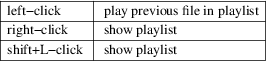
pl next
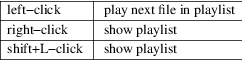
|
title |
Displays current media−title, filename, custom title, or target chapter |
name while hovering the seekbar.
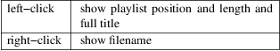
|
cache |
Shows current cache fill status |
|||
|
play |
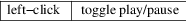
skip back
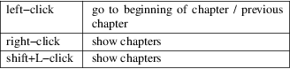
skip frwd
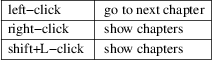
time elapsed
Shows current playback position timestamp
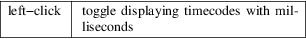
seekbar
Indicates current playback position and position of chapters
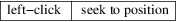
time left
Shows remaining playback time timestamp
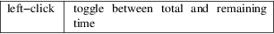
audio and sub
Displays selected track and amount of available tracks
|
vol |
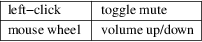
|
fs |
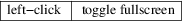
Key
Bindings
These key bindings are active by default if nothing else is
already bound to these keys. In case of collision, the
function needs to be bound to a different key. See the
Script Commands section.
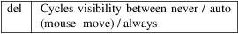
Configuration
The OSC offers limited configuration through a config file
script−opts/osc.conf placed in mpv's user dir
and through the −−script−opts
command−line option. Options provided through the
command−line will override those from the config
file.
Config
Syntax
The config file must exactly follow the following
syntax:
# this is a comment optionA=value1 optionB=value2
# can only be used at the beginning of a line and there may be no spaces around the = or anywhere else.
Command−line
Syntax
To avoid collisions with other scripts, all options need to
be prefixed with osc−.
Example:
−−script−opts=osc−optionA=value1,osc−optionB=value2
Configurable Options
|
layout |
Default: bottombar |
The layout for the OSC. Currently available are: box, slimbox, bottombar and topbar. Default pre−0.21.0 was 'box'.
seekbarstyle
Default: bar
Sets the style of the playback position marker and overall shape of the seekbar: bar, diamond or knob.
seekbarhandlesize
Default: 0.6
Size ratio of the seek handle if seekbarstyle is set to dimaond or knob. This is relative to the full height of the seekbar.
seekbarkeyframes
Default: yes
Controls the mode used to seek when dragging the seekbar. If set to yes, default seeking mode is used (usually keyframes, but player defaults and heuristics can change it to exact). If set to no, exact seeking on mouse drags will be used instead. Keyframes are preferred, but exact seeks may be useful in cases where keyframes cannot be found. Note that using exact seeks can potentially make mouse dragging much slower.
seekrangestyle
Default: inverted
Display seekable ranges on the seekbar. bar shows them on the full height of the bar, line as a thick line and inverted as a thin line that is inverted over playback position markers. none will hide them. Additionally, slider will show a permanent handle inside the seekbar with cached ranges marked inside. Note that these will look differently based on the seekbarstyle option. Also, slider does not work with seekbarstyle set to bar.
seekrangeseparate
Default: yes
Controls whether to show line−style seekable ranges on top of the seekbar or separately if seekbarstyle is set to bar.
seekrangealpha
Default: 200
Alpha of the seekable ranges, 0 (opaque) to 255 (fully transparent).
deadzonesize
Default: 0.5
Size of the deadzone. The deadzone is an area that makes the mouse act like leaving the window. Movement there won't make the OSC show up and it will hide immediately if the mouse enters it. The deadzone starts at the window border opposite to the OSC and the size controls how much of the window it will span. Values between 0.0 and 1.0, where 0 means the OSC will always popup with mouse movement in the window, and 1 means the OSC will only show up when the mouse hovers it. Default pre−0.21.0 was 0.
minmousemove
Default: 0
Minimum amount of pixels the mouse has to move between ticks to make the OSC show up. Default pre−0.21.0 was 3.
showwindowed
Default: yes
Enable the OSC when windowed
showfullscreen
Default: yes
Enable the OSC when fullscreen
idlescreen
Default: yes
Show the mpv logo and message when idle
scalewindowed
Default: 1.0
Scale factor of the OSC when windowed.
scalefullscreen
Default: 1.0
Scale factor of the OSC when fullscreen
scaleforcedwindow
Default: 2.0
Scale factor of the OSC when rendered on a forced (dummy) window
vidscale
Default: yes
Scale the OSC with the video no tries to keep the OSC size constant as much as the window size allows
|
valign |
Default: 0.8 |
Vertical alignment, −1 (top) to 1 (bottom)
|
halign |
Default: 0.0 |
Horizontal alignment, −1 (left) to 1 (right)
barmargin
Default: 0
Margin from bottom (bottombar) or top (topbar), in pixels
boxalpha
Default: 80
Alpha of the background box, 0 (opaque) to 255 (fully transparent)
hidetimeout
Default: 500
Duration in ms until the OSC hides if no mouse movement, must not be negative
fadeduration
Default: 200
Duration of fade out in ms, 0 = no fade
|
title |
Default: ${media−title} |
String that supports property expansion that will be displayed as OSC title. ASS tags are escaped, and newlines and trailing slashes are stripped.
tooltipborder
Default: 1
Size of the tooltip outline when using bottombar or topbar layouts
timetotal
Default: no
Show total time instead of time remaining
|
timems |
Default: no |
Display timecodes with milliseconds
tcspace
Default: 100 (allowed: 50−200)
Adjust space reserved for timecodes (current time and time remaining) in the bottombar and topbar layouts. The timecode width depends on the font, and with some fonts the spacing near the timecodes becomes too small. Use values above 100 to increase that spacing, or below 100 to decrease it.
visibility
Default: auto (auto hide/show on mouse move)
Also supports never and always
boxmaxchars
Default: 80
Max chars for the osc title at the box layout. mpv does not measure the text width on screen and so it needs to limit it by number of chars. The default is conservative to allow wide fonts to be used without overflow. However, with many common fonts a bigger number can be used. YMMV.
boxvideo
Default: no
Whether to overlay the osc over the video (no), or to box the video within the areas not covered by the osc (yes). If this option is set, the osc may overwrite the −−video−margin−ratio−* options, even if the user has set them. (It will not overwrite them if all of them are set to default values.) Additionally, visibility must be set to always. Otherwise, this option does nothing.
Currently, this is supported for the bottombar and topbar layout only. The other layouts do not change if this option is set. Separately, if window controls are present (see below), they will be affected regardless of which osc layout is in use.
The border is static and appears even if the OSC is configured to appear only on mouse interaction. If the OSC is invisible, the border is simply filled with the background color (black by default).
This currently still makes the OSC overlap with subtitles (if the −−sub−use−margins option is set to yes, the default). This may be fixed later.
This does not work correctly with video outputs like −−vo=xv, which render OSD into the unscaled video.
windowcontrols
Default: auto (Show window controls if there is no window border)
Whether to show window management controls over the video, and if so, which side of the window to place them. This may be desirable when the window has no decorations, either because they have been explicitly disabled (border=no) or because the current platform doesn't support them (eg: gnome−shell with wayland).
The set of window controls is fixed, offering minimize, maximize, and quit. Not all platforms implement minimize and maximize, but quit will always work.
windowcontrols_alignment
Default: right
If window controls are shown, indicates which side should they be aligned to.
Supports left and right which will place the controls on those respective sides.
greenandgrumpy
Default: no
Set to yes to reduce festivity (i.e. disable santa hat in December.)
livemarkers
Default: yes
Update chapter markers positions on duration changes, e.g. live streams. The updates are unoptimized − consider disabling it on very low−end systems.
chapters_osd, playlist_osd
Default: yes
Whether to display the chapters/playlist at the OSD when left−clicking the next/previous OSC buttons, respectively.
chapter_fmt
Default: Chapter: %s
Template for the chapter−name display when hovering the seekbar. Use no to disable chapter display on hover. Otherwise it's a lua string.format template and %s is replaced with the actual name.
unicodeminus
Default: no
Use a Unicode minus sign instead of an ASCII hyphen when displaying the remaining playback time.
Script
Commands
The OSC script listens to certain script commands. These
commands can bound in input.conf, or sent by other
scripts.
osc−message
Show a message on screen using the OSC. First argument is the message, second the duration in seconds.
osc−visibility
Controls visibility mode never / auto (on mouse move) / always and also cycle to cycle between the modes
Example
You could put this into input.conf to hide the OSC with the a key and to set auto mode (the default) with b:
a script−message osc−visibility never b script−message osc−visibility auto
osc−idlescreen
Controls the visibility of the mpv logo on idle. Valid arguments are yes, no, and cycle to toggle between yes and no.
osc−playlist, osc−chapterlist, osc−tracklist
Shows a limited view of the respective type of list using the OSC. First argument is duration in seconds.
This builtin script displays information and statistics for the currently played file. It is enabled by default if mpv was compiled with Lua support. It can be disabled entirely using the −−load−stats−overlay=no option.
Usage
The following key bindings are active by default unless
something else is already bound to them:
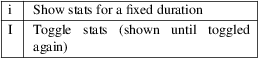
While the stats are visible on screen the following key bindings are active, regardless of existing bindings. They allow you to switch between pages of stats:
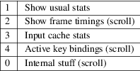
On pages which support scroll, these key bindings are also active:
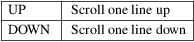
Font
For optimal visual experience, a font with support for many
font weights and monospaced digits is recommended. By
default, the open source font Source Sans Pro is
used.
Configuration
This script can be customized through a config file
script−opts/stats.conf placed in mpv's user
directory and through the
−−script−opts command−line
option. The configuration syntax is described in ON
SCREEN CONTROLLER.
Configurable
Options
key_page_1
Default: 1
key_page_2
Default: 2
key_page_3
Default: 3
key_page_4
Default: 4
key_page_0
Default: 0
Key bindings for page switching while stats are displayed.
key_scroll_up
Default: UP
key_scroll_down
Default: DOWN
scroll_lines
Default: 1
Scroll key bindings and number of lines to scroll on pages which support it.
duration
Default: 4
How long the stats are shown in seconds (oneshot).
redraw_delay
Default: 1
How long it takes to refresh the displayed stats in seconds (toggling).
persistent_overlay
Default: no
When no, other scripts printing text to the screen can overwrite the displayed stats. When yes, displayed stats are persistently shown for the respective duration. This can result in overlapping text when multiple scripts decide to print text at the same time.
plot_perfdata
Default: yes
Show graphs for performance data (page 2).
plot_vsync_ratio
Default: yes
plot_vsync_jitter
Default: yes
Show graphs for vsync and jitter values (page 1). Only when toggled.
flush_graph_data
Default: yes
Clear data buffers used for drawing graphs when toggling.
|
font |
Default: Source Sans Pro |
Font name. Should support as many font weights as possible for optimal visual experience.
font_mono
Default: Source Sans Pro
Font name for parts where monospaced characters are necessary to align text. Currently, monospaced digits are sufficient.
font_size
Default: 8
Font size used to render text.
font_color
Default: FFFFFF
Font color.
border_size
Default: 0.8
Size of border drawn around the font.
border_color
Default: 262626
Color of drawn border.
|
alpha |
Default: 11 |
Transparency for drawn text.
plot_bg_border_color
Default: 0000FF
Border color used for drawing graphs.
plot_bg_color
Default: 262626
Background color used for drawing graphs.
plot_color
Default: FFFFFF
Color used for drawing graphs.
Note: colors are given as hexadecimal values and use ASS tag order: BBGGRR (blue green red).
Different
key bindings
Additional keys can be configured in input.conf to
display the stats:
e script−binding stats/display−stats E script−binding stats/display−stats−toggle
And to display a certain page directly:
i script−binding stats/display−page−1 e script−binding stats/display−page−2
Active key
bindings page
Lists the active key bindings and the commands they're bound
to, excluding the interactive keys of the stats script
itself. See also −−input−test for
more detailed view of each binding.
The keys are grouped automatically using a simple analysis of the command string, and one should not expect documentation−level grouping accuracy, however, it should still be reasonably useful.
Using −−idle −−script−opts=stats−bindlist=yes will print the list to the terminal and quit immediately. By default long lines are shortened to 79 chars, and terminal escape sequences are enabled. A different length limit can be set by changing yes to a number (at least 40), and escape sequences can be disabled by adding − before the value, e.g. ...=−yes or ...=−120.
Like with −−input−test, the list includes bindings from input.conf and from user scripts. Use −−no−config to list only built−in bindings.
Internal
stuff page
Most entries shown on this page have rather vague meaning.
Likely none of this is useful for you. Don't attempt to use
it. Forget its existence.
Selecting this for the first time will start collecting some internal performance data. That means performance will be slightly lower than normal for the rest of the time the player is running (even if the stats page is closed). Note that the stats page itself uses a lot of CPU and even GPU resources, and may have a heavy impact on performance.
The displayed information is accumulated over the redraw delay (shown as poll−time field).
This adds entries for each Lua script. If there are too many scripts running, parts of the list will simply be out of the screen, but it can be scrolled.
If the underlying platform does not support pthread per thread times, the displayed times will be 0 or something random (I suspect that at time of this writing, only Linux provides the correct via pthread APIs for per thread times).
Most entries are added lazily and only during data collection, which is why entries may pop up randomly after some time. It's also why the memory usage entries for scripts that have been inactive since the start of data collection are missing.
Memory usage is approximate and does not reflect internal fragmentation.
JS scripts memory reporting is disabled by default because collecting the data at the JS side has an overhead. It can be enabled by exporting the env var MPV_LEAK_REPORT=1 before starting mpv, and will increase JS memory usage.
If entries have /time and /cpu variants, the former gives the real time (monotonic clock), while the latter the thread CPU time (only if the corresponding pthread API works and is supported).
The console is a REPL for mpv input commands. It is displayed on the video window. It also shows log messages. It can be disabled entirely using the −−load−osd−console=no option.
Keybindings
|
` |
Show the console. |
|||
|
ESC |
Hide the console. |
ENTER, Ctrl+J and Ctrl+M
Run the typed command.
Shift+ENTER
Type a literal newline character.
LEFT and Ctrl+B
Move the cursor to the previous character.
RIGHT and Ctrl+F
Move the cursor to the next character.
Ctrl+LEFT and Alt+B
Move the cursor to the beginning of the current word, or if between words, to the beginning of the previous word.
Ctrl+RIGHT and Alt+F
Move the cursor to the end of the current word, or if between words, to the end of the next word.
HOME and Ctrl+A
Move the cursor to the start of the current line.
END and Ctrl+E
Move the cursor to the end of the current line.
BACKSPACE and Ctrl+H
Delete the previous character.
|
Ctrl+D |
Hide the console if the current line is empty, otherwise delete the next character. |
Ctrl+BACKSPACE and Ctrl+W
Delete text from the cursor to the beginning of the current word, or if between words, to the beginning of the previous word.
Ctrl+DEL and Alt+D
Delete text from the cursor to the end of the current word, or if between words, to the end of the next word.
|
Ctrl+U |
Delete text from the cursor to the beginning of the current line. | ||
|
Ctrl+K |
Delete text from the cursor to the end of the current line. | ||
|
Ctrl+C |
Clear the current line. |
UP and Ctrl+P
Move back in the command history.
DOWN and Ctrl+N
Move forward in the command history.
|
PGUP |
Go to the first command in the history. | ||
|
PGDN |
Stop navigating the command history. | ||
|
INSERT |
Toggle insert mode. | ||
|
Ctrl+V |
Paste text (uses the clipboard on X11 and Wayland). |
Shift+INSERT
Paste text (uses the primary selection on X11 and Wayland).
TAB and Ctrl+I
Complete the command or property name at the cursor.
|
Ctrl+L |
Clear all log messages from the console. |
Commands
script−message−to console type <text>
[<cursor_pos>]
Show the console and pre−fill it with the provided text, optionally specifying the initial cursor position as a positive integer starting from 1.
Example for input.conf
% script−message−to console type "seek absolute−percent" 6
Known issues
|
• |
Pasting text is slow on Windows | ||
|
• |
Non−ASCII keyboard input has restrictions | ||
|
• |
The cursor keys move between Unicode code−points, not grapheme clusters |
Configuration
This script can be customized through a config file
script−opts/console.conf placed in mpv's user
directory and through the
−−script−opts command−line
option. The configuration syntax is described in ON
SCREEN CONTROLLER.
Key bindings can be changed in a standard way, see for example stats.lua documentation.
Configurable Options
|
scale |
Default: 1 |
All drawing is scaled by this value, including the text borders and the cursor.
If the VO backend in use has HiDPI scale reporting implemented, the option value is scaled with the reported HiDPI scale.
|
font |
Default: unset (picks a hardcoded font depending on detected platform) |
Set the font used for the REPL and the console. This probably doesn't have to be a monospaced font.
font_size
Default: 16
Set the font size used for the REPL and the console. This will be multiplied by "scale".
history_dedup
Default: true
Remove duplicate entries in history as to only keep the latest one.
mpv can load Lua scripts. (See Script location.)
mpv provides the built−in module mp, which contains functions to send commands to the mpv core and to retrieve information about playback state, user settings, file information, and so on.
These scripts can be used to control mpv in a similar way to slave mode. Technically, the Lua code uses the client API internally.
Example
A script which leaves fullscreen mode when the player is
paused:
function on_pause_change(name, value)
if value == true then
mp.set_property("fullscreen", "no")
end
end
mp.observe_property("pause", "bool", on_pause_change)
Script
location
Scripts can be passed to the −−script
option, and are automatically loaded from the scripts
subdirectory of the mpv configuration directory (usually
~/.config/mpv/scripts/).
A script can be a single file. The file extension is used to select the scripting backend to use for it. For Lua, it is .lua. If the extension is not recognized, an error is printed. (If an error happens, the extension is either mistyped, or the backend was not compiled into your mpv binary.)
mpv internally loads the script's name by stripping the .lua extension and replacing all nonalphanumeric characters with _. E.g., my−tools.lua becomes my_tools. If there are several scripts with the same name, it is made unique by appending a number. This is the name returned by mp.get_script_name().
Entries with .disable extension are always ignored.
If a script is a directory (either if a directory is passed to −−script, or any sub−directories in the script directory, such as for example ~/.config/mpv/scripts/something/), then the directory represents a single script. The player will try to load a file named main.x, where x is replaced with the file extension. For example, if main.lua exists, it is loaded with the Lua scripting backend.
You must not put any other files or directories that start with main. into the script's top level directory. If the script directory contains for example both main.lua and main.js, only one of them will be loaded (and which one depends on mpv internals that may change any time). Likewise, if there is for example main.foo, your script will break as soon as mpv adds a backend that uses the .foo file extension.
mpv also appends the top level directory of the script to the start of Lua's package path so you can import scripts from there too. Be aware that this will shadow Lua libraries that use the same package path. (Single file scripts do not include mpv specific directory the Lua package path. This was silently changed in mpv 0.32.0.)
Using a script directory is the recommended way to package a script that consists of multiple source files, or requires other files (you can use mp.get_script_directory() to get the location and e.g. load data files).
Making a script a git repository, basically a repository which contains a main.lua` file in the root directory, makes scripts easily updateable (without the dangers of auto−updates). Another suggestion is to use git submodules to share common files or libraries.
Details on
the script initialization and lifecycle
Your script will be loaded by the player at program start
from the scripts configuration subdirectory, or from
a path specified with the −−script
option. Some scripts are loaded internally (like
−−osc). Each script runs in its own
thread. Your script is first run "as is", and once
that is done, the event loop is entered. This event loop
will dispatch events received by mpv and call your own event
handlers which you have registered with
mp.register_event, or timers added with
mp.add_timeout or similar. Note that since the script
starts execution concurrently with player initialization,
some properties may not be populated with meaningful values
until the relevant subsystems have initialized.
When the player quits, all scripts will be asked to terminate. This happens via a shutdown event, which by default will make the event loop return. If your script got into an endless loop, mpv will probably behave fine during playback, but it won't terminate when quitting, because it's waiting on your script.
Internally, the C code will call the Lua function mp_event_loop after loading a Lua script. This function is normally defined by the default prelude loaded before your script (see player/lua/defaults.lua in the mpv sources). The event loop will wait for events and dispatch events registered with mp.register_event. It will also handle timers added with mp.add_timeout and similar (by waiting with a timeout).
Since mpv 0.6.0, the player will wait until the script is fully loaded before continuing normal operation. The player considers a script as fully loaded as soon as it starts waiting for mpv events (or it exits). In practice this means the player will more or less hang until the script returns from the main chunk (and mp_event_loop is called), or the script calls mp_event_loop or mp.dispatch_events directly. This is done to make it possible for a script to fully setup event handlers etc. before playback actually starts. In older mpv versions, this happened asynchronously. With mpv 0.29.0, this changes slightly, and it merely waits for scripts to be loaded in this manner before starting playback as part of the player initialization phase. Scripts run though initialization in parallel. This might change again.
mp
functions
The mp module is preloaded, although it can be loaded
manually with require 'mp'. It provides the core
client API.
mp.command(string)
Run the given command. This is similar to the commands used in input.conf. See List of Input Commands.
By default, this will show something on the OSD (depending on the command), as if it was used in input.conf. See Input Command Prefixes how to influence OSD usage per command.
Returns true on success, or nil, error on error.
mp.commandv(arg1, arg2, ...)
Similar to mp.command, but pass each command argument as separate parameter. This has the advantage that you don't have to care about quoting and escaping in some cases.
Example:
mp.command("loadfile " .. filename .. " append")
mp.commandv("loadfile", filename, "append")
These two commands are equivalent, except that the first version breaks if the filename contains spaces or certain special characters.
Note that properties are not expanded. You can use either mp.command, the expand−properties prefix, or the mp.get_property family of functions.
Unlike mp.command, this will not use OSD by default either (except for some OSD−specific commands).
mp.command_native(table [,def])
Similar to mp.commandv, but pass the argument list as table. This has the advantage that in at least some cases, arguments can be passed as native types. It also allows you to use named argument.
If the table is an array, each array item is like an argument in mp.commandv() (but can be a native type instead of a string).
If the table contains string keys, it's interpreted as command with named arguments. This requires at least an entry with the key name to be present, which must be a string, and contains the command name. The special entry _flags is optional, and if present, must be an array of Input Command Prefixes to apply. All other entries are interpreted as arguments.
Returns a result table on success (usually empty), or def, error on error. def is the second parameter provided to the function, and is nil if it's missing.
mp.command_native_async(table [,fn])
Like mp.command_native(), but the command is ran asynchronously (as far as possible), and upon completion, fn is called. fn has three arguments: fn(success, result, error):
success
Always a Boolean and is true if the command was successful, otherwise false.
|
result |
The result value (can be nil) in case of success, nil otherwise (as returned by mp.command_native()). | ||
|
error |
The error string in case of an error, nil otherwise. |
Returns a table with undefined contents, which can be used as argument for mp.abort_async_command.
If starting the command failed for some reason, nil, error is returned, and fn is called indicating failure, using the same error value.
fn is always called asynchronously, even if the command failed to start.
mp.abort_async_command(t)
Abort a mp.command_native_async call. The argument is the return value of that command (which starts asynchronous execution of the command). Whether this works and how long it takes depends on the command and the situation. The abort call itself is asynchronous. Does not return anything.
mp.get_property(name [,def])
Return the value of the given property as string. These are the same properties as used in input.conf. See Properties for a list of properties. The returned string is formatted similar to ${=name} (see Property Expansion).
Returns the string on success, or def, error on error. def is the second parameter provided to the function, and is nil if it's missing.
mp.get_property_osd(name [,def])
Similar to mp.get_property, but return the property value formatted for OSD. This is the same string as printed with ${name} when used in input.conf.
Returns the string on success, or def, error on error. def is the second parameter provided to the function, and is an empty string if it's missing. Unlike get_property(), assigning the return value to a variable will always result in a string.
mp.get_property_bool(name [,def])
Similar to mp.get_property, but return the property value as Boolean.
Returns a Boolean on success, or def, error on error.
mp.get_property_number(name [,def])
Similar to mp.get_property, but return the property value as number.
Note that while Lua does not distinguish between integers and floats, mpv internals do. This function simply request a double float from mpv, and mpv will usually convert integer property values to float.
Returns a number on success, or def, error on error.
mp.get_property_native(name [,def])
Similar to mp.get_property, but return the property value using the best Lua type for the property. Most time, this will return a string, Boolean, or number. Some properties (for example chapter−list) are returned as tables.
Returns a value on success, or def, error on error. Note that nil might be a possible, valid value too in some corner cases.
mp.set_property(name, value)
Set the given property to the given string value. See mp.get_property and Properties for more information about properties.
Returns true on success, or nil, error on error.
mp.set_property_bool(name, value)
Similar to mp.set_property, but set the given property to the given Boolean value.
mp.set_property_number(name, value)
Similar to mp.set_property, but set the given property to the given numeric value.
Note that while Lua does not distinguish between integers and floats, mpv internals do. This function will test whether the number can be represented as integer, and if so, it will pass an integer value to mpv, otherwise a double float.
mp.set_property_native(name, value)
Similar to mp.set_property, but set the given property using its native type.
Since there are several data types which cannot represented natively in Lua, this might not always work as expected. For example, while the Lua wrapper can do some guesswork to decide whether a Lua table is an array or a map, this would fail with empty tables. Also, there are not many properties for which it makes sense to use this, instead of set_property, set_property_bool, set_property_number. For these reasons, this function should probably be avoided for now, except for properties that use tables natively.
mp.get_time()
Return the current mpv internal time in seconds as a number. This is basically the system time, with an arbitrary offset.
mp.add_key_binding(key, name|fn [,fn [,flags]])
Register callback to be run on a key binding. The binding will be mapped to the given key, which is a string describing the physical key. This uses the same key names as in input.conf, and also allows combinations (e.g. ctrl+a). If the key is empty or nil, no physical key is registered, but the user still can create own bindings (see below).
After calling this function, key presses will cause the function fn to be called (unless the user remapped the key with another binding).
The name argument should be a short symbolic string. It allows the user to remap the key binding via input.conf using the script−message command, and the name of the key binding (see below for an example). The name should be unique across other bindings in the same script − if not, the previous binding with the same name will be overwritten. You can omit the name, in which case a random name is generated internally. (Omitting works as follows: either pass nil for name, or pass the fn argument in place of the name. The latter is not recommended and is handled for compatibility only.)
The last argument is used for optional flags. This is a table, which can have the following entries:
repeatable
If set to true, enables key repeat for this specific binding.
complex
If set to true, then fn is called on both key up and down events (as well as key repeat, if enabled), with the first argument being a table. This table has the following entries (and may contain undocumented ones):
|
event |
Set to one of the strings down, repeat, up or press (the latter if key up/down can't be tracked). |
is_mouse
Boolean Whether the event was caused by a mouse button.
key_name
The name of they key that triggered this, or nil if invoked artificially. If the key name is unknown, it's an empty string.
key_text
Text if triggered by a text key, otherwise nil. See description of script−binding command for details (this field is equivalent to the 5th argument).
Internally, key bindings are dispatched via the script−message−to or script−binding input commands and mp.register_script_message.
Trying to map multiple commands to a key will essentially prefer a random binding, while the other bindings are not called. It is guaranteed that user defined bindings in the central input.conf are preferred over bindings added with this function (but see mp.add_forced_key_binding).
Example:
function something_handler()
print("the key was pressed")
end
mp.add_key_binding("x", "something", something_handler)
This will print the message the key was pressed when x was pressed.
The user can remap these key bindings. Then the user has to put the following into their input.conf to remap the command to the y key:
y script−binding something
This will print the message when the key y is pressed. (x will still work, unless the user remaps it.)
You can also explicitly send a message to a named script only. Assume the above script was using the filename fooscript.lua:
y script−binding fooscript/something
mp.add_forced_key_binding(...)
This works almost the same as mp.add_key_binding, but registers the key binding in a way that will overwrite the user's custom bindings in their input.conf. (mp.add_key_binding overwrites default key bindings only, but not those by the user's input.conf.)
mp.remove_key_binding(name)
Remove a key binding added with mp.add_key_binding or mp.add_forced_key_binding. Use the same name as you used when adding the bindings. It's not possible to remove bindings for which you omitted the name.
mp.register_event(name, fn)
Call a specific function when an event happens. The event name is a string, and the function fn is a Lua function value.
Some events have associated data. This is put into a Lua table and passed as argument to fn. The Lua table by default contains a name field, which is a string containing the event name. If the event has an error associated, the error field is set to a string describing the error, on success it's not set.
If multiple functions are registered for the same event, they are run in registration order, which the first registered function running before all the other ones.
Returns true if such an event exists, false otherwise.
See Events and List of events for details.
mp.unregister_event(fn)
Undo mp.register_event(..., fn). This removes all event handlers that are equal to the fn parameter. This uses normal Lua == comparison, so be careful when dealing with closures.
mp.observe_property(name, type, fn)
Watch a property for changes. If the property name is changed, then the function fn(name) will be called. type can be nil, or be set to one of none, native, bool, string, or number. none is the same as nil. For all other values, the new value of the property will be passed as second argument to fn, using mp.get_property_<type> to retrieve it. This means if type is for example string, fn is roughly called as in fn(name, mp.get_property_string(name)).
If possible, change events are coalesced. If a property is changed a bunch of times in a row, only the last change triggers the change function. (The exact behavior depends on timing and other things.)
If a property is unavailable, or on error, the value argument to fn is nil. (The observe_property() call always succeeds, even if a property does not exist.)
In some cases the function is not called even if the property changes. This depends on the property, and it's a valid feature request to ask for better update handling of a specific property.
If the type is none or nil, sporadic property change events are possible. This means the change function fn can be called even if the property doesn't actually change.
You always get an initial change notification. This is meant to initialize the user's state to the current value of the property.
mp.unobserve_property(fn)
Undo mp.observe_property(..., fn). This removes all property handlers that are equal to the fn parameter. This uses normal Lua == comparison, so be careful when dealing with closures.
mp.add_timeout(seconds, fn)
Call the given function fn when the given number of seconds has elapsed. Note that the number of seconds can be fractional. For now, the timer's resolution may be as low as 50 ms, although this will be improved in the future.
This is a one−shot timer: it will be removed when it's fired.
Returns a timer object. See mp.add_periodic_timer for details.
mp.add_periodic_timer(seconds, fn)
Call the given function
periodically. This is like mp.add_timeout, but the
timer is re−added after the function fn is run.
Returns a timer object. The timer object provides the
following
methods:
|
stop() |
Disable the timer. Does nothing if the timer is already disabled. This will remember the current elapsed time when stopping, so that resume() essentially unpauses the timer. | ||
|
kill() |
Disable the timer. Resets the elapsed time. resume() will restart the timer. |
resume()
Restart the timer. If the timer was disabled with stop(), this will resume at the time it was stopped. If the timer was disabled with kill(), or if it's a previously fired one−shot timer (added with add_timeout()), this starts the timer from the beginning, using the initially configured timeout.
is_enabled()
Whether the timer is currently enabled or was previously disabled (e.g. by stop() or kill()).
timeout (RW)
This field contains the current timeout period. This value is not updated as time progresses. It's only used to calculate when the timer should fire next when the timer expires.
If you write this, you can call t:kill() ; t:resume() to reset the current timeout to the new one. (t:stop() won't use the new timeout.)
oneshot (RW)
Whether the timer is periodic (false) or fires just once (true). This value is used when the timer expires (but before the timer callback function fn is run).
Note that these are methods, and you have to call them using : instead of . (Refer to https://www.lua.org/manual/5.2/manual.html#3.4.9 .)
Example:
seconds = 0
timer = mp.add_periodic_timer(1, function()
print("called every second")
# stop it after 10 seconds
seconds = seconds + 1
if seconds >= 10 then
timer:kill()
end
end)
mp.get_opt(key)
Return a setting from the −−script−opts option. It's up to the user and the script how this mechanism is used. Currently, all scripts can access this equally, so you should be careful about collisions.
mp.get_script_name()
Return the name of the current script. The name is usually made of the filename of the script, with directory and file extension removed. If there are several scripts which would have the same name, it's made unique by appending a number. Any nonalphanumeric characters are replaced with _.
Example
The script /path/to/foo−script.lua becomes foo_script.
mp.get_script_directory()
Return the directory if this is a script packaged as directory (see Script location for a description). Return nothing if this is a single file script.
mp.osd_message(text [,duration])
Show an OSD message on the screen. duration is in seconds, and is optional (uses −−osd−duration by default).
Advanced mp
functions
These also live in the mp module, but are documented
separately as they are useful only in special situations.
mp.get_wakeup_pipe()
Calls mpv_get_wakeup_pipe() and returns the read end of the wakeup pipe. This is deprecated, but still works. (See client.h for details.)
mp.get_next_timeout()
Return the relative time in seconds when the next timer (mp.add_timeout and similar) expires. If there is no timer, return nil.
mp.dispatch_events([allow_wait])
This can be used to run custom event loops. If you want to have direct control what the Lua script does (instead of being called by the default event loop), you can set the global variable mp_event_loop to your own function running the event loop. From your event loop, you should call mp.dispatch_events() to dequeue and dispatch mpv events.
If the allow_wait parameter is set to true, the function will block until the next event is received or the next timer expires. Otherwise (and this is the default behavior), it returns as soon as the event loop is emptied. It's strongly recommended to use mp.get_next_timeout() and mp.get_wakeup_pipe() if you're interested in properly working notification of new events and working timers.
mp.register_idle(fn)
Register an event loop idle handler. Idle handlers are called before the script goes to sleep after handling all new events. This can be used for example to delay processing of property change events: if you're observing multiple properties at once, you might not want to act on each property change, but only when all change notifications have been received.
mp.unregister_idle(fn)
Undo mp.register_idle(fn). This removes all idle handlers that are equal to the fn parameter. This uses normal Lua == comparison, so be careful when dealing with closures.
mp.enable_messages(level)
Set the minimum log level of which mpv message output to receive. These messages are normally printed to the terminal. By calling this function, you can set the minimum log level of messages which should be received with the log−message event. See the description of this event for details. The level is a string, see msg.log for allowed log levels.
mp.register_script_message(name, fn)
This is a helper to dispatch script−message or script−message−to invocations to Lua functions. fn is called if script−message or script−message−to (with this script as destination) is run with name as first parameter. The other parameters are passed to fn. If a message with the given name is already registered, it's overwritten.
Used by mp.add_key_binding, so be careful about name collisions.
mp.unregister_script_message(name)
Undo a previous registration with mp.register_script_message. Does nothing if the name wasn't registered.
mp.create_osd_overlay(format)
Create an OSD overlay. This is a very thin wrapper around the osd−overlay command. The function returns a table, which mostly contains fields that will be passed to osd−overlay. The format parameter is used to initialize the format field. The data field contains the text to be used as overlay. For details, see the osd−overlay command.
In addition, it
provides the following methods:
update()
Commit the OSD overlay to the screen, or in other words, run the osd−overlay command with the current fields of the overlay table. Returns the result of the osd−overlay command itself.
remove()
Remove the overlay from the screen. A update() call will add it again.
Example:
ov = mp.create_osd_overlay("ass−events")
ov.data = "{\\an5}{\\b1}hello world!"
ov:update()
The advantage of using this wrapper (as opposed to running osd−overlay directly) is that the id field is allocated automatically.
mp.get_osd_size()
Returns a tuple of osd_width, osd_height, osd_par. The first two give the size of the OSD in pixels (for video outputs like −−vo=xv, this may be "scaled" pixels). The third is the display pixel aspect ratio.
May return invalid/nonsense values if OSD is not initialized yet.
mp.msg
functions
This module allows outputting messages to the terminal, and
can be loaded with require 'mp.msg'.
msg.log(level, ...)
The level parameter is the message priority. It's a string and one of fatal, error, warn, info, v, debug, trace. The user's settings will determine which of these messages will be visible. Normally, all messages are visible, except v, debug and trace.
The parameters after that are all converted to strings. Spaces are inserted to separate multiple parameters.
You don't need to add newlines.
msg.fatal(...),
msg.error(...), msg.warn(...), msg.info(...),
msg.verbose(...), msg.debug(...), msg.trace(...)
All of these are shortcuts and equivalent to the corresponding msg.log(level, ...) call.
mp.options
functions
mpv comes with a built−in module to manage options
from config−files and the command−line. All you
have to do is to supply a table with default options to the
read_options function. The function will overwrite the
default values with values found in the config−file
and the command−line (in that order).
options.read_options(table [, identifier [,
on_update]])
A table with key−value pairs. The type of the default values is important for converting the values read from the config file or command−line back. Do not use nil as a default value!
The identifier is used to identify the config−file and the command−line options. These needs to unique to avoid collisions with other scripts. Defaults to mp.get_script_name() if the parameter is nil or missing.
The on_update parameter enables run−time updates of all matching option values via the script−opts option/property. If any of the matching options changes, the values in the table (which was originally passed to the function) are changed, and on_update(list) is called. list is a table where each updated option has a list[option_name] = true entry. There is no initial on_update() call. This never re−reads the config file. script−opts is always applied on the original config file, ignoring previous script−opts values (for example, if an option is removed from script−opts at runtime, the option will have the value in the config file). table entries are only written for option values whose values effectively change (this is important if the script changes table entries independently).
Example implementation:
require 'mp.options'
local options = {
optionA = "defaultvalueA",
optionB = −0.5,
optionC = true,
}
read_options(options, "myscript")
print(options.optionA)
The config file will be stored in script−opts/identifier.conf in mpv's user folder. Comment lines can be started with # and stray spaces are not removed. Boolean values will be represented with yes/no.
Example config:
# comment optionA=Hello World optionB=9999 optionC=no
Command−line options are read from the −−script−opts parameter. To avoid collisions, all keys have to be prefixed with identifier−.
Example command−line:
−−script−opts=myscript−optionA=TEST,myscript−optionB=0,myscript−optionC=yes
mp.utils
functions
This built−in module provides generic helper functions
for Lua, and have strictly speaking nothing to do with mpv
or video/audio playback. They are provided for convenience.
Most compensate for Lua's scarce standard library.
Be warned that
any of these functions might disappear any time. They are
not strictly part of the guaranteed API.
utils.getcwd()
Returns the directory that mpv was launched from. On error, nil, error is returned.
utils.readdir(path [, filter])
Enumerate all entries at the given path on the filesystem, and return them as array. Each entry is a directory entry (without the path). The list is unsorted (in whatever order the operating system returns it).
If the filter argument is given, it must be one of the following strings:
|
files |
List regular files only. This excludes directories, special files (like UNIX device files or FIFOs), and dead symlinks. It includes UNIX symlinks to regular files. | ||
|
dirs |
List directories only, or symlinks to directories. . and .. are not included. | ||
|
normal |
Include the results of both files and dirs. (This is the default.) | ||
|
all |
List all entries, even device files, dead symlinks, FIFOs, and the . and .. entries. |
On error, nil, error is returned.
utils.file_info(path)
Stats the given path for information and returns a table with the following entries:
|
mode |
protection bits (on Windows, always 755 (octal) for directories and 644 (octal) for files) | ||
|
size |
size in bytes | ||
|
atime |
time of last access | ||
|
mtime |
time of last modification | ||
|
ctime |
time of last metadata change |
is_file
Whether path is a regular file (boolean)
|
is_dir |
Whether path is a directory (boolean) |
mode and size are integers. Timestamps (atime, mtime and ctime) are integer seconds since the Unix epoch (Unix time). The booleans is_file and is_dir are provided as a convenience; they can be and are derived from mode.
On error (e.g. path does not exist), nil, error is returned.
utils.split_path(path)
Split a path into directory component and filename component, and return them. The first return value is always the directory. The second return value is the trailing part of the path, the directory entry.
utils.join_path(p1, p2)
Return the concatenation of the 2 paths. Tries to be clever. For example, if p2 is an absolute path, p2 is returned without change.
utils.subprocess(t)
Runs an external process and waits until it exits. Returns process status and the captured output. This is a legacy wrapper around calling the subprocess command with mp.command_native. It does the following things:
|
• |
copy the table t | ||
|
• |
rename cancellable field to playback_only | ||
|
• |
rename max_size to capture_size | ||
|
• |
set capture_stdout field to true if unset | ||
|
• |
set name field to subprocess | ||
|
• |
call mp.command_native(copied_t) | ||
|
• |
if the command failed, create a dummy result table | ||
|
• |
copy error_string to error field if the string is non−empty | ||
|
• |
return the result table |
It is recommended to use mp.command_native or mp.command_native_async directly, instead of calling this legacy wrapper. It is for compatibility only.
See the subprocess documentation for semantics and further parameters.
utils.subprocess_detached(t)
Runs an external process and detaches it from mpv's control.
The parameter t is a table. The function reads the following entries:
|
args |
Array of strings of the same semantics as the args used in the subprocess function. |
The function returns nil.
This is a legacy wrapper around calling the run command with mp.commandv and other functions.
utils.getpid()
Returns the process ID of the running mpv process. This can be used to identify the calling mpv when launching (detached) subprocesses.
utils.get_env_list()
Returns the C environment as a list of strings. (Do not confuse this with the Lua "environment", which is an unrelated concept.)
utils.parse_json(str [, trail])
Parses the given string argument as JSON, and returns it as a Lua table. On error, returns nil, error. (Currently, error is just a string reading error, because there is no fine−grained error reporting of any kind.)
The returned value uses similar conventions as mp.get_property_native() to distinguish empty objects and arrays.
If the trail parameter is true (or any value equal to true), then trailing non−whitespace text is tolerated by the function, and the trailing text is returned as 3rd return value. (The 3rd return value is always there, but with trail set, no error is raised.)
utils.format_json(v)
Format the given Lua table (or value) as a JSON string and return it. On error, returns nil, error. (Errors usually only happen on value types incompatible with JSON.)
The argument value uses similar conventions as mp.set_property_native() to distinguish empty objects and arrays.
utils.to_string(v)
Turn the given value into a string. Formats tables and their contents. This doesn't do anything special; it is only needed because Lua is terrible.
Events
Events are notifications from player core to scripts. You
can register an event handler with
mp.register_event.
Note that all scripts (and other parts of the player) receive events equally, and there's no such thing as blocking other scripts from receiving events.
Example:
function my_fn(event)
print("start of playback!")
end
mp.register_event("file−loaded", my_fn)
For the existing event types, see List of events.
Extras
This documents experimental features, or features that are
"too special" to guarantee a stable interface.
mp.add_hook(type, priority, fn)
Add a hook callback for type (a string identifying a certain kind of hook). These hooks allow the player to call script functions and wait for their result (normally, the Lua scripting interface is asynchronous from the point of view of the player core). priority is an arbitrary integer that allows ordering among hooks of the same kind. Using the value 50 is recommended as neutral default value.
fn(hook) is the function that will be called during execution of the hook. The parameter passed to it (hook) is a Lua object that can control further aspects about the currently invoked hook. It provides the following methods:
defer()
Returning from the hook function should not automatically continue the hook. Instead, the API user wants to call hook:cont() on its own at a later point in time (before or after the function has returned).
|
cont() |
Continue the hook. Doesn't need to be called unless defer() was called. |
See Hooks for currently existing hooks and what they do − only the hook list is interesting; handling hook execution is done by the Lua script function automatically.
JavaScript support in mpv is near identical to its Lua support. Use this section as reference on differences and availability of APIs, but otherwise you should refer to the Lua documentation for API details and general scripting in mpv.
Example
JavaScript code which leaves fullscreen mode when the player
is paused:
function on_pause_change(name, value) {
if (value == true)
mp.set_property("fullscreen", "no");
}
mp.observe_property("pause", "bool", on_pause_change);
Similarities
with Lua
mpv tries to load a script file as JavaScript if it has a
.js extension, but otherwise, the documented Lua
options, script directories, loading, etc apply to
JavaScript files too.
Script initialization and lifecycle is the same as with Lua, and most of the Lua functions at the modules mp, mp.utils, mp.msg and mp.options are available to JavaScript with identical APIs − including running commands, getting/setting properties, registering events/key−bindings/hooks, etc.
Differences
from Lua
No need to load modules. mp, mp.utils,
mp.msg and mp.options are preloaded, and you
can use e.g. var cwd = mp.utils.getcwd(); without
prior setup.
Errors are slightly different. Where the Lua APIs return nil for error, the JavaScript ones return undefined. Where Lua returns something, error JavaScript returns only something − and makes error available via mp.last_error(). Note that only some of the functions have this additional error value − typically the same ones which have it in Lua.
Standard APIs are preferred. For instance setTimeout and JSON.stringify are available, but mp.add_timeout and mp.utils.format_json are not.
No standard library. This means that interaction with anything outside of mpv is limited to the available APIs, typically via mp.utils. However, some file functions were added, and CommonJS require is available too − where the loaded modules have the same privileges as normal scripts.
Language
features − ECMAScript 5
The scripting backend which mpv currently uses is MuJS
− a compatible minimal ES5 interpreter. As such,
String.substring is implemented for instance, while
the common but non−standard String.substr is
not. Please consult the MuJS pages on language features and
platform support − https://mujs.com .
Unsupported
Lua APIs and their JS alternatives
mp.add_timeout(seconds, fn) JS: id = setTimeout(fn,
ms)
mp.add_periodic_timer(seconds, fn) JS: id = setInterval(fn, ms)
utils.parse_json(str [, trail]) JS: JSON.parse(str)
utils.format_json(v) JS: JSON.stringify(v)
utils.to_string(v) see dump below.
mp.get_next_timeout() see event loop below.
mp.dispatch_events([allow_wait]) see event loop below.
Scripting
APIs − identical to Lua
(LE) − Last−Error, indicates that
mp.last_error() can be used after the call to test
for success (empty string) or failure (non empty reason
string). Where the Lua APIs use nil to indicate
error, JS APIs use undefined.
mp.command(string) (LE)
mp.commandv(arg1, arg2, ...) (LE)
mp.command_native(table [,def]) (LE)
id = mp.command_native_async(table [,fn]) (LE) Notes: id is true−thy on success, error is empty string on success.
mp.abort_async_command(id)
mp.get_property(name [,def]) (LE)
mp.get_property_osd(name [,def]) (LE)
mp.get_property_bool(name [,def]) (LE)
mp.get_property_number(name [,def]) (LE)
mp.get_property_native(name [,def]) (LE)
mp.set_property(name, value) (LE)
mp.set_property_bool(name, value) (LE)
mp.set_property_number(name, value) (LE)
mp.set_property_native(name, value) (LE)
mp.get_time()
mp.add_key_binding(key, name|fn [,fn [,flags]])
mp.add_forced_key_binding(...)
mp.remove_key_binding(name)
mp.register_event(name, fn)
mp.unregister_event(fn)
mp.observe_property(name, type, fn)
mp.unobserve_property(fn)
mp.get_opt(key)
mp.get_script_name()
mp.get_script_directory()
mp.osd_message(text [,duration])
mp.get_wakeup_pipe()
mp.register_idle(fn)
mp.unregister_idle(fn)
mp.enable_messages(level)
mp.register_script_message(name, fn)
mp.unregister_script_message(name)
mp.create_osd_overlay(format)
mp.get_osd_size() (returned object has properties: width, height, aspect)
mp.msg.log(level, ...)
mp.msg.fatal(...)
mp.msg.error(...)
mp.msg.warn(...)
mp.msg.info(...)
mp.msg.verbose(...)
mp.msg.debug(...)
mp.msg.trace(...)
mp.utils.getcwd() (LE)
mp.utils.readdir(path [, filter]) (LE)
mp.utils.file_info(path) (LE) Note: like lua − this does NOT expand meta−paths like ~~/foo (other JS file functions do expand meta paths).
mp.utils.split_path(path)
mp.utils.join_path(p1, p2)
mp.utils.subprocess(t)
mp.utils.subprocess_detached(t)
mp.utils.get_env_list()
mp.utils.getpid() (LE)
mp.add_hook(type, priority, fn(hook))
mp.options.read_options(obj [, identifier [, on_update]]) (types: string/boolean/number)
Additional
utilities
mp.last_error()
If used after an API call which updates last error, returns an empty string if the API call succeeded, or a non−empty error reason string otherwise.
Error.stack (string)
When using try { ... } catch(e) { ... }, then e.stack is the stack trace of the error − if it was created using the Error(...) constructor.
print (global)
A convenient alias to mp.msg.info.
dump (global)
Like print but also expands objects and arrays recursively.
mp.utils.getenv(name)
Returns the value of the host environment variable name, or undefined if the variable is not defined.
mp.utils.get_user_path(path)
Trivial wrapper of the expand−path mpv command, returns a string. read_file, write_file, append_file and require already expand the path internally and accept mpv meta−paths like ~~desktop/foo.
mp.utils.read_file(fname [,max])
Returns the content of file fname as string. If max is provided and not negative, limit the read to max bytes.
mp.utils.write_file(fname, str)
(Over)write file fname with text content str. fname must be prefixed with file:// as simple protection against accidental arguments switch, e.g. mp.utils.write_file("file://~/abc.txt", "hello world").
mp.utils.append_file(fname, str)
Same as mp.utils.write_file if the file fname does not exist. If it does exist then append instead of overwrite.
Note:
read_file, write_file and append_file
throw on errors, allow text content only.
mp.get_time_ms()
Same as mp.get_time() but in ms instead of seconds.
mp.get_script_file()
Returns the file name of the current script.
exit() (global)
Make the script exit at the end of the current event loop iteration. Note: please remove added key bindings before calling exit().
mp.utils.compile_js(fname, content_str)
Compiles the JS code content_str as file name fname (without loading anything from the filesystem), and returns it as a function. Very similar to a Function constructor, but shows at stack traces as fname.
mp.module_paths
Global modules search paths array for the require function (see below).
Timers
(global)
The standard HTML/node.js timers are available:
id = setTimeout(fn [,duration [,arg1 [,arg2...]]])
id = setTimeout(code_string [,duration])
clearTimeout(id)
id = setInterval(fn [,duration [,arg1 [,arg2...]]])
id = setInterval(code_string [,duration])
clearInterval(id)
setTimeout and setInterval return id, and later call fn (or execute code_string) after duration ms. Interval also repeat every duration.
duration has a minimum and default value of 0, code_string is a plain string which is evaluated as JS code, and [,arg1 [,arg2..]] are used as arguments (if provided) when calling back fn.
The clear...(id) functions cancel timer id, and are irreversible.
Note: timers always call back asynchronously, e.g. setTimeout(fn) will never call fn before returning. fn will be called either at the end of this event loop iteration or at a later event loop iteration. This is true also for intervals − which also never call back twice at the same event loop iteration.
Additionally, timers are processed after the event queue is empty, so it's valid to use setTimeout(fn) as a one−time idle observer.
CommonJS
modules and require(id)
CommonJS Modules are a standard system where scripts can
export common functions for use by other scripts.
Specifically, a module is a script which adds properties
(functions, etc) to its pre−existing exports
object, which another script can access with
require(module−id). This runs the module and
returns its exports object. Further calls to
require for the same module will return its cached
exports object without running the module again.
Modules and require are supported, standard compliant, and generally similar to node.js. However, most node.js modules won't run due to missing modules such as fs, process, etc, but some node.js modules with minimal dependencies do work. In general, this is for mpv modules and not a node.js replacement.
A .js file extension is always added to id, e.g. require("./foo") will load the file ./foo.js and return its exports object.
An id which starts with ./ or ../ is relative to the script or module which require it. Otherwise it's considered a top−level id (CommonJS term).
Top−level id is evaluated as absolute filesystem path if possible, e.g. /x/y or ~/x. Otherwise it's considered a global module id and searched according to mp.module_paths in normal array order, e.g. require("x") tries to load x.js at one of the array paths, and id foo/x tries to load x.js inside dir foo at one of the paths.
The mp.module_paths array is empty by default except for scripts which are loaded as a directory where it contains one item − <directory>/modules/ . The array may be updated from a script (or using custom init − see below) which will affect future calls to require for global module id's which are not already loaded/cached.
No global variable, but a module's this at its top lexical scope is the global object − also in strict mode. If you have a module which needs global as the global object, you could do this.global = this; before require.
Functions and variables declared at a module don't pollute the global object.
Custom
initialization
After mpv initializes the JavaScript environment for a
script but before it loads the script − it tries to
run the file init.js at the root of the mpv
configuration directory. Code at this file can update the
environment further for all scripts. E.g. if it contains
mp.module_paths.push("/foo") then
require at all scripts will search global module id's
also at /foo (do NOT do mp.module_paths =
["/foo"]; because this will remove existing
paths − like <script−dir>/modules
for scripts which load from a directory).
The custom−init file is ignored if mpv is invoked with −−no−config.
Before mpv 0.34, the file name was .init.js (with dot) at the same dir.
The event
loop
The event loop poll/dispatch mpv events as long as the queue
is not empty, then processes the timers, then waits for the
next event, and repeats this forever.
You could put this code at your script to replace the built−in event loop, and also print every event which mpv sends to your script:
function mp_event_loop() {
var wait = 0;
do {
var e = mp.wait_event(wait);
dump(e); // there could be a lot of prints...
if (e.event != "none") {
mp.dispatch_event(e);
wait = 0;
} else {
wait = mp.process_timers() / 1000;
if (wait != 0) {
mp.notify_idle_observers();
wait = mp.peek_timers_wait() / 1000;
}
}
} while (mp.keep_running);
}
mp_event_loop is a name which mpv tries to call after the script loads. The internal implementation is similar to this (without dump though..).
e = mp.wait_event(wait) returns when the next mpv event arrives, or after wait seconds if positive and no mpv events arrived. wait value of 0 returns immediately (with e.event == "none" if the queue is empty).
mp.dispatch_event(e) calls back the handlers registered for e.event, if there are such (event handlers, property observers, script messages, etc).
mp.process_timers() calls back the already−added, non−canceled due timers, and returns the duration in ms till the next due timer (possibly 0), or −1 if there are no pending timers. Must not be called recursively.
mp.notify_idle_observers() calls back the idle observers, which we do when we're about to sleep (wait != 0), but the observers may add timers or take non−negligible duration to complete, so we re−calculate wait afterwards.
mp.peek_timers_wait() returns the same values as mp.process_timers() but without doing anything. Invalid result if called from a timer callback.
Note: exit() is also registered for the shutdown event, and its implementation is a simple mp.keep_running = false.
mpv can be controlled by external programs using the JSON−based IPC protocol. It can be enabled by specifying the path to a unix socket or a named pipe using the option −−input−ipc−server. Clients can connect to this socket and send commands to the player or receive events from it.
WARNING:
This is not intended to be a secure network protocol. It is explicitly insecure: there is no authentication, no encryption, and the commands themselves are insecure too. For example, the run command is exposed, which can run arbitrary system commands. The use−case is controlling the player locally. This is not different from the MPlayer slave protocol.
Socat
example
You can use the socat tool to send commands (and
receive replies) from the shell. Assuming mpv was started
with:
mpv file.mkv −−input−ipc−server=/tmp/mpvsocket
Then you can control it using socat:
> echo '{ "command": ["get_property", "playback−time"] }' | socat − /tmp/mpvsocket
{"data":190.482000,"error":"success"}
In this case, socat copies data between stdin/stdout and the mpv socket connection.
See the −−idle option how to make mpv start without exiting immediately or playing a file.
It's also possible to send input.conf style text−only commands:
> echo 'show−text ${playback−time}' | socat − /tmp/mpvsocket
But you won't get a reply over the socket. (This particular command shows the playback time on the player's OSD.)
Command
Prompt example
Unfortunately, it's not as easy to test the IPC protocol on
Windows, since Windows ports of socat (in Cygwin and MSYS2)
don't understand named pipes. In the absence of a simple
tool to send and receive from bidirectional pipes, the
echo command can be used to send commands, but not
receive replies from the command prompt.
Assuming mpv was started with:
mpv file.mkv −−input−ipc−server=\\.\pipe\mpvsocket
You can send commands from a command prompt:
echo show−text ${playback−time} >\\.\pipe\mpvsocket
To be able to simultaneously read and write from the IPC pipe, like on Linux, it's necessary to write an external program that uses overlapped file I/O (or some wrapper like .NET's NamedPipeClientStream.)
You can open the pipe in PuTTY as "serial" device. This is not very comfortable, but gives a way to test interactively without having to write code.
Protocol
The protocol uses UTF−8−only JSON as defined by
RFC−8259. Unlike standard JSON, "u" escape
sequences are not allowed to construct surrogate pairs. To
avoid getting conflicts, encode all text characters
including and above codepoint U+0020 as UTF−8. mpv
might output broken UTF−8 in corner cases (see
"UTF−8" section below).
Clients can execute commands on the player by sending JSON messages of the following form:
{ "command": ["command_name", "param1", "param2", ...] }
where command_name is the name of the command to be executed, followed by a list of parameters. Parameters must be formatted as native JSON values (integers, strings, booleans, ...). Every message must be terminated with \n. Additionally, \n must not appear anywhere inside the message. In practice this means that messages should be minified before being sent to mpv.
mpv will then send back a reply indicating whether the command was run correctly, and an additional field holding the command−specific return data (it can also be null).
{ "error": "success", "data": null }
mpv will also send events to clients with JSON messages of the following form:
{ "event": "event_name" }
where event_name is the name of the event. Additional event−specific fields can also be present. See List of events for a list of all supported events.
Because events can occur at any time, it may be difficult at times to determine which response goes with which command. Commands may optionally include a request_id which, if provided in the command request, will be copied verbatim into the response. mpv does not interpret the request_id in any way; it is solely for the use of the requester. The only requirement is that the request_id field must be an integer (a number without fractional parts in the range −2^63..2^63−1). Using other types is deprecated and will currently show a warning. In the future, this will raise an error.
For example, this request:
{ "command": ["get_property", "time−pos"], "request_id": 100 }
Would generate this response:
{ "error": "success", "data": 1.468135, "request_id": 100 }
If you don't specify a request_id, command replies will set it to 0.
All commands, replies, and events are separated from each other with a line break character (\n).
If the first character (after skipping whitespace) is not {, the command will be interpreted as non−JSON text command, as they are used in input.conf (or mpv_command_string() in the client API). Additionally, lines starting with # and empty lines are ignored.
Currently, embedded 0 bytes terminate the current line, but you should not rely on this.
Data
flow
Currently, the mpv−side IPC implementation does not
service the socket while a command is executed and the reply
is written. It is for example not possible that other
events, that happened during the execution of the command,
are written to the socket before the reply is written.
This might change in the future. The only guarantee is that replies to IPC messages are sent in sequence.
Also, since socket I/O is inherently asynchronous, it is possible that you read unrelated event messages from the socket, before you read the reply to the previous command you sent. In this case, these events were queued by the mpv side before it read and started processing your command message.
If the mpv−side IPC implementation switches away from blocking writes and blocking command execution, it may attempt to send events at any time.
You can also use asynchronous commands, which can return in any order, and which do not block IPC protocol interaction at all while the command is executed in the background.
Asynchronous
commands
Command can be run asynchronously. This behaves exactly as
with normal command execution, except that execution is not
blocking. Other commands can be sent while it's executing,
and command completion can be arbitrarily reordered.
The async field controls this. If present, it must be a boolean. If missing, false is assumed.
For example, this initiates an asynchronous command:
{ "command": ["screenshot"], "request_id": 123, "async": true }
And this is the completion:
{"request_id":123,"error":"success","data":null}
By design, you will not get a confirmation that the command was started. If a command is long running, sending the message will lead to any reply until much later when the command finishes.
Some commands execute synchronously, but these will behave like asynchronous commands that finished execution immediately.
Cancellation of asynchronous commands is available in the libmpv API, but has not yet been implemented in the IPC protocol.
Commands
with named arguments
If the command field is a JSON object, named
arguments are expected. This is described in the C API
mpv_command_node() documentation (the
MPV_FORMAT_NODE_MAP case). In some cases, this may
make commands more readable, while some obscure commands
basically require using named arguments.
Currently, only "proper" commands (as listed by List of Input Commands) support named arguments.
Commands
In addition to the commands described in List of Input
Commands, a few extra commands can also be used as part
of the protocol:
client_name
Return the name of the client as string. This is the string ipc−N with N being an integer number.
get_time_us
Return the current mpv internal time in microseconds as a number. This is basically the system time, with an arbitrary offset.
get_property
Return the value of the given property. The value will be sent in the data field of the replay message.
Example:
{ "command": ["get_property", "volume"] }
{ "data": 50.0, "error": "success" }
get_property_string
Like get_property, but the resulting data will always be a string.
Example:
{ "command": ["get_property_string", "volume"] }
{ "data": "50.000000", "error": "success" }
set_property
Set the given property to the given value. See Properties for more information about properties.
Example:
{ "command": ["set_property", "pause", true] }
{ "error": "success" }
set_property_string
Alias for set_property. Both commands accept native values and strings.
observe_property
Watch a property for changes. If the given property is changed, then an event of type property−change will be generated
Example:
{ "command": ["observe_property", 1, "volume"] }
{ "error": "success" }
{ "event": "property−change", "id": 1, "data": 52.0, "name": "volume" }
WARNING:
If the connection is closed, the IPC client is destroyed internally, and the observed properties are unregistered. This happens for example when sending commands to a socket with separate socat invocations. This can make it seem like property observation does not work. You must keep the IPC connection open to make it work.
observe_property_string
Like observe_property, but the resulting data will always be a string.
Example:
{ "command": ["observe_property_string", 1, "volume"] }
{ "error": "success" }
{ "event": "property−change", "id": 1, "data": "52.000000", "name": "volume" }
unobserve_property
Undo observe_property or observe_property_string. This requires the numeric id passed to the observed command as argument.
Example:
{ "command": ["unobserve_property", 1] }
{ "error": "success" }
request_log_messages
Enable output of mpv log messages. They will be received as events. The parameter to this command is the log−level (see mpv_request_log_messages C API function).
Log message output is meant for humans only (mostly for debugging). Attempting to retrieve information by parsing these messages will just lead to breakages with future mpv releases. Instead, make a feature request, and ask for a proper event that returns the information you need.
enable_event, disable_event
Enables or disables the named event. Mirrors the mpv_request_event C API function. If the string all is used instead of an event name, all events are enabled or disabled.
By default, most events are enabled, and there is not much use for this command.
get_version
Returns the client API version the C API of the remote mpv instance provides.
See also: DOCS/client−api−changes.rst.
UTF−8
Normally, all strings are in UTF−8. Sometimes it can
happen that strings are in some broken encoding (often
happens with file tags and such, and filenames on many
Unixes are not required to be in UTF−8 either). This
means that mpv sometimes sends invalid JSON. If that is a
problem for the client application's parser, it should
filter the raw data for invalid UTF−8 sequences and
perform the desired replacement, before feeding the data to
its JSON parser.
mpv will not attempt to construct invalid UTF−8 with broken "u" escape sequences. This includes surrogate pairs.
JSON
extensions
The following non−standard extensions are
supported:
|
• |
a list or object item can have a trailing "," | ||
|
• |
object syntax accepts "=" in addition of ":" | ||
|
• |
object keys can be unquoted, if they start with a character in "A−Za−z_" and contain only characters in "A−Za−z0−9_" | ||
|
• |
byte escapes with "xAB" are allowed (with AB being a 2 digit hex number) |
Example:
{ objkey = "value\x0A" }
Is equivalent to:
{ "objkey": "value\n" }
Alternative
ways of starting clients
You can create an anonymous IPC connection without having to
set −−input−ipc−server. This
is achieved through a mpv pseudo scripting backend that
starts processes.
You can put .run file extension in the mpv scripts directory in its config directory (see the FILES section for details), or load them through other means (see Script location). These scripts are simply executed with the OS native mechanism (as if you ran them in the shell). They must have a proper shebang and have the executable bit set.
When executed, a socket (the IPC connection) is passed to them through file descriptor inheritance. The file descriptor is indicated as the special command line argument −−mpv−ipc−fd=N, where N is the numeric file descriptor.
The rest is the same as with a normal −−input−ipc−server IPC connection. mpv does not attempt to observe or other interact with the started script process.
This does not work in Windows yet.
There is no real changelog, but you can look at the following things:
|
• |
The release changelog, which should contain most user−visible changes, including new features and bug fixes: |
https://github.com/mpv−player/mpv/releases
|
• |
The git log, which is the "real" changelog | ||
|
• |
The file https://github.com/mpv−player/mpv/blob/master/DOCS/interface−changes.rst documents changes to the command and user interface, such as options and properties. (It usually documents breaking changes only, additions and enhancements are often not listed.) | ||
|
• |
C API changes are listed in https://github.com/mpv−player/mpv/blob/master/DOCS/client−api−changes.rst | ||
|
• |
The file mplayer−changes.rst in the DOCS sub directory on the git repository, which used to be in place of this section. It documents some changes that happened since mplayer2 forked off MPlayer. (Not updated anymore.) |
mpv can be embedded into other programs as video/audio playback backend. The recommended way to do so is using libmpv. See libmpv/client.h in the mpv source code repository. This provides a C API. Bindings for other languages might be available (see wiki).
Since libmpv merely allows access to underlying mechanisms that can control mpv, further documentation is spread over a few places:
|
• |
https://github.com/mpv−player/mpv/blob/master/libmpv/client.h | ||
|
• |
https://mpv.io/manual/master/#options | ||
|
• |
https://mpv.io/manual/master/#list−of−input−commands | ||
|
• |
https://mpv.io/manual/master/#properties | ||
|
• |
https://github.com/mpv−player/mpv−examples/tree/master/libmpv |
You can write C plugins for mpv. These use the libmpv API, although they do not use the libmpv library itself.
They are available on Linux/BSD platforms only and enabled by default if the compiler supports linking with the −rdynamic flag.
C plugins
location
C plugins are put into the mpv scripts directory in its
config directory (see the FILES section for details).
They must have a .so file extension. They can also be
explicitly loaded with the −−script
option.
API
A C plugin must export the following function:
int mpv_open_cplugin(mpv_handle *handle)
The plugin function will be called on loading time. This function does not return as long as your plugin is loaded (it runs in its own thread). The handle will be deallocated as soon as the plugin function returns.
The return value is interpreted as error status. A value of 0 is interpreted as success, while −1 signals an error. In the latter case, the player prints an uninformative error message that loading failed.
Return values other than 0 and −1 are reserved, and trigger undefined behavior.
Within the plugin function, you can call libmpv API functions. The handle is created by mpv_create_client() (or actually an internal equivalent), and belongs to you. You can call mpv_wait_event() to wait for things happening, and so on.
Note that the player might block until your plugin calls mpv_wait_event() for the first time. This gives you a chance to install initial hooks etc. before playback begins.
The details are quite similar to Lua scripts.
Linkage to
libmpv
The current implementation requires that your plugins are
not linked against libmpv. What your plugins use are
not symbols from a libmpv binary, but symbols from the mpv
host binary.
Examples
See:
|
• |
https://github.com/mpv−player/mpv−examples/tree/master/cplugins |
There are a
number of environment variables that can be used to control
the behavior of mpv.
HOME, XDG_CONFIG_HOME
Used to determine mpv config directory. If XDG_CONFIG_HOME is not set, $HOME/.config/mpv is used.
$HOME/.mpv is always added to the list of config search paths with a lower priority.
MPV_HOME
Directory where mpv looks for user settings. Overrides HOME, and mpv will try to load the config file as $MPV_HOME/mpv.conf.
MPV_VERBOSE (see also −v and −−msg−level)
Set the initial verbosity level across all message modules (default: 0). This is an integer, and the resulting verbosity corresponds to the number of −−v options passed to the command line.
MPV_LEAK_REPORT
If set to 1, enable internal talloc leak reporting. If set to another value, disable leak reporting. If unset, use the default, which normally is 0. If mpv was built with −−enable−ta−leak−report, the default is 1. If leak reporting was disabled at compile time (NDEBUG in custom CFLAGS), this environment variable is ignored.
LADSPA_PATH
Specifies the search path for LADSPA plugins. If it is unset, fully qualified path names must be used.
DISPLAY
Standard X11 display name to use.
FFmpeg/Libav:
This library accesses various environment variables. However, they are not centrally documented, and documenting them is not our job. Therefore, this list is incomplete.
Notable
environment variables:
http_proxy
URL to proxy for http:// and https:// URLs.
no_proxy
List of domain patterns for which no proxy should be used. List entries are separated by ,. Patterns can include *.
libdvdcss:
DVDCSS_CACHE
Specify a directory in which to store title key values. This will speed up descrambling of DVDs which are in the cache. The DVDCSS_CACHE directory is created if it does not exist, and a subdirectory is created named after the DVD's title or manufacturing date. If DVDCSS_CACHE is not set or is empty, libdvdcss will use the default value which is ${HOME}/.dvdcss/ under Unix and the roaming application data directory (%APPDATA%) under Windows. The special value "off" disables caching.
DVDCSS_METHOD
Sets the authentication and decryption method that libdvdcss will use to read scrambled discs. Can be one of title, key or disc.
|
key |
is the default method. libdvdcss will use a set of calculated player keys to try to get the disc key. This can fail if the drive does not recognize any of the player keys. | ||
|
disc |
is a fallback method when key has failed. Instead of using player keys, libdvdcss will crack the disc key using a brute force algorithm. This process is CPU intensive and requires 64 MB of memory to store temporary data. | ||
|
title |
is the fallback when all other methods have failed. It does not rely on a key exchange with the DVD drive, but rather uses a crypto attack to guess the title key. On rare cases this may fail because there is not enough encrypted data on the disc to perform a statistical attack, but on the other hand it is the only way to decrypt a DVD stored on a hard disc, or a DVD with the wrong region on an RPC2 drive. |
DVDCSS_RAW_DEVICE
Specify the raw device to use. Exact usage will depend on your operating system, the Linux utility to set up raw devices is raw(8) for instance. Please note that on most operating systems, using a raw device requires highly aligned buffers: Linux requires a 2048 bytes alignment (which is the size of a DVD sector).
DVDCSS_VERBOSE
Sets the libdvdcss verbosity level.
|
0 |
Outputs no messages at all. | ||
|
1 |
Outputs error messages to stderr. | ||
|
2 |
Outputs error messages and debug messages to stderr. |
DVDREAD_NOKEYS
Skip retrieving all keys on startup. Currently disabled.
|
HOME |
FIXME: Document this. |
Normally mpv returns 0 as exit code after finishing playback successfully. If errors happen, the following exit codes can be returned:
|
1 |
Error initializing mpv. This is also returned if unknown options are passed to mpv. | ||
|
2 |
The file passed to mpv couldn't be played. This is somewhat fuzzy: currently, playback of a file is considered to be successful if initialization was mostly successful, even if playback fails immediately after initialization. | ||
|
3 |
There were some files that could be played, and some files which couldn't (using the definition of success from above). | ||
|
4 |
Quit due to a signal, Ctrl+c in a VO window (by default), or from the default quit key bindings in encoding mode. |
Note that quitting the player manually will always lead to exit code 0, overriding the exit code that would be returned normally. Also, the quit input command can take an exit code: in this case, that exit code is returned.
For
Windows−specifics, see FILES ON WINDOWS
section.
/usr/local/etc/mpv/mpv.conf
mpv system−wide settings (depends on −−prefix passed to configure − mpv in default configuration will use /usr/local/etc/mpv/ as config directory, while most Linux distributions will set it to /etc/mpv/).
~/.config/mpv
The standard configuration directory. This can be overridden by environment variables, in ascending order:
|
1 |
If $XDG_CONFIG_HOME is set, then the derived configuration directory will be $XDG_CONFIG_HOME/mpv. | ||
|
2 |
If $MPV_HOME is set, then the derived configuration directory will be $MPV_HOME. |
If this directory, nor the original configuration directory (see below) do not exist, mpv tries to create this directory automatically.
~/.mpv/
The original (pre 0.5.0) configuration directory. It will continue to be read if present.
If both this directory and the standard configuration directory are present, configuration will be read from both with the standard configuration directory content taking precedence. However, you should fully migrate to the standard directory and a warning will be shown in this situation.
~/.config/mpv/mpv.conf
mpv user settings (see CONFIGURATION FILES section)
~/.config/mpv/input.conf
key bindings (see INPUT.CONF section)
~/.config/mpv/fonts.conf
Fontconfig fonts.conf that is customized for mpv. You should include system fonts.conf in this file or mpv would not know about fonts that you already have in the system.
Only available when libass is built with fontconfig.
~/.config/mpv/subfont.ttf
fallback subtitle font
~/.config/mpv/fonts/
Font files in this directory are used by mpv/libass for subtitles. Useful if you do not want to install fonts to your system. Note that files in this directory are loaded into memory before being used by mpv. If you have a lot of fonts, consider using fonts.conf (see above) to include additional fonts, which is more memory−efficient.
~/.config/mpv/scripts/
All files in this directory are loaded as if they were passed to the −−script option. They are loaded in alphabetical order.
The −−load−scripts=no option disables loading these files.
See Script location for details.
~/.config/mpv/watch_later/
Contains temporary config files needed for resuming playback of files with the watch later feature. See for example the Q key binding, or the quit−watch−later input command.
Each file is a small config file which is loaded if the corresponding media file is loaded. It contains the playback position and some (not necessarily all) settings that were changed during playback. The filenames are hashed from the full paths of the media files. It's in general not possible to extract the media filename from this hash. However, you can set the −−write−filename−in−watch−later−config option, and the player will add the media filename to the contents of the resume config file.
~/.config/mpv/script−opts/osc.conf
This is loaded by the OSC script. See the ON SCREEN CONTROLLER docs for details.
Other files in this directory are specific to the corresponding scripts as well, and the mpv core doesn't touch them.
On win32 (if compiled with MinGW, but not Cygwin), the default config file locations are different. They are generally located under %APPDATA%/mpv/. For example, the path to mpv.conf is %APPDATA%/mpv/mpv.conf, which maps to a system and user−specific path, for example
C:\users\USERNAME\AppData\Roaming\mpv\mpv.conf
You can find the exact path by running echo %APPDATA%\mpv\mpv.conf in cmd.exe.
Other config files (such as input.conf) are in the same directory. See the FILES section above.
The environment variable $MPV_HOME completely overrides these, like on UNIX.
If a directory named portable_config next to the mpv.exe exists, all config will be loaded from this directory only. Watch later config files are written to this directory as well. (This exists on Windows only and is redundant with $MPV_HOME. However, since Windows is very scripting unfriendly, a wrapper script just setting $MPV_HOME, like you could do it on other systems, won't work. portable_config is provided for convenience to get around this restriction.)
Config files located in the same directory as mpv.exe are loaded with lower priority. Some config files are loaded only once, which means that e.g. of 2 input.conf files located in two config directories, only the one from the directory with higher priority will be loaded.
A third config directory with the lowest priority is the directory named mpv in the same directory as mpv.exe. This used to be the directory with the highest priority, but is now discouraged to use and might be removed in the future.
Note that mpv likes to mix / and \ path separators for simplicity. kernel32.dll accepts this, but cmd.exe does not.
GPLv2+